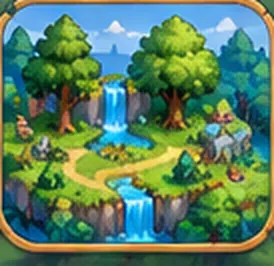

<!doctype html>
<html lang="fr">
<head>

<meta charset="utf-8">
<meta name="viewport" content="width=device-width,initial-scale=1,viewport-fit=cover">
<meta name="theme-color" content="#173c42">
<title>Labyrinthe Aventure V4.3 — ELC Éducation</title>
<meta name="description" content="Explore des labyrinthes avec des personnages fantastiques. Livres éducatifs CE2–CM1 facultatifs. Jeu gratuit, sans publicité ni compte.">
<link rel="manifest" href="./manifest.webmanifest">
<meta name="apple-mobile-web-app-capable" content="yes">
<style>
:root{--ink:#133e47;--ink2:#527477;--cream:#fff9ec;--card:#fffef9;--mint:#def3e9;--green:#208577;--dark:#163e49;--gold:#f4bd5a;--purple:#8263c7;--red:#db705c;--border:#dfebdf}
*{box-sizing:border-box}html{-webkit-text-size-adjust:100%;scroll-behavior:smooth}body{margin:0;background:#f0f7ee;color:var(--ink);font-family:system-ui,-apple-system,'Segoe UI',Roboto,Arial,sans-serif}button,select{font:inherit}button{cursor:pointer;touch-action:manipulation}button:focus-visible,select:focus-visible{outline:3px solid #e5a63c;outline-offset:2px}.app{min-height:100vh;padding-bottom:env(safe-area-inset-bottom)}.top{position:sticky;top:0;z-index:20;background:#163c47;color:#fff;box-shadow:0 3px 0 #10323a}.topinner{height:64px;max-width:1020px;margin:auto;display:flex;align-items:center;justify-content:space-between;padding:0 15px;gap:8px}.brand{display:flex;align-items:center;gap:10px;min-width:0}.brandicon{font-size:26px;background:#28616a;border:1px solid #5c8d85;width:44px;height:44px;border-radius:15px;text-align:center;line-height:41px}.brand b{display:block;font-size:17px;letter-spacing:-.4px;line-height:1.1}.brand small{font-size:10px;color:#b9dbd3;letter-spacing:1.6px;font-weight:800}.headbtn{background:#2b5b63;color:#f6fbf6;border:1px solid #547b79;border-radius:13px;padding:11px 12px;font-weight:900}.main{max-width:1020px;margin:0 auto;padding:20px 15px 34px}.hero{background:linear-gradient(125deg,#214d57,#2a7268 73%,#488d78);border-radius:28px;min-height:220px;position:relative;overflow:hidden;color:white;padding:28px 26px 24px;box-shadow:0 11px 24px #254c4325}.hero:after{content:'';position:absolute;bottom:-88px;right:-50px;width:300px;height:190px;background:#65a881;opacity:.55;transform:rotate(-23deg);border-radius:60%}.hero .hill{position:absolute;bottom:-42px;right:45px;width:330px;height:145px;background:#8bb883;opacity:.48;border-radius:50%}.hero .tree{position:absolute;right:67px;top:17px;font-size:95px;filter:drop-shadow(3px 9px 2px #163e3955);transform:rotate(-9deg)}.hero .shine{position:absolute;font-size:18px;color:#f7ce78}.hero h1{position:relative;z-index:1;margin:0 0 8px;font-size:clamp(27px,5vw,42px);line-height:1.06;letter-spacing:-1px;max-width:390px}.hero p{position:relative;z-index:1;font-size:14px;max-width:340px;line-height:1.5;color:#e4f6e9;margin:0 0 19px}.hero button{position:relative;z-index:2}.btn{border:0;border-radius:15px;min-height:45px;padding:11px 17px;background:#f3bc58;color:#553e24;font-weight:900;box-shadow:0 3px 0 #c38b35;transition:transform .1s}.btn:active,.control:active{transform:translateY(2px);box-shadow:0 1px 0 #ab7a39}.btn.secondary{background:white;color:#285e5d;box-shadow:0 3px 0 #c5d7ce}.btn.deep{background:#24847b;color:white;box-shadow:0 3px 0 #146357}.btn.ghost{background:#edf6ee;color:#27665f;box-shadow:none}.btn.small{min-height:38px;font-size:13px;padding:9px 12px}.btn:disabled{opacity:.5;cursor:not-allowed}.section-title{display:flex;align-items:center;justify-content:space-between;margin:25px 0 12px;gap:10px}.section-title h2{font-size:20px;margin:0;letter-spacing:-.4px}.section-title .sub{font-size:12px;color:var(--ink2)}.stats{display:grid;grid-template-columns:repeat(3,1fr);gap:10px;margin:14px 0 3px}.stat{background:#fff;border:1px solid var(--border);border-radius:17px;padding:13px 9px;box-shadow:0 3px 0 #dceadf}.stat .num{display:block;font-size:24px;font-weight:950;letter-spacing:-.6px}.stat .lbl{display:block;color:var(--ink2);font-size:11px;font-weight:750}.tabs{display:grid;grid-template-columns:repeat(3,minmax(0,1fr));gap:7px;background:#e1eee6;padding:6px;border-radius:18px;margin-top:21px}.tab{background:transparent;border:0;border-radius:13px;padding:12px 4px;color:#5a7770;font-weight:900;font-size:13px;white-space:nowrap}.tab.active{color:#1f5b57;background:white;box-shadow:0 3px 9px #294f3517}.worldgrid{display:grid;grid-template-columns:repeat(3,minmax(0,1fr));gap:12px}.world{position:relative;min-height:185px;overflow:hidden;border:1px solid #dce8dd;border-radius:20px;padding:17px;color:#fff;text-align:left;box-shadow:0 5px 0 #d2e4d6;display:flex;flex-direction:column;align-items:flex-start;justify-content:flex-end}.world:before{content:'';position:absolute;width:160px;height:140px;border-radius:50%;right:-53px;top:-44px;background:#ffffff26}.world.forest{background:linear-gradient(150deg,#508d59,#2b6860)}.world.ruins{background:linear-gradient(150deg,#b27758,#764b66)}.world.cave{background:linear-gradient(150deg,#6276b0,#584886)}.worldicon{position:absolute;top:21px;left:18px;font-size:42px;filter:drop-shadow(2px 4px 2px #0002)}.world strong{position:relative;font-size:18px;line-height:1.12}.world span{position:relative;font-size:12px;opacity:.9;margin-top:6px}.world.locked{filter:saturate(.65);opacity:.73}.panel{border-radius:21px;background:var(--card);border:1px solid #dce9dd;padding:17px;box-shadow:0 5px 0 #dfebdf}.muted{color:var(--ink2)}.levelgrid{display:grid;grid-template-columns:repeat(3,1fr);gap:8px}.levelbtn{background:#f0f8f1;border:1px solid #d6e7d9;border-radius:14px;text-align:left;padding:12px 10px;color:var(--ink);min-height:94px}.levelbtn b{display:block;font-size:16px}.levelbtn small{display:block;font-size:11px;color:#5c7770;margin-top:3px}.levelbtn .stars{color:#d69d32;letter-spacing:1px;font-size:13px}.levelbtn.locked{opacity:.47;filter:grayscale(1)}.levelbtn.done{border-color:#8fc8ad;background:#eaf9ed}.modebox{display:grid;grid-template-columns:1fr 1fr;gap:13px}.modebox .panel{min-height:150px}.modebox h3{margin:0 0 7px;font-size:18px}.modebox p{font-size:13px;color:var(--ink2);line-height:1.45}.selector{display:block;width:100%;border:1px solid #b8d3c5;background:#f7fcf7;border-radius:13px;margin:9px 0;padding:11px;color:var(--ink);font-weight:700}.gamepage{max-width:730px;margin:0 auto}.gamehead{display:flex;align-items:center;gap:11px;margin-bottom:10px}.gamehead .ttl{flex:1;min-width:0}.gamehead h2{margin:0;font-size:19px}.gamehead p{margin:2px 0 0;font-size:12px;color:var(--ink2)}.mini-btn{border:1px solid #c4dbd0;background:#fff;border-radius:12px;color:#28665e;min-height:42px;padding:8px 11px;font-weight:850}.hud{display:flex;gap:7px;flex-wrap:wrap;margin-bottom:12px}.chip{display:inline-flex;align-items:center;gap:4px;padding:7px 10px;border-radius:20px;background:#fff;color:#356057;border:1px solid #d7e5db;font-size:12px;font-weight:850}.canvasframe{background:#163d48;padding:8px;border-radius:21px;box-shadow:0 7px 0 #123b41,0 14px 26px #194b4326;position:relative;overflow:hidden;max-width:570px;margin:0 auto}.canvasframe canvas{display:block;width:100%;height:auto;touch-action:none;border-radius:13px;background:#294a45}.boardcaption{text-align:center;color:#d8f0e4;font-size:11px;font-weight:700;margin-top:8px;letter-spacing:.2px}.gamebottom{display:grid;grid-template-columns:1fr auto 1fr;align-items:center;gap:7px;margin:20px auto 12px;max-width:500px}.dpad{display:grid;grid-template-columns:repeat(3,57px);grid-template-rows:repeat(2,54px);gap:6px}.control{width:57px;height:54px;display:flex;align-items:center;justify-content:center;font-size:24px;border:1px solid #a9d5be;border-radius:15px;background:white;color:#236961;font-weight:950;box-shadow:0 3px 0 #b8d9bd;touch-action:manipulation;user-select:none}.control.up{grid-column:2;grid-row:1}.control.left{grid-column:1;grid-row:2}.control.down{grid-column:2;grid-row:2}.control.right{grid-column:3;grid-row:2}.sidecontrols{display:flex;flex-direction:column;align-items:center;gap:8px}.roundbutton{border:1px solid #c9e2d3;background:#fff;border-radius:14px;padding:8px 7px;min-width:82px;color:#346c64;font-size:12px;font-weight:850;min-height:45px}.objective{display:flex;gap:12px;align-items:flex-start;background:#f9fff6;border:1px solid #d8e8cd;border-radius:16px;padding:13px;margin:12px 0 10px;font-size:13px;line-height:1.45}.objective strong{display:block;margin-bottom:2px}.footer{text-align:center;font-size:11px;color:#75918a;margin:25px 0 8px}.overlay{position:fixed;z-index:50;inset:0;background:#12383bba;display:flex;align-items:center;justify-content:center;padding:17px}.dialog{width:100%;max-width:450px;background:#fffdf5;border:3px solid #f5f3db;border-radius:25px;padding:23px;box-shadow:0 16px 0 #102e3748,0 26px 60px #0b292a55;text-align:center;max-height:90vh;overflow-y:auto}.dialog h2{font-size:25px;margin:8px 0;color:#1f5552}.dialog p{line-height:1.55;color:#536e68;margin:8px 0 17px;font-size:14px}.dialog .emoji{font-size:58px}.dialog .actions{display:flex;flex-wrap:wrap;gap:9px;justify-content:center;margin-top:16px}.quiz-option{display:block;width:100%;margin:9px 0;border:2px solid #dae8d8;background:#f1f8f0;padding:15px;border-radius:14px;text-align:left;font-weight:800;color:#1d5a57}.quiz-option:active{background:#d8f1e0}.feedback{background:#e7f4ea;color:#27695d;border-radius:13px;font-weight:800;padding:10px;font-size:13px}.feedback.wrong{background:#fff0e4;color:#915143}.toast{margin:9px auto 0;max-width:560px;text-align:center;color:#1c5c55;font-size:13px;font-weight:850;min-height:22px}.bar{height:8px;background:#d8eadd;border-radius:12px;overflow:hidden}.bar>div{height:100%;background:linear-gradient(90deg,#55b28b,#ebbb58);border-radius:10px}.help-note{background:#ecf4e8;padding:11px;border-radius:13px;font-size:13px;color:#4d6a61;text-align:left;line-height:1.5}.resume{border:1px solid #9fd1b4;background:#ebfbef;padding:13px;border-radius:17px;display:flex;align-items:center;gap:10px;justify-content:space-between;margin:11px 0}.resume b{font-size:13px}.resume small{color:#688375;display:block;font-size:11px}.worldhead{display:flex;align-items:center;gap:10px;margin:12px 0}.worldhead h2{margin:0;font-size:21px}.worldhead p{margin:2px 0 0;font-size:12px}.badge{font-size:10px;display:inline-block;background:#d8f1df;padding:5px 8px;border-radius:18px;color:#256955;font-weight:900}.stars{color:#dfac47}.sr-only{position:absolute;width:1px;height:1px;padding:0;margin:-1px;overflow:hidden;clip:rect(0,0,0,0);white-space:nowrap;border:0}@media(max-width:700px){.worldgrid{grid-template-columns:1fr}.world{min-height:119px}.worldicon{font-size:40px;top:26px}.world strong,.world span{padding-left:68px}.world .worldicon{padding-left:0;opacity:1;font-size:42px;left:18px;top:21px}.hero{min-height:225px}.hero .tree{right:2px;top:37px;font-size:80px;opacity:.85}.hero h1,.hero p{max-width:75%}.modebox{grid-template-columns:1fr}.main{padding:14px 12px 25px}.levelgrid{grid-template-columns:repeat(2,1fr)}.gamebottom{margin-top:19px}.sidecontrols{gap:7px}.roundbutton{min-width:71px}.gamehead h2{font-size:17px}}@media(max-width:390px){.brand b{font-size:14px}.brand small{font-size:9px}.headbtn{padding:8px 9px}.topinner{height:58px}.hero h1{font-size:28px}.gamebottom{gap:2px}.dpad{grid-template-columns:repeat(3,51px);grid-template-rows:repeat(2,50px);gap:4px}.control{width:51px;height:50px}.roundbutton{font-size:11px;min-width:62px}.chip{font-size:11px;padding:6px 8px}.stat .num{font-size:21px}}@media(min-width:750px){.canvasframe{padding:12px}.topinner{height:73px}.stats{grid-template-columns:repeat(3,1fr)}}@media(prefers-reduced-motion:reduce){html{scroll-behavior:auto}.btn{transition:none}}

/* V1 player selection, question books and small-device refinements */
.picker{margin-top:16px;padding:15px}.picker .section-title h2{font-size:18px}
.avatar-list{display:flex;overflow-x:auto;gap:9px;padding:4px 1px 10px;scroll-snap-type:x proximity;-webkit-overflow-scrolling:touch}
.avatar-choice{flex:0 0 92px;scroll-snap-align:start;background:#f0f8f1;border:2px solid #d6e8df;border-radius:16px;min-height:102px;display:flex;align-items:center;justify-content:center;flex-direction:column;gap:3px;color:#416d67;padding:8px 4px;font-weight:800}
.avatar-choice.picked{background:#fff1c9;border:3px solid #e1ae49;box-shadow:0 3px 0 #e9d6ad;color:#61491c}
.avatar-pic{font-size:43px;line-height:1.25;filter:drop-shadow(0 3px 2px #1233)}.avatar-choice small{font-size:10px;font-weight:900;white-space:nowrap}
.grade-row{margin-top:5px;padding-top:13px;border-top:1px solid #e1ebe3;display:flex;align-items:center;justify-content:space-between;gap:10px;flex-wrap:wrap}.grade-row b{display:block;font-size:13px}.grade-row small{display:block;color:#72877e;font-size:11px}.grade-buttons{display:flex;gap:5px}.grade-btn{background:#f1f7f2;border:1px solid #cfe0d4;color:#4a7268;font-weight:900;border-radius:11px;min-width:58px;padding:9px}.grade-btn.chosen{background:#28796d;color:white;border-color:#28796d}
.booklegend{display:flex;gap:6px;flex-wrap:wrap}.subjectchip{display:inline-flex;align-items:center;gap:5px;border-radius:100px;background:#f8f2e6;border:1px solid var(--subject);color:#28474a;font-size:11px;font-weight:850;padding:6px 9px}.game-legend{margin-top:8px}.bookbadge{display:inline-block;border-radius:20px;padding:7px 14px;color:#1e3033;font-size:12px;font-weight:950}.quiz-option:focus-visible{outline:3px solid #e5a63c}.quiz-option{min-height:54px}.dialog h2{line-height:1.15}.world{transition:transform .1s}.world:hover{transform:translateY(-1px)}
@media(max-width:600px){.main{padding:13px 10px 30px}.hero{padding:24px 20px;min-height:215px}.hero .tree{right:10px;top:24px;font-size:67px;opacity:.6}.hero h1{max-width:245px}.hero p{max-width:265px}.worldgrid{grid-template-columns:1fr 1fr;gap:10px}.world{min-height:150px;padding:12px}.worldicon{font-size:33px;top:13px;left:12px}.world strong{font-size:16px}.world span{font-size:11px}.gamebottom{grid-template-columns:1fr auto 1fr;gap:1px}.dpad{grid-template-columns:repeat(3,52px);grid-template-rows:repeat(2,52px);gap:5px}.control{width:52px;height:52px}.sidecontrols{gap:5px}.roundbutton{min-width:67px;font-size:11px}.canvasframe{padding:5px}.dialog{padding:17px}.dialog .emoji{font-size:44px}.dialog h2{font-size:22px}.levelgrid{grid-template-columns:repeat(2,1fr)}}
@media(max-width:350px){.dpad{grid-template-columns:repeat(3,43px);grid-template-rows:repeat(2,47px)}.control{width:43px;height:47px}.roundbutton{min-width:57px}.headbtn{padding:9px 8px}.brand b{font-size:15px}}


/* V1.1 : illustrations originales intégrées au jeu */
.hero{background:linear-gradient(90deg,#123d47f2 0%,#163e48cf 47%,#153d4245 100%),url("./assets/worlds/forest-splash.webp") center 45%/cover no-repeat}
.hero:after,.hero .hill{display:none}.hero h1,.hero p{max-width:320px}.hero .tree{display:none}
.world.forest{background:linear-gradient(0deg,#154137ed,#15413712 90%),url('./assets/worlds/forest.webp') center/cover}
.world.ruins{background:linear-gradient(0deg,#563425ed,#56342512 90%),url('./assets/worlds/ruins.webp') center/cover}
.world.cave{background:linear-gradient(0deg,#263765f2,#2637651b 90%),url('./assets/worlds/ice.webp') center/cover}
.worldicon{background:#ffffffa0;padding:3px 8px;border-radius:13px;filter:drop-shadow(0 2px 2px #162a27)}
.avatar-pic{width:70px;height:64px;overflow:hidden;border-radius:12px;background:#fff;display:flex;align-items:center;justify-content:center}
.avatar-art{height:70px;width:68px;object-fit:cover;object-position:top center;image-rendering:auto}
.avatar-choice{min-height:105px}.art-showcase{display:flex;align-items:center;gap:11px;background:#fff9e8;border:1px solid #e9ddbb;border-radius:17px;margin:14px 0;padding:10px 12px}
.art-showcase img{width:75px;height:70px;border-radius:13px;object-fit:cover}.art-showcase p{margin:4px 0 0;font-size:12px;line-height:1.4;color:#687b69}
.routecard{min-height:75px;width:100%;padding:13px 15px;display:flex;align-items:center;gap:14px;border-radius:15px;border:2px solid #c3e3cf;background:#eaf8ee;text-align:left;font-weight:800;color:#28565a;margin:8px 0}
.routecard:active{background:#cbead4}.camp-item{display:flex;align-items:center;gap:9px;padding:9px 0;border-bottom:1px solid #e7dfca}.camp-item>div{flex:1}.camp-item small{display:block;color:#60756c;font-size:12px}.camp-item .btn{white-space:nowrap}.routecard span{font-size:28px}.routecard small{display:block;font-weight:550;color:#547468;margin-top:4px}
.finds{display:flex;align-items:center;gap:6px;flex-wrap:wrap}.finds .chip{background:#fff2cf}.dialog.route{border-color:#e0cf94}
@media(max-width:390px){.avatar-pic{width:66px}.hero{background-position:center}.hero p{max-width:80%}}

/* V2.1 : textures provenant de véritables peintures numériques, chargées comme fichiers */
.world{background-size:cover!important;background-position:center!important}
.world.island{background:linear-gradient(0deg,#164c4ddf,#164c4d22),url('./assets/worlds/island.webp') center/cover}
.world.ice{background:linear-gradient(0deg,#2d4d7fe4,#2d4d7f20),url('./assets/worlds/ice.webp') center/cover}
.world.cloud{background:linear-gradient(0deg,#494172e4,#49417220),url('./assets/worlds/cloud.webp') center/cover}
.world.stars{background:linear-gradient(0deg,#402f73e4,#402f7320),url('./assets/worlds/stars.webp') center/cover}
.world-icon-actual{display:block;width:100%;height:124px;object-fit:cover;border-radius:12px;margin-bottom:9px}
.hero{background-size:cover}.canvasframe{border:4px solid #b6d6b6;box-shadow:0 8px 23px #214a3226}
.game-legend{margin-top:8px}.control{touch-action:manipulation}
.art-showcase img{object-fit:cover}.tile-preamble{padding:6px 10px;font-size:12px;color:#2c6056;background:#f5efdb;border-radius:10px;margin:7px 0}

/* V4.0 - compact controls remain visible on phones, without covering the maze or quiz. */
@media(max-width:600px){
 .gamebottom{position:sticky;bottom:env(safe-area-inset-bottom,0px);z-index:9;background:#eaf5edee;border:1px solid #d0e5d8;border-radius:19px;padding:6px;margin-top:12px;backdrop-filter:blur(7px);box-shadow:0 -4px 18px #1b483322;}
 .gamebottom .sidecontrols{gap:4px;}
 .gamebottom .roundbutton{min-height:48px;padding:5px 7px;font-size:11px;}
 .gamebottom .dpad{gap:3px;}
 .gamebottom .control{width:48px;height:47px;}
 .gamepage .hud{gap:5px;margin-bottom:9px;}
 .gamepage .chip{padding:5px 8px;font-size:11px;}
 .boardcaption{font-size:10px;}
}
@media(prefers-reduced-motion:reduce){.gamebottom{backdrop-filter:none;}}

/* V4.1 - interface de jeu épurée, appliquée à tous les labyrinthes. */
.top.compacttop .topinner{height:52px;max-width:730px;padding:0 11px}
.top.compacttop .brandicon{width:37px;height:37px;line-height:35px;font-size:20px;border-radius:12px}
.top.compacttop .brand b{font-size:16px;line-height:1.1}
.top.compacttop .headbtn{min-width:44px;min-height:42px;font-size:21px;padding:6px 9px}
.gamepage{padding-top:10px;max-width:730px}
.gamepage .gamehead{gap:9px;margin-bottom:11px;min-height:48px}
.gamepage .gamehead .ttl{text-align:center}
.gamepage .gamehead h2{font-size:clamp(18px,4.5vw,22px);line-height:1.2}
.gamepage .gamehead p{font-size:11px;margin-top:3px}
.gamepage .mini-btn{font-size:23px;min-width:48px;min-height:47px;padding:5px 9px;line-height:1;border-radius:16px}
.gamepage .canvasframe{padding:7px;box-shadow:0 4px 0 #123b41,0 8px 18px #194b4321;margin:0 auto}
.gamepage .compact-toast{margin:5px auto 0;min-height:0;font-size:12px}
.gamepage .compact-toast:empty{display:none}
.gamepage .gamebottom.clean-controls{display:flex;align-items:center;justify-content:space-between;gap:9px;max-width:530px;margin:13px auto 4px;padding:0;background:transparent;border:0;position:static;box-shadow:none;backdrop-filter:none}
.gamepage .clean-controls .dpad{display:grid;grid-template-columns:repeat(3,57px);grid-template-rows:repeat(3,52px);gap:4px}
.gamepage .clean-controls .control{width:57px;height:52px;min-height:52px;border-radius:15px;font-size:25px}
.gamepage .clean-controls .control.up{grid-row:1;grid-column:2}
.gamepage .clean-controls .control.left{grid-row:2;grid-column:1}
.gamepage .clean-controls .control.down{grid-row:3;grid-column:2}
.gamepage .clean-controls .control.right{grid-row:2;grid-column:3}
.gamepage .smallside{flex:0 0 54px;height:54px;display:flex;align-items:center;justify-content:center;border-radius:16px;border:1px solid #bddaca;background:#fff;box-shadow:0 3px 0 #b8d9bd;font-size:25px;color:#245d58}
.gamepage .context-actions{display:flex;justify-content:center;gap:10px;flex-wrap:wrap;max-width:550px;margin:8px auto 4px;min-height:0}
.gamepage .context-actions:empty{display:none}
.context-btn{border:1px solid #c4d8c9;background:#fff9e6;border-radius:14px;font-weight:850;padding:10px 18px;color:#306258;font-size:14px}
.pause-summary{text-align:left;background:#edf6ee;border-radius:13px;padding:12px;margin:11px 0 13px}
.pause-summary b,.pause-summary small{display:block}
.pause-summary small{color:#56776e;margin:5px 0}
.pause-summary p{font-size:12px;margin:7px 0 0;line-height:1.5}
.pause-tools{display:grid;grid-template-columns:repeat(2,minmax(0,1fr));gap:7px;margin:12px 0}
.pause-tools button{background:white;border:1px solid #cde2d2;border-radius:12px;min-height:44px;color:#285e59;font-weight:800;font-size:13px}
.dialog .pause-foot{font-size:11px;margin:12px 0 0}
@media(max-width:600px){
 .gamepage{padding:8px 9px 15px}
 .gamepage .canvasframe{padding:6px;border-radius:18px}
 .gamepage .gamebottom.clean-controls{padding:0 3px;position:static;z-index:auto;margin:12px auto 3px}
 .gamepage .clean-controls .dpad{grid-template-columns:repeat(3,52px);grid-template-rows:repeat(3,50px);gap:3px}
 .gamepage .clean-controls .control{width:52px;height:50px;min-height:50px;font-size:23px}
 .gamepage .smallside{flex-basis:49px;height:49px;font-size:23px}
 .gamepage .gamehead{margin-bottom:9px}
 .gamepage .gamehead p{font-size:11px}
}
@media(max-width:350px){.gamepage .clean-controls .dpad{grid-template-columns:repeat(3,46px);grid-template-rows:repeat(3,46px)}.gamepage .clean-controls .control{width:46px;height:46px;min-height:46px}.gamepage .smallside{flex-basis:44px;height:47px}}

/* V4.2: old-Android-safe responsive layout; V4.1 clean UI retained */
.overlay{position:fixed;top:0;right:0;bottom:0;left:0;z-index:70;overflow-y:auto;overflow-x:hidden;padding:15px;display:-webkit-flex;display:flex;-webkit-align-items:center;align-items:center;-webkit-justify-content:center;justify-content:center}
.overlay .dialog{position:relative;margin:auto;max-height:calc(100vh - 32px);overflow-y:auto;overflow-x:hidden;-webkit-overflow-scrolling:touch}
.top.compacttop .topinner{max-width:860px}
.gamepage{width:100%;max-width:860px;margin:0 auto}
.gamepage .canvasframe{width:100%;max-width:740px;margin:0 auto}
.gamepage .gamebottom.clean-controls{max-width:650px;width:100%;margin:12px auto 4px}
.gamepage .smallside svg{display:block;width:28px;height:28px;pointer-events:none}
/* Four-direction pad: absolute-position fallback rather than modern CSS grid (old Samsung Chrome). */
.gamepage .clean-controls .dpad{display:block;position:relative;width:194px;height:178px;min-width:194px;min-height:178px;flex:0 0 194px}
.gamepage .clean-controls .control{position:absolute;display:block;width:58px;height:54px;min-height:54px;margin:0;padding:0;line-height:54px;text-align:center}
.gamepage .clean-controls .control.up{top:0;left:68px}
.gamepage .clean-controls .control.left{top:61px;left:0}
.gamepage .clean-controls .control.right{top:61px;left:136px}
.gamepage .clean-controls .control.down{top:124px;left:68px}
@media (max-width:600px){
 .gamepage .clean-controls .dpad{width:166px;height:152px;min-width:166px;min-height:152px;flex:0 0 166px}
 .gamepage .clean-controls .control{width:50px;height:46px;min-height:46px;line-height:46px}
 .gamepage .clean-controls .control.up{left:58px;top:0}
 .gamepage .clean-controls .control.left{left:0;top:53px}
 .gamepage .clean-controls .control.right{left:116px;top:53px}
 .gamepage .clean-controls .control.down{left:58px;top:106px}
 .gamepage .gamebottom.clean-controls{max-width:440px}
 .gamepage .smallside{width:48px;flex-basis:48px;height:48px}
}
@media (max-width:350px){
 .gamepage .clean-controls .dpad{width:148px;min-width:148px;flex-basis:148px;height:137px;min-height:137px}
 .gamepage .clean-controls .control{width:45px;height:43px;min-height:43px;line-height:43px}
 .gamepage .clean-controls .control.up{left:52px;top:0}
 .gamepage .clean-controls .control.left{left:0;top:47px}
 .gamepage .clean-controls .control.right{left:103px;top:47px}
 .gamepage .clean-controls .control.down{left:52px;top:94px}
}
@media(min-width:700px){
 .top.compacttop .topinner{max-width:850px}
 .gamepage{max-width:850px;padding:9px 16px 16px}
 .gamepage .gamehead{max-width:760px;margin:0 auto 9px}
 .gamepage .canvasframe{max-width:740px;padding:8px}
 .gamepage .gamebottom.clean-controls{max-width:690px}
 .gamepage .smallside{flex:0 0 60px;width:60px;height:60px}
 .gamepage .context-actions{max-width:700px}
}
@media(min-width:850px) and (orientation:landscape){
 .gamepage{max-width:1120px;display:grid;grid-template-columns:minmax(0,1fr) 185px;grid-template-rows:auto auto auto;grid-template-areas:'head head' 'board controls' 'message controls';gap:9px 16px;align-items:start}
 .gamepage .gamehead{grid-area:head;width:100%;max-width:none}
 .gamepage .canvasframe{grid-area:board;max-width:720px;justify-self:center}
 .gamepage .compact-toast{grid-area:message;margin:0}
 .gamepage .gamebottom.clean-controls{grid-area:controls;max-width:185px;width:185px;min-width:185px;margin:0;padding-top:12px;display:flex;flex-direction:column;justify-content:flex-start;align-items:center}
 .gamepage .gamebottom .smallside{flex:none;width:54px;height:54px}
 .gamepage .clean-controls .dpad{width:185px;min-width:185px;flex-basis:178px;height:178px}
 .gamepage .clean-controls .control.up{left:63px}
 .gamepage .clean-controls .control.left{left:0}
 .gamepage .clean-controls .control.right{left:127px}
 .gamepage .clean-controls .control.down{left:63px}
 .gamepage .canvasframe canvas{margin-left:auto;margin-right:auto}
 .gamepage .context-actions{grid-column:1 / -1;width:100%;margin-top:5px}
}
@media(max-height:650px){.overlay .dialog{max-height:calc(100vh - 18px)}}


/* V4.2 — readable typography and accessible touch controls, old Android CSS compatible. */
.a11y-dialog{max-width:690px;text-align:left;max-height:calc(100vh - 30px);overflow-y:auto;-webkit-overflow-scrolling:touch;padding:18px 20px}
.a11y-header{text-align:center}.a11y-header h2{margin:5px 0}.a11y-header p{margin:4px 0 16px}
.a11y-emoji{font-size:34px}.a11y-section{padding:11px 0;border-top:1px solid #d9e9de}
.a11y-section h3{font-size:var(--a11y-answer-size,18px);margin:3px 0 12px;color:#153b41}
.a11y-label{font-size:var(--a11y-base-size,16px);font-weight:900;margin:15px 0 7px;line-height:1.35}
.a11y-options{display:flex;flex-wrap:wrap;gap:7px}
.a11y-choice{min-height:48px;min-width:64px;flex:1 1 auto;border:2px solid #bed4c8;border-radius:12px;background:#fff;color:#254d4e;padding:9px 11px;font-weight:800;font-size:var(--a11y-small-size,14px);line-height:1.25}
.a11y-choice.selected{border-color:#227660;background:#d8f2de;box-shadow:inset 0 0 0 1px #227660}
.a11y-choice:focus-visible{outline:3px solid #e5a63c;outline-offset:2px}
.a11y-sample{padding:10px 12px;background:#eff7ee;border-left:4px solid #2c7967;border-radius:8px;font-size:var(--a11y-question-size,18px)!important;line-height:1.5}
.a11y-actions{display:flex;flex-wrap:wrap;gap:8px;justify-content:flex-end;margin-top:14px}
.a11y-actions .btn{flex:1 1 160px;min-height:52px;white-space:normal}
.a11y-note{margin:12px 0 0!important;font-size:var(--a11y-small-size,13px)!important;line-height:1.55}
/* Question and correction windows scale even when legacy content uses inline px sizes. */
.overlay .dialog{font-size:var(--a11y-base-size,16px);line-height:1.48}
.overlay .dialog h2{font-size:var(--a11y-heading-size,25px);line-height:1.24;overflow-wrap:break-word}
.overlay .dialog p,.overlay .dialog .help-note,.overlay .dialog .feedback,.overlay .dialog .pause-summary p,.overlay .dialog .routecard small{font-size:var(--a11y-explain-size,16px)!important;line-height:1.5;overflow-wrap:break-word}
.overlay .dialog .quiz-question{font-size:var(--a11y-question-size,19px)!important;line-height:1.48;white-space:normal}
.overlay .dialog .quiz-option{font-size:var(--a11y-answer-size,17px)!important;line-height:1.4;min-height:56px;overflow-wrap:break-word;white-space:normal;text-align:left}
.overlay .dialog .bookbadge{font-size:var(--a11y-small-size,14px);line-height:1.4;white-space:normal}
.overlay .dialog .btn,.overlay .dialog .pause-tools button,.overlay .dialog .routecard,.overlay .dialog .camp-item button{font-size:var(--a11y-btn-size,16px);line-height:1.35;min-height:48px;white-space:normal;overflow-wrap:break-word}
.overlay .dialog .pause-summary small,.overlay .dialog .pause-summary b{font-size:var(--a11y-small-size,14px)}
.top .brand b,.gamepage .gamehead h2{font-size:var(--a11y-home-size,17px);line-height:1.25}
.gamepage .gamehead p{font-size:var(--a11y-small-size,13px)}
.main .hero p,.main .world span,.main .levelbtn small,.main .muted,.main .panel p,.main .stat .lbl{font-size:var(--a11y-small-size,13px)!important;line-height:1.45}
.main .levelbtn b,.main .world strong,.main .section-title h2,.main .tab,.main .btn,.main .gamepage .context-btn{font-size:var(--a11y-home-size,16px)!important;line-height:1.35;white-space:normal;overflow-wrap:break-word}
.main .world,.main .levelbtn,.main .hero,.main .panel{min-width:0}
html.a11y-btn-large .gamepage .clean-controls .control{transform:scale(1.08)}
html.a11y-btn-xl .gamepage .clean-controls .control{transform:scale(1.16)}
html.a11y-btn-large .gamepage .smallside{transform:scale(1.05)}
html.a11y-btn-xl .gamepage .smallside{transform:scale(1.12)}
html.a11y-btn-xl .gamepage .context-btn{min-height:55px;padding:13px 16px}
html.a11y-contrast body{color:#102b30;background:#f8fff4}
html.a11y-contrast .overlay .dialog{background:#fff;border-color:#1f6056;color:#112d2d}
html.a11y-contrast .overlay .dialog .quiz-option,html.a11y-contrast .gamepage .control{border:3px solid #1b6558;background:#fff;color:#102f30}
html.a11y-contrast .overlay .dialog .help-note,html.a11y-contrast .pause-summary{color:#173b32;background:#e5f4e5}
html.a11y-contrast .gamepage .canvasframe{border-color:#286c5a;box-shadow:0 0 0 2px #286c5a}
html.a11y-contrast .a11y-choice.selected{background:#ffe9a9;border-color:#224a44}
@media(max-width:359px){html.a11y-btn-xl .gamepage .clean-controls .control{transform:scale(1.11)}html.a11y-btn-xl .gamepage .smallside{transform:scale(1.05)}.a11y-dialog{padding:12px}}


/* V4.2 — zoom and reduced motion */
html.a11y-reduced *,html.a11y-reduced *:before,html.a11y-reduced *:after{animation-duration:0.001ms!important;animation-iteration-count:1!important;transition-duration:0.001ms!important;scroll-behavior:auto!important}
html.a11y-reduced .gamebottom{backdrop-filter:none}
@media(prefers-reduced-motion:reduce){.gamepage .clean-controls .control,.gamepage .smallside{transition:none}}


/* V4.2 — comfortable reading and optional offline-system French speech. */
.a11y-dialog .speech-status{font-size:var(--a11y-explain-size,15px);border-radius:11px;background:#fff3dd;padding:10px 12px;color:#5b4422;line-height:1.5;margin:10px 0}
.a11y-comfort .overlay .dialog .quiz-question,.a11y-comfort .overlay .dialog .quiz-option,.a11y-comfort .overlay .dialog p,.a11y-comfort .overlay .dialog .help-note{line-height:1.9!important;letter-spacing:.025em;word-spacing:.055em}
.a11y-comfort .overlay .dialog .quiz-option{margin:14px 0}
.speech-button{display:block;width:100%;min-height:54px;background:#e4f4f6;border:2px solid #236d75;color:#214d57;border-radius:14px;font-size:var(--a11y-btn-size,16px);font-weight:800;margin:12px 0}
.speech-message{color:#715124;font-size:var(--a11y-small-size,14px);line-height:1.4;background:#fff4dc;border-radius:9px;padding:9px;margin:8px 0}


/* ELC V4.3: illustrated world chooser (no new decoration on the maze grid). */
.main .stats{grid-template-columns:repeat(3,minmax(0,1fr))}.main .stats .stat{min-width:0;overflow-wrap:anywhere}@media(max-width:420px){.main .stats{grid-template-columns:repeat(2,minmax(0,1fr))}.main .stats .stat:last-child{grid-column:1/-1}}
.realm-gallery{margin:16px 0 20px;scroll-margin-top:80px}
.realm-gallery .section-title{margin:7px 0 12px}
.realm-gallery .section-title h2{font-size:clamp(20px,3vw,26px)}
.realm-gallery .sub{color:#54726c}
.realm-filters{display:flex;gap:7px;overflow-x:auto;padding:5px 1px 12px;scrollbar-width:thin;-webkit-overflow-scrolling:touch}
.realm-filter{white-space:nowrap;min-height:41px;padding:8px 14px;background:#fff;border:1.5px solid #d4e8da;border-radius:22px;color:#28534f;font-size:var(--a11y-small-size,13px);font-weight:800}
.realm-filter.picked{background:#245951;color:#fff;border-color:#245951}
.realm-grid{display:grid;grid-template-columns:repeat(2,minmax(0,1fr));gap:12px}
.realm-card{border:1.5px solid #c9ded1;background:#fffdf7;border-radius:18px;padding:0;text-align:left;overflow:hidden;color:#204e4a;position:relative;display:flex;flex-direction:column;min-height:165px;box-shadow:0 3px 0 #d4e8d4}
.realm-card[hidden]{display:none!important}
.realm-thumb{width:100%;height:104px;display:block;object-fit:cover;background:#b3dec4}
.realm-card-content{padding:10px 10px 11px;display:flex;flex-direction:column;gap:3px;flex:1}
.realm-card strong{font-size:var(--a11y-home-size,14px);line-height:1.17;font-weight:900}
.realm-card small{font-size:var(--a11y-small-size,11px);color:#58746d}
.realm-card .realm-emoji{position:absolute;left:8px;top:8px;font-size:21px;background:#ffffffdd;border-radius:11px;padding:5px;line-height:1}
.realm-card .realm-progress{color:#357363;font-weight:800}
.realm-card:focus-visible{outline:3px solid #f1b545;outline-offset:2px}
.realm-header-image{width:100%;height:clamp(145px,30vw,255px);object-fit:cover;border-radius:20px;display:block;margin:10px 0 16px}
.world-quest-step{display:flex;flex-direction:column;gap:5px;align-items:flex-start;text-align:left;min-height:95px}
.world-quest-step strong{font-size:var(--a11y-home-size,15px)}
.world-quest-step small{font-size:var(--a11y-small-size,12px)}
.world-quest-step.locked{opacity:.6}
.classic-archive{margin:19px 0 7px;border:1px solid #dae8dc;border-radius:14px;padding:12px;background:#f8faf6}
.classic-archive summary{cursor:pointer;font-weight:850;min-height:40px;display:flex;align-items:center}
.classic-archive .levelgrid{margin-top:9px}
@media(min-width:620px){.realm-grid{grid-template-columns:repeat(3,minmax(0,1fr));gap:15px}.realm-thumb{height:120px}.realm-card strong{font-size:var(--a11y-home-size,15px)}}
@media(min-width:980px){.realm-grid{grid-template-columns:repeat(4,minmax(0,1fr))}.realm-thumb{height:145px}}
@media(max-width:360px){.realm-grid{gap:8px}.realm-card strong{font-size:var(--a11y-home-size,13px)}.realm-thumb{height:94px}}
@media(prefers-reduced-motion:no-preference){.realm-card:active{transform:scale(.986)}}

</style>
</head>
<body>
<div id="app" class="app"></div>
<script>
(function(){
'use strict';
var STORAGE='elc_labyrinthe_aventure_v10';
var ART_AVATARS={};var ART_READY={};var HERO_OUTLINES={"boy":[[36,1],[25,8],[27,11],[19,22],[19,26],[23,28],[19,36],[29,50],[29,62],[20,68],[16,77],[18,85],[14,91],[14,101],[24,110],[23,115],[26,118],[37,118],[34,127],[79,127],[76,119],[80,114],[78,106],[81,104],[85,108],[91,108],[95,103],[94,97],[78,76],[78,66],[86,59],[87,47],[91,41],[97,38],[97,28],[102,28],[101,20],[94,11],[97,4],[86,0]],"girl":[[34,0],[25,4],[15,14],[9,26],[7,42],[0,49],[0,102],[6,107],[13,107],[19,116],[13,125],[0,127],[71,127],[66,124],[61,109],[74,114],[77,93],[81,88],[82,94],[87,87],[82,64],[77,59],[77,50],[84,41],[83,27],[75,14],[55,0]],"dragon":[[9,0],[14,5],[15,21],[11,25],[0,22],[0,127],[59,127],[55,117],[68,111],[68,71],[75,61],[78,48],[73,41],[81,25],[64,23],[61,20],[61,2],[55,4],[51,0],[45,0],[46,6],[36,4],[31,8],[23,0]],"unicorn":[[51,5],[31,6],[28,0],[23,0],[18,10],[0,27],[0,127],[45,123],[43,113],[48,102],[43,76],[59,73],[69,64],[69,57],[61,49],[62,38],[67,37],[70,32],[65,30],[63,17]],"fox":[[106,28],[100,26],[80,39],[56,36],[45,26],[39,37],[38,33],[37,52],[42,66],[36,78],[44,88],[53,93],[52,97],[39,108],[29,97],[12,97],[0,109],[0,127],[7,122],[15,122],[21,127],[67,127],[67,108],[98,89],[105,79],[101,75],[100,62],[105,51]],"robot":[[57,30],[24,29],[13,34],[6,42],[2,51],[7,51],[14,60],[14,73],[6,83],[18,91],[12,94],[1,108],[0,127],[68,125],[68,116],[53,93],[71,80],[77,71],[77,60],[68,40]],"cat":[[25,22],[19,38],[21,62],[16,84],[30,95],[13,103],[4,120],[0,116],[0,127],[65,127],[69,109],[67,100],[84,92],[87,82],[91,80],[87,76],[84,60],[88,51],[88,30],[82,26],[65,38],[47,36],[31,22]],"panda":[[0,21],[0,127],[65,127],[65,93],[69,92],[69,34],[65,34],[61,27],[52,21],[44,22],[38,28],[24,24],[8,28]]};
var TILE_IMAGES={};
var DECOR_INLINE={"butterfly":"","owl":""};var DECOR_IMAGES={};
['butterfly','owl'].forEach(function(name){var im=new Image();im.onload=function(){if(screen==='game')paint();};im.src=DECOR_INLINE[name]||'';DECOR_IMAGES[name]=im;});
var heroMove=null,heroFrame=0,heroFacing='down';
function drawDecorImage(c,name,x,y,w,h){var im=DECOR_IMAGES[name];if(im&&im.complete&&im.naturalWidth)c.drawImage(im,x,y,w,h);}
function decorateTile(c,x,y,z,t,world,rr){/* V4.1: no randomly placed small trees, bushes, rocks or flowers. */}

var TILE_SOURCES=[['floor.webp','wall.webp'],['ruins-floor.webp','ruins-wall.webp'],['ice-floor.webp','ice-wall.webp'],['island-floor.webp','island-wall.webp'],['cloud-floor.webp','cloud-wall.webp'],['stars-floor.webp','stars-wall.webp']];
TILE_SOURCES.forEach(function(pair,i){TILE_IMAGES[i]=pair.map(function(filename){var im=new Image();im.src='./assets/tiles/'+filename;im.onload=function(){if(screen==='game')paint();};return im;});});
['boy','girl','dragon','unicorn','fox','robot','cat','panda'].forEach(function(id){
 var img=new Image();
 /* Real transparent walking sprite, not the portrait with its background. */
 img.onload=function(){ART_AVATARS[id]=img;ART_READY[id]=true;if(screen==='game')paint();};
 img.onerror=function(){ART_READY[id]=false;if(screen==='game')paint();};
 img.src='./assets/sprites/'+id+'.webp?v=302';
});
var LEGACY_STORAGE='elc_labyrinthe_aventure_v01';
var WORLDS=[
{id:'forest',name:'Forêt des chemins',emoji:'🌳',desc:'Sentiers, clés et passages cachés',color:'#47865d'},
{id:'ruins',name:'Ruines oubliées',emoji:'🏛️',desc:'Portes anciennes, leviers et portails',color:'#a57657'},
{id:'cave',name:'Grottes des cristaux',emoji:'💎',desc:'Brouillard, secrets et gardiens',color:'#6875ad'}
];
var CAMPAIGN=[
['Le premier sentier','exit',9,101,0,'Trouve la sortie et découvre les premières bifurcations.'],
['La clairière cachée','treasure',9,227,0,'Récupère deux cristaux avant de sortir.'],
['La clé des racines','key',11,344,0,'Trouve la clé puis déverrouille le passage.'],
['Le labyrinthe des lucioles','fog',11,476,0,'Explore sans voir toute la carte à l’avance.'],
['Le pont des secrets','switch',11,591,0,'Active le levier pour traverser la grande porte.'],
['Le cœur de la forêt','both',13,683,0,'Clé, levier et trésors : prépare ton itinéraire.'],
['Les pierres anciennes','treasure',11,741,1,'Explore les deux ailes des ruines.'],
['La porte des rois','key',13,812,1,'Une clé permet d’ouvrir la porte du palais.'],
['Le mécanisme secret','switch',13,955,1,'Trouve la manette et débloque la sortie.'],
['Les portails jumeaux','portal',13,1043,1,'Essaie les portails pour explorer autrement.'],
['Le gardien endormi','guard',13,1179,1,'Évite le gardien, il ne fait que patrouiller.'],
['Le grand sanctuaire','both',15,1217,1,'Deux mécanismes et plusieurs itinéraires.'],
['La lueur des cristaux','fog',11,1389,2,'Avance doucement dans le brouillard.'],
['Les trois trésors','treasure',13,1422,2,'Découvre les cristaux au fond de la grotte.'],
['Les portes de glace','key',15,1517,2,'Trouve l’ancienne clé bleue.'],
['Le passage lumineux','portal',15,1625,2,'Utilise les portails pour changer de zone.'],
['Les ombres dansantes','guard',15,1771,2,'Observe les mouvements de la petite ombre.'],
['La chambre du grand cristal','both',17,1893,2,'Dernier grand labyrinthe : explore et réfléchis.']
].map(function(a,i){return{id:'c'+i,idx:i,title:a[0],type:a[1],size:a[2],seed:a[3],world:a[4],desc:a[5],mode:'campaign'};});
// Existing 18 chapters are kept, with four additional, progressively larger maps per world.
var OLD_CAMPAIGN=CAMPAIGN.slice();
var EXPANSIONS=[
 [['Les sentiers entrelacés','treasure',15,2011,0,'Plusieurs routes et cinq trésors à trouver.'],['Le jardin sans fin','fog',17,2073,0,'La carte se révèle progressivement.'],['L’arbre aux cent chemins','portal',19,2119,0,'Explorer des raccourcis entre les branches.'],['Le secret de la forêt','both',21,2251,0,'Grande expédition au cœur de la forêt.']],
 [['L’escalier des mille portes','key',17,2303,1,'Une porte et plusieurs chemins possibles.'],['Le temple renversé','portal',19,2417,1,'Portails et chemins cachés.'],['La salle des gardiens','guard',21,2543,1,'Le grand dédale des fantômes amicaux.'],['Le palais des labyrinthes','both',23,2647,1,'Le plus grand palais des ruines.']],
 [['La vallée souterraine','treasure',17,2753,2,'Découvre les trésors cachés sous terre.'],['Les cavernes infinies','fog',19,2819,2,'Reste attentif à ton itinéraire.'],['Le royaume des portails','portal',23,2963,2,'Une vaste carte aux passages magiques.'],['Le cristal des étoiles','both',25,3037,2,'Grand final : un gigantesque labyrinthe.']]
];
CAMPAIGN=[];
for(var wi=0;wi<3;wi++){
 var section=OLD_CAMPAIGN.slice(wi*6,wi*6+6);
 EXPANSIONS[wi].forEach(function(a){section.push({title:a[0],type:a[1],size:a[2],seed:a[3],world:a[4],desc:a[5],mode:'campaign'});});
 section.forEach(function(c){c.idx=CAMPAIGN.length;c.id='c'+c.idx;CAMPAIGN.push(c);});
}


WORLDS.push(
 {id:'island',name:'Île des pirates',emoji:'🏴‍☠️',desc:'Rivières, ponts, cartes et îlots secrets',color:'#2d94a7'},
 {id:'ice',name:'Montagnes de glace',emoji:'❄️',desc:'Cristaux, vents gelés et passages transparents',color:'#5d94c0'},
 {id:'stars',name:'Observatoire des étoiles',emoji:'🌌',desc:'Portails célestes, miroirs et constellations',color:'#765cb5'}
);
var NEW_WORLDS_LEVELS=[
 ['Île des navigateurs','exit',17],['La première carte','treasure',17],['Le phare éteint','switch',19],['L’anse aux trésors','key',19],['Le repaire des mouettes','guard',21],['Le pont des marées','portal',21],['Les grottes du capitaine','treasure',23],['Les trois rivages','fog',23],['Le coffre de corail','both',25],['Le grand archipel','both',25],
 ['Le sentier givré','exit',17],['Les stalactites','treasure',19],['Le pont de glace','key',19],['La vallée blanche','fog',21],['La porte des neiges','switch',21],['Les ombres du glacier','guard',23],['Les cristaux du nord','portal',23],['Le temple du givre','both',25],['La traversée des pics','treasure',25],['Le sommet lumineux','both',27],
 ['Le sentier des comètes','exit',19],['La poussière d’étoiles','treasure',19],['Les trois lunes','portal',21],['Le temple lunaire','key',21],['La porte céleste','switch',23],['Le jardin des planètes','fog',23],['Les gardiens des astres','guard',25],['La chambre des constellations','both',25],['Le labyrinthe de lumière','portal',27],['L’ultime observatoire','both',27]
];
NEW_WORLDS_LEVELS.forEach(function(a,i){var id=CAMPAIGN.length;CAMPAIGN.push({id:'c'+id,idx:id,title:a[0],type:a[1],size:a[2],seed:61000+i*977,world:3+Math.floor(i/10),desc:'Trouve plusieurs chemins, des secrets et la sortie du monde.',mode:'campaign',branching:i%2===0});});

/* V4.3 - 28 independent story worlds. Original 60 legacy campaign levels remain untouched. */
var THEMED_WORLDS=[{"id":"forest","name":"Forêt des chemins","emoji":"🌳","desc":"Sentiers, raccourcis et haies","group":"nature","focus":"monde","special":"fog","card":"./assets/world-cards/forest.webp","palette":{"floor":"#A9D99E","wall":"#548761","light":"#87B88C"}},{"id":"ruins","name":"Ruines oubliées","emoji":"🏛️","desc":"Portes et leviers antiques","group":"histoires","focus":"histoire","special":"switch","card":"./assets/world-cards/ruins.webp","palette":{"floor":"#E5CCA4","wall":"#95715C","light":"#C8A27E"}},{"id":"cave","name":"Grottes des cristaux","emoji":"💎","desc":"Cristaux et passages cachés","group":"nature","focus":"sciences","special":"portal","card":"./assets/world-cards/cave.webp","palette":{"floor":"#C3CCEA","wall":"#5B6699","light":"#97AAD8"}},{"id":"island","name":"Île des pirates","emoji":"🏴‍☠️","desc":"Ponts et coffres de pirates","group":"aventures","focus":"geographie","special":"portal","card":"./assets/world-cards/island.webp","palette":{"floor":"#E5DCA8","wall":"#448A87","light":"#7DB9AF"}},{"id":"ice","name":"Montagnes de glace","emoji":"❄️","desc":"Chemins givrés et trésors bleus","group":"nature","focus":"sciences","special":"fog","card":"./assets/world-cards/ice.webp","palette":{"floor":"#DAEFFB","wall":"#609CBD","light":"#99CEDF"}},{"id":"stars","name":"Observatoire des étoiles","emoji":"🌌","desc":"Portails célestes et constellations","group":"sciences","focus":"sciences","special":"portal","card":"./assets/world-cards/stars.webp","palette":{"floor":"#D7D2FA","wall":"#69609A","light":"#9F96D7"}},{"id":"unicorn","name":"Royaume des licornes","emoji":"🦄","desc":"Arc-en-ciel, passages magiques et cristaux","group":"magie","focus":"francais","special":"portal","card":"./assets/world-cards/unicorn.webp","palette":{"floor":"#F5DBF6","wall":"#A87BB9","light":"#E2AFD9"}},{"id":"dragons","name":"Vallée des dragons","emoji":"🐉","desc":"Tours, ponts et dragons amicaux","group":"magie","focus":"logique","special":"guard","card":"./assets/world-cards/dragons.webp","palette":{"floor":"#E9D4AD","wall":"#9B6E58","light":"#D1A17A"}},{"id":"dinosaurs","name":"Vallée des dinosaures","emoji":"🦕","desc":"Fossiles, jungle et animaux anciens","group":"nature","focus":"sciences","special":"fog","card":"./assets/world-cards/dinosaurs.webp","palette":{"floor":"#D5E4AC","wall":"#678C5F","light":"#A3BF77"}},{"id":"atlantis","name":"Cité sous-marine","emoji":"🐠","desc":"Passages de corail et palais engloutis","group":"aventures","focus":"monde","special":"portal","card":"./assets/world-cards/atlantis.webp","palette":{"floor":"#BEEBEA","wall":"#468F9E","light":"#8DCCD2"}},{"id":"candy","name":"Pays des bonbons","emoji":"🍬","desc":"Ponts sucrés et gourmandises imaginaires","group":"magie","focus":"maths","special":"fog","card":"./assets/world-cards/candy.webp","palette":{"floor":"#F9DCE5","wall":"#C779A4","light":"#EBA8B9"}},{"id":"robots","name":"Atelier des robots","emoji":"🤖","desc":"Machines, leviers et circuits","group":"sciences","focus":"sciences","special":"switch","card":"./assets/world-cards/robots.webp","palette":{"floor":"#D7E5F0","wall":"#617D99","light":"#A8BDCF"}},{"id":"planets","name":"Planètes mystérieuses","emoji":"🪐","desc":"Étoiles, lunes et portails","group":"sciences","focus":"sciences","special":"portal","card":"./assets/world-cards/planets.webp","palette":{"floor":"#D4C5F0","wall":"#5F529A","light":"#A091CE"}},{"id":"castle","name":"Château enchanté","emoji":"🏰","desc":"Portes royales et salles secrètes","group":"histoires","focus":"histoire","special":"key","card":"./assets/world-cards/castle.webp","palette":{"floor":"#E7E0C7","wall":"#887CA7","light":"#B4A7CE"}},{"id":"jungle","name":"Jungle des explorateurs","emoji":"🐒","desc":"Lianes, rivières et sentiers perdus","group":"nature","focus":"monde","special":"fog","card":"./assets/world-cards/jungle.webp","palette":{"floor":"#C8E5AF","wall":"#4B9061","light":"#91BE78"}},{"id":"volcano","name":"Volcan des géants","emoji":"🌋","desc":"Passerelles et roches de lave","group":"aventures","focus":"sciences","special":"guard","card":"./assets/world-cards/volcano.webp","palette":{"floor":"#F2D2B4","wall":"#9C534B","light":"#D99467"}},{"id":"pyramids","name":"Désert des pyramides","emoji":"🐪","desc":"Sables dorés et galeries anciennes","group":"histoires","focus":"histoire","special":"key","card":"./assets/world-cards/pyramids.webp","palette":{"floor":"#F4E6BE","wall":"#B98C54","light":"#DEC48A"}},{"id":"clouds","name":"Îles des nuages","emoji":"☁️","desc":"Ponts suspendus entre les nuages","group":"magie","focus":"geographie","special":"portal","card":"./assets/world-cards/clouds.webp","palette":{"floor":"#E4EFFB","wall":"#799CCB","light":"#B8D5EA"}},{"id":"reef","name":"Récif des coraux","emoji":"🐚","desc":"Poissons, récifs et couloirs bleus","group":"nature","focus":"sciences","special":"fog","card":"./assets/world-cards/reef.webp","palette":{"floor":"#C5E9EF","wall":"#4E9CB2","light":"#92CCCE"}},{"id":"fairies","name":"Jardin des fées","emoji":"🧚","desc":"Petites portes et clairières roses","group":"magie","focus":"citoyennete","special":"portal","card":"./assets/world-cards/fairies.webp","palette":{"floor":"#EEDAF2","wall":"#AA83B6","light":"#CBA6CE"}},{"id":"savanna","name":"Savane des animaux","emoji":"🦒","desc":"Herbes dorées et passages sauvages","group":"nature","focus":"monde","special":"guard","card":"./assets/world-cards/savanna.webp","palette":{"floor":"#E9DAA7","wall":"#A18C50","light":"#CEBC81"}},{"id":"knights","name":"Village des chevaliers","emoji":"🛡️","desc":"Tours, chemins et portes anciennes","group":"histoires","focus":"histoire","special":"key","card":"./assets/world-cards/knights.webp","palette":{"floor":"#E8D8B5","wall":"#8D8274","light":"#B8A898"}},{"id":"mountains","name":"Sommets des aigles","emoji":"🦅","desc":"Ponts des cimes et falaises","group":"aventures","focus":"geographie","special":"fog","card":"./assets/world-cards/mountains.webp","palette":{"floor":"#D9E6EA","wall":"#7295A7","light":"#A4C2D0"}},{"id":"clocks","name":"Ville des horloges","emoji":"⏰","desc":"Engrenages et chemins à choisir","group":"sciences","focus":"maths","special":"switch","card":"./assets/world-cards/clocks.webp","palette":{"floor":"#F2DAB1","wall":"#AA7A49","light":"#D5B178"}},{"id":"library","name":"Bibliothèque magique","emoji":"📚","desc":"Livres, indices et salles cachées","group":"histoires","focus":"francais","special":"key","card":"./assets/world-cards/library.webp","palette":{"floor":"#E4D4C0","wall":"#9B6A55","light":"#C9A78B"}},{"id":"music","name":"Pays de la musique","emoji":"🎵","desc":"Notes, ponts et sons mystérieux","group":"magie","focus":"francais","special":"portal","card":"./assets/world-cards/music.webp","palette":{"floor":"#F4DDE7","wall":"#B689AE","light":"#D8B4CE"}},{"id":"autumn","name":"Forêt d’automne","emoji":"🍁","desc":"Feuilles dorées et nouveaux chemins","group":"nature","focus":"monde","special":"fog","card":"./assets/world-cards/autumn.webp","palette":{"floor":"#F3DBB0","wall":"#A57453","light":"#DAAA76"}},{"id":"palace","name":"Palais des cristaux","emoji":"✨","desc":"Miroirs, portails et étincelles","group":"magie","focus":"logique","special":"portal","card":"./assets/world-cards/palace.webp","palette":{"floor":"#D9E8FA","wall":"#7596C8","light":"#AFCAEC"}}];
THEMED_WORLDS.forEach(function(w,i){if(i<6)Object.assign(WORLDS[i],w);else WORLDS.push(w);});
var WORLD_QUESTS=[[{"id":"w0-0","idx":0,"tier":0,"title":"Premiers pas · Forêt des chemins","type":"exit","size":9,"seed":94001,"world":0,"mode":"worldquest","branching":false,"desc":"🌳 Étape 1/6 : Sentiers, raccourcis et haies. Livres facultatifs.","subject":"monde"},{"id":"w0-1","idx":1,"tier":1,"title":"Les deux chemins · Forêt des chemins","type":"exit","size":11,"seed":95638,"world":0,"mode":"worldquest","branching":false,"desc":"🌳 Étape 2/6 : Sentiers, raccourcis et haies. Livres facultatifs.","subject":"monde"},{"id":"w0-2","idx":2,"tier":2,"title":"Chasse aux cristaux · Forêt des chemins","type":"treasure","size":13,"seed":97275,"world":0,"mode":"worldquest","branching":true,"desc":"🌳 Étape 3/6 : Sentiers, raccourcis et haies. Livres facultatifs.","subject":"monde"},{"id":"w0-3","idx":3,"tier":3,"title":"Le passage fermé · Forêt des chemins","type":"key","size":15,"seed":98912,"world":0,"mode":"worldquest","branching":true,"desc":"🌳 Étape 4/6 : Sentiers, raccourcis et haies. Livres facultatifs.","subject":"monde"},{"id":"w0-4","idx":4,"tier":4,"title":"La surprise du monde · Forêt des chemins","type":"fog","size":17,"seed":100549,"world":0,"mode":"worldquest","branching":true,"desc":"🌳 Étape 5/6 : Sentiers, raccourcis et haies. Livres facultatifs.","subject":"monde"},{"id":"w0-5","idx":5,"tier":5,"title":"Le grand labyrinthe · Forêt des chemins","type":"both","size":19,"seed":102186,"world":0,"mode":"worldquest","branching":true,"desc":"🌳 Étape 6/6 : Sentiers, raccourcis et haies. Livres facultatifs.","subject":"monde"}],[{"id":"w1-0","idx":0,"tier":0,"title":"Premiers pas · Ruines oubliées","type":"exit","size":9,"seed":94618,"world":1,"mode":"worldquest","branching":false,"desc":"🏛️ Étape 1/6 : Portes et leviers antiques. Livres facultatifs.","subject":"histoire"},{"id":"w1-1","idx":1,"tier":1,"title":"Les deux chemins · Ruines oubliées","type":"exit","size":11,"seed":96255,"world":1,"mode":"worldquest","branching":false,"desc":"🏛️ Étape 2/6 : Portes et leviers antiques. Livres facultatifs.","subject":"histoire"},{"id":"w1-2","idx":2,"tier":2,"title":"Chasse aux cristaux · Ruines oubliées","type":"treasure","size":13,"seed":97892,"world":1,"mode":"worldquest","branching":true,"desc":"🏛️ Étape 3/6 : Portes et leviers antiques. Livres facultatifs.","subject":"histoire"},{"id":"w1-3","idx":3,"tier":3,"title":"Le passage fermé · Ruines oubliées","type":"switch","size":15,"seed":99529,"world":1,"mode":"worldquest","branching":true,"desc":"🏛️ Étape 4/6 : Portes et leviers antiques. Livres facultatifs.","subject":"histoire"},{"id":"w1-4","idx":4,"tier":4,"title":"La surprise du monde · Ruines oubliées","type":"switch","size":17,"seed":101166,"world":1,"mode":"worldquest","branching":true,"desc":"🏛️ Étape 5/6 : Portes et leviers antiques. Livres facultatifs.","subject":"histoire"},{"id":"w1-5","idx":5,"tier":5,"title":"Le grand labyrinthe · Ruines oubliées","type":"both","size":19,"seed":102803,"world":1,"mode":"worldquest","branching":true,"desc":"🏛️ Étape 6/6 : Portes et leviers antiques. Livres facultatifs.","subject":"histoire"}],[{"id":"w2-0","idx":0,"tier":0,"title":"Premiers pas · Grottes des cristaux","type":"exit","size":9,"seed":95235,"world":2,"mode":"worldquest","branching":false,"desc":"💎 Étape 1/6 : Cristaux et passages cachés. Livres facultatifs.","subject":"sciences"},{"id":"w2-1","idx":1,"tier":1,"title":"Les deux chemins · Grottes des cristaux","type":"exit","size":11,"seed":96872,"world":2,"mode":"worldquest","branching":false,"desc":"💎 Étape 2/6 : Cristaux et passages cachés. Livres facultatifs.","subject":"sciences"},{"id":"w2-2","idx":2,"tier":2,"title":"Chasse aux cristaux · Grottes des cristaux","type":"treasure","size":13,"seed":98509,"world":2,"mode":"worldquest","branching":true,"desc":"💎 Étape 3/6 : Cristaux et passages cachés. Livres facultatifs.","subject":"sciences"},{"id":"w2-3","idx":3,"tier":3,"title":"Le passage fermé · Grottes des cristaux","type":"key","size":15,"seed":100146,"world":2,"mode":"worldquest","branching":true,"desc":"💎 Étape 4/6 : Cristaux et passages cachés. Livres facultatifs.","subject":"sciences"},{"id":"w2-4","idx":4,"tier":4,"title":"La surprise du monde · Grottes des cristaux","type":"portal","size":17,"seed":101783,"world":2,"mode":"worldquest","branching":true,"desc":"💎 Étape 5/6 : Cristaux et passages cachés. Livres facultatifs.","subject":"sciences"},{"id":"w2-5","idx":5,"tier":5,"title":"Le grand labyrinthe · Grottes des cristaux","type":"both","size":19,"seed":103491,"world":2,"mode":"worldquest","branching":true,"desc":"💎 Étape 6/6 : Cristaux et passages cachés. Livres facultatifs.","subject":"sciences"}],[{"id":"w3-0","idx":0,"tier":0,"title":"Premiers pas · Île des pirates","type":"exit","size":9,"seed":95852,"world":3,"mode":"worldquest","branching":false,"desc":"🏴‍☠️ Étape 1/6 : Ponts et coffres de pirates. Livres facultatifs.","subject":"geographie"},{"id":"w3-1","idx":1,"tier":1,"title":"Les deux chemins · Île des pirates","type":"exit","size":11,"seed":97489,"world":3,"mode":"worldquest","branching":false,"desc":"🏴‍☠️ Étape 2/6 : Ponts et coffres de pirates. Livres facultatifs.","subject":"geographie"},{"id":"w3-2","idx":2,"tier":2,"title":"Chasse aux cristaux · Île des pirates","type":"treasure","size":13,"seed":99126,"world":3,"mode":"worldquest","branching":true,"desc":"🏴‍☠️ Étape 3/6 : Ponts et coffres de pirates. Livres facultatifs.","subject":"geographie"},{"id":"w3-3","idx":3,"tier":3,"title":"Le passage fermé · Île des pirates","type":"switch","size":15,"seed":100763,"world":3,"mode":"worldquest","branching":true,"desc":"🏴‍☠️ Étape 4/6 : Ponts et coffres de pirates. Livres facultatifs.","subject":"geographie"},{"id":"w3-4","idx":4,"tier":4,"title":"La surprise du monde · Île des pirates","type":"portal","size":17,"seed":102400,"world":3,"mode":"worldquest","branching":true,"desc":"🏴‍☠️ Étape 5/6 : Ponts et coffres de pirates. Livres facultatifs.","subject":"geographie"},{"id":"w3-5","idx":5,"tier":5,"title":"Le grand labyrinthe · Île des pirates","type":"both","size":19,"seed":104037,"world":3,"mode":"worldquest","branching":true,"desc":"🏴‍☠️ Étape 6/6 : Ponts et coffres de pirates. Livres facultatifs.","subject":"geographie"}],[{"id":"w4-0","idx":0,"tier":0,"title":"Premiers pas · Montagnes de glace","type":"exit","size":9,"seed":96469,"world":4,"mode":"worldquest","branching":false,"desc":"❄️ Étape 1/6 : Chemins givrés et trésors bleus. Livres facultatifs.","subject":"sciences"},{"id":"w4-1","idx":1,"tier":1,"title":"Les deux chemins · Montagnes de glace","type":"exit","size":11,"seed":98106,"world":4,"mode":"worldquest","branching":false,"desc":"❄️ Étape 2/6 : Chemins givrés et trésors bleus. Livres facultatifs.","subject":"sciences"},{"id":"w4-2","idx":2,"tier":2,"title":"Chasse aux cristaux · Montagnes de glace","type":"treasure","size":13,"seed":99743,"world":4,"mode":"worldquest","branching":true,"desc":"❄️ Étape 3/6 : Chemins givrés et trésors bleus. Livres facultatifs.","subject":"sciences"},{"id":"w4-3","idx":3,"tier":3,"title":"Le passage fermé · Montagnes de glace","type":"key","size":15,"seed":101380,"world":4,"mode":"worldquest","branching":true,"desc":"❄️ Étape 4/6 : Chemins givrés et trésors bleus. Livres facultatifs.","subject":"sciences"},{"id":"w4-4","idx":4,"tier":4,"title":"La surprise du monde · Montagnes de glace","type":"fog","size":17,"seed":103017,"world":4,"mode":"worldquest","branching":true,"desc":"❄️ Étape 5/6 : Chemins givrés et trésors bleus. Livres facultatifs.","subject":"sciences"},{"id":"w4-5","idx":5,"tier":5,"title":"Le grand labyrinthe · Montagnes de glace","type":"both","size":19,"seed":104654,"world":4,"mode":"worldquest","branching":true,"desc":"❄️ Étape 6/6 : Chemins givrés et trésors bleus. Livres facultatifs.","subject":"sciences"}],[{"id":"w5-0","idx":0,"tier":0,"title":"Premiers pas · Observatoire des étoiles","type":"exit","size":9,"seed":97086,"world":5,"mode":"worldquest","branching":false,"desc":"🌌 Étape 1/6 : Portails célestes et constellations. Livres facultatifs.","subject":"sciences"},{"id":"w5-1","idx":1,"tier":1,"title":"Les deux chemins · Observatoire des étoiles","type":"exit","size":11,"seed":98723,"world":5,"mode":"worldquest","branching":false,"desc":"🌌 Étape 2/6 : Portails célestes et constellations. Livres facultatifs.","subject":"sciences"},{"id":"w5-2","idx":2,"tier":2,"title":"Chasse aux cristaux · Observatoire des étoiles","type":"treasure","size":13,"seed":100360,"world":5,"mode":"worldquest","branching":true,"desc":"🌌 Étape 3/6 : Portails célestes et constellations. Livres facultatifs.","subject":"sciences"},{"id":"w5-3","idx":3,"tier":3,"title":"Le passage fermé · Observatoire des étoiles","type":"switch","size":15,"seed":101997,"world":5,"mode":"worldquest","branching":true,"desc":"🌌 Étape 4/6 : Portails célestes et constellations. Livres facultatifs.","subject":"sciences"},{"id":"w5-4","idx":4,"tier":4,"title":"La surprise du monde · Observatoire des étoiles","type":"portal","size":17,"seed":103634,"world":5,"mode":"worldquest","branching":true,"desc":"🌌 Étape 5/6 : Portails célestes et constellations. Livres facultatifs.","subject":"sciences"},{"id":"w5-5","idx":5,"tier":5,"title":"Le grand labyrinthe · Observatoire des étoiles","type":"both","size":19,"seed":105271,"world":5,"mode":"worldquest","branching":true,"desc":"🌌 Étape 6/6 : Portails célestes et constellations. Livres facultatifs.","subject":"sciences"}],[{"id":"w6-0","idx":0,"tier":0,"title":"Premiers pas · Royaume des licornes","type":"exit","size":9,"seed":97703,"world":6,"mode":"worldquest","branching":false,"desc":"🦄 Étape 1/6 : Arc-en-ciel, passages magiques et cristaux. Livres facultatifs.","subject":"francais"},{"id":"w6-1","idx":1,"tier":1,"title":"Les deux chemins · Royaume des licornes","type":"exit","size":11,"seed":99340,"world":6,"mode":"worldquest","branching":false,"desc":"🦄 Étape 2/6 : Arc-en-ciel, passages magiques et cristaux. Livres facultatifs.","subject":"francais"},{"id":"w6-2","idx":2,"tier":2,"title":"Chasse aux cristaux · Royaume des licornes","type":"treasure","size":13,"seed":100977,"world":6,"mode":"worldquest","branching":true,"desc":"🦄 Étape 3/6 : Arc-en-ciel, passages magiques et cristaux. Livres facultatifs.","subject":"francais"},{"id":"w6-3","idx":3,"tier":3,"title":"Le passage fermé · Royaume des licornes","type":"key","size":15,"seed":102614,"world":6,"mode":"worldquest","branching":true,"desc":"🦄 Étape 4/6 : Arc-en-ciel, passages magiques et cristaux. Livres facultatifs.","subject":"francais"},{"id":"w6-4","idx":4,"tier":4,"title":"La surprise du monde · Royaume des licornes","type":"portal","size":17,"seed":104251,"world":6,"mode":"worldquest","branching":true,"desc":"🦄 Étape 5/6 : Arc-en-ciel, passages magiques et cristaux. Livres facultatifs.","subject":"francais"},{"id":"w6-5","idx":5,"tier":5,"title":"Le grand labyrinthe · Royaume des licornes","type":"both","size":19,"seed":105888,"world":6,"mode":"worldquest","branching":true,"desc":"🦄 Étape 6/6 : Arc-en-ciel, passages magiques et cristaux. Livres facultatifs.","subject":"francais"}],[{"id":"w7-0","idx":0,"tier":0,"title":"Premiers pas · Vallée des dragons","type":"exit","size":9,"seed":98320,"world":7,"mode":"worldquest","branching":false,"desc":"🐉 Étape 1/6 : Tours, ponts et dragons amicaux. Livres facultatifs.","subject":"logique"},{"id":"w7-1","idx":1,"tier":1,"title":"Les deux chemins · Vallée des dragons","type":"exit","size":11,"seed":99957,"world":7,"mode":"worldquest","branching":false,"desc":"🐉 Étape 2/6 : Tours, ponts et dragons amicaux. Livres facultatifs.","subject":"logique"},{"id":"w7-2","idx":2,"tier":2,"title":"Chasse aux cristaux · Vallée des dragons","type":"treasure","size":13,"seed":101594,"world":7,"mode":"worldquest","branching":true,"desc":"🐉 Étape 3/6 : Tours, ponts et dragons amicaux. Livres facultatifs.","subject":"logique"},{"id":"w7-3","idx":3,"tier":3,"title":"Le passage fermé · Vallée des dragons","type":"switch","size":15,"seed":103231,"world":7,"mode":"worldquest","branching":true,"desc":"🐉 Étape 4/6 : Tours, ponts et dragons amicaux. Livres facultatifs.","subject":"logique"},{"id":"w7-4","idx":4,"tier":4,"title":"La surprise du monde · Vallée des dragons","type":"guard","size":17,"seed":104868,"world":7,"mode":"worldquest","branching":true,"desc":"🐉 Étape 5/6 : Tours, ponts et dragons amicaux. Livres facultatifs.","subject":"logique"},{"id":"w7-5","idx":5,"tier":5,"title":"Le grand labyrinthe · Vallée des dragons","type":"both","size":19,"seed":106505,"world":7,"mode":"worldquest","branching":true,"desc":"🐉 Étape 6/6 : Tours, ponts et dragons amicaux. Livres facultatifs.","subject":"logique"}],[{"id":"w8-0","idx":0,"tier":0,"title":"Premiers pas · Vallée des dinosaures","type":"exit","size":9,"seed":98937,"world":8,"mode":"worldquest","branching":false,"desc":"🦕 Étape 1/6 : Fossiles, jungle et animaux anciens. Livres facultatifs.","subject":"sciences"},{"id":"w8-1","idx":1,"tier":1,"title":"Les deux chemins · Vallée des dinosaures","type":"exit","size":11,"seed":100574,"world":8,"mode":"worldquest","branching":false,"desc":"🦕 Étape 2/6 : Fossiles, jungle et animaux anciens. Livres facultatifs.","subject":"sciences"},{"id":"w8-2","idx":2,"tier":2,"title":"Chasse aux cristaux · Vallée des dinosaures","type":"treasure","size":13,"seed":102211,"world":8,"mode":"worldquest","branching":true,"desc":"🦕 Étape 3/6 : Fossiles, jungle et animaux anciens. Livres facultatifs.","subject":"sciences"},{"id":"w8-3","idx":3,"tier":3,"title":"Le passage fermé · Vallée des dinosaures","type":"key","size":15,"seed":103848,"world":8,"mode":"worldquest","branching":true,"desc":"🦕 Étape 4/6 : Fossiles, jungle et animaux anciens. Livres facultatifs.","subject":"sciences"},{"id":"w8-4","idx":4,"tier":4,"title":"La surprise du monde · Vallée des dinosaures","type":"fog","size":17,"seed":105485,"world":8,"mode":"worldquest","branching":true,"desc":"🦕 Étape 5/6 : Fossiles, jungle et animaux anciens. Livres facultatifs.","subject":"sciences"},{"id":"w8-5","idx":5,"tier":5,"title":"Le grand labyrinthe · Vallée des dinosaures","type":"both","size":19,"seed":107122,"world":8,"mode":"worldquest","branching":true,"desc":"🦕 Étape 6/6 : Fossiles, jungle et animaux anciens. Livres facultatifs.","subject":"sciences"}],[{"id":"w9-0","idx":0,"tier":0,"title":"Premiers pas · Cité sous-marine","type":"exit","size":9,"seed":99554,"world":9,"mode":"worldquest","branching":false,"desc":"🐠 Étape 1/6 : Passages de corail et palais engloutis. Livres facultatifs.","subject":"monde"},{"id":"w9-1","idx":1,"tier":1,"title":"Les deux chemins · Cité sous-marine","type":"exit","size":11,"seed":101191,"world":9,"mode":"worldquest","branching":false,"desc":"🐠 Étape 2/6 : Passages de corail et palais engloutis. Livres facultatifs.","subject":"monde"},{"id":"w9-2","idx":2,"tier":2,"title":"Chasse aux cristaux · Cité sous-marine","type":"treasure","size":13,"seed":102828,"world":9,"mode":"worldquest","branching":true,"desc":"🐠 Étape 3/6 : Passages de corail et palais engloutis. Livres facultatifs.","subject":"monde"},{"id":"w9-3","idx":3,"tier":3,"title":"Le passage fermé · Cité sous-marine","type":"switch","size":15,"seed":104465,"world":9,"mode":"worldquest","branching":true,"desc":"🐠 Étape 4/6 : Passages de corail et palais engloutis. Livres facultatifs.","subject":"monde"},{"id":"w9-4","idx":4,"tier":4,"title":"La surprise du monde · Cité sous-marine","type":"portal","size":17,"seed":106102,"world":9,"mode":"worldquest","branching":true,"desc":"🐠 Étape 5/6 : Passages de corail et palais engloutis. Livres facultatifs.","subject":"monde"},{"id":"w9-5","idx":5,"tier":5,"title":"Le grand labyrinthe · Cité sous-marine","type":"both","size":19,"seed":107739,"world":9,"mode":"worldquest","branching":true,"desc":"🐠 Étape 6/6 : Passages de corail et palais engloutis. Livres facultatifs.","subject":"monde"}],[{"id":"w10-0","idx":0,"tier":0,"title":"Premiers pas · Pays des bonbons","type":"exit","size":9,"seed":100171,"world":10,"mode":"worldquest","branching":false,"desc":"🍬 Étape 1/6 : Ponts sucrés et gourmandises imaginaires. Livres facultatifs.","subject":"maths"},{"id":"w10-1","idx":1,"tier":1,"title":"Les deux chemins · Pays des bonbons","type":"exit","size":11,"seed":101808,"world":10,"mode":"worldquest","branching":false,"desc":"🍬 Étape 2/6 : Ponts sucrés et gourmandises imaginaires. Livres facultatifs.","subject":"maths"},{"id":"w10-2","idx":2,"tier":2,"title":"Chasse aux cristaux · Pays des bonbons","type":"treasure","size":13,"seed":103445,"world":10,"mode":"worldquest","branching":true,"desc":"🍬 Étape 3/6 : Ponts sucrés et gourmandises imaginaires. Livres facultatifs.","subject":"maths"},{"id":"w10-3","idx":3,"tier":3,"title":"Le passage fermé · Pays des bonbons","type":"key","size":15,"seed":105082,"world":10,"mode":"worldquest","branching":true,"desc":"🍬 Étape 4/6 : Ponts sucrés et gourmandises imaginaires. Livres facultatifs.","subject":"maths"},{"id":"w10-4","idx":4,"tier":4,"title":"La surprise du monde · Pays des bonbons","type":"fog","size":17,"seed":106719,"world":10,"mode":"worldquest","branching":true,"desc":"🍬 Étape 5/6 : Ponts sucrés et gourmandises imaginaires. Livres facultatifs.","subject":"maths"},{"id":"w10-5","idx":5,"tier":5,"title":"Le grand labyrinthe · Pays des bonbons","type":"both","size":19,"seed":108356,"world":10,"mode":"worldquest","branching":true,"desc":"🍬 Étape 6/6 : Ponts sucrés et gourmandises imaginaires. Livres facultatifs.","subject":"maths"}],[{"id":"w11-0","idx":0,"tier":0,"title":"Premiers pas · Atelier des robots","type":"exit","size":9,"seed":100788,"world":11,"mode":"worldquest","branching":false,"desc":"🤖 Étape 1/6 : Machines, leviers et circuits. Livres facultatifs.","subject":"sciences"},{"id":"w11-1","idx":1,"tier":1,"title":"Les deux chemins · Atelier des robots","type":"exit","size":11,"seed":102425,"world":11,"mode":"worldquest","branching":false,"desc":"🤖 Étape 2/6 : Machines, leviers et circuits. Livres facultatifs.","subject":"sciences"},{"id":"w11-2","idx":2,"tier":2,"title":"Chasse aux cristaux · Atelier des robots","type":"treasure","size":13,"seed":104062,"world":11,"mode":"worldquest","branching":true,"desc":"🤖 Étape 3/6 : Machines, leviers et circuits. Livres facultatifs.","subject":"sciences"},{"id":"w11-3","idx":3,"tier":3,"title":"Le passage fermé · Atelier des robots","type":"switch","size":15,"seed":105699,"world":11,"mode":"worldquest","branching":true,"desc":"🤖 Étape 4/6 : Machines, leviers et circuits. Livres facultatifs.","subject":"sciences"},{"id":"w11-4","idx":4,"tier":4,"title":"La surprise du monde · Atelier des robots","type":"switch","size":17,"seed":107336,"world":11,"mode":"worldquest","branching":true,"desc":"🤖 Étape 5/6 : Machines, leviers et circuits. Livres facultatifs.","subject":"sciences"},{"id":"w11-5","idx":5,"tier":5,"title":"Le grand labyrinthe · Atelier des robots","type":"both","size":19,"seed":108973,"world":11,"mode":"worldquest","branching":true,"desc":"🤖 Étape 6/6 : Machines, leviers et circuits. Livres facultatifs.","subject":"sciences"}],[{"id":"w12-0","idx":0,"tier":0,"title":"Premiers pas · Planètes mystérieuses","type":"exit","size":9,"seed":101405,"world":12,"mode":"worldquest","branching":false,"desc":"🪐 Étape 1/6 : Étoiles, lunes et portails. Livres facultatifs.","subject":"sciences"},{"id":"w12-1","idx":1,"tier":1,"title":"Les deux chemins · Planètes mystérieuses","type":"exit","size":11,"seed":103042,"world":12,"mode":"worldquest","branching":false,"desc":"🪐 Étape 2/6 : Étoiles, lunes et portails. Livres facultatifs.","subject":"sciences"},{"id":"w12-2","idx":2,"tier":2,"title":"Chasse aux cristaux · Planètes mystérieuses","type":"treasure","size":13,"seed":104679,"world":12,"mode":"worldquest","branching":true,"desc":"🪐 Étape 3/6 : Étoiles, lunes et portails. Livres facultatifs.","subject":"sciences"},{"id":"w12-3","idx":3,"tier":3,"title":"Le passage fermé · Planètes mystérieuses","type":"key","size":15,"seed":106316,"world":12,"mode":"worldquest","branching":true,"desc":"🪐 Étape 4/6 : Étoiles, lunes et portails. Livres facultatifs.","subject":"sciences"},{"id":"w12-4","idx":4,"tier":4,"title":"La surprise du monde · Planètes mystérieuses","type":"portal","size":17,"seed":107953,"world":12,"mode":"worldquest","branching":true,"desc":"🪐 Étape 5/6 : Étoiles, lunes et portails. Livres facultatifs.","subject":"sciences"},{"id":"w12-5","idx":5,"tier":5,"title":"Le grand labyrinthe · Planètes mystérieuses","type":"both","size":19,"seed":109590,"world":12,"mode":"worldquest","branching":true,"desc":"🪐 Étape 6/6 : Étoiles, lunes et portails. Livres facultatifs.","subject":"sciences"}],[{"id":"w13-0","idx":0,"tier":0,"title":"Premiers pas · Château enchanté","type":"exit","size":9,"seed":102022,"world":13,"mode":"worldquest","branching":false,"desc":"🏰 Étape 1/6 : Portes royales et salles secrètes. Livres facultatifs.","subject":"histoire"},{"id":"w13-1","idx":1,"tier":1,"title":"Les deux chemins · Château enchanté","type":"exit","size":11,"seed":103659,"world":13,"mode":"worldquest","branching":false,"desc":"🏰 Étape 2/6 : Portes royales et salles secrètes. Livres facultatifs.","subject":"histoire"},{"id":"w13-2","idx":2,"tier":2,"title":"Chasse aux cristaux · Château enchanté","type":"treasure","size":13,"seed":105296,"world":13,"mode":"worldquest","branching":true,"desc":"🏰 Étape 3/6 : Portes royales et salles secrètes. Livres facultatifs.","subject":"histoire"},{"id":"w13-3","idx":3,"tier":3,"title":"Le passage fermé · Château enchanté","type":"switch","size":15,"seed":106933,"world":13,"mode":"worldquest","branching":true,"desc":"🏰 Étape 4/6 : Portes royales et salles secrètes. Livres facultatifs.","subject":"histoire"},{"id":"w13-4","idx":4,"tier":4,"title":"La surprise du monde · Château enchanté","type":"key","size":17,"seed":108570,"world":13,"mode":"worldquest","branching":true,"desc":"🏰 Étape 5/6 : Portes royales et salles secrètes. Livres facultatifs.","subject":"histoire"},{"id":"w13-5","idx":5,"tier":5,"title":"Le grand labyrinthe · Château enchanté","type":"both","size":19,"seed":110207,"world":13,"mode":"worldquest","branching":true,"desc":"🏰 Étape 6/6 : Portes royales et salles secrètes. Livres facultatifs.","subject":"histoire"}],[{"id":"w14-0","idx":0,"tier":0,"title":"Premiers pas · Jungle des explorateurs","type":"exit","size":9,"seed":102639,"world":14,"mode":"worldquest","branching":false,"desc":"🐒 Étape 1/6 : Lianes, rivières et sentiers perdus. Livres facultatifs.","subject":"monde"},{"id":"w14-1","idx":1,"tier":1,"title":"Les deux chemins · Jungle des explorateurs","type":"exit","size":11,"seed":104276,"world":14,"mode":"worldquest","branching":false,"desc":"🐒 Étape 2/6 : Lianes, rivières et sentiers perdus. Livres facultatifs.","subject":"monde"},{"id":"w14-2","idx":2,"tier":2,"title":"Chasse aux cristaux · Jungle des explorateurs","type":"treasure","size":13,"seed":105913,"world":14,"mode":"worldquest","branching":true,"desc":"🐒 Étape 3/6 : Lianes, rivières et sentiers perdus. Livres facultatifs.","subject":"monde"},{"id":"w14-3","idx":3,"tier":3,"title":"Le passage fermé · Jungle des explorateurs","type":"key","size":15,"seed":107550,"world":14,"mode":"worldquest","branching":true,"desc":"🐒 Étape 4/6 : Lianes, rivières et sentiers perdus. Livres facultatifs.","subject":"monde"},{"id":"w14-4","idx":4,"tier":4,"title":"La surprise du monde · Jungle des explorateurs","type":"fog","size":17,"seed":109187,"world":14,"mode":"worldquest","branching":true,"desc":"🐒 Étape 5/6 : Lianes, rivières et sentiers perdus. Livres facultatifs.","subject":"monde"},{"id":"w14-5","idx":5,"tier":5,"title":"Le grand labyrinthe · Jungle des explorateurs","type":"both","size":19,"seed":110824,"world":14,"mode":"worldquest","branching":true,"desc":"🐒 Étape 6/6 : Lianes, rivières et sentiers perdus. Livres facultatifs.","subject":"monde"}],[{"id":"w15-0","idx":0,"tier":0,"title":"Premiers pas · Volcan des géants","type":"exit","size":9,"seed":103256,"world":15,"mode":"worldquest","branching":false,"desc":"🌋 Étape 1/6 : Passerelles et roches de lave. Livres facultatifs.","subject":"sciences"},{"id":"w15-1","idx":1,"tier":1,"title":"Les deux chemins · Volcan des géants","type":"exit","size":11,"seed":104893,"world":15,"mode":"worldquest","branching":false,"desc":"🌋 Étape 2/6 : Passerelles et roches de lave. Livres facultatifs.","subject":"sciences"},{"id":"w15-2","idx":2,"tier":2,"title":"Chasse aux cristaux · Volcan des géants","type":"treasure","size":13,"seed":106530,"world":15,"mode":"worldquest","branching":true,"desc":"🌋 Étape 3/6 : Passerelles et roches de lave. Livres facultatifs.","subject":"sciences"},{"id":"w15-3","idx":3,"tier":3,"title":"Le passage fermé · Volcan des géants","type":"switch","size":15,"seed":108167,"world":15,"mode":"worldquest","branching":true,"desc":"🌋 Étape 4/6 : Passerelles et roches de lave. Livres facultatifs.","subject":"sciences"},{"id":"w15-4","idx":4,"tier":4,"title":"La surprise du monde · Volcan des géants","type":"guard","size":17,"seed":109804,"world":15,"mode":"worldquest","branching":true,"desc":"🌋 Étape 5/6 : Passerelles et roches de lave. Livres facultatifs.","subject":"sciences"},{"id":"w15-5","idx":5,"tier":5,"title":"Le grand labyrinthe · Volcan des géants","type":"both","size":19,"seed":111441,"world":15,"mode":"worldquest","branching":true,"desc":"🌋 Étape 6/6 : Passerelles et roches de lave. Livres facultatifs.","subject":"sciences"}],[{"id":"w16-0","idx":0,"tier":0,"title":"Premiers pas · Désert des pyramides","type":"exit","size":9,"seed":103873,"world":16,"mode":"worldquest","branching":false,"desc":"🐪 Étape 1/6 : Sables dorés et galeries anciennes. Livres facultatifs.","subject":"histoire"},{"id":"w16-1","idx":1,"tier":1,"title":"Les deux chemins · Désert des pyramides","type":"exit","size":11,"seed":105510,"world":16,"mode":"worldquest","branching":false,"desc":"🐪 Étape 2/6 : Sables dorés et galeries anciennes. Livres facultatifs.","subject":"histoire"},{"id":"w16-2","idx":2,"tier":2,"title":"Chasse aux cristaux · Désert des pyramides","type":"treasure","size":13,"seed":107147,"world":16,"mode":"worldquest","branching":true,"desc":"🐪 Étape 3/6 : Sables dorés et galeries anciennes. Livres facultatifs.","subject":"histoire"},{"id":"w16-3","idx":3,"tier":3,"title":"Le passage fermé · Désert des pyramides","type":"key","size":15,"seed":108784,"world":16,"mode":"worldquest","branching":true,"desc":"🐪 Étape 4/6 : Sables dorés et galeries anciennes. Livres facultatifs.","subject":"histoire"},{"id":"w16-4","idx":4,"tier":4,"title":"La surprise du monde · Désert des pyramides","type":"key","size":17,"seed":110421,"world":16,"mode":"worldquest","branching":true,"desc":"🐪 Étape 5/6 : Sables dorés et galeries anciennes. Livres facultatifs.","subject":"histoire"},{"id":"w16-5","idx":5,"tier":5,"title":"Le grand labyrinthe · Désert des pyramides","type":"both","size":19,"seed":112058,"world":16,"mode":"worldquest","branching":true,"desc":"🐪 Étape 6/6 : Sables dorés et galeries anciennes. Livres facultatifs.","subject":"histoire"}],[{"id":"w17-0","idx":0,"tier":0,"title":"Premiers pas · Îles des nuages","type":"exit","size":9,"seed":104490,"world":17,"mode":"worldquest","branching":false,"desc":"☁️ Étape 1/6 : Ponts suspendus entre les nuages. Livres facultatifs.","subject":"geographie"},{"id":"w17-1","idx":1,"tier":1,"title":"Les deux chemins · Îles des nuages","type":"exit","size":11,"seed":106127,"world":17,"mode":"worldquest","branching":false,"desc":"☁️ Étape 2/6 : Ponts suspendus entre les nuages. Livres facultatifs.","subject":"geographie"},{"id":"w17-2","idx":2,"tier":2,"title":"Chasse aux cristaux · Îles des nuages","type":"treasure","size":13,"seed":107764,"world":17,"mode":"worldquest","branching":true,"desc":"☁️ Étape 3/6 : Ponts suspendus entre les nuages. Livres facultatifs.","subject":"geographie"},{"id":"w17-3","idx":3,"tier":3,"title":"Le passage fermé · Îles des nuages","type":"switch","size":15,"seed":109401,"world":17,"mode":"worldquest","branching":true,"desc":"☁️ Étape 4/6 : Ponts suspendus entre les nuages. Livres facultatifs.","subject":"geographie"},{"id":"w17-4","idx":4,"tier":4,"title":"La surprise du monde · Îles des nuages","type":"portal","size":17,"seed":111038,"world":17,"mode":"worldquest","branching":true,"desc":"☁️ Étape 5/6 : Ponts suspendus entre les nuages. Livres facultatifs.","subject":"geographie"},{"id":"w17-5","idx":5,"tier":5,"title":"Le grand labyrinthe · Îles des nuages","type":"both","size":19,"seed":112675,"world":17,"mode":"worldquest","branching":true,"desc":"☁️ Étape 6/6 : Ponts suspendus entre les nuages. Livres facultatifs.","subject":"geographie"}],[{"id":"w18-0","idx":0,"tier":0,"title":"Premiers pas · Récif des coraux","type":"exit","size":9,"seed":105107,"world":18,"mode":"worldquest","branching":false,"desc":"🐚 Étape 1/6 : Poissons, récifs et couloirs bleus. Livres facultatifs.","subject":"sciences"},{"id":"w18-1","idx":1,"tier":1,"title":"Les deux chemins · Récif des coraux","type":"exit","size":11,"seed":106744,"world":18,"mode":"worldquest","branching":false,"desc":"🐚 Étape 2/6 : Poissons, récifs et couloirs bleus. Livres facultatifs.","subject":"sciences"},{"id":"w18-2","idx":2,"tier":2,"title":"Chasse aux cristaux · Récif des coraux","type":"treasure","size":13,"seed":108381,"world":18,"mode":"worldquest","branching":true,"desc":"🐚 Étape 3/6 : Poissons, récifs et couloirs bleus. Livres facultatifs.","subject":"sciences"},{"id":"w18-3","idx":3,"tier":3,"title":"Le passage fermé · Récif des coraux","type":"key","size":15,"seed":110018,"world":18,"mode":"worldquest","branching":true,"desc":"🐚 Étape 4/6 : Poissons, récifs et couloirs bleus. Livres facultatifs.","subject":"sciences"},{"id":"w18-4","idx":4,"tier":4,"title":"La surprise du monde · Récif des coraux","type":"fog","size":17,"seed":111655,"world":18,"mode":"worldquest","branching":true,"desc":"🐚 Étape 5/6 : Poissons, récifs et couloirs bleus. Livres facultatifs.","subject":"sciences"},{"id":"w18-5","idx":5,"tier":5,"title":"Le grand labyrinthe · Récif des coraux","type":"both","size":19,"seed":113292,"world":18,"mode":"worldquest","branching":true,"desc":"🐚 Étape 6/6 : Poissons, récifs et couloirs bleus. Livres facultatifs.","subject":"sciences"}],[{"id":"w19-0","idx":0,"tier":0,"title":"Premiers pas · Jardin des fées","type":"exit","size":9,"seed":105724,"world":19,"mode":"worldquest","branching":false,"desc":"🧚 Étape 1/6 : Petites portes et clairières roses. Livres facultatifs.","subject":"citoyennete"},{"id":"w19-1","idx":1,"tier":1,"title":"Les deux chemins · Jardin des fées","type":"exit","size":11,"seed":107361,"world":19,"mode":"worldquest","branching":false,"desc":"🧚 Étape 2/6 : Petites portes et clairières roses. Livres facultatifs.","subject":"citoyennete"},{"id":"w19-2","idx":2,"tier":2,"title":"Chasse aux cristaux · Jardin des fées","type":"treasure","size":13,"seed":108998,"world":19,"mode":"worldquest","branching":true,"desc":"🧚 Étape 3/6 : Petites portes et clairières roses. Livres facultatifs.","subject":"citoyennete"},{"id":"w19-3","idx":3,"tier":3,"title":"Le passage fermé · Jardin des fées","type":"switch","size":15,"seed":110635,"world":19,"mode":"worldquest","branching":true,"desc":"🧚 Étape 4/6 : Petites portes et clairières roses. Livres facultatifs.","subject":"citoyennete"},{"id":"w19-4","idx":4,"tier":4,"title":"La surprise du monde · Jardin des fées","type":"portal","size":17,"seed":112272,"world":19,"mode":"worldquest","branching":true,"desc":"🧚 Étape 5/6 : Petites portes et clairières roses. Livres facultatifs.","subject":"citoyennete"},{"id":"w19-5","idx":5,"tier":5,"title":"Le grand labyrinthe · Jardin des fées","type":"both","size":19,"seed":113909,"world":19,"mode":"worldquest","branching":true,"desc":"🧚 Étape 6/6 : Petites portes et clairières roses. Livres facultatifs.","subject":"citoyennete"}],[{"id":"w20-0","idx":0,"tier":0,"title":"Premiers pas · Savane des animaux","type":"exit","size":9,"seed":106341,"world":20,"mode":"worldquest","branching":false,"desc":"🦒 Étape 1/6 : Herbes dorées et passages sauvages. Livres facultatifs.","subject":"monde"},{"id":"w20-1","idx":1,"tier":1,"title":"Les deux chemins · Savane des animaux","type":"exit","size":11,"seed":107978,"world":20,"mode":"worldquest","branching":false,"desc":"🦒 Étape 2/6 : Herbes dorées et passages sauvages. Livres facultatifs.","subject":"monde"},{"id":"w20-2","idx":2,"tier":2,"title":"Chasse aux cristaux · Savane des animaux","type":"treasure","size":13,"seed":109615,"world":20,"mode":"worldquest","branching":true,"desc":"🦒 Étape 3/6 : Herbes dorées et passages sauvages. Livres facultatifs.","subject":"monde"},{"id":"w20-3","idx":3,"tier":3,"title":"Le passage fermé · Savane des animaux","type":"key","size":15,"seed":111252,"world":20,"mode":"worldquest","branching":true,"desc":"🦒 Étape 4/6 : Herbes dorées et passages sauvages. Livres facultatifs.","subject":"monde"},{"id":"w20-4","idx":4,"tier":4,"title":"La surprise du monde · Savane des animaux","type":"guard","size":17,"seed":112889,"world":20,"mode":"worldquest","branching":true,"desc":"🦒 Étape 5/6 : Herbes dorées et passages sauvages. Livres facultatifs.","subject":"monde"},{"id":"w20-5","idx":5,"tier":5,"title":"Le grand labyrinthe · Savane des animaux","type":"both","size":19,"seed":114526,"world":20,"mode":"worldquest","branching":true,"desc":"🦒 Étape 6/6 : Herbes dorées et passages sauvages. Livres facultatifs.","subject":"monde"}],[{"id":"w21-0","idx":0,"tier":0,"title":"Premiers pas · Village des chevaliers","type":"exit","size":9,"seed":106958,"world":21,"mode":"worldquest","branching":false,"desc":"🛡️ Étape 1/6 : Tours, chemins et portes anciennes. Livres facultatifs.","subject":"histoire"},{"id":"w21-1","idx":1,"tier":1,"title":"Les deux chemins · Village des chevaliers","type":"exit","size":11,"seed":108595,"world":21,"mode":"worldquest","branching":false,"desc":"🛡️ Étape 2/6 : Tours, chemins et portes anciennes. Livres facultatifs.","subject":"histoire"},{"id":"w21-2","idx":2,"tier":2,"title":"Chasse aux cristaux · Village des chevaliers","type":"treasure","size":13,"seed":110232,"world":21,"mode":"worldquest","branching":true,"desc":"🛡️ Étape 3/6 : Tours, chemins et portes anciennes. Livres facultatifs.","subject":"histoire"},{"id":"w21-3","idx":3,"tier":3,"title":"Le passage fermé · Village des chevaliers","type":"switch","size":15,"seed":111869,"world":21,"mode":"worldquest","branching":true,"desc":"🛡️ Étape 4/6 : Tours, chemins et portes anciennes. Livres facultatifs.","subject":"histoire"},{"id":"w21-4","idx":4,"tier":4,"title":"La surprise du monde · Village des chevaliers","type":"key","size":17,"seed":113506,"world":21,"mode":"worldquest","branching":true,"desc":"🛡️ Étape 5/6 : Tours, chemins et portes anciennes. Livres facultatifs.","subject":"histoire"},{"id":"w21-5","idx":5,"tier":5,"title":"Le grand labyrinthe · Village des chevaliers","type":"both","size":19,"seed":115143,"world":21,"mode":"worldquest","branching":true,"desc":"🛡️ Étape 6/6 : Tours, chemins et portes anciennes. Livres facultatifs.","subject":"histoire"}],[{"id":"w22-0","idx":0,"tier":0,"title":"Premiers pas · Sommets des aigles","type":"exit","size":9,"seed":107575,"world":22,"mode":"worldquest","branching":false,"desc":"🦅 Étape 1/6 : Ponts des cimes et falaises. Livres facultatifs.","subject":"geographie"},{"id":"w22-1","idx":1,"tier":1,"title":"Les deux chemins · Sommets des aigles","type":"exit","size":11,"seed":109212,"world":22,"mode":"worldquest","branching":false,"desc":"🦅 Étape 2/6 : Ponts des cimes et falaises. Livres facultatifs.","subject":"geographie"},{"id":"w22-2","idx":2,"tier":2,"title":"Chasse aux cristaux · Sommets des aigles","type":"treasure","size":13,"seed":110849,"world":22,"mode":"worldquest","branching":true,"desc":"🦅 Étape 3/6 : Ponts des cimes et falaises. Livres facultatifs.","subject":"geographie"},{"id":"w22-3","idx":3,"tier":3,"title":"Le passage fermé · Sommets des aigles","type":"key","size":15,"seed":112486,"world":22,"mode":"worldquest","branching":true,"desc":"🦅 Étape 4/6 : Ponts des cimes et falaises. Livres facultatifs.","subject":"geographie"},{"id":"w22-4","idx":4,"tier":4,"title":"La surprise du monde · Sommets des aigles","type":"fog","size":17,"seed":114123,"world":22,"mode":"worldquest","branching":true,"desc":"🦅 Étape 5/6 : Ponts des cimes et falaises. Livres facultatifs.","subject":"geographie"},{"id":"w22-5","idx":5,"tier":5,"title":"Le grand labyrinthe · Sommets des aigles","type":"both","size":19,"seed":115760,"world":22,"mode":"worldquest","branching":true,"desc":"🦅 Étape 6/6 : Ponts des cimes et falaises. Livres facultatifs.","subject":"geographie"}],[{"id":"w23-0","idx":0,"tier":0,"title":"Premiers pas · Ville des horloges","type":"exit","size":9,"seed":108192,"world":23,"mode":"worldquest","branching":false,"desc":"⏰ Étape 1/6 : Engrenages et chemins à choisir. Livres facultatifs.","subject":"maths"},{"id":"w23-1","idx":1,"tier":1,"title":"Les deux chemins · Ville des horloges","type":"exit","size":11,"seed":109829,"world":23,"mode":"worldquest","branching":false,"desc":"⏰ Étape 2/6 : Engrenages et chemins à choisir. Livres facultatifs.","subject":"maths"},{"id":"w23-2","idx":2,"tier":2,"title":"Chasse aux cristaux · Ville des horloges","type":"treasure","size":13,"seed":111466,"world":23,"mode":"worldquest","branching":true,"desc":"⏰ Étape 3/6 : Engrenages et chemins à choisir. Livres facultatifs.","subject":"maths"},{"id":"w23-3","idx":3,"tier":3,"title":"Le passage fermé · Ville des horloges","type":"switch","size":15,"seed":113103,"world":23,"mode":"worldquest","branching":true,"desc":"⏰ Étape 4/6 : Engrenages et chemins à choisir. Livres facultatifs.","subject":"maths"},{"id":"w23-4","idx":4,"tier":4,"title":"La surprise du monde · Ville des horloges","type":"switch","size":17,"seed":114740,"world":23,"mode":"worldquest","branching":true,"desc":"⏰ Étape 5/6 : Engrenages et chemins à choisir. Livres facultatifs.","subject":"maths"},{"id":"w23-5","idx":5,"tier":5,"title":"Le grand labyrinthe · Ville des horloges","type":"both","size":19,"seed":116377,"world":23,"mode":"worldquest","branching":true,"desc":"⏰ Étape 6/6 : Engrenages et chemins à choisir. Livres facultatifs.","subject":"maths"}],[{"id":"w24-0","idx":0,"tier":0,"title":"Premiers pas · Bibliothèque magique","type":"exit","size":9,"seed":108809,"world":24,"mode":"worldquest","branching":false,"desc":"📚 Étape 1/6 : Livres, indices et salles cachées. Livres facultatifs.","subject":"francais"},{"id":"w24-1","idx":1,"tier":1,"title":"Les deux chemins · Bibliothèque magique","type":"exit","size":11,"seed":110446,"world":24,"mode":"worldquest","branching":false,"desc":"📚 Étape 2/6 : Livres, indices et salles cachées. Livres facultatifs.","subject":"francais"},{"id":"w24-2","idx":2,"tier":2,"title":"Chasse aux cristaux · Bibliothèque magique","type":"treasure","size":13,"seed":112083,"world":24,"mode":"worldquest","branching":true,"desc":"📚 Étape 3/6 : Livres, indices et salles cachées. Livres facultatifs.","subject":"francais"},{"id":"w24-3","idx":3,"tier":3,"title":"Le passage fermé · Bibliothèque magique","type":"key","size":15,"seed":113720,"world":24,"mode":"worldquest","branching":true,"desc":"📚 Étape 4/6 : Livres, indices et salles cachées. Livres facultatifs.","subject":"francais"},{"id":"w24-4","idx":4,"tier":4,"title":"La surprise du monde · Bibliothèque magique","type":"key","size":17,"seed":115357,"world":24,"mode":"worldquest","branching":true,"desc":"📚 Étape 5/6 : Livres, indices et salles cachées. Livres facultatifs.","subject":"francais"},{"id":"w24-5","idx":5,"tier":5,"title":"Le grand labyrinthe · Bibliothèque magique","type":"both","size":19,"seed":116994,"world":24,"mode":"worldquest","branching":true,"desc":"📚 Étape 6/6 : Livres, indices et salles cachées. Livres facultatifs.","subject":"francais"}],[{"id":"w25-0","idx":0,"tier":0,"title":"Premiers pas · Pays de la musique","type":"exit","size":9,"seed":109426,"world":25,"mode":"worldquest","branching":false,"desc":"🎵 Étape 1/6 : Notes, ponts et sons mystérieux. Livres facultatifs.","subject":"francais"},{"id":"w25-1","idx":1,"tier":1,"title":"Les deux chemins · Pays de la musique","type":"exit","size":11,"seed":111063,"world":25,"mode":"worldquest","branching":false,"desc":"🎵 Étape 2/6 : Notes, ponts et sons mystérieux. Livres facultatifs.","subject":"francais"},{"id":"w25-2","idx":2,"tier":2,"title":"Chasse aux cristaux · Pays de la musique","type":"treasure","size":13,"seed":112700,"world":25,"mode":"worldquest","branching":true,"desc":"🎵 Étape 3/6 : Notes, ponts et sons mystérieux. Livres facultatifs.","subject":"francais"},{"id":"w25-3","idx":3,"tier":3,"title":"Le passage fermé · Pays de la musique","type":"switch","size":15,"seed":114337,"world":25,"mode":"worldquest","branching":true,"desc":"🎵 Étape 4/6 : Notes, ponts et sons mystérieux. Livres facultatifs.","subject":"francais"},{"id":"w25-4","idx":4,"tier":4,"title":"La surprise du monde · Pays de la musique","type":"portal","size":17,"seed":115974,"world":25,"mode":"worldquest","branching":true,"desc":"🎵 Étape 5/6 : Notes, ponts et sons mystérieux. Livres facultatifs.","subject":"francais"},{"id":"w25-5","idx":5,"tier":5,"title":"Le grand labyrinthe · Pays de la musique","type":"both","size":19,"seed":117611,"world":25,"mode":"worldquest","branching":true,"desc":"🎵 Étape 6/6 : Notes, ponts et sons mystérieux. Livres facultatifs.","subject":"francais"}],[{"id":"w26-0","idx":0,"tier":0,"title":"Premiers pas · Forêt d’automne","type":"exit","size":9,"seed":110043,"world":26,"mode":"worldquest","branching":false,"desc":"🍁 Étape 1/6 : Feuilles dorées et nouveaux chemins. Livres facultatifs.","subject":"monde"},{"id":"w26-1","idx":1,"tier":1,"title":"Les deux chemins · Forêt d’automne","type":"exit","size":11,"seed":111680,"world":26,"mode":"worldquest","branching":false,"desc":"🍁 Étape 2/6 : Feuilles dorées et nouveaux chemins. Livres facultatifs.","subject":"monde"},{"id":"w26-2","idx":2,"tier":2,"title":"Chasse aux cristaux · Forêt d’automne","type":"treasure","size":13,"seed":113317,"world":26,"mode":"worldquest","branching":true,"desc":"🍁 Étape 3/6 : Feuilles dorées et nouveaux chemins. Livres facultatifs.","subject":"monde"},{"id":"w26-3","idx":3,"tier":3,"title":"Le passage fermé · Forêt d’automne","type":"key","size":15,"seed":114954,"world":26,"mode":"worldquest","branching":true,"desc":"🍁 Étape 4/6 : Feuilles dorées et nouveaux chemins. Livres facultatifs.","subject":"monde"},{"id":"w26-4","idx":4,"tier":4,"title":"La surprise du monde · Forêt d’automne","type":"fog","size":17,"seed":116591,"world":26,"mode":"worldquest","branching":true,"desc":"🍁 Étape 5/6 : Feuilles dorées et nouveaux chemins. Livres facultatifs.","subject":"monde"},{"id":"w26-5","idx":5,"tier":5,"title":"Le grand labyrinthe · Forêt d’automne","type":"both","size":19,"seed":118228,"world":26,"mode":"worldquest","branching":true,"desc":"🍁 Étape 6/6 : Feuilles dorées et nouveaux chemins. Livres facultatifs.","subject":"monde"}],[{"id":"w27-0","idx":0,"tier":0,"title":"Premiers pas · Palais des cristaux","type":"exit","size":9,"seed":110660,"world":27,"mode":"worldquest","branching":false,"desc":"✨ Étape 1/6 : Miroirs, portails et étincelles. Livres facultatifs.","subject":"logique"},{"id":"w27-1","idx":1,"tier":1,"title":"Les deux chemins · Palais des cristaux","type":"exit","size":11,"seed":112297,"world":27,"mode":"worldquest","branching":false,"desc":"✨ Étape 2/6 : Miroirs, portails et étincelles. Livres facultatifs.","subject":"logique"},{"id":"w27-2","idx":2,"tier":2,"title":"Chasse aux cristaux · Palais des cristaux","type":"treasure","size":13,"seed":113934,"world":27,"mode":"worldquest","branching":true,"desc":"✨ Étape 3/6 : Miroirs, portails et étincelles. Livres facultatifs.","subject":"logique"},{"id":"w27-3","idx":3,"tier":3,"title":"Le passage fermé · Palais des cristaux","type":"switch","size":15,"seed":115571,"world":27,"mode":"worldquest","branching":true,"desc":"✨ Étape 4/6 : Miroirs, portails et étincelles. Livres facultatifs.","subject":"logique"},{"id":"w27-4","idx":4,"tier":4,"title":"La surprise du monde · Palais des cristaux","type":"portal","size":17,"seed":117208,"world":27,"mode":"worldquest","branching":true,"desc":"✨ Étape 5/6 : Miroirs, portails et étincelles. Livres facultatifs.","subject":"logique"},{"id":"w27-5","idx":5,"tier":5,"title":"Le grand labyrinthe · Palais des cristaux","type":"both","size":19,"seed":118845,"world":27,"mode":"worldquest","branching":true,"desc":"✨ Étape 6/6 : Miroirs, portails et étincelles. Livres facultatifs.","subject":"logique"}]];
var worldFilter='tous';


var CHAPTERS=[
 {id:'v2-0',idx:0,title:'La Porte des Brumes',type:'fog',size:17,seed:40220,world:0,mode:'chapters',branching:true,desc:'Retrouve la piste du Grand Passage.'},
 {id:'v2-1',idx:1,title:'Les Trois Ponts',type:'exit',size:19,seed:40221,world:0,mode:'chapters',branching:true,desc:'Trois itinéraires mènent au vieux pont.'},
 {id:'v2-2',idx:2,title:'Le Temple des Signes',type:'switch',size:21,seed:40222,world:1,mode:'chapters',branching:true,desc:'Active le mécanisme ancien.'},
 {id:'v2-3',idx:3,title:'Le Refuge des Ombres',type:'guard',size:21,seed:40223,world:1,mode:'chapters',branching:true,desc:'Observe les gardiens pour contourner leurs rondes.'},
 {id:'v2-4',idx:4,title:'Les Passages de Cristal',type:'portal',size:23,seed:40224,world:2,mode:'chapters',branching:true,desc:'Rejoins les passages secrets sous la montagne.'},
 {id:'v2-5',idx:5,title:'Le Grand Passage',type:'both',size:25,seed:40225,world:2,mode:'chapters',branching:true,desc:'Dernière étape, trouve la clé et active le levier.'}
];


CHAPTERS.push(
 {id:'v2-6',idx:6,title:'La Carte du Capitaine',type:'treasure',size:23,seed:50301,world:3,mode:'chapters',branching:true,desc:'Une carte fragmentée conduit vers une île oubliée.'},
 {id:'v2-7',idx:7,title:'La Traversée des Îlots',type:'portal',size:25,seed:50302,world:3,mode:'chapters',branching:true,desc:'Retrouve la boussole du capitaine avant de lever l’ancre.'},
 {id:'v2-8',idx:8,title:'Le Refuge des Neiges',type:'fog',size:25,seed:50303,world:4,mode:'chapters',branching:true,desc:'Suis une lueur mystérieuse dans les montagnes.'},
 {id:'v2-9',idx:9,title:'Le Sommet du Temps',type:'switch',size:27,seed:50304,world:4,mode:'chapters',branching:true,desc:'Réveille le vieux mécanisme du sommet.'},
 {id:'v2-10',idx:10,title:'Le Sentier des Constellations',type:'portal',size:27,seed:50305,world:5,mode:'chapters',branching:true,desc:'Les chemins célestes se croisent sous les étoiles.'},
 {id:'v2-11',idx:11,title:'Le Cœur d’Aéria',type:'both',size:29,seed:50306,world:5,mode:'chapters',branching:true,desc:'Assemble les six fragments et ouvre le Grand Passage.'}
);
var STORY_BEATS=[
 ['Le brouillard revient sur la forêt. Une lumière bleue danse près des racines.','Lina : « Tous les chemins ont une histoire. Choisis celui qui te ressemble ! »'],
 ['Trois ponts mènent aux ruines. Les éclats d’un cristal indiquent un détour.','Le gardien du pont : « Il y a toujours un autre passage, même quand un chemin semble fermé. »'],
 ['Une inscription ancienne évoque les six fragments d’Aéria.','Malo : « Les signes du temple sont des indices, pas des pièges. »'],
 ['Des ombres amicales protègent la chambre des mécanismes.','La petite ombre : « Observe mes pas et tu comprendras quand traverser. »'],
 ['Dans la grotte, les cristaux reflètent la lumière des mondes perdus.','La gardienne : « Cherche les passages oubliés, pas seulement le plus court. »'],
 ['Le premier Grand Passage révèle une ancienne carte maritime.','Lina : « Le voyage continue au-delà des montagnes que nous connaissons. »'],
 ['Au port des pirates, un carnet mouillé indique une île inconnue.','Le capitaine : « Mon trésor préféré ? La carte des endroits encore à découvrir ! »'],
 ['Le soleil se couche sur des îlots aux chemins changeants.','Le mousse : « Quand la mer monte, cherche un passage plus haut. »'],
 ['Un vent léger transporte des étincelles jusqu’aux sommets.','La renarde des neiges : « Les traces disparaissent, mais les souvenirs restent. »'],
 ['La tour du sommet s’éveille après des siècles de silence.','L’horloger : « On peut toujours recommencer, une étape à la fois. »'],
 ['Les constellations dessinent une dernière route vers l’observatoire.','L’astronome : « Chaque étoile est un repère. Ensemble, elles forment une carte. »'],
 ['Les six fragments brillent. Une porte de lumière apparaît au centre d’Aéria.','Lina : « Tu as trouvé ta route. Les prochains explorateurs pourront suivre leurs propres chemins ! »']
];

var SUBJECTS={
 maths:{name:'Maths',emoji:'🔢',symbol:'M',color:'#e5a442',ink:'#754315'},
 francais:{name:'Français',emoji:'✍️',symbol:'F',color:'#56ad7d',ink:'#185c35'},
 histoire:{name:'Histoire',emoji:'🏛️',symbol:'H',color:'#bf77b5',ink:'#693e68'},
 geographie:{name:'Géographie',emoji:'🌍',symbol:'G',color:'#56a4ce',ink:'#195979'},
 sciences:{name:'Sciences',emoji:'🔬',symbol:'S',color:'#8a8bd5',ink:'#40458a'},
 monde:{name:'Découverte du monde',emoji:'🌱',symbol:'D',color:'#80b95b',ink:'#3f681f'},
 citoyennete:{name:'Citoyenneté',emoji:'🤝',symbol:'C',color:'#df8b78',ink:'#8f4631'},
 logique:{name:'Logique',emoji:'🧩',symbol:'L',color:'#d09a61',ink:'#795029'}
};
var SUBJECT_KEYS=Object.keys(SUBJECTS);
var AVATARS=[
 {id:'boy',name:'Explorateur',emoji:'👦'},
 {id:'girl',name:'Exploratrice',emoji:'👧'},
 {id:'dragon',name:'Dragon',emoji:'🐉'},
 {id:'unicorn',name:'Licorne',emoji:'🦄'},
 {id:'fox',name:'Renard',emoji:'🦊'},
 {id:'robot',name:'Robot',emoji:'🤖'},
 {id:'cat',name:'Chat',emoji:'🐱'},
 {id:'panda',name:'Panda',emoji:'🐼'}
];
var QUIZZES=[{"id":"q001","subject":"maths","grade":"CE2","q":"Combien font 48 + 27 ?","answers":["75","85","65"],"ok":0,"why":"48 + 20 = 68, puis + 7 = 75."},{"id":"q002","subject":"maths","grade":"CE2","q":"Combien font 93 - 46 ?","answers":["47","37","57"],"ok":0,"why":"93 - 40 = 53, puis - 6 = 47."},{"id":"q003","subject":"maths","grade":"CE2","q":"Combien font 7 × 8 ?","answers":["64","54","56"],"ok":2,"why":"7 fois 8, c'est 56."},{"id":"q004","subject":"maths","grade":"CE2","q":"Quel nombre vient après 699 ?","answers":["610","700","799"],"ok":1,"why":"Après 699 vient 700."},{"id":"q005","subject":"maths","grade":"CE2","q":"Dans 542, quel chiffre indique les dizaines ?","answers":["5","2","4"],"ok":2,"why":"542 contient 5 centaines, 4 dizaines et 2 unités."},{"id":"q006","subject":"maths","grade":"CE2","q":"Combien font 6 × 6 ?","answers":["42","30","36"],"ok":2,"why":"6 groupes de 6 font 36."},{"id":"q007","subject":"maths","grade":"CE2","q":"Combien font 120 + 80 ?","answers":["220","200","180"],"ok":1,"why":"12 dizaines plus 8 dizaines font 20 dizaines, soit 200."},{"id":"q008","subject":"maths","grade":"CE2","q":"Quel nombre est le plus grand ?","answers":["708","780","807"],"ok":2,"why":"807 contient 8 centaines, contre 7 pour les autres."},{"id":"q009","subject":"maths","grade":"CE2","q":"24 billes sont partagées entre 4 enfants. Combien chacun en reçoit-il ?","answers":["6","4","8"],"ok":0,"why":"24 ÷ 4 = 6 billes par enfant."},{"id":"q010","subject":"maths","grade":"CE2","q":"Quelle est la moitié de 18 ?","answers":["9","8","6"],"ok":0,"why":"9 + 9 = 18."},{"id":"q011","subject":"maths","grade":"CE2","q":"Combien de centimètres dans un mètre ?","answers":["10","100","1 000"],"ok":1,"why":"Un mètre vaut 100 centimètres."},{"id":"q012","subject":"maths","grade":"CE2","q":"Quel est le double de 35 ?","answers":["70","75","60"],"ok":0,"why":"35 + 35 = 70."},{"id":"q013","subject":"maths","grade":"CE2","q":"Trois paquets de 9 biscuits font combien de biscuits ?","answers":["36","21","27"],"ok":2,"why":"3 × 9 = 27."},{"id":"q014","subject":"maths","grade":"CE2","q":"Quelle heure est-il 30 minutes après 10 h 15 ?","answers":["10 h 35","10 h 45","11 h 15"],"ok":1,"why":"On ajoute 30 minutes à 10 h 15."},{"id":"q015","subject":"maths","grade":"CE2","q":"Quelle monnaie rend-on pour 10 € si un objet coûte 7 € ?","answers":["4 €","2 €","3 €"],"ok":2,"why":"10 - 7 = 3 €."},{"id":"q016","subject":"maths","grade":"CE2","q":"Quel est le périmètre d'un carré de 4 cm de côté ?","answers":["16 cm","12 cm","8 cm"],"ok":0,"why":"Un carré a 4 côtés égaux : 4 × 4 = 16 cm."},{"id":"q017","subject":"maths","grade":"CE2","q":"Combien font 450 + 300 ?","answers":["650","750","850"],"ok":1,"why":"4 centaines + 3 centaines + 5 dizaines = 750."},{"id":"q018","subject":"maths","grade":"CE2","q":"Quel nombre manque : 10, 20, 30, ... ?","answers":["50","40","35"],"ok":1,"why":"On ajoute 10 à chaque étape."},{"id":"q019","subject":"maths","grade":"CM1","q":"Combien font 125 × 4 ?","answers":["500","400","525"],"ok":0,"why":"100 × 4 + 25 × 4 = 500."},{"id":"q020","subject":"maths","grade":"CM1","q":"Combien font 936 - 278 ?","answers":["668","648","658"],"ok":2,"why":"936 - 200 - 70 - 8 = 658."},{"id":"q021","subject":"maths","grade":"CM1","q":"Que vaut la moitié de 3/4 ?","answers":["3/8","3/2","2/4"],"ok":0,"why":"Partager trois quarts en deux donne trois huitièmes."},{"id":"q022","subject":"maths","grade":"CM1","q":"Combien font 84 ÷ 7 ?","answers":["12","11","14"],"ok":0,"why":"7 × 12 = 84."},{"id":"q023","subject":"maths","grade":"CM1","q":"Combien de minutes y a-t-il dans 2 h 15 ?","answers":["125","150","135"],"ok":2,"why":"2 heures = 120 minutes, +15 = 135."},{"id":"q024","subject":"maths","grade":"CM1","q":"Quelle fraction représente une part sur quatre parts égales ?","answers":["4/1","1/3","1/4"],"ok":2,"why":"Une part sur quatre se note 1/4."},{"id":"q025","subject":"maths","grade":"CM1","q":"Quel est le périmètre d'un rectangle de 8 cm sur 3 cm ?","answers":["11 cm","24 cm","22 cm"],"ok":2,"why":"8 + 3 + 8 + 3 = 22 cm."},{"id":"q026","subject":"maths","grade":"CM1","q":"Que vaut 2,5 + 1,3 ?","answers":["3,5","3,8","4,8"],"ok":1,"why":"2 + 1 + 0,5 + 0,3 = 3,8."},{"id":"q027","subject":"maths","grade":"CM1","q":"Combien font 45 × 6 ?","answers":["240","270","300"],"ok":1,"why":"40 × 6 + 5 × 6 = 270."},{"id":"q028","subject":"maths","grade":"CM1","q":"Combien de grammes contient 1 kilogramme ?","answers":["10","1 000","100"],"ok":1,"why":"1 kg = 1 000 g."},{"id":"q029","subject":"maths","grade":"CM1","q":"Quelle fraction est égale à 1/2 ?","answers":["1/4","2/3","2/4"],"ok":2,"why":"Deux quarts forment la moitié d'un tout."},{"id":"q030","subject":"maths","grade":"CM1","q":"Une boîte contient 6 rangées de 12 objets. Quel est le total ?","answers":["62","72","84"],"ok":1,"why":"6 × 12 = 72."},{"id":"q031","subject":"maths","grade":"CM1","q":"Combien font 1 200 ÷ 100 ?","answers":["12","102","120"],"ok":0,"why":"Diviser par 100 déplace les chiffres de deux rangs."},{"id":"q032","subject":"maths","grade":"CM1","q":"Quelle est l'aire d'un rectangle de 5 cm sur 4 cm ?","answers":["18 cm²","20 cm²","9 cm²"],"ok":1,"why":"L'aire vaut longueur × largeur : 5 × 4 = 20 cm²."},{"id":"q033","subject":"maths","grade":"CM1","q":"Quel nombre est le plus proche de 5 000 ?","answers":["4 800","5 300","4 980"],"ok":2,"why":"4 980 est seulement à 20 de 5 000."},{"id":"q034","subject":"maths","grade":"CM1","q":"Si 3 cahiers coûtent 9 €, combien coûte un cahier ?","answers":["2 €","6 €","3 €"],"ok":2,"why":"9 ÷ 3 = 3 €."},{"id":"q035","subject":"francais","grade":"CE2","q":"Quel est le pluriel de « cheval » ?","answers":["chevaux","chevals","chevales"],"ok":0,"why":"On écrit un cheval, des chevaux."},{"id":"q036","subject":"francais","grade":"CE2","q":"Dans « Le chat dort », quel est le verbe ?","answers":["chat","dort","le"],"ok":1,"why":"Le verbe indique ici l'action ou l'état : dormir."},{"id":"q037","subject":"francais","grade":"CE2","q":"Quel mot est un adjectif ?","answers":["maison","courir","joyeux"],"ok":2,"why":"Joyeux décrit une personne ou une chose."},{"id":"q038","subject":"francais","grade":"CE2","q":"Quel mot est synonyme de « rapide » ?","answers":["vif","immobile","lent"],"ok":0,"why":"Vif et rapide ont des sens proches."},{"id":"q039","subject":"francais","grade":"CE2","q":"Complète : « Les enfants ... dans la cour. »","answers":["joue","jouent","jouons"],"ok":1,"why":"Avec « les enfants », le verbe prend -ent."},{"id":"q040","subject":"francais","grade":"CE2","q":"Quel mot est le contraire de « minuscule » ?","answers":["petit","immense","fin"],"ok":1,"why":"Immense signifie très grand."},{"id":"q041","subject":"francais","grade":"CE2","q":"Quel signe termine une question ?","answers":["?",".","!"],"ok":0,"why":"Une phrase interrogative se termine par un point d'interrogation."},{"id":"q042","subject":"francais","grade":"CE2","q":"Combien de syllabes orales dans « chocolat » ?","answers":["3","4","2"],"ok":0,"why":"On entend cho-co-lat : trois syllabes."},{"id":"q043","subject":"francais","grade":"CE2","q":"Quel mot est un nom commun ?","answers":["doucement","bleu","rivière"],"ok":2,"why":"Rivière désigne une chose du monde réel."},{"id":"q044","subject":"francais","grade":"CE2","q":"Quel est le féminin de « acteur » ?","answers":["acteuse","acteure","actrice"],"ok":2,"why":"On dit un acteur, une actrice."},{"id":"q045","subject":"francais","grade":"CE2","q":"Dans « Nous chantons », à qui correspond « nous » ?","answers":["une seule personne","une personne à qui l'on parle","plusieurs personnes, dont celui qui parle"],"ok":2,"why":"Nous désigne le locuteur et d'autres personnes."},{"id":"q046","subject":"francais","grade":"CE2","q":"Quel mot complète « Il ... une histoire » ?","answers":["racontons","racontent","raconte"],"ok":2,"why":"Avec « il », on écrit « raconte »."},{"id":"q047","subject":"francais","grade":"CE2","q":"Quel est le temps de « Je jouerai demain » ?","answers":["présent","futur","passé"],"ok":1,"why":"« Demain » et la forme « jouerai » indiquent le futur."},{"id":"q048","subject":"francais","grade":"CE2","q":"Choisis la phrase correctement écrite.","answers":["La souris mange du fromage.","la Souris mange du fromage","La souris mange du fromage"],"ok":0,"why":"Une phrase commence par une majuscule et se termine par un point."},{"id":"q049","subject":"francais","grade":"CE2","q":"Dans « La pluie tombe car le ciel est couvert », pourquoi pleut-il ?","answers":["Le ciel est couvert.","Le soleil brille.","La pluie est bleue."],"ok":0,"why":"« Car » introduit une explication."},{"id":"q050","subject":"francais","grade":"CE2","q":"Quel mot appartient à la famille de « jardin » ?","answers":["jardinier","girafe","journal"],"ok":0,"why":"Jardin et jardinier partagent le même radical et un sens lié."},{"id":"q051","subject":"francais","grade":"CM1","q":"Dans « Les oiseaux chantent », quel est le sujet ?","answers":["oiseaux chantent","Les oiseaux","chantent"],"ok":1,"why":"Le groupe nominal « Les oiseaux » commande l'accord du verbe."},{"id":"q052","subject":"francais","grade":"CM1","q":"Quel temps est « nous finissions » ?","answers":["imparfait","présent","futur"],"ok":0,"why":"La terminaison -issions indique ici l'imparfait."},{"id":"q053","subject":"francais","grade":"CM1","q":"Quel est le participe passé de « prendre » ?","answers":["pris","prenant","prendu"],"ok":0,"why":"On dit « j'ai pris »."},{"id":"q054","subject":"francais","grade":"CM1","q":"Quel mot est un adverbe ?","answers":["rapidement","rapidité","rapide"],"ok":0,"why":"Rapidement précise la manière d'agir."},{"id":"q055","subject":"francais","grade":"CM1","q":"Quelle phrase contient un complément de lieu ?","answers":["Elle joue joyeusement.","Elle joue dans le jardin.","Elle joue souvent."],"ok":1,"why":"« Dans le jardin » répond à « où ? »."},{"id":"q056","subject":"francais","grade":"CM1","q":"Quel est le contraire de « généreux » ?","answers":["solidaire","égoïste","gentil"],"ok":1,"why":"Égoïste désigne quelqu'un qui pense surtout à lui."},{"id":"q057","subject":"francais","grade":"CM1","q":"Complète : « Elles sont ... à l'école. »","answers":["arrivés","arrivées","arrivé"],"ok":1,"why":"Avec être, le participe passé s'accorde ici au féminin pluriel."},{"id":"q058","subject":"francais","grade":"CM1","q":"Lequel de ces mots contient un préfixe ?","answers":["refaire","table","maison"],"ok":0,"why":"Le préfixe re- signifie ici « faire à nouveau »."},{"id":"q059","subject":"francais","grade":"CM1","q":"Quelle est la nature de « courage » ?","answers":["verbe","adjectif","nom"],"ok":2,"why":"Courage est un nom commun abstrait."},{"id":"q060","subject":"francais","grade":"CM1","q":"Quelle phrase est à la forme négative ?","answers":["Je vois mon ami.","Je ne vois personne.","Je regarde la route."],"ok":1,"why":"La négation est exprimée par « ne ... personne »."},{"id":"q061","subject":"francais","grade":"CM1","q":"Quel pronom peut remplacer « Marie et Julie » ?","answers":["ils","elle","elles"],"ok":2,"why":"Marie et Julie sont deux personnes de genre féminin : « elles »."},{"id":"q062","subject":"francais","grade":"CM1","q":"Quelle phrase est au passé composé ?","answers":["Il fermait la porte.","Il a fermé la porte.","Il fermera la porte."],"ok":1,"why":"Le passé composé utilise un auxiliaire et un participe passé."},{"id":"q063","subject":"francais","grade":"CM1","q":"Quel mot est synonyme de « observer » ?","answers":["oublier","examiner","ignorer"],"ok":1,"why":"Observer et examiner signifient regarder avec attention."},{"id":"q064","subject":"francais","grade":"CM1","q":"Complète : « Si j'avais le temps, je ... davantage. »","answers":["lirai","lirais","lisais"],"ok":1,"why":"« Lirais » exprime ici une action possible sous condition."},{"id":"q065","subject":"francais","grade":"CM1","q":"Quel mot appartient au champ lexical de la mer ?","answers":["montagne","vague","prairie"],"ok":1,"why":"Une vague est un mouvement de l'eau de mer."},{"id":"q066","subject":"francais","grade":"CM1","q":"Dans « Il parle doucement », « doucement » précise...","answers":["le lieu","la personne qui parle","la manière de parler"],"ok":2,"why":"L'adverbe « doucement » indique comment il parle."},{"id":"q067","subject":"histoire","grade":"CE2","q":"Comment appelle-t-on une très longue période du passé avant l'invention de l'écriture ?","answers":["l'époque contemporaine","le Moyen Âge","la Préhistoire"],"ok":2,"why":"La Préhistoire précède l'apparition de l'écriture."},{"id":"q068","subject":"histoire","grade":"CE2","q":"Quel objet du passé permet de dater un événement ?","answers":["un ballon moderne","un calendrier ancien","une tasse neuve"],"ok":1,"why":"Un calendrier ancien peut donner des repères de temps."},{"id":"q069","subject":"histoire","grade":"CE2","q":"Qu'est-ce qu'une frise chronologique ?","answers":["une carte des montagnes","une ligne qui range des événements dans le temps","une liste de pays"],"ok":1,"why":"Elle place les faits du plus ancien au plus récent."},{"id":"q070","subject":"histoire","grade":"CE2","q":"Que veut dire « il y a un siècle » ?","answers":["il y a 1 000 ans","il y a 100 ans","il y a 10 ans"],"ok":1,"why":"Un siècle dure 100 ans."},{"id":"q071","subject":"histoire","grade":"CE2","q":"Qui peut raconter la vie d'autrefois ?","answers":["un témoin","un compas","un thermomètre"],"ok":0,"why":"Un témoignage renseigne sur le passé vécu."},{"id":"q072","subject":"histoire","grade":"CE2","q":"Que peut nous apprendre une photographie ancienne ?","answers":["le temps qu'il fera demain","les chiffres d'un calcul","les habits d'une époque"],"ok":2,"why":"Une photo ancienne est un document historique."},{"id":"q073","subject":"histoire","grade":"CE2","q":"Quel est l'ordre du plus ancien au plus récent ?","answers":["aujourd'hui, demain, hier","demain, hier, aujourd'hui","hier, aujourd'hui, demain"],"ok":2,"why":"Hier précède aujourd'hui, qui précède demain."},{"id":"q074","subject":"histoire","grade":"CE2","q":"À quoi servent les archives ?","answers":["à conserver des documents","à mesurer la pluie","à tracer des routes"],"ok":0,"why":"Les archives gardent la mémoire de documents."},{"id":"q075","subject":"histoire","grade":"CM1","q":"Quel peuple vivait notamment en Gaule avant la conquête romaine ?","answers":["les Gaulois","les Incas","les Vikings"],"ok":0,"why":"La Gaule était peuplée de nombreux peuples gaulois."},{"id":"q076","subject":"histoire","grade":"CM1","q":"Quel personnage a conquis une grande partie de la Gaule au Ier siècle avant notre ère ?","answers":["Charlemagne","Napoléon","Jules César"],"ok":2,"why":"Jules César dirige les campagnes romaines de la guerre des Gaules."},{"id":"q077","subject":"histoire","grade":"CM1","q":"Comment nomme-t-on les traces laissées par les populations du passé ?","answers":["les vestiges","les météores","les prévisions"],"ok":0,"why":"Les vestiges permettent aux archéologues d'étudier le passé."},{"id":"q078","subject":"histoire","grade":"CM1","q":"Quel roi des Francs est associé au baptême à Reims ?","answers":["Louis XVI","François Ier","Clovis"],"ok":2,"why":"Clovis est un roi franc associé à l'essor du royaume des Francs."},{"id":"q079","subject":"histoire","grade":"CM1","q":"Quel souverain est couronné empereur en 800 ?","answers":["Napoléon III","Charlemagne","Henri IV"],"ok":1,"why":"Charlemagne est couronné empereur en l'an 800 à Rome."},{"id":"q080","subject":"histoire","grade":"CM1","q":"Quel monument symbolise les châteaux forts du Moyen Âge ?","answers":["le gratte-ciel","le phare moderne","le donjon"],"ok":2,"why":"Le donjon est une grande tour dans certains châteaux forts."},{"id":"q081","subject":"histoire","grade":"CM1","q":"Quel roi français est surnommé le Roi-Soleil ?","answers":["Louis XIV","Louis IX","Louis XVI"],"ok":0,"why":"Louis XIV est appelé le Roi-Soleil."},{"id":"q082","subject":"histoire","grade":"CM1","q":"En quelle année commence la Révolution française ?","answers":["1914","1789","1492"],"ok":1,"why":"La Révolution française commence en 1789."},{"id":"q083","subject":"histoire","grade":"CM1","q":"Que prend le peuple de Paris le 14 juillet 1789 ?","answers":["Notre-Dame","la Bastille","le Louvre"],"ok":1,"why":"La prise de la Bastille est un événement marquant de 1789."},{"id":"q084","subject":"histoire","grade":"CM1","q":"Quel texte de 1789 affirme des droits et libertés ?","answers":["le Code de la route","le traité de Rome","la Déclaration des droits de l'homme et du citoyen"],"ok":2,"why":"La Déclaration de 1789 énonce des droits fondamentaux."},{"id":"q085","subject":"histoire","grade":"CM1","q":"Quel personnage devient empereur des Français en 1804 ?","answers":["Charlemagne","Jules César","Napoléon Bonaparte"],"ok":2,"why":"Napoléon Ier est sacré empereur en 1804."},{"id":"q086","subject":"histoire","grade":"CM1","q":"Quel savant étudie les vestiges anciens ?","answers":["un météorologue","un astronaute","un archéologue"],"ok":2,"why":"L'archéologue étudie les traces matérielles du passé."},{"id":"q087","subject":"histoire","grade":"CM1","q":"Le Moyen Âge vient après quelle période historique ?","answers":["l'Antiquité","la Préhistoire directement","l'époque contemporaine"],"ok":0,"why":"Le Moyen Âge suit l'Antiquité dans la périodisation classique."},{"id":"q088","subject":"histoire","grade":"CM1","q":"Quelle invention facilite la diffusion des livres en Europe au XVe siècle ?","answers":["l'imprimerie à caractères mobiles","la photographie","le téléphone"],"ok":0,"why":"L'imprimerie se développe en Europe au XVe siècle."},{"id":"q089","subject":"geographie","grade":"CE2","q":"Sur une carte, à quoi sert une légende ?","answers":["à mesurer le poids","à expliquer les symboles","à dire l'heure"],"ok":1,"why":"La légende donne le sens des signes et des couleurs."},{"id":"q090","subject":"geographie","grade":"CE2","q":"Quelle direction est opposée au nord ?","answers":["l'est","le sud","l'ouest"],"ok":1,"why":"Le sud est opposé au nord."},{"id":"q091","subject":"geographie","grade":"CE2","q":"Quel dessin représente un lieu vu du dessus ?","answers":["un plan","un portrait","une recette"],"ok":0,"why":"Un plan montre l'organisation d'un lieu vu de dessus."},{"id":"q092","subject":"geographie","grade":"CE2","q":"Où peut-on trouver une place et une mairie ?","answers":["sur la Lune","au milieu de l'océan","dans une commune"],"ok":2,"why":"La mairie est un bâtiment de la commune."},{"id":"q093","subject":"geographie","grade":"CE2","q":"Quel paysage présente souvent des champs et des villages ?","answers":["le désert de sable","la campagne","la banquise"],"ok":1,"why":"Les paysages ruraux comportent souvent des champs et des villages."},{"id":"q094","subject":"geographie","grade":"CE2","q":"Quel paysage comporte souvent des rues et de nombreux immeubles ?","answers":["la ville","un glacier","la forêt profonde"],"ok":0,"why":"Une ville comporte des bâtiments et des voies de circulation."},{"id":"q095","subject":"geographie","grade":"CE2","q":"Quel instrument aide à trouver le nord ?","answers":["une loupe","une boussole","une règle"],"ok":1,"why":"Une boussole indique le nord magnétique."},{"id":"q096","subject":"geographie","grade":"CE2","q":"Sur un plan, pourquoi dessiner une flèche du nord ?","answers":["pour s'orienter","pour mesurer la pluie","pour compter les habitants"],"ok":0,"why":"La flèche du nord facilite l'orientation."},{"id":"q097","subject":"geographie","grade":"CE2","q":"Quel milieu se trouve au bord de la mer ?","answers":["le plateau désertique","le littoral","la haute montagne"],"ok":1,"why":"Le littoral est la zone où la terre rencontre la mer."},{"id":"q098","subject":"geographie","grade":"CE2","q":"Que montre une photographie aérienne ?","answers":["un lieu vu sous terre","le futur","un lieu vu d'en haut"],"ok":2,"why":"Une photographie aérienne montre les formes du territoire d'en haut."},{"id":"q099","subject":"geographie","grade":"CM1","q":"Quel continent accueille la France métropolitaine ?","answers":["l'Asie","l'Europe","l'Afrique"],"ok":1,"why":"La France métropolitaine se situe en Europe."},{"id":"q100","subject":"geographie","grade":"CM1","q":"Quel océan borde l'ouest de la France métropolitaine ?","answers":["l'océan Pacifique","l'océan Indien","l'océan Atlantique"],"ok":2,"why":"L'Atlantique borde la façade ouest de la France."},{"id":"q101","subject":"geographie","grade":"CM1","q":"Comment appelle-t-on un espace très peuplé avec de nombreux bâtiments ?","answers":["une banquise","une forêt primaire","un espace urbain"],"ok":2,"why":"Un espace urbain concentre logements, activités et bâtiments."},{"id":"q102","subject":"geographie","grade":"CM1","q":"Quel service trouve-t-on généralement dans une commune ?","answers":["un volcan actif","une école","un satellite"],"ok":1,"why":"Les écoles sont des services de proximité."},{"id":"q103","subject":"geographie","grade":"CM1","q":"Que signifie « habiter un lieu » en géographie ?","answers":["y vivre et y pratiquer des activités","y passer en avion","y dormir uniquement"],"ok":0,"why":"Habiter, c'est vivre et pratiquer différents lieux."},{"id":"q104","subject":"geographie","grade":"CM1","q":"Comment s'appelle une voie aménagée pour les cyclistes ?","answers":["une piste d'atterrissage","une piste cyclable","une voie ferrée"],"ok":1,"why":"La piste cyclable facilite les déplacements à vélo."},{"id":"q105","subject":"geographie","grade":"CM1","q":"Que permet le tri des déchets ?","answers":["de faire disparaître les déchets","de mieux recycler certains matériaux","de fabriquer de la pluie"],"ok":1,"why":"Le tri facilite la collecte et le recyclage."},{"id":"q106","subject":"geographie","grade":"CM1","q":"Quel service apporte l'eau au robinet ?","answers":["le réseau d'eau potable","le réseau téléphonique","le réseau ferroviaire"],"ok":0,"why":"L'eau potable est distribuée par un réseau dédié."},{"id":"q107","subject":"geographie","grade":"CM1","q":"Pourquoi construire des transports en commun ?","answers":["pour rendre les routes plus longues","pour déplacer plusieurs personnes ensemble","pour supprimer les villages"],"ok":1,"why":"Ils permettent de transporter de nombreux voyageurs."},{"id":"q108","subject":"geographie","grade":"CM1","q":"Quel document aide à trouver un itinéraire dans une ville ?","answers":["une règle de grammaire","un plan de ville","une recette"],"ok":1,"why":"Un plan montre les rues et les lieux."},{"id":"q109","subject":"geographie","grade":"CM1","q":"Quelle énergie peut venir de panneaux installés sur un toit ?","answers":["l'énergie nucléaire","l'énergie solaire","l'énergie du charbon"],"ok":1,"why":"Les panneaux photovoltaïques produisent de l'électricité à partir de la lumière."},{"id":"q110","subject":"geographie","grade":"CM1","q":"Qu'est-ce qu'un paysage de montagne ?","answers":["un paysage uniquement sous-marin","un paysage à forts reliefs","un paysage toujours plat"],"ok":1,"why":"Les montagnes présentent des reliefs importants."},{"id":"q111","subject":"geographie","grade":"CM1","q":"Comment nomme-t-on les habitants d'une commune ?","answers":["les archéologues","les astronomes","les habitants de la commune"],"ok":2,"why":"Une commune est un lieu où habitent des personnes."},{"id":"q112","subject":"geographie","grade":"CM1","q":"À quoi sert l'échelle d'une carte ?","answers":["à relier distance sur la carte et distance réelle","à mesurer la température","à indiquer le nord"],"ok":0,"why":"L'échelle permet d'estimer des distances réelles."},{"id":"q113","subject":"sciences","grade":"CE2","q":"De quoi une plante verte a-t-elle généralement besoin pour pousser ?","answers":["d'eau et de lumière","de plastique","de sel uniquement"],"ok":0,"why":"La plupart des plantes ont besoin d'eau, de lumière et d'autres conditions favorables."},{"id":"q114","subject":"sciences","grade":"CE2","q":"Quel animal passe de chenille à papillon ?","answers":["le dauphin","le papillon","le chat"],"ok":1,"why":"La chenille est un stade de développement du papillon."},{"id":"q115","subject":"sciences","grade":"CE2","q":"Que devient l'eau quand elle gèle ?","answers":["de la glace","du sable","de la vapeur"],"ok":0,"why":"L'eau solide s'appelle la glace."},{"id":"q116","subject":"sciences","grade":"CE2","q":"Comment appelle-t-on l'eau qui tombe des nuages ?","answers":["la pluie","le vent","la lave"],"ok":0,"why":"La pluie est une précipitation liquide."},{"id":"q117","subject":"sciences","grade":"CE2","q":"Avec quel organe respire-t-on principalement ?","answers":["les poumons","les oreilles","les dents"],"ok":0,"why":"Les poumons permettent les échanges de gaz lors de la respiration."},{"id":"q118","subject":"sciences","grade":"CE2","q":"Quel objet attire certains métaux comme le fer ?","answers":["une gomme","un aimant","une éponge"],"ok":1,"why":"Un aimant attire notamment le fer."},{"id":"q119","subject":"sciences","grade":"CE2","q":"Quelle partie d'une plante absorbe généralement l'eau du sol ?","answers":["les graines sèches","les pétales","les racines"],"ok":2,"why":"Les racines absorbent de l'eau et des sels minéraux."},{"id":"q120","subject":"sciences","grade":"CE2","q":"Comment s'appelle la transformation d'une graine qui commence à pousser ?","answers":["la germination","la fusion","la condensation"],"ok":0,"why":"La germination correspond au début du développement d'une graine."},{"id":"q121","subject":"sciences","grade":"CE2","q":"Quel sens permet d'entendre un son ?","answers":["le toucher","l'ouïe","le goût"],"ok":1,"why":"Les oreilles sont les organes de l'audition."},{"id":"q122","subject":"sciences","grade":"CE2","q":"Le Soleil est...","answers":["une comète","une planète","une étoile"],"ok":2,"why":"Le Soleil est une étoile autour de laquelle tourne la Terre."},{"id":"q123","subject":"sciences","grade":"CE2","q":"Quel matériau est généralement transparent ?","answers":["le verre clair","le bois","la pierre"],"ok":0,"why":"Un verre clair laisse passer la lumière."},{"id":"q124","subject":"sciences","grade":"CE2","q":"Quel état de la matière prend la forme du récipient ?","answers":["un liquide","un solide rigide","un caillou"],"ok":0,"why":"Un liquide prend la forme du fond du récipient."},{"id":"q125","subject":"sciences","grade":"CM1","q":"Quelle planète tourne autour du Soleil en troisième position ?","answers":["Mars","Vénus","la Terre"],"ok":2,"why":"La Terre est la troisième planète à partir du Soleil."},{"id":"q126","subject":"sciences","grade":"CM1","q":"Quel gaz les humains utilisent-ils pour respirer ?","answers":["le dioxyde de carbone uniquement","le dioxygène","l'hélium"],"ok":1,"why":"Le dioxygène de l'air est indispensable à notre respiration."},{"id":"q127","subject":"sciences","grade":"CM1","q":"Comment appelle-t-on le passage de l'eau liquide à la vapeur ?","answers":["l'évaporation","la solidification","la fusion"],"ok":0,"why":"L'évaporation est un changement de l'état liquide vers l'état gazeux."},{"id":"q128","subject":"sciences","grade":"CM1","q":"Dans une chaîne alimentaire simple, que mange généralement un herbivore ?","answers":["des végétaux","des pierres","du métal"],"ok":0,"why":"Un animal herbivore se nourrit principalement de végétaux."},{"id":"q129","subject":"sciences","grade":"CM1","q":"Qu'est-ce qui fait fonctionner une petite lampe dans un circuit simple ?","answers":["un fil coupé","une pile débranchée","un circuit électrique fermé"],"ok":2,"why":"Le courant circule quand le circuit est fermé et alimenté."},{"id":"q130","subject":"sciences","grade":"CM1","q":"Comment s'appelle la force qui attire les objets vers la Terre ?","answers":["la gravitation","l'évaporation","la photosynthèse"],"ok":0,"why":"La gravitation attire les objets vers la Terre."},{"id":"q131","subject":"sciences","grade":"CM1","q":"Quel organe fait circuler le sang dans notre corps ?","answers":["le foie","le cœur","l'estomac"],"ok":1,"why":"Le cœur pompe le sang et assure sa circulation."},{"id":"q132","subject":"sciences","grade":"CM1","q":"Quel instrument mesure la température ?","answers":["un thermomètre","une boussole","un baromètre"],"ok":0,"why":"Un thermomètre mesure la température."},{"id":"q133","subject":"sciences","grade":"CM1","q":"Quelle source d'énergie est renouvelable ?","answers":["le pétrole","le vent","le charbon"],"ok":1,"why":"Le vent se renouvelle naturellement."},{"id":"q134","subject":"sciences","grade":"CM1","q":"Quelle transformation se produit quand la glace fond ?","answers":["solide vers liquide","liquide vers gaz","gaz vers solide"],"ok":0,"why":"La fusion fait passer un solide à l'état liquide."},{"id":"q135","subject":"sciences","grade":"CM1","q":"Que faut-il pour qu'une ombre apparaisse ?","answers":["du vent uniquement","un objet transparent seul","une lumière et un objet opaque"],"ok":2,"why":"Un objet opaque bloque une partie de la lumière."},{"id":"q136","subject":"sciences","grade":"CM1","q":"Pourquoi les saisons se succèdent-elles ?","answers":["parce que le Soleil disparaît","parce que la Lune chauffe la Terre","à cause de l'inclinaison de l'axe terrestre et de la révolution autour du Soleil"],"ok":2,"why":"L'axe incliné de la Terre change l'éclairement au fil de sa révolution."},{"id":"q137","subject":"sciences","grade":"CM1","q":"Quel organe protège le cerveau ?","answers":["le tibia","le coude","le crâne"],"ok":2,"why":"Les os du crâne protègent le cerveau."},{"id":"q138","subject":"sciences","grade":"CM1","q":"Les mélanges d'eau et de sable sont...","answers":["des gaz","toujours transparents","hétérogènes"],"ok":2,"why":"Le sable reste visible : le mélange est hétérogène."},{"id":"q139","subject":"monde","grade":"CE2","q":"Quelle saison vient après l'automne ?","answers":["l'hiver","l'été","le printemps"],"ok":0,"why":"Dans l'ordre des saisons, l'hiver suit l'automne."},{"id":"q140","subject":"monde","grade":"CE2","q":"Combien de mois y a-t-il dans une année ?","answers":["10","13","12"],"ok":2,"why":"Une année civile compte douze mois."},{"id":"q141","subject":"monde","grade":"CE2","q":"Quel jour vient juste après jeudi ?","answers":["vendredi","samedi","mercredi"],"ok":0,"why":"Les jours se succèdent : jeudi puis vendredi."},{"id":"q142","subject":"monde","grade":"CE2","q":"Pour savoir le temps qu'il fait, on observe...","answers":["les horaires de train","la météo","les affiches de cinéma"],"ok":1,"why":"La météo décrit le temps atmosphérique."},{"id":"q143","subject":"monde","grade":"CE2","q":"Quelle activité protège la biodiversité ?","answers":["arracher toutes les plantes","préserver les habitats naturels","jeter des déchets dans une rivière"],"ok":1,"why":"Protéger les habitats aide les êtres vivants."},{"id":"q144","subject":"monde","grade":"CE2","q":"Où trouve-t-on habituellement des poissons d'eau douce ?","answers":["sur une route","dans une rivière","dans une cheminée"],"ok":1,"why":"Les poissons d'eau douce vivent notamment en rivière et en lac."},{"id":"q145","subject":"monde","grade":"CE2","q":"Que montre un calendrier ?","answers":["les reliefs","les jours, semaines et mois","les kilomètres"],"ok":1,"why":"Le calendrier sert à se repérer dans le temps."},{"id":"q146","subject":"monde","grade":"CE2","q":"Quel objet permet de mesurer une durée courte ?","answers":["une loupe","un chronomètre","une boussole"],"ok":1,"why":"Un chronomètre mesure une durée."},{"id":"q147","subject":"monde","grade":"CE2","q":"Pourquoi économise-t-on l'eau ?","answers":["pour que les nuages deviennent carrés","car c'est une ressource à préserver","pour arrêter le vent"],"ok":1,"why":"L'eau douce utilisable doit être protégée."},{"id":"q148","subject":"monde","grade":"CE2","q":"Quel animal naît généralement d'un œuf ?","answers":["une poule","un cheval","un chat"],"ok":0,"why":"Les oiseaux, dont les poules, pondent des œufs."},{"id":"q149","subject":"monde","grade":"CE2","q":"Comment nomme-t-on le petit du papillon avant sa transformation ?","answers":["la chenille","le têtard","le poulain"],"ok":0,"why":"Le papillon passe par un stade de chenille."},{"id":"q150","subject":"monde","grade":"CE2","q":"Qu'est-ce qu'un village ?","answers":["une planète","un océan","un lieu habité, souvent moins peuplé qu'une ville"],"ok":2,"why":"Un village regroupe des habitations et des activités."},{"id":"q151","subject":"monde","grade":"CE2","q":"Quel objet sert à mesurer une longueur ?","answers":["un sablier","un thermomètre","une règle"],"ok":2,"why":"Une règle graduée mesure une longueur."},{"id":"q152","subject":"monde","grade":"CE2","q":"Pourquoi faut-il se laver les mains ?","answers":["pour changer la température","pour grandir plus vite","pour limiter la transmission de microbes"],"ok":2,"why":"Se laver les mains aide à prévenir des infections."},{"id":"q153","subject":"monde","grade":"CE2","q":"À quoi sert un passage piéton ?","answers":["à traverser la route plus sûrement","à garer les vélos","à indiquer le nord"],"ok":0,"why":"Le passage piéton est un aménagement pour traverser."},{"id":"q154","subject":"monde","grade":"CE2","q":"Dans quelle direction le Soleil se lève-t-il approximativement ?","answers":["à l'ouest","au nord","à l'est"],"ok":2,"why":"Le Soleil se lève globalement à l'est."},{"id":"q155","subject":"monde","grade":"CM1","q":"Quel outil utilise-t-on pour observer des objets très petits ?","answers":["un télescope","un baromètre","un microscope"],"ok":2,"why":"Un microscope grossit de petits objets."},{"id":"q156","subject":"monde","grade":"CM1","q":"Pourquoi faire une expérience scientifique ?","answers":["pour tester une idée avec des observations","pour deviner sans vérifier","pour gagner au hasard"],"ok":0,"why":"Une expérience sert à vérifier une hypothèse."},{"id":"q157","subject":"monde","grade":"CM1","q":"Quel est le rôle d'un plan d'évacuation ?","answers":["indiquer des chemins de sortie en cas d'urgence","mesurer la pluie","décorer un mur"],"ok":0,"why":"Un plan d'évacuation aide à se mettre en sécurité."},{"id":"q158","subject":"monde","grade":"CM1","q":"Quel geste réduit les déchets ?","answers":["réutiliser un objet encore en bon état","tout jeter après une utilisation","laisser des emballages dehors"],"ok":0,"why":"Réutiliser permet de limiter les déchets."},{"id":"q159","subject":"monde","grade":"CM1","q":"Pourquoi les arbres sont-ils utiles dans une ville ?","answers":["ils produisent du plastique","ils arrêtent la rotation de la Terre","ils apportent notamment de l'ombre"],"ok":2,"why":"Les arbres rafraîchissent certains espaces et abritent du vivant."},{"id":"q160","subject":"monde","grade":"CM1","q":"Que fait-on avant de traverser une rue ?","answers":["on ferme les yeux","on observe les véhicules et la signalisation","on court sans regarder"],"ok":1,"why":"Il faut vérifier que la traversée est possible en sécurité."},{"id":"q161","subject":"citoyennete","grade":"CE2","q":"Dans une classe, pourquoi écouter les autres ?","answers":["pour respecter leur parole","pour empêcher les questions","pour gagner toutes les discussions"],"ok":0,"why":"Écouter les autres fait partie du respect mutuel."},{"id":"q162","subject":"citoyennete","grade":"CE2","q":"Que signifie « coopérer » ?","answers":["agir ensemble pour un objectif","se disputer systématiquement","jouer toujours seul"],"ok":0,"why":"Coopérer signifie travailler ensemble."},{"id":"q163","subject":"citoyennete","grade":"CE2","q":"Si un camarade est triste, que peut-on faire ?","answers":["lui proposer de l'aide","se moquer de lui","l'ignorer exprès"],"ok":0,"why":"L'entraide est un comportement respectueux."},{"id":"q164","subject":"citoyennete","grade":"CE2","q":"Qu'est-ce qu'une règle commune ?","answers":["une règle qui s'applique à tous","une devinette","une règle secrète pour une personne"],"ok":0,"why":"Une règle commune organise la vie en groupe."},{"id":"q165","subject":"citoyennete","grade":"CE2","q":"Pourquoi ne faut-il pas partager le mot de passe d'un compte ?","answers":["pour télécharger plus vite","pour augmenter la batterie","pour protéger ses informations"],"ok":2,"why":"Un mot de passe est secret."},{"id":"q166","subject":"citoyennete","grade":"CE2","q":"Que fait-on devant une information étonnante sur Internet ?","answers":["on partage sans lire","on vérifie la source","on croit tout de suite"],"ok":1,"why":"Vérifier la source évite de relayer des erreurs."},{"id":"q167","subject":"citoyennete","grade":"CE2","q":"Que peut-on faire si l'on voit du harcèlement ?","answers":["encourager le harcèlement","se moquer aussi","prévenir un adulte de confiance"],"ok":2,"why":"Un adulte peut aider à protéger la personne ciblée."},{"id":"q168","subject":"citoyennete","grade":"CE2","q":"Quel comportement respecte la nature ?","answers":["abandonner ses emballages","ramasser ses déchets","déranger les animaux"],"ok":1,"why":"Ne pas laisser de déchets protège les lieux."},{"id":"q169","subject":"citoyennete","grade":"CM1","q":"Quel symbole fait partie de la République française ?","answers":["le drapeau tricolore","un dragon rouge","un drapeau vert et violet"],"ok":0,"why":"Le drapeau bleu, blanc et rouge est un symbole de la République."},{"id":"q170","subject":"citoyennete","grade":"CM1","q":"Quelle est la devise de la République française ?","answers":["Travail, Famille, Patrie","Liberté, Égalité, Fraternité","Force, Vitesse, Courage"],"ok":1,"why":"La devise française est « Liberté, Égalité, Fraternité »."},{"id":"q171","subject":"citoyennete","grade":"CM1","q":"Pourquoi vote-t-on dans une démocratie ?","answers":["pour supprimer les règles","pour toujours avoir raison","pour choisir des représentants ou décider collectivement"],"ok":2,"why":"Le vote permet de participer à des décisions collectives."},{"id":"q172","subject":"citoyennete","grade":"CM1","q":"Quel est le rôle principal du maire ?","answers":["diriger l'action municipale avec les élus","décider de la météo","diriger tous les pays d'Europe"],"ok":0,"why":"Le maire dirige l'administration municipale et exécute les décisions du conseil."},{"id":"q173","subject":"citoyennete","grade":"CM1","q":"Qu'est-ce que la liberté d'expression ?","answers":["le droit d'exprimer ses idées dans les limites de la loi","le droit de faire taire tous les autres","le droit d'insulter sans conséquence"],"ok":0,"why":"La liberté d'expression s'exerce dans le cadre de la loi."},{"id":"q174","subject":"citoyennete","grade":"CM1","q":"Pourquoi existe-t-il des lois ?","answers":["pour organiser la vie commune et protéger les droits","pour changer les saisons","pour interdire toutes les questions"],"ok":0,"why":"Les lois fixent des règles communes."},{"id":"q175","subject":"citoyennete","grade":"CM1","q":"Quelle institution représente les habitants d'une commune ?","answers":["le musée","le conseil municipal","l'Assemblée générale de l'ONU"],"ok":1,"why":"Le conseil municipal délibère sur les affaires de la commune."},{"id":"q176","subject":"citoyennete","grade":"CM1","q":"Quel comportement respecte les données personnelles ?","answers":["donner leurs adresses à des inconnus","demander avant de publier la photo de quelqu'un","publier toutes les photos d'amis"],"ok":1,"why":"Respecter la vie privée passe par le consentement et la prudence."},{"id":"q177","subject":"logique","grade":"CE2","q":"Quelle forme vient après : rond, carré, rond, carré, ... ?","answers":["triangle","carré","rond"],"ok":2,"why":"La suite alterne rond et carré."},{"id":"q178","subject":"logique","grade":"CE2","q":"Quelle couleur vient après : rouge, bleu, rouge, bleu, ... ?","answers":["rouge","vert","jaune"],"ok":0,"why":"Les deux couleurs alternent."},{"id":"q179","subject":"logique","grade":"CE2","q":"Tous les oiseaux de cette énigme ont deux ailes. Le moineau est un oiseau. Combien a-t-il d'ailes ?","answers":["2","6","4"],"ok":0,"why":"On applique l'information donnée à ce moineau."},{"id":"q180","subject":"logique","grade":"CE2","q":"Quelle suite augmente de 2 ?","answers":["2, 5, 8, 11","2, 4, 6, 8","2, 3, 5, 8"],"ok":1,"why":"Dans 2, 4, 6, 8 on ajoute toujours 2."},{"id":"q181","subject":"logique","grade":"CE2","q":"Quel objet n'appartient pas au groupe : pomme, poire, crayon ?","answers":["pomme","crayon","poire"],"ok":1,"why":"Le crayon n'est pas un fruit."},{"id":"q182","subject":"logique","grade":"CE2","q":"Si le chemin de gauche est fermé et celui du milieu aussi, où aller ?","answers":["à gauche","à droite","au milieu"],"ok":1,"why":"Par élimination, il reste le chemin de droite."},{"id":"q183","subject":"logique","grade":"CE2","q":"Dans une course, Léa est devant Noé. Qui est derrière ?","answers":["personne","Léa","Noé"],"ok":2,"why":"Si Léa est devant Noé, Noé est derrière Léa."},{"id":"q184","subject":"logique","grade":"CE2","q":"Quel nombre complète : 5, 10, 15, ... ?","answers":["20","18","25"],"ok":0,"why":"La suite augmente de 5."},{"id":"q185","subject":"logique","grade":"CE2","q":"Si une porte s'ouvre uniquement avec la clé bleue, que cherches-tu ?","answers":["une pièce","la clé rouge","la clé bleue"],"ok":2,"why":"Il faut l'objet qui correspond à la condition."},{"id":"q186","subject":"logique","grade":"CE2","q":"Tu es face au nord. Tu tournes à droite : vers où regardes-tu ?","answers":["l'est","l'ouest","le sud"],"ok":0,"why":"À droite du nord se trouve l'est."},{"id":"q187","subject":"logique","grade":"CM1","q":"Quel nombre complète : 3, 6, 12, 24, ... ?","answers":["48","30","36"],"ok":0,"why":"Chaque nombre est le double du précédent."},{"id":"q188","subject":"logique","grade":"CM1","q":"Si tous les dragons dorment et Lumo est un dragon, que peut-on conclure ?","answers":["Lumo dort.","Lumo vole.","Lumo nage."],"ok":0,"why":"La conclusion suit les deux informations données."},{"id":"q189","subject":"logique","grade":"CM1","q":"Une carte montre 4 routes dont 3 sont fermées. Combien restent ouvertes ?","answers":["2","3","1"],"ok":2,"why":"4 - 3 = 1."},{"id":"q190","subject":"logique","grade":"CM1","q":"Dans une série, A=1, B=2, C=3. Que vaut D ?","answers":["4","5","6"],"ok":0,"why":"Les lettres suivent les nombres dans l'ordre."},{"id":"q191","subject":"logique","grade":"CM1","q":"Quel terme complète : 1, 4, 9, 16, ... ?","answers":["25","20","24"],"ok":0,"why":"Ce sont les carrés : 1², 2², 3², 4², 5²."},{"id":"q192","subject":"logique","grade":"CM1","q":"Si aujourd'hui est mercredi, quel jour sera-t-on dans 10 jours ?","answers":["vendredi","samedi","dimanche"],"ok":1,"why":"7 jours plus tard c'est mercredi, puis 3 jours plus tard samedi."},{"id":"q193","subject":"logique","grade":"CM1","q":"Quelle direction fait face au sud-ouest ?","answers":["nord-ouest","sud-est","nord-est"],"ok":2,"why":"Le nord-est est opposé au sud-ouest."},{"id":"q194","subject":"logique","grade":"CM1","q":"Un trésor est soit dans la salle A soit dans B. Il n'est pas dans A. Où est-il ?","answers":["dans les deux","dans A","dans B"],"ok":2,"why":"Si seules A ou B sont possibles et pas A, alors B."},{"id":"q195","subject":"logique","grade":"CM1","q":"Quelle suite diminue toujours de 3 ?","answers":["20, 15, 10, 5","20, 17, 14, 11","20, 18, 14, 11"],"ok":1,"why":"20 - 3 = 17, puis 14, puis 11."},{"id":"q196","subject":"logique","grade":"CM1","q":"Quel est le prochain symbole : ★, ★, ●, ★, ★, ●, ... ?","answers":["●","▲","★"],"ok":2,"why":"Le motif répète deux étoiles puis un rond."}];

QUIZZES=QUIZZES.concat([{"subject":"francais","grade":"CE2","q":"Dans « Le grand dragon vole », quel mot est un adjectif ?","answers":["dragon","grand","vole"],"ok":1,"why":"« Grand » donne une précision sur le dragon.","id":"q197"},{"subject":"francais","grade":"CE2","q":"Quel mot complète « Elles ... à la piscine » ?","answers":["va","vont","vas"],"ok":1,"why":"Avec « elles », le verbe aller se conjugue « vont ».","id":"q198"},{"subject":"francais","grade":"CE2","q":"Quel mot est de la même famille que « jardin » ?","answers":["jardiner","jouer","jupe"],"ok":0,"why":"Jardin et jardiner partagent le même radical.","id":"q199"},{"subject":"francais","grade":"CE2","q":"Quel groupe est au pluriel ?","answers":["une montagne","ces arbres","mon crayon"],"ok":1,"why":"« Ces arbres » désigne plusieurs arbres.","id":"q200"},{"subject":"francais","grade":"CE2","q":"Quel est le contraire de « courageux » ?","answers":["brave","peureux","hardi"],"ok":1,"why":"Peureux est le contraire de courageux.","id":"q201"},{"subject":"francais","grade":"CE2","q":"Où se trouve le sujet : « Le renard court » ?","answers":["court","Le renard","Le"],"ok":1,"why":"« Le renard » est le groupe sujet du verbe court.","id":"q202"},{"subject":"francais","grade":"CM1","q":"Quel mot relie deux propositions dans « Je pars parce que je suis prêt » ?","answers":["parce que","pars","prêt"],"ok":0,"why":"« Parce que » introduit la cause.","id":"q203"},{"subject":"francais","grade":"CM1","q":"Quel temps est utilisé dans « Nous visiterons le musée » ?","answers":["présent","futur","passé composé"],"ok":1,"why":"« Visiterons » est au futur simple.","id":"q204"},{"subject":"francais","grade":"CM1","q":"Quelle phrase contient un complément du nom ?","answers":["Un livre de contes","Le livre tombe","Le livre est bleu"],"ok":0,"why":"« De contes » complète le nom « livre ».","id":"q205"},{"subject":"francais","grade":"CM1","q":"Lequel est un déterminant possessif ?","answers":["mes","mais","met"],"ok":0,"why":"« Mes » indique l’appartenance dans « mes livres ».","id":"q206"},{"subject":"francais","grade":"CM1","q":"Quel mot complète « Ils ont ... leurs affaires » ?","answers":["pris","prit","prie"],"ok":0,"why":"Le participe passé de prendre s’écrit « pris ».","id":"q207"},{"subject":"francais","grade":"CM1","q":"Quel est le participe passé du verbe « écrire » ?","answers":["écrivant","écrit","écrivait"],"ok":1,"why":"Le participe passé du verbe écrire est écrit.","id":"q208"},{"subject":"histoire","grade":"CE2","q":"Comment appelle-t-on un objet ancien trouvé lors de fouilles ?","answers":["un vestige","un nuage","une planète"],"ok":0,"why":"Un vestige est une trace matérielle du passé.","id":"q209"},{"subject":"histoire","grade":"CE2","q":"À quoi sert une frise chronologique ?","answers":["à mesurer les distances","à placer des événements dans le temps","à dessiner les océans"],"ok":1,"why":"Une frise place les événements dans l’ordre du temps.","id":"q210"},{"subject":"histoire","grade":"CE2","q":"Quel objet servait à écrire avant les stylos modernes ?","answers":["un écran","une plume","une ampoule"],"ok":1,"why":"On utilisait autrefois une plume trempée dans l’encre.","id":"q211"},{"subject":"histoire","grade":"CE2","q":"Que peut apprendre une photographie ancienne ?","answers":["un indice sur la vie autrefois","la météo de demain","la taille de Mars"],"ok":0,"why":"Une photographie constitue un document sur le passé.","id":"q212"},{"subject":"histoire","grade":"CE2","q":"Quels siècles viennent avant le XXIe siècle ?","answers":["le XXe siècle","le XXIIe siècle","le XXXe siècle"],"ok":0,"why":"Le XXe siècle précède le XXIe.","id":"q213"},{"subject":"histoire","grade":"CE2","q":"Une école d’autrefois utilisait parfois ...","answers":["des tablettes de cire ou des ardoises","des smartphones","des robots"],"ok":0,"why":"Les élèves utilisaient notamment des ardoises.","id":"q214"},{"subject":"histoire","grade":"CM1","q":"En quelle année commence traditionnellement la Révolution française ?","answers":["1492","1789","1914"],"ok":1,"why":"La Révolution française débute en 1789.","id":"q215"},{"subject":"histoire","grade":"CM1","q":"À quelle époque associe-t-on les châteaux forts ?","answers":["au Moyen Âge","à la Préhistoire","au XXIe siècle"],"ok":0,"why":"La majorité des châteaux forts européens sont médiévaux.","id":"q216"},{"subject":"histoire","grade":"CM1","q":"Qui était Charlemagne ?","answers":["un empereur","un navigateur","un scientifique du XXe siècle"],"ok":0,"why":"Charlemagne fut roi des Francs puis empereur en 800.","id":"q217"},{"subject":"histoire","grade":"CM1","q":"Quel peuple vivait en Gaule avant la conquête romaine ?","answers":["les Gaulois","les Vikings","les Incas"],"ok":0,"why":"Des peuples gaulois occupaient une grande partie de la Gaule.","id":"q218"},{"subject":"histoire","grade":"CM1","q":"Comment appelle-t-on la période avant l’invention de l’écriture ?","answers":["la Renaissance","la Préhistoire","les Temps modernes"],"ok":1,"why":"La Préhistoire précède les premiers textes écrits.","id":"q219"},{"subject":"histoire","grade":"CM1","q":"À quoi sert une source historique ?","answers":["à connaître le passé à partir de traces","à fabriquer un moteur","à prévoir un score"],"ok":0,"why":"Les historiens étudient des traces et documents pour comprendre le passé.","id":"q220"},{"subject":"geographie","grade":"CE2","q":"À quoi sert la légende d’une carte ?","answers":["à expliquer les symboles","à chanter une chanson","à mesurer le temps"],"ok":0,"why":"La légende explique ce que signifient les signes de la carte.","id":"q221"},{"subject":"geographie","grade":"CE2","q":"Sur une carte classique, où se trouve le nord ?","answers":["en bas","à droite","en haut"],"ok":2,"why":"Sur beaucoup de cartes, le nord est placé en haut.","id":"q222"},{"subject":"geographie","grade":"CE2","q":"Comment appelle-t-on une étendue d’eau entourée de terres ?","answers":["un lac","une montagne","un désert"],"ok":0,"why":"Un lac est entouré de terres.","id":"q223"},{"subject":"geographie","grade":"CE2","q":"À quoi sert un plan de quartier ?","answers":["à repérer des rues","à mesurer la température","à apprendre une chanson"],"ok":0,"why":"Un plan montre les rues et les lieux utiles.","id":"q224"},{"subject":"geographie","grade":"CE2","q":"Lequel est un moyen de transport collectif ?","answers":["un tramway","un vélo individuel","des chaussures"],"ok":0,"why":"Un tramway transporte plusieurs voyageurs ensemble.","id":"q225"},{"subject":"geographie","grade":"CE2","q":"Quel espace est souvent cultivé par les agriculteurs ?","answers":["un champ","une autoroute","un parking"],"ok":0,"why":"On cultive des plantes dans un champ.","id":"q226"},{"subject":"geographie","grade":"CM1","q":"Quel océan borde l’ouest de la France métropolitaine ?","answers":["océan Atlantique","océan Indien","océan Arctique"],"ok":0,"why":"L’océan Atlantique borde l’ouest de la France.","id":"q227"},{"subject":"geographie","grade":"CM1","q":"Quelle est la capitale de la France ?","answers":["Lyon","Paris","Lille"],"ok":1,"why":"Paris est la capitale française.","id":"q228"},{"subject":"geographie","grade":"CM1","q":"Qu’est-ce qu’une commune ?","answers":["une collectivité territoriale","un continent","une chaîne de montagnes"],"ok":0,"why":"La commune est une collectivité territoriale de proximité.","id":"q229"},{"subject":"geographie","grade":"CM1","q":"Comment appelle-t-on les habitants d’une ville ?","answers":["les citadins","les glaciers","les planètes"],"ok":0,"why":"Les citadins habitent en ville.","id":"q230"},{"subject":"geographie","grade":"CM1","q":"Quel instrument indique les points cardinaux ?","answers":["une boussole","un microscope","un thermomètre"],"ok":0,"why":"La boussole aide à repérer le nord.","id":"q231"},{"subject":"geographie","grade":"CM1","q":"La France métropolitaine se trouve sur quel continent ?","answers":["l’Europe","l’Amérique du Sud","l’Asie"],"ok":0,"why":"La France métropolitaine se situe en Europe.","id":"q232"},{"subject":"sciences","grade":"CE2","q":"De quoi une plante verte a-t-elle besoin pour grandir ?","answers":["de lumière et d’eau","de plastique","de sable uniquement"],"ok":0,"why":"Lumière et eau sont essentielles à la croissance des plantes.","id":"q233"},{"subject":"sciences","grade":"CE2","q":"Quel organe permet de respirer chez l’humain ?","answers":["les poumons","les os","les reins"],"ok":0,"why":"Les poumons assurent les échanges gazeux.","id":"q234"},{"subject":"sciences","grade":"CE2","q":"Que devient l’eau placée au congélateur ?","answers":["de la glace","de la vapeur","du sable"],"ok":0,"why":"Sous 0 °C environ, l’eau pure gèle.","id":"q235"},{"subject":"sciences","grade":"CE2","q":"Quel animal est un mammifère ?","answers":["le dauphin","le papillon","le lézard"],"ok":0,"why":"Le dauphin est un mammifère qui respire avec des poumons.","id":"q236"},{"subject":"sciences","grade":"CE2","q":"Pourquoi observe-t-on une ombre ?","answers":["un objet bloque la lumière","une plante parle","la Terre devient carrée"],"ok":0,"why":"Une ombre apparaît quand la lumière est bloquée.","id":"q237"},{"subject":"sciences","grade":"CE2","q":"Quel appareil mesure la température ?","answers":["le thermomètre","la boussole","la balance"],"ok":0,"why":"Un thermomètre sert à mesurer la température.","id":"q238"},{"subject":"sciences","grade":"CM1","q":"Quel est le nom de notre galaxie ?","answers":["la Voie lactée","Andromède uniquement","la ceinture d’Orion"],"ok":0,"why":"Le Système solaire se trouve dans la Voie lactée.","id":"q239"},{"subject":"sciences","grade":"CM1","q":"Quelle planète tourne autour du Soleil ?","answers":["la Terre","la Lune","une étoile filante"],"ok":0,"why":"La Terre effectue une révolution autour du Soleil.","id":"q240"},{"subject":"sciences","grade":"CM1","q":"Le passage du liquide au gaz s’appelle ...","answers":["l’évaporation","la condensation","la solidification"],"ok":0,"why":"L’évaporation transforme un liquide en gaz.","id":"q241"},{"subject":"sciences","grade":"CM1","q":"Quelle énergie utilise une éolienne ?","answers":["celle du vent","celle du charbon brûlé dans ses pales","celle des vagues"],"ok":0,"why":"Le vent fait tourner les pales d’une éolienne.","id":"q242"},{"subject":"sciences","grade":"CM1","q":"Que transporte le sang dans le corps ?","answers":["notamment de l’oxygène","uniquement de l’eau","des pierres"],"ok":0,"why":"Le sang apporte notamment de l’oxygène aux organes.","id":"q243"},{"subject":"sciences","grade":"CM1","q":"Que fait un aimant près d’un objet en fer ?","answers":["il peut l’attirer","il le transforme en verre","il le fait fondre"],"ok":0,"why":"Le fer est attiré par un aimant.","id":"q244"},{"subject":"monde","grade":"CE2","q":"Quel geste aide à économiser l’eau ?","answers":["fermer le robinet","le laisser ouvert","remplir inutilement un seau"],"ok":0,"why":"Fermer le robinet limite le gaspillage d’eau.","id":"q245"},{"subject":"monde","grade":"CE2","q":"Quel animal transforme une chenille en adulte ailé ?","answers":["le papillon","le chien","le merle"],"ok":0,"why":"La chenille est un stade de la vie du papillon.","id":"q246"},{"subject":"monde","grade":"CE2","q":"En quelle saison les feuilles de nombreux arbres tombent-elles ?","answers":["en automne","au printemps uniquement","en été uniquement"],"ok":0,"why":"De nombreux arbres perdent leurs feuilles en automne.","id":"q247"},{"subject":"monde","grade":"CE2","q":"Pour traverser la route en sécurité, il faut ...","answers":["regarder et emprunter un passage adapté","courir sans regarder","jouer au milieu de la route"],"ok":0,"why":"On traverse après avoir vérifié et à un endroit adapté.","id":"q248"},{"subject":"monde","grade":"CE2","q":"Que peut-on recycler selon les consignes locales ?","answers":["du papier","de la nourriture sur une route","un nuage"],"ok":0,"why":"Le papier peut être trié pour recyclage.","id":"q249"},{"subject":"monde","grade":"CE2","q":"Quel astre éclaire la Terre pendant la journée ?","answers":["le Soleil","Mars","Saturne"],"ok":0,"why":"La lumière du jour provient du Soleil.","id":"q250"},{"subject":"monde","grade":"CM1","q":"Quel est le rôle des racines d’une plante ?","answers":["absorber eau et sels minéraux","fabriquer du plastique","produire du son"],"ok":0,"why":"Les racines permettent notamment d’absorber eau et minéraux.","id":"q251"},{"subject":"monde","grade":"CM1","q":"À quoi servent les panneaux routiers ?","answers":["à informer et réglementer la circulation","à remplacer les cartes du ciel","à décorer seulement"],"ok":0,"why":"Ils donnent des indications et des règles de sécurité.","id":"q252"},{"subject":"monde","grade":"CM1","q":"Quel phénomène explique l’alternance jour-nuit ?","answers":["la rotation de la Terre","le changement de saison seul","la distance aux étoiles"],"ok":0,"why":"La Terre tourne sur elle-même en environ 24 heures.","id":"q253"},{"subject":"monde","grade":"CM1","q":"Que signifie « biodiversité » ?","answers":["la diversité du vivant","la taille d’une ville","la quantité de bâtiments"],"ok":0,"why":"La biodiversité correspond à la variété des êtres vivants.","id":"q254"},{"subject":"monde","grade":"CM1","q":"Quel gaz est nécessaire à la respiration humaine ?","answers":["le dioxygène","le méthane","l’hélium"],"ok":0,"why":"Le dioxygène de l’air est utilisé par notre organisme.","id":"q255"},{"subject":"monde","grade":"CM1","q":"Quel geste protège une forêt ?","answers":["rester sur les sentiers recommandés","abandonner ses déchets","allumer du feu partout"],"ok":0,"why":"Respecter les consignes et emporter ses déchets protège la forêt.","id":"q256"},{"subject":"citoyennete","grade":"CE2","q":"Que faire si un camarade tombe ?","answers":["proposer de l’aide","se moquer","le pousser"],"ok":0,"why":"L’entraide rend la vie collective plus sûre.","id":"q257"},{"subject":"citoyennete","grade":"CE2","q":"Pourquoi respecter le tour de parole ?","answers":["pour écouter chacun","pour empêcher les autres de parler","pour parler toujours plus fort"],"ok":0,"why":"Le tour de parole permet de s’exprimer et d’écouter.","id":"q258"},{"subject":"citoyennete","grade":"CE2","q":"Quel comportement protège les données personnelles ?","answers":["ne pas donner son adresse à des inconnus","partager tous ses mots de passe","publier son identité partout"],"ok":0,"why":"Les informations personnelles doivent être protégées.","id":"q259"},{"subject":"citoyennete","grade":"CE2","q":"Une règle de classe sert notamment à ...","answers":["bien vivre ensemble","interdire toute discussion","gagner une course"],"ok":0,"why":"Les règles partagées facilitent la vie collective.","id":"q260"},{"subject":"citoyennete","grade":"CE2","q":"Pour résoudre un désaccord, on peut ...","answers":["discuter calmement","frapper","déchirer un objet"],"ok":0,"why":"Le dialogue aide à trouver un accord.","id":"q261"},{"subject":"citoyennete","grade":"CE2","q":"Si tu trouves un objet perdu à l’école, tu peux ...","answers":["le remettre à un adulte responsable","le jeter","le garder sans rien dire"],"ok":0,"why":"Signaler un objet perdu permet à son propriétaire de le récupérer.","id":"q262"},{"subject":"citoyennete","grade":"CM1","q":"Quelle valeur signifie que chacun doit être traité avec les mêmes droits ?","answers":["l’égalité","la vitesse","le hasard"],"ok":0,"why":"L’égalité est une valeur de la République.","id":"q263"},{"subject":"citoyennete","grade":"CM1","q":"À quoi sert le vote dans une élection ?","answers":["à choisir des représentants","à mesurer une distance","à trouver une clé"],"ok":0,"why":"Le vote permet aux électeurs de choisir leurs représentants.","id":"q264"},{"subject":"citoyennete","grade":"CM1","q":"Dans la devise française, quel mot signifie solidarité entre personnes ?","answers":["fraternité","distance","secret"],"ok":0,"why":"La fraternité exprime le lien et l’entraide entre personnes.","id":"q265"},{"subject":"citoyennete","grade":"CM1","q":"Pourquoi vérifier une information trouvée sur Internet ?","answers":["elle peut être fausse","tout est toujours vrai","pour la copier sans réfléchir"],"ok":0,"why":"Comparer les sources aide à repérer les erreurs.","id":"q266"},{"subject":"citoyennete","grade":"CM1","q":"Quelle institution vote les lois nationales en France ?","answers":["le Parlement","la bibliothèque municipale","le club de sport"],"ok":0,"why":"Le Parlement vote les lois : Assemblée nationale et Sénat.","id":"q267"},{"subject":"citoyennete","grade":"CM1","q":"Que signifie respecter une opinion différente ?","answers":["écouter sans insulter","être toujours d’accord","empêcher l’autre de parler"],"ok":0,"why":"On peut ne pas être d’accord tout en restant respectueux.","id":"q268"},{"subject":"logique","grade":"CE2","q":"Continue : rouge, bleu, rouge, bleu, ...","answers":["rouge","vert","jaune"],"ok":0,"why":"La suite alterne rouge et bleu.","id":"q269"},{"subject":"logique","grade":"CE2","q":"Quel nombre manque : 2, 4, 6, 8, ... ?","answers":["9","10","12"],"ok":1,"why":"On ajoute 2 à chaque étape.","id":"q270"},{"subject":"logique","grade":"CE2","q":"Tu as une clé pour deux portes. Quelle action est possible ?","answers":["essayer la clé sur une porte","ouvrir trois portes à la fois","lancer la clé dans un lac"],"ok":0,"why":"On peut tester une solution puis vérifier son résultat.","id":"q271"},{"subject":"logique","grade":"CE2","q":"Combien de côtés a un triangle ?","answers":["3","4","5"],"ok":0,"why":"Un triangle possède trois côtés.","id":"q272"},{"subject":"logique","grade":"CE2","q":"Si tous les chats sont des animaux et que Mimi est un chat, Mimi est ...","answers":["un animal","un arbre","une pierre"],"ok":0,"why":"La propriété « animal » s’applique à tous les chats.","id":"q273"},{"subject":"logique","grade":"CE2","q":"Quel objet ne va pas avec les autres ?","answers":["pomme","poire","marteau"],"ok":2,"why":"Le marteau n’est pas un fruit.","id":"q274"},{"subject":"logique","grade":"CM1","q":"Continue la suite : 3, 6, 12, 24, ...","answers":["48","30","36"],"ok":0,"why":"Chaque terme est le double du précédent.","id":"q275"},{"subject":"logique","grade":"CM1","q":"Si une porte s’ouvre seulement avec deux leviers, que faut-il faire ?","answers":["activer les deux","n’en activer aucun","cacher les leviers"],"ok":0,"why":"La condition impose d’actionner les deux leviers.","id":"q276"},{"subject":"logique","grade":"CM1","q":"Trois coffres A, B et C. Le trésor n’est ni dans A ni dans B. Il est dans ...","answers":["A","C","B"],"ok":1,"why":"Par élimination, il reste seulement C.","id":"q277"},{"subject":"logique","grade":"CM1","q":"Un carré tourne d’un quart de tour. Combien de quarts pour un tour complet ?","answers":["4","2","3"],"ok":0,"why":"Quatre quarts de tour forment un tour entier.","id":"q278"},{"subject":"logique","grade":"CM1","q":"Si A est avant B et B avant C, alors ...","answers":["A est avant C","C est avant A","A et C sont identiques"],"ok":0,"why":"L’ordre se déduit par transitivité.","id":"q279"},{"subject":"logique","grade":"CM1","q":"Dans un labyrinthe, quel indice réduit les essais inutiles ?","answers":["repérer les chemins déjà explorés","tout oublier","revenir toujours au départ"],"ok":0,"why":"La mémoire des trajets aide à éviter les mêmes impasses.","id":"q280"},{"subject":"maths","grade":"CE2","q":"Combien font 35 + 12 ?","answers":["57","47","46"],"ok":1,"why":"35 + 12 = 47 : additionne d’abord les dizaines puis les unités.","id":"q281"},{"subject":"maths","grade":"CE2","q":"Combien font 42 + 15 ?","answers":["67","57","56"],"ok":1,"why":"42 + 15 = 57 : additionne d’abord les dizaines puis les unités.","id":"q282"},{"subject":"maths","grade":"CE2","q":"Combien font 49 + 18 ?","answers":["77","67","66"],"ok":1,"why":"49 + 18 = 67 : additionne d’abord les dizaines puis les unités.","id":"q283"},{"subject":"maths","grade":"CE2","q":"Combien font 56 + 21 ?","answers":["87","77","76"],"ok":1,"why":"56 + 21 = 77 : additionne d’abord les dizaines puis les unités.","id":"q284"},{"subject":"maths","grade":"CE2","q":"Combien font 63 + 24 ?","answers":["97","87","86"],"ok":1,"why":"63 + 24 = 87 : additionne d’abord les dizaines puis les unités.","id":"q285"},{"subject":"maths","grade":"CE2","q":"Combien font 70 + 27 ?","answers":["107","97","96"],"ok":1,"why":"70 + 27 = 97 : additionne d’abord les dizaines puis les unités.","id":"q286"},{"subject":"maths","grade":"CE2","q":"Combien font 77 + 30 ?","answers":["117","107","106"],"ok":1,"why":"77 + 30 = 107 : additionne d’abord les dizaines puis les unités.","id":"q287"},{"subject":"maths","grade":"CE2","q":"Combien font 84 + 33 ?","answers":["127","117","116"],"ok":1,"why":"84 + 33 = 117 : additionne d’abord les dizaines puis les unités.","id":"q288"},{"subject":"maths","grade":"CE2","q":"Combien font 91 + 36 ?","answers":["137","127","126"],"ok":1,"why":"91 + 36 = 127 : additionne d’abord les dizaines puis les unités.","id":"q289"},{"subject":"maths","grade":"CE2","q":"Combien font 98 + 39 ?","answers":["147","137","136"],"ok":1,"why":"98 + 39 = 137 : additionne d’abord les dizaines puis les unités.","id":"q290"},{"subject":"maths","grade":"CE2","q":"Combien font 105 + 42 ?","answers":["157","147","146"],"ok":1,"why":"105 + 42 = 147 : additionne d’abord les dizaines puis les unités.","id":"q291"},{"subject":"maths","grade":"CE2","q":"Combien font 112 + 45 ?","answers":["167","157","156"],"ok":1,"why":"112 + 45 = 157 : additionne d’abord les dizaines puis les unités.","id":"q292"},{"subject":"maths","grade":"CE2","q":"Combien font 119 + 48 ?","answers":["177","167","166"],"ok":1,"why":"119 + 48 = 167 : additionne d’abord les dizaines puis les unités.","id":"q293"},{"subject":"maths","grade":"CM1","q":"Combien font 126 + 51 ?","answers":["187","177","176"],"ok":1,"why":"126 + 51 = 177 : additionne d’abord les dizaines puis les unités.","id":"q294"},{"subject":"maths","grade":"CM1","q":"Combien font 133 + 54 ?","answers":["197","187","186"],"ok":1,"why":"133 + 54 = 187 : additionne d’abord les dizaines puis les unités.","id":"q295"},{"subject":"maths","grade":"CM1","q":"Combien font 140 + 57 ?","answers":["207","197","196"],"ok":1,"why":"140 + 57 = 197 : additionne d’abord les dizaines puis les unités.","id":"q296"},{"subject":"maths","grade":"CM1","q":"Combien font 147 + 60 ?","answers":["217","207","206"],"ok":1,"why":"147 + 60 = 207 : additionne d’abord les dizaines puis les unités.","id":"q297"},{"subject":"maths","grade":"CM1","q":"Combien font 154 + 63 ?","answers":["227","217","216"],"ok":1,"why":"154 + 63 = 217 : additionne d’abord les dizaines puis les unités.","id":"q298"},{"subject":"maths","grade":"CM1","q":"Combien font 161 + 66 ?","answers":["237","227","226"],"ok":1,"why":"161 + 66 = 227 : additionne d’abord les dizaines puis les unités.","id":"q299"},{"subject":"maths","grade":"CM1","q":"Combien font 168 + 69 ?","answers":["247","237","236"],"ok":1,"why":"168 + 69 = 237 : additionne d’abord les dizaines puis les unités.","id":"q300"},{"subject":"maths","grade":"CM1","q":"Combien font 175 + 72 ?","answers":["257","247","246"],"ok":1,"why":"175 + 72 = 247 : additionne d’abord les dizaines puis les unités.","id":"q301"},{"subject":"maths","grade":"CM1","q":"Combien font 182 + 75 ?","answers":["267","257","256"],"ok":1,"why":"182 + 75 = 257 : additionne d’abord les dizaines puis les unités.","id":"q302"},{"subject":"maths","grade":"CM1","q":"Combien font 189 + 78 ?","answers":["277","267","266"],"ok":1,"why":"189 + 78 = 267 : additionne d’abord les dizaines puis les unités.","id":"q303"},{"subject":"maths","grade":"CM1","q":"Combien font 196 + 81 ?","answers":["287","277","276"],"ok":1,"why":"196 + 81 = 277 : additionne d’abord les dizaines puis les unités.","id":"q304"},{"subject":"maths","grade":"CM1","q":"Combien font 203 + 84 ?","answers":["297","287","286"],"ok":1,"why":"203 + 84 = 287 : additionne d’abord les dizaines puis les unités.","id":"q305"},{"subject":"maths","grade":"CM1","q":"Combien font 210 + 87 ?","answers":["307","297","296"],"ok":1,"why":"210 + 87 = 297 : additionne d’abord les dizaines puis les unités.","id":"q306"},{"subject":"maths","grade":"CE2","q":"Combien font 5 × 3 ?","answers":["15","18","13"],"ok":0,"why":"5 groupes de 3 font 15.","id":"q307"},{"subject":"maths","grade":"CE2","q":"Combien font 6 × 4 ?","answers":["24","28","22"],"ok":0,"why":"6 groupes de 4 font 24.","id":"q308"},{"subject":"maths","grade":"CE2","q":"Combien font 7 × 5 ?","answers":["35","40","33"],"ok":0,"why":"7 groupes de 5 font 35.","id":"q309"},{"subject":"maths","grade":"CE2","q":"Combien font 8 × 6 ?","answers":["48","54","46"],"ok":0,"why":"8 groupes de 6 font 48.","id":"q310"},{"subject":"maths","grade":"CE2","q":"Combien font 9 × 7 ?","answers":["63","70","61"],"ok":0,"why":"9 groupes de 7 font 63.","id":"q311"},{"subject":"maths","grade":"CE2","q":"Combien font 10 × 3 ?","answers":["30","33","28"],"ok":0,"why":"10 groupes de 3 font 30.","id":"q312"},{"subject":"maths","grade":"CE2","q":"Combien font 11 × 4 ?","answers":["44","48","42"],"ok":0,"why":"11 groupes de 4 font 44.","id":"q313"},{"subject":"maths","grade":"CE2","q":"Combien font 12 × 5 ?","answers":["60","65","58"],"ok":0,"why":"12 groupes de 5 font 60.","id":"q314"},{"subject":"maths","grade":"CE2","q":"Combien font 13 × 6 ?","answers":["78","84","76"],"ok":0,"why":"13 groupes de 6 font 78.","id":"q315"},{"subject":"maths","grade":"CM1","q":"Combien font 14 × 7 ?","answers":["98","105","96"],"ok":0,"why":"14 groupes de 7 font 98.","id":"q316"},{"subject":"maths","grade":"CM1","q":"Combien font 15 × 3 ?","answers":["45","48","43"],"ok":0,"why":"15 groupes de 3 font 45.","id":"q317"},{"subject":"maths","grade":"CM1","q":"Combien font 16 × 4 ?","answers":["64","68","62"],"ok":0,"why":"16 groupes de 4 font 64.","id":"q318"},{"subject":"maths","grade":"CM1","q":"Combien font 17 × 5 ?","answers":["85","90","83"],"ok":0,"why":"17 groupes de 5 font 85.","id":"q319"},{"subject":"maths","grade":"CM1","q":"Combien font 18 × 6 ?","answers":["108","114","106"],"ok":0,"why":"18 groupes de 6 font 108.","id":"q320"},{"subject":"maths","grade":"CM1","q":"Combien font 19 × 7 ?","answers":["133","140","131"],"ok":0,"why":"19 groupes de 7 font 133.","id":"q321"},{"subject":"maths","grade":"CM1","q":"Combien font 20 × 3 ?","answers":["60","63","58"],"ok":0,"why":"20 groupes de 3 font 60.","id":"q322"},{"subject":"maths","grade":"CM1","q":"Combien font 21 × 4 ?","answers":["84","88","82"],"ok":0,"why":"21 groupes de 4 font 84.","id":"q323"},{"subject":"maths","grade":"CM1","q":"Combien font 22 × 5 ?","answers":["110","115","108"],"ok":0,"why":"22 groupes de 5 font 110.","id":"q324"},{"subject":"maths","grade":"CE2","q":"Combien font 250 − 40 ?","answers":["230","200","210"],"ok":2,"why":"250 moins 40 égale 210.","id":"q325"},{"subject":"maths","grade":"CE2","q":"Combien font 300 − 50 ?","answers":["270","240","250"],"ok":2,"why":"300 moins 50 égale 250.","id":"q326"},{"subject":"maths","grade":"CE2","q":"Combien font 350 − 60 ?","answers":["310","280","290"],"ok":2,"why":"350 moins 60 égale 290.","id":"q327"},{"subject":"maths","grade":"CE2","q":"Combien font 400 − 70 ?","answers":["350","320","330"],"ok":2,"why":"400 moins 70 égale 330.","id":"q328"},{"subject":"maths","grade":"CE2","q":"Combien font 450 − 80 ?","answers":["390","360","370"],"ok":2,"why":"450 moins 80 égale 370.","id":"q329"},{"subject":"maths","grade":"CE2","q":"Combien font 500 − 90 ?","answers":["430","400","410"],"ok":2,"why":"500 moins 90 égale 410.","id":"q330"},{"subject":"maths","grade":"CM1","q":"Combien font 550 − 100 ?","answers":["470","440","450"],"ok":2,"why":"550 moins 100 égale 450.","id":"q331"},{"subject":"maths","grade":"CM1","q":"Combien font 600 − 110 ?","answers":["510","480","490"],"ok":2,"why":"600 moins 110 égale 490.","id":"q332"},{"subject":"maths","grade":"CM1","q":"Combien font 650 − 120 ?","answers":["550","520","530"],"ok":2,"why":"650 moins 120 égale 530.","id":"q333"},{"subject":"maths","grade":"CM1","q":"Combien font 700 − 130 ?","answers":["590","560","570"],"ok":2,"why":"700 moins 130 égale 570.","id":"q334"},{"subject":"maths","grade":"CM1","q":"Combien font 750 − 140 ?","answers":["630","600","610"],"ok":2,"why":"750 moins 140 égale 610.","id":"q335"},{"subject":"maths","grade":"CM1","q":"Combien font 800 − 150 ?","answers":["670","640","650"],"ok":2,"why":"800 moins 150 égale 650.","id":"q336"}]);
/* V4.3 - 672 new progressive, contextualised CE2-CM1 questions. */
var WORLD_QUIZZES=[{"id":"mw0-CE2-0-m","worldId":"forest","tier":0,"subject":"maths","grade":"CE2","q":"Dans le monde « Forêt des chemins », 6 trésors sont dans une salle et 5 dans une autre. Combien de trésors en tout ?","answers":["11","13","8"],"ok":0,"why":"On additionne : 6 + 5 = 11."},{"id":"mw0-CE2-0-s","worldId":"forest","tier":0,"subject":"monde","grade":"CE2","q":"Dans « Forêt des chemins », le livre te demande : Qu’est-ce qui distingue un être vivant d’un caillou ?","answers":["un être vivant grandit et se développe","un être vivant ne change jamais","un caillou se nourrit"],"ok":0,"why":"Grandir, se nourrir et se reproduire font partie des fonctions du vivant."},{"id":"mw0-CE2-1-m","worldId":"forest","tier":1,"subject":"maths","grade":"CE2","q":"À « Forêt des chemins », Lina trouve 34 étoiles puis 18 autres. Quel est le total ?","answers":["62","42","52"],"ok":2,"why":"34 + 18 = 52. On peut additionner d’abord les dizaines, puis les unités."},{"id":"mw0-CE2-1-s","worldId":"forest","tier":1,"subject":"monde","grade":"CE2","q":"Dans « Forêt des chemins », le livre te demande : Quand les feuilles de nombreux arbres deviennent-elles jaunes et tombent-elles ?","answers":["en plein été seulement","toujours au printemps","en automne"],"ok":2,"why":"De nombreux arbres perdent leurs feuilles en automne."},{"id":"mw0-CE2-2-m","worldId":"forest","tier":2,"subject":"maths","grade":"CE2","q":"Un coffre du monde « Forêt des chemins » contient 84 perles. On en utilise 27. Combien restent-elles ?","answers":["47","57","67"],"ok":1,"why":"Il faut soustraire : 84 − 27 = 57."},{"id":"mw0-CE2-2-s","worldId":"forest","tier":2,"subject":"monde","grade":"CE2","q":"Dans « Forêt des chemins », le livre te demande : Pourquoi ne faut-il pas jeter des déchets dans une rivière ?","answers":["ils rendent toujours l’eau potable","ils peuvent polluer l’eau et nuire aux êtres vivants","ils nourrissent tous les poissons"],"ok":1,"why":"Les déchets peuvent abîmer les écosystèmes aquatiques."},{"id":"mw0-CE2-3-m","worldId":"forest","tier":3,"subject":"maths","grade":"CE2","q":"Dans « Forêt des chemins », il y a 4 coffres de 3 médailles chacun. Combien de médailles ?","answers":["12","16","24"],"ok":0,"why":"4 groupes de 3 : 4 × 3 = 12."},{"id":"mw0-CE2-3-s","worldId":"forest","tier":3,"subject":"monde","grade":"CE2","q":"Dans « Forêt des chemins », le livre te demande : Quelle suite donne les moments d’une journée dans l’ordre ?","answers":["matin, midi, soir","soir, midi, matin","midi, matin, soir"],"ok":0,"why":"La journée passe du matin vers midi puis le soir."},{"id":"mw0-CE2-4-m","worldId":"forest","tier":4,"subject":"maths","grade":"CE2","q":"Un joueur du monde « Forêt des chemins » gagne 54 points puis 25, et dépense 12 points. Combien lui en reste-t-il ?","answers":["79","42","67"],"ok":2,"why":"54 + 25 − 12 = 67."},{"id":"mw0-CE2-4-s","worldId":"forest","tier":4,"subject":"monde","grade":"CE2","q":"Dans « Forêt des chemins », le livre te demande : Quel animal naît généralement d’un œuf ?","answers":["un chat","une vache","une poule"],"ok":2,"why":"Les oiseaux, comme la poule, pondent des œufs."},{"id":"mw0-CE2-5-m","worldId":"forest","tier":5,"subject":"maths","grade":"CE2","q":"Dans « Forêt des chemins », 3 pochettes contiennent chacune 6 cartes, et 4 cartes sont posées à côté. Combien de cartes au total ?","answers":["25","22","18"],"ok":1,"why":"On calcule les pochettes : 3 × 6 = 18, puis on ajoute 4. Total : 22."},{"id":"mw0-CE2-5-s","worldId":"forest","tier":5,"subject":"monde","grade":"CE2","q":"Dans « Forêt des chemins », le livre te demande : Que faut-il faire avant de traverser une route ?","answers":["fermer les yeux","observer la circulation et traverser au bon endroit","courir sans regarder"],"ok":1,"why":"La sécurité routière commence par une observation attentive."},{"id":"mw0-CM1-0-m","worldId":"forest","tier":0,"subject":"maths","grade":"CM1","q":"Au « Forêt des chemins », deux salles contiennent 246 et 325 livres. Combien y en a-t-il ?","answers":["671","471","571"],"ok":2,"why":"246 + 325 = 571. On additionne centaines, dizaines et unités."},{"id":"mw0-CM1-0-s","worldId":"forest","tier":0,"subject":"monde","grade":"CM1","q":"Dans « Forêt des chemins », le livre te demande : Dans un écosystème, comment appelle-t-on l’ensemble des êtres vivants et leur milieu ?","answers":["une constellation","une carte routière","un écosystème"],"ok":2,"why":"Un écosystème associe des êtres vivants et leur environnement."},{"id":"mw0-CM1-1-m","worldId":"forest","tier":1,"subject":"maths","grade":"CM1","q":"Un musée du monde « Forêt des chemins » possède 837 objets. 268 sont prêtés. Combien reste-t-il d’objets ?","answers":["469","569","669"],"ok":1,"why":"On calcule 837 − 268 = 569."},{"id":"mw0-CM1-1-s","worldId":"forest","tier":1,"subject":"monde","grade":"CM1","q":"Dans « Forêt des chemins », le livre te demande : Quel geste économise le mieux l’eau potable ?","answers":["remplir une baignoire à moitié chaque heure","fermer le robinet pendant le brossage des dents","laisser couler l’eau sans arrêt"],"ok":1,"why":"Réduire les écoulements inutiles limite la consommation d’eau potable."},{"id":"mw0-CM1-2-m","worldId":"forest","tier":2,"subject":"maths","grade":"CM1","q":"Dans « Forêt des chemins », 12 boîtes contiennent 8 cartes chacune. Combien de cartes ?","answers":["96","108","124"],"ok":0,"why":"12 × 8 = 96. On décompose 12 si nécessaire."},{"id":"mw0-CM1-2-s","worldId":"forest","tier":2,"subject":"monde","grade":"CM1","q":"Dans « Forêt des chemins », le livre te demande : Pourquoi un sol forestier riche en vers de terre est-il souvent favorable aux plantes ?","answers":["ils aèrent et mélangent le sol","ils arrêtent toute la lumière","ils produisent du plastique"],"ok":0,"why":"Les vers de terre participent à la vie et à l’aération du sol."},{"id":"mw0-CM1-3-m","worldId":"forest","tier":3,"subject":"maths","grade":"CM1","q":"Dans « Forêt des chemins », une collection contient 20 cristaux. Combien font les trois quarts (3/4) de cette collection ?","answers":["5","30","15"],"ok":2,"why":"Un quart vaut 20 ÷ 4 = 5 ; trois quarts valent 5 × 3 = 15."},{"id":"mw0-CM1-3-s","worldId":"forest","tier":3,"subject":"monde","grade":"CM1","q":"Dans « Forêt des chemins », le livre te demande : Que désigne la biodiversité ?","answers":["seulement le nombre de routes","la quantité de nuages","la diversité des êtres vivants"],"ok":2,"why":"La biodiversité correspond à la variété des formes de vie."},{"id":"mw0-CM1-4-m","worldId":"forest","tier":4,"subject":"maths","grade":"CM1","q":"Dans « Forêt des chemins », le voyage commence à 1 h 20 et dure 35 minutes. Quelle heure indique la montre à l’arrivée ?","answers":["1 h 35","1 h 55","1 h 05"],"ok":1,"why":"20 + 35 = 55 minutes ; on convertit les minutes au-delà de 60. Résultat : 1 h 55."},{"id":"mw0-CM1-4-s","worldId":"forest","tier":4,"subject":"monde","grade":"CM1","q":"Dans « Forêt des chemins », le livre te demande : Dans une chaîne alimentaire, quelle relation est correcte ?","answers":["un caillou mange une plante","la plante peut être mangée par un herbivore","la plante chasse un loup"],"ok":1,"why":"Les plantes constituent la base de nombreuses chaînes alimentaires."},{"id":"mw0-CM1-5-m","worldId":"forest","tier":5,"subject":"maths","grade":"CM1","q":"Dans « Forêt des chemins », 42 cartes sont réparties également entre 6 enfants. Combien chacun reçoit-il de cartes ?","answers":["7","9","5"],"ok":0,"why":"Il faut effectuer la division : 42 ÷ 6 = 7."},{"id":"mw0-CM1-5-s","worldId":"forest","tier":5,"subject":"monde","grade":"CM1","q":"Dans « Forêt des chemins », le livre te demande : Pourquoi trier certains déchets ?","answers":["pour favoriser leur recyclage","pour les faire disparaître immédiatement","pour les rendre tous comestibles"],"ok":0,"why":"Le tri facilite la récupération et la transformation des matériaux."},{"id":"mw1-CE2-0-m","worldId":"ruins","tier":0,"subject":"maths","grade":"CE2","q":"Dans le monde « Ruines oubliées », 7 trésors sont dans une salle et 6 dans une autre. Combien de trésors en tout ?","answers":["15","10","13"],"ok":2,"why":"On additionne : 7 + 6 = 13."},{"id":"mw1-CE2-0-s","worldId":"ruins","tier":0,"subject":"histoire","grade":"CE2","q":"Dans « Ruines oubliées », le livre te demande : Quelle unité sert à mesurer une longue durée historique ?","answers":["un centimètre","un siècle","une seconde"],"ok":1,"why":"Un siècle correspond à cent années."},{"id":"mw1-CE2-1-m","worldId":"ruins","tier":1,"subject":"maths","grade":"CE2","q":"À « Ruines oubliées », Lina trouve 36 étoiles puis 19 autres. Quel est le total ?","answers":["45","55","65"],"ok":1,"why":"36 + 19 = 55. On peut additionner d’abord les dizaines, puis les unités."},{"id":"mw1-CE2-1-s","worldId":"ruins","tier":1,"subject":"histoire","grade":"CE2","q":"Dans « Ruines oubliées », le livre te demande : Quel objet permet de découvrir la vie d’autrefois ?","answers":["une photographie ancienne","un jeu inventé hier","une météo du lendemain"],"ok":0,"why":"Une photographie peut être une source pour étudier le passé."},{"id":"mw1-CE2-2-m","worldId":"ruins","tier":2,"subject":"maths","grade":"CE2","q":"Un coffre du monde « Ruines oubliées » contient 85 perles. On en utilise 28. Combien restent-elles ?","answers":["57","67","47"],"ok":0,"why":"Il faut soustraire : 85 − 28 = 57."},{"id":"mw1-CE2-2-s","worldId":"ruins","tier":2,"subject":"histoire","grade":"CE2","q":"Dans « Ruines oubliées », le livre te demande : Sur une frise chronologique, les événements sont classés ...","answers":["par leur couleur seulement","par leur taille","dans l’ordre du temps"],"ok":2,"why":"Une frise replace les événements dans leur chronologie."},{"id":"mw1-CE2-3-m","worldId":"ruins","tier":3,"subject":"maths","grade":"CE2","q":"Dans « Ruines oubliées », il y a 5 coffres de 3 médailles chacun. Combien de médailles ?","answers":["20","27","15"],"ok":2,"why":"5 groupes de 3 : 5 × 3 = 15."},{"id":"mw1-CE2-3-s","worldId":"ruins","tier":3,"subject":"histoire","grade":"CE2","q":"Dans « Ruines oubliées », le livre te demande : Qu’est-ce qu’un témoignage sur le passé ?","answers":["un calcul sans information","un récit de quelqu’un ayant vécu une époque","une prévision de météo"],"ok":1,"why":"Un témoignage apporte un point de vue sur un événement vécu."},{"id":"mw1-CE2-4-m","worldId":"ruins","tier":4,"subject":"maths","grade":"CE2","q":"Un joueur du monde « Ruines oubliées » gagne 56 points puis 26, et dépense 13 points. Combien lui en reste-t-il ?","answers":["43","69","82"],"ok":1,"why":"56 + 26 − 13 = 69."},{"id":"mw1-CE2-4-s","worldId":"ruins","tier":4,"subject":"histoire","grade":"CE2","q":"Dans « Ruines oubliées », le livre te demande : Combien d’années y a-t-il dans une décennie ?","answers":["10","100","1000"],"ok":0,"why":"Une décennie comprend dix années."},{"id":"mw1-CE2-5-m","worldId":"ruins","tier":5,"subject":"maths","grade":"CE2","q":"Dans « Ruines oubliées », 4 pochettes contiennent chacune 7 cartes, et 5 cartes sont posées à côté. Combien de cartes au total ?","answers":["33","28","37"],"ok":0,"why":"On calcule les pochettes : 4 × 7 = 28, puis on ajoute 5. Total : 33."},{"id":"mw1-CE2-5-s","worldId":"ruins","tier":5,"subject":"histoire","grade":"CE2","q":"Dans « Ruines oubliées », le livre te demande : Laquelle de ces inventions est la plus ancienne ?","answers":["le smartphone","l’avion à réaction","la roue"],"ok":2,"why":"La roue existe depuis l’Antiquité, bien avant les technologies modernes."},{"id":"mw1-CM1-0-m","worldId":"ruins","tier":0,"subject":"maths","grade":"CM1","q":"Au « Ruines oubliées », deux salles contiennent 260 et 334 livres. Combien y en a-t-il ?","answers":["494","594","694"],"ok":1,"why":"260 + 334 = 594. On additionne centaines, dizaines et unités."},{"id":"mw1-CM1-0-s","worldId":"ruins","tier":0,"subject":"histoire","grade":"CM1","q":"Dans « Ruines oubliées », le livre te demande : En quelle année la Révolution française commence-t-elle ?","answers":["1789","1492","1914"],"ok":0,"why":"La Révolution française commence en 1789."},{"id":"mw1-CM1-1-m","worldId":"ruins","tier":1,"subject":"maths","grade":"CM1","q":"Un musée du monde « Ruines oubliées » possède 846 objets. 273 sont prêtés. Combien reste-t-il d’objets ?","answers":["573","673","473"],"ok":0,"why":"On calcule 846 − 273 = 573."},{"id":"mw1-CM1-1-s","worldId":"ruins","tier":1,"subject":"histoire","grade":"CM1","q":"Dans « Ruines oubliées », le livre te demande : Quel roi français est surnommé le Roi-Soleil ?","answers":["Clovis","Napoléon III","Louis XIV"],"ok":2,"why":"Louis XIV a été surnommé le Roi-Soleil."},{"id":"mw1-CM1-2-m","worldId":"ruins","tier":2,"subject":"maths","grade":"CM1","q":"Dans « Ruines oubliées », 13 boîtes contiennent 9 cartes chacune. Combien de cartes ?","answers":["130","146","117"],"ok":2,"why":"13 × 9 = 117. On décompose 13 si nécessaire."},{"id":"mw1-CM1-2-s","worldId":"ruins","tier":2,"subject":"histoire","grade":"CM1","q":"Dans « Ruines oubliées », le livre te demande : Quel événement est associé à la fin du XVIIIe siècle en France ?","answers":["la Première Guerre mondiale","la Révolution française","la construction des pyramides"],"ok":1,"why":"La Révolution débute en 1789, à la fin du XVIIIe siècle."},{"id":"mw1-CM1-3-m","worldId":"ruins","tier":3,"subject":"maths","grade":"CM1","q":"Dans « Ruines oubliées », une collection contient 24 cristaux. Combien font les trois quarts (3/4) de cette collection ?","answers":["36","18","6"],"ok":1,"why":"Un quart vaut 24 ÷ 4 = 6 ; trois quarts valent 6 × 3 = 18."},{"id":"mw1-CM1-3-s","worldId":"ruins","tier":3,"subject":"histoire","grade":"CM1","q":"Dans « Ruines oubliées », le livre te demande : Au Moyen Âge, à quoi sert notamment un château fort ?","answers":["à protéger un territoire et ses habitants","à lancer des fusées","à fabriquer des téléphones"],"ok":0,"why":"Le château fort est un lieu de défense et de résidence."},{"id":"mw1-CM1-4-m","worldId":"ruins","tier":4,"subject":"maths","grade":"CM1","q":"Dans « Ruines oubliées », le voyage commence à 2 h 25 et dure 40 minutes. Quelle heure indique la montre à l’arrivée ?","answers":["3 h 05","3 h 15","2 h 40"],"ok":0,"why":"25 + 40 = 65 minutes ; on convertit les minutes au-delà de 60. Résultat : 3 h 05."},{"id":"mw1-CM1-4-s","worldId":"ruins","tier":4,"subject":"histoire","grade":"CM1","q":"Dans « Ruines oubliées », le livre te demande : Qui est couronné empereur des Français en 1804 ?","answers":["Louis XVI","Charlemagne","Napoléon Bonaparte"],"ok":2,"why":"Napoléon Ier est sacré empereur en 1804."},{"id":"mw1-CM1-5-m","worldId":"ruins","tier":5,"subject":"maths","grade":"CM1","q":"Dans « Ruines oubliées », 56 cartes sont réparties également entre 7 enfants. Combien chacun reçoit-il de cartes ?","answers":["10","6","8"],"ok":2,"why":"Il faut effectuer la division : 56 ÷ 7 = 8."},{"id":"mw1-CM1-5-s","worldId":"ruins","tier":5,"subject":"histoire","grade":"CM1","q":"Dans « Ruines oubliées », le livre te demande : Quel document explique l’enchaînement d’événements anciens ?","answers":["une règle graduée","une frise chronologique","un thermomètre"],"ok":1,"why":"Une frise ordonne dans le temps des faits ou périodes historiques."},{"id":"mw2-CE2-0-m","worldId":"cave","tier":0,"subject":"maths","grade":"CE2","q":"Dans le monde « Grottes des cristaux », 8 trésors sont dans une salle et 7 dans une autre. Combien de trésors en tout ?","answers":["12","15","17"],"ok":1,"why":"On additionne : 8 + 7 = 15."},{"id":"mw2-CE2-0-s","worldId":"cave","tier":0,"subject":"sciences","grade":"CE2","q":"Dans « Grottes des cristaux », le livre te demande : De quoi une plante verte a-t-elle généralement besoin pour bien pousser ?","answers":["seulement de pierres","uniquement de bruit","d’eau et de lumière"],"ok":2,"why":"L’eau et la lumière sont indispensables à la croissance de nombreuses plantes."},{"id":"mw2-CE2-1-m","worldId":"cave","tier":1,"subject":"maths","grade":"CE2","q":"À « Grottes des cristaux », Lina trouve 38 étoiles puis 20 autres. Quel est le total ?","answers":["58","68","48"],"ok":0,"why":"38 + 20 = 58. On peut additionner d’abord les dizaines, puis les unités."},{"id":"mw2-CE2-1-s","worldId":"cave","tier":1,"subject":"sciences","grade":"CE2","q":"Dans « Grottes des cristaux », le livre te demande : Que devient souvent une flaque d’eau par temps chaud ?","answers":["elle se transforme en métal","elle s’évapore","elle devient du sable"],"ok":1,"why":"L’eau peut passer sous forme de vapeur par évaporation."},{"id":"mw2-CE2-2-m","worldId":"cave","tier":2,"subject":"maths","grade":"CE2","q":"Un coffre du monde « Grottes des cristaux » contient 86 perles. On en utilise 29. Combien restent-elles ?","answers":["67","47","57"],"ok":2,"why":"Il faut soustraire : 86 − 29 = 57."},{"id":"mw2-CE2-2-s","worldId":"cave","tier":2,"subject":"sciences","grade":"CE2","q":"Dans « Grottes des cristaux », le livre te demande : Quel matériau est attiré par un aimant ordinaire ?","answers":["le fer","le bois","le plastique"],"ok":0,"why":"De nombreux objets en fer sont attirés par un aimant."},{"id":"mw2-CE2-3-m","worldId":"cave","tier":3,"subject":"maths","grade":"CE2","q":"Dans « Grottes des cristaux », il y a 6 coffres de 3 médailles chacun. Combien de médailles ?","answers":["30","18","24"],"ok":1,"why":"6 groupes de 3 : 6 × 3 = 18."},{"id":"mw2-CE2-3-s","worldId":"cave","tier":3,"subject":"sciences","grade":"CE2","q":"Dans « Grottes des cristaux », le livre te demande : Quel animal est un mammifère ?","answers":["la truite","la grenouille","le dauphin"],"ok":2,"why":"Le dauphin respire de l’air et allaite ses petits."},{"id":"mw2-CE2-4-m","worldId":"cave","tier":4,"subject":"maths","grade":"CE2","q":"Un joueur du monde « Grottes des cristaux » gagne 58 points puis 27, et dépense 14 points. Combien lui en reste-t-il ?","answers":["71","85","44"],"ok":0,"why":"58 + 27 − 14 = 71."},{"id":"mw2-CE2-4-s","worldId":"cave","tier":4,"subject":"sciences","grade":"CE2","q":"Dans « Grottes des cristaux », le livre te demande : Pourquoi faut-il boire de l’eau pendant un effort ?","answers":["pour remplacer le sommeil","pour compenser les pertes d’eau","pour devenir plus grand tout de suite"],"ok":1,"why":"Le corps perd de l’eau notamment en transpirant."},{"id":"mw2-CE2-5-m","worldId":"cave","tier":5,"subject":"maths","grade":"CE2","q":"Dans « Grottes des cristaux », 5 pochettes contiennent chacune 8 cartes, et 6 cartes sont posées à côté. Combien de cartes au total ?","answers":["40","51","46"],"ok":2,"why":"On calcule les pochettes : 5 × 8 = 40, puis on ajoute 6. Total : 46."},{"id":"mw2-CE2-5-s","worldId":"cave","tier":5,"subject":"sciences","grade":"CE2","q":"Dans « Grottes des cristaux », le livre te demande : Qu’est-ce qui provoque l’ombre d’un objet ?","answers":["l’objet bloque une partie de la lumière","l’objet produit du vent","l’objet attire la pluie"],"ok":0,"why":"Une ombre apparaît quand un obstacle intercepte la lumière."},{"id":"mw2-CM1-0-m","worldId":"cave","tier":0,"subject":"maths","grade":"CM1","q":"Au « Grottes des cristaux », deux salles contiennent 274 et 343 livres. Combien y en a-t-il ?","answers":["617","717","517"],"ok":0,"why":"274 + 343 = 617. On additionne centaines, dizaines et unités."},{"id":"mw2-CM1-0-s","worldId":"cave","tier":0,"subject":"sciences","grade":"CM1","q":"Dans « Grottes des cristaux », le livre te demande : Dans le cycle de l’eau, comment appelle-t-on la transformation de l’eau liquide en vapeur ?","answers":["la solidification","l’évaporation","la fusion"],"ok":1,"why":"L’évaporation correspond au passage de l’eau liquide vers la vapeur."},{"id":"mw2-CM1-1-m","worldId":"cave","tier":1,"subject":"maths","grade":"CM1","q":"Un musée du monde « Grottes des cristaux » possède 855 objets. 278 sont prêtés. Combien reste-t-il d’objets ?","answers":["677","477","577"],"ok":2,"why":"On calcule 855 − 278 = 577."},{"id":"mw2-CM1-1-s","worldId":"cave","tier":1,"subject":"sciences","grade":"CM1","q":"Dans « Grottes des cristaux », le livre te demande : Pourquoi les plantes vertes ont-elles besoin de lumière ?","answers":["pour produire leur matière organique","pour fabriquer des roches","pour empêcher le vent"],"ok":0,"why":"La lumière permet la photosynthèse chez les plantes vertes."},{"id":"mw2-CM1-2-m","worldId":"cave","tier":2,"subject":"maths","grade":"CM1","q":"Dans « Grottes des cristaux », 14 boîtes contiennent 10 cartes chacune. Combien de cartes ?","answers":["170","140","154"],"ok":1,"why":"14 × 10 = 140. On décompose 14 si nécessaire."},{"id":"mw2-CM1-2-s","worldId":"cave","tier":2,"subject":"sciences","grade":"CM1","q":"Dans « Grottes des cristaux », le livre te demande : Quel instrument permet de mesurer une température ?","answers":["une règle","une boussole","un thermomètre"],"ok":2,"why":"Un thermomètre mesure la température."},{"id":"mw2-CM1-3-m","worldId":"cave","tier":3,"subject":"maths","grade":"CM1","q":"Dans « Grottes des cristaux », une collection contient 28 cristaux. Combien font les trois quarts (3/4) de cette collection ?","answers":["21","7","42"],"ok":0,"why":"Un quart vaut 28 ÷ 4 = 7 ; trois quarts valent 7 × 3 = 21."},{"id":"mw2-CM1-3-s","worldId":"cave","tier":3,"subject":"sciences","grade":"CM1","q":"Dans « Grottes des cristaux », le livre te demande : Quel rôle joue le Soleil dans le système solaire ?","answers":["c’est la Lune","c’est une étoile autour de laquelle tournent des planètes","c’est une planète de la Terre"],"ok":1,"why":"Le Soleil est l’étoile centrale de notre système solaire."},{"id":"mw2-CM1-4-m","worldId":"cave","tier":4,"subject":"maths","grade":"CM1","q":"Dans « Grottes des cristaux », le voyage commence à 1 h 30 et dure 45 minutes. Quelle heure indique la montre à l’arrivée ?","answers":["2 h 25","1 h 45","2 h 15"],"ok":2,"why":"30 + 45 = 75 minutes ; on convertit les minutes au-delà de 60. Résultat : 2 h 15."},{"id":"mw2-CM1-4-s","worldId":"cave","tier":4,"subject":"sciences","grade":"CM1","q":"Dans « Grottes des cristaux », le livre te demande : Quelle transformation correspond à la fonte d’un glaçon ?","answers":["solide vers liquide","liquide vers gaz","gaz vers solide"],"ok":0,"why":"La fusion transforme la glace solide en eau liquide."},{"id":"mw2-CM1-5-m","worldId":"cave","tier":5,"subject":"maths","grade":"CM1","q":"Dans « Grottes des cristaux », 72 cartes sont réparties également entre 8 enfants. Combien chacun reçoit-il de cartes ?","answers":["7","9","11"],"ok":1,"why":"Il faut effectuer la division : 72 ÷ 8 = 9."},{"id":"mw2-CM1-5-s","worldId":"cave","tier":5,"subject":"sciences","grade":"CM1","q":"Dans « Grottes des cristaux », le livre te demande : Quelle observation soutient l’idée que la Terre tourne sur elle-même ?","answers":["la couleur des nuages","le bruit du vent","l’alternance du jour et de la nuit"],"ok":2,"why":"La rotation de la Terre explique l’alternance jour-nuit."},{"id":"mw3-CE2-0-m","worldId":"island","tier":0,"subject":"maths","grade":"CE2","q":"Dans le monde « Île des pirates », 9 trésors sont dans une salle et 8 dans une autre. Combien de trésors en tout ?","answers":["17","19","14"],"ok":0,"why":"On additionne : 9 + 8 = 17."},{"id":"mw3-CE2-0-s","worldId":"island","tier":0,"subject":"geographie","grade":"CE2","q":"Dans « Île des pirates », le livre te demande : Sur un plan, que représente souvent une légende ?","answers":["le sens des symboles","le prénom du joueur","la température du Soleil"],"ok":0,"why":"La légende explique les symboles d’un plan."},{"id":"mw3-CE2-1-m","worldId":"island","tier":1,"subject":"maths","grade":"CE2","q":"À « Île des pirates », Lina trouve 40 étoiles puis 21 autres. Quel est le total ?","answers":["71","51","61"],"ok":2,"why":"40 + 21 = 61. On peut additionner d’abord les dizaines, puis les unités."},{"id":"mw3-CE2-1-s","worldId":"island","tier":1,"subject":"geographie","grade":"CE2","q":"Dans « Île des pirates », le livre te demande : Quel instrument aide à se repérer dans les directions ?","answers":["une loupe","un thermomètre","une boussole"],"ok":2,"why":"Une boussole indique notamment la direction du nord."},{"id":"mw3-CE2-2-m","worldId":"island","tier":2,"subject":"maths","grade":"CE2","q":"Un coffre du monde « Île des pirates » contient 87 perles. On en utilise 30. Combien restent-elles ?","answers":["47","57","67"],"ok":1,"why":"Il faut soustraire : 87 − 30 = 57."},{"id":"mw3-CE2-2-s","worldId":"island","tier":2,"subject":"geographie","grade":"CE2","q":"Dans « Île des pirates », le livre te demande : Quelles sont des directions cardinales ?","answers":["midi, hier, demain, lundi","nord, sud, est, ouest","haut, chaud, lourd, long"],"ok":1,"why":"Les quatre directions cardinales permettent de se repérer."},{"id":"mw3-CE2-3-m","worldId":"island","tier":3,"subject":"maths","grade":"CE2","q":"Dans « Île des pirates », il y a 7 coffres de 4 médailles chacun. Combien de médailles ?","answers":["28","35","41"],"ok":0,"why":"7 groupes de 4 : 7 × 4 = 28."},{"id":"mw3-CE2-3-s","worldId":"island","tier":3,"subject":"geographie","grade":"CE2","q":"Dans « Île des pirates », le livre te demande : Que trouve-t-on habituellement dans une ville ?","answers":["des rues et des bâtiments","seulement des océans","aucun habitant"],"ok":0,"why":"Une ville regroupe des bâtiments, des voies et des habitants."},{"id":"mw3-CE2-4-m","worldId":"island","tier":4,"subject":"maths","grade":"CE2","q":"Un joueur du monde « Île des pirates » gagne 60 points puis 28, et dépense 15 points. Combien lui en reste-t-il ?","answers":["88","45","73"],"ok":2,"why":"60 + 28 − 15 = 73."},{"id":"mw3-CE2-4-s","worldId":"island","tier":4,"subject":"geographie","grade":"CE2","q":"Dans « Île des pirates », le livre te demande : À quoi sert une carte ?","answers":["à mesurer la température","à écouter un bruit","à représenter un espace et s’orienter"],"ok":2,"why":"Une carte représente des lieux et aide à se repérer."},{"id":"mw3-CE2-5-m","worldId":"island","tier":5,"subject":"maths","grade":"CE2","q":"Dans « Île des pirates », 6 pochettes contiennent chacune 9 cartes, et 7 cartes sont posées à côté. Combien de cartes au total ?","answers":["67","61","54"],"ok":1,"why":"On calcule les pochettes : 6 × 9 = 54, puis on ajoute 7. Total : 61."},{"id":"mw3-CE2-5-s","worldId":"island","tier":5,"subject":"geographie","grade":"CE2","q":"Dans « Île des pirates », le livre te demande : Un pont permet généralement de ...","answers":["planter un arbre","traverser un obstacle comme une rivière","fabriquer de la neige"],"ok":1,"why":"Un pont relie deux endroits séparés par un obstacle."},{"id":"mw3-CM1-0-m","worldId":"island","tier":0,"subject":"maths","grade":"CM1","q":"Au « Île des pirates », deux salles contiennent 288 et 352 livres. Combien y en a-t-il ?","answers":["740","540","640"],"ok":2,"why":"288 + 352 = 640. On additionne centaines, dizaines et unités."},{"id":"mw3-CM1-0-s","worldId":"island","tier":0,"subject":"geographie","grade":"CM1","q":"Dans « Île des pirates », le livre te demande : Quel est l’un des usages d’une échelle sur une carte ?","answers":["trouver une recette","savoir le poids du papier","comparer une distance dessinée à une distance réelle"],"ok":2,"why":"Une échelle indique le rapport entre distances sur la carte et distances réelles."},{"id":"mw3-CM1-1-m","worldId":"island","tier":1,"subject":"maths","grade":"CM1","q":"Un musée du monde « Île des pirates » possède 864 objets. 283 sont prêtés. Combien reste-t-il d’objets ?","answers":["481","581","681"],"ok":1,"why":"On calcule 864 − 283 = 581."},{"id":"mw3-CM1-1-s","worldId":"island","tier":1,"subject":"geographie","grade":"CM1","q":"Dans « Île des pirates », le livre te demande : Quelle information une carte de France peut-elle montrer ?","answers":["l’âge d’un caillou","des régions et des villes","le goût d’un fruit"],"ok":1,"why":"Une carte géographique représente des lieux et des territoires."},{"id":"mw3-CM1-2-m","worldId":"island","tier":2,"subject":"maths","grade":"CM1","q":"Dans « Île des pirates », 15 boîtes contiennent 11 cartes chacune. Combien de cartes ?","answers":["165","180","196"],"ok":0,"why":"15 × 11 = 165. On décompose 15 si nécessaire."},{"id":"mw3-CM1-2-s","worldId":"island","tier":2,"subject":"geographie","grade":"CM1","q":"Dans « Île des pirates », le livre te demande : Qu’appelle-t-on une zone rurale ?","answers":["un espace où les campagnes occupent une place importante","uniquement une grande métropole","une zone située sur la Lune"],"ok":0,"why":"Les espaces ruraux sont souvent moins densément bâtis que les centres urbains."},{"id":"mw3-CM1-3-m","worldId":"island","tier":3,"subject":"maths","grade":"CM1","q":"Dans « Île des pirates », une collection contient 32 cristaux. Combien font les trois quarts (3/4) de cette collection ?","answers":["8","48","24"],"ok":2,"why":"Un quart vaut 32 ÷ 4 = 8 ; trois quarts valent 8 × 3 = 24."},{"id":"mw3-CM1-3-s","worldId":"island","tier":3,"subject":"geographie","grade":"CM1","q":"Dans « Île des pirates », le livre te demande : Quel besoin quotidien dépend notamment des transports ?","answers":["empêcher les saisons","fabriquer l’eau des océans","se déplacer pour travailler, étudier ou se soigner"],"ok":2,"why":"Les transports facilitent l’accès aux activités et aux services."},{"id":"mw3-CM1-4-m","worldId":"island","tier":4,"subject":"maths","grade":"CM1","q":"Dans « Île des pirates », le voyage commence à 2 h 35 et dure 35 minutes. Quelle heure indique la montre à l’arrivée ?","answers":["2 h 35","3 h 10","3 h 20"],"ok":1,"why":"35 + 35 = 70 minutes ; on convertit les minutes au-delà de 60. Résultat : 3 h 10."},{"id":"mw3-CM1-4-s","worldId":"island","tier":4,"subject":"geographie","grade":"CM1","q":"Dans « Île des pirates », le livre te demande : À quoi sert la légende d’une carte thématique ?","answers":["à donner un seul nom de ville","à comprendre les couleurs et symboles utilisés","à remplacer toutes les mesures"],"ok":1,"why":"La légende explique le langage graphique de la carte."},{"id":"mw3-CM1-5-m","worldId":"island","tier":5,"subject":"maths","grade":"CM1","q":"Dans « Île des pirates », 90 cartes sont réparties également entre 9 enfants. Combien chacun reçoit-il de cartes ?","answers":["10","12","8"],"ok":0,"why":"Il faut effectuer la division : 90 ÷ 9 = 10."},{"id":"mw3-CM1-5-s","worldId":"island","tier":5,"subject":"geographie","grade":"CM1","q":"Dans « Île des pirates », le livre te demande : Quel choix est une action adaptée pour économiser l’énergie à la maison ?","answers":["éteindre les lumières inutiles","ouvrir le réfrigérateur longtemps","laisser tous les appareils allumés"],"ok":0,"why":"Éteindre les éclairages inutiles limite la consommation d’énergie."},{"id":"mw4-CE2-0-m","worldId":"ice","tier":0,"subject":"maths","grade":"CE2","q":"Dans le monde « Montagnes de glace », 10 trésors sont dans une salle et 9 dans une autre. Combien de trésors en tout ?","answers":["21","16","19"],"ok":2,"why":"On additionne : 10 + 9 = 19."},{"id":"mw4-CE2-0-s","worldId":"ice","tier":0,"subject":"sciences","grade":"CE2","q":"Dans « Montagnes de glace », le livre te demande : De quoi une plante verte a-t-elle généralement besoin pour bien pousser ?","answers":["uniquement de bruit","d’eau et de lumière","seulement de pierres"],"ok":1,"why":"L’eau et la lumière sont indispensables à la croissance de nombreuses plantes."},{"id":"mw4-CE2-1-m","worldId":"ice","tier":1,"subject":"maths","grade":"CE2","q":"À « Montagnes de glace », Lina trouve 42 étoiles puis 22 autres. Quel est le total ?","answers":["54","64","74"],"ok":1,"why":"42 + 22 = 64. On peut additionner d’abord les dizaines, puis les unités."},{"id":"mw4-CE2-1-s","worldId":"ice","tier":1,"subject":"sciences","grade":"CE2","q":"Dans « Montagnes de glace », le livre te demande : Que devient souvent une flaque d’eau par temps chaud ?","answers":["elle s’évapore","elle devient du sable","elle se transforme en métal"],"ok":0,"why":"L’eau peut passer sous forme de vapeur par évaporation."},{"id":"mw4-CE2-2-m","worldId":"ice","tier":2,"subject":"maths","grade":"CE2","q":"Un coffre du monde « Montagnes de glace » contient 88 perles. On en utilise 31. Combien restent-elles ?","answers":["57","67","47"],"ok":0,"why":"Il faut soustraire : 88 − 31 = 57."},{"id":"mw4-CE2-2-s","worldId":"ice","tier":2,"subject":"sciences","grade":"CE2","q":"Dans « Montagnes de glace », le livre te demande : Quel matériau est attiré par un aimant ordinaire ?","answers":["le bois","le plastique","le fer"],"ok":2,"why":"De nombreux objets en fer sont attirés par un aimant."},{"id":"mw4-CE2-3-m","worldId":"ice","tier":3,"subject":"maths","grade":"CE2","q":"Dans « Montagnes de glace », il y a 8 coffres de 4 médailles chacun. Combien de médailles ?","answers":["40","45","32"],"ok":2,"why":"8 groupes de 4 : 8 × 4 = 32."},{"id":"mw4-CE2-3-s","worldId":"ice","tier":3,"subject":"sciences","grade":"CE2","q":"Dans « Montagnes de glace », le livre te demande : Quel animal est un mammifère ?","answers":["la grenouille","le dauphin","la truite"],"ok":1,"why":"Le dauphin respire de l’air et allaite ses petits."},{"id":"mw4-CE2-4-m","worldId":"ice","tier":4,"subject":"maths","grade":"CE2","q":"Un joueur du monde « Montagnes de glace » gagne 62 points puis 29, et dépense 16 points. Combien lui en reste-t-il ?","answers":["46","75","91"],"ok":1,"why":"62 + 29 − 16 = 75."},{"id":"mw4-CE2-4-s","worldId":"ice","tier":4,"subject":"sciences","grade":"CE2","q":"Dans « Montagnes de glace », le livre te demande : Pourquoi faut-il boire de l’eau pendant un effort ?","answers":["pour compenser les pertes d’eau","pour devenir plus grand tout de suite","pour remplacer le sommeil"],"ok":0,"why":"Le corps perd de l’eau notamment en transpirant."},{"id":"mw4-CE2-5-m","worldId":"ice","tier":5,"subject":"maths","grade":"CE2","q":"Dans « Montagnes de glace », 7 pochettes contiennent chacune 10 cartes, et 4 cartes sont posées à côté. Combien de cartes au total ?","answers":["74","70","81"],"ok":0,"why":"On calcule les pochettes : 7 × 10 = 70, puis on ajoute 4. Total : 74."},{"id":"mw4-CE2-5-s","worldId":"ice","tier":5,"subject":"sciences","grade":"CE2","q":"Dans « Montagnes de glace », le livre te demande : Qu’est-ce qui provoque l’ombre d’un objet ?","answers":["l’objet produit du vent","l’objet attire la pluie","l’objet bloque une partie de la lumière"],"ok":2,"why":"Une ombre apparaît quand un obstacle intercepte la lumière."},{"id":"mw4-CM1-0-m","worldId":"ice","tier":0,"subject":"maths","grade":"CM1","q":"Au « Montagnes de glace », deux salles contiennent 302 et 361 livres. Combien y en a-t-il ?","answers":["563","663","763"],"ok":1,"why":"302 + 361 = 663. On additionne centaines, dizaines et unités."},{"id":"mw4-CM1-0-s","worldId":"ice","tier":0,"subject":"sciences","grade":"CM1","q":"Dans « Montagnes de glace », le livre te demande : Dans le cycle de l’eau, comment appelle-t-on la transformation de l’eau liquide en vapeur ?","answers":["l’évaporation","la fusion","la solidification"],"ok":0,"why":"L’évaporation correspond au passage de l’eau liquide vers la vapeur."},{"id":"mw4-CM1-1-m","worldId":"ice","tier":1,"subject":"maths","grade":"CM1","q":"Un musée du monde « Montagnes de glace » possède 873 objets. 288 sont prêtés. Combien reste-t-il d’objets ?","answers":["585","685","485"],"ok":0,"why":"On calcule 873 − 288 = 585."},{"id":"mw4-CM1-1-s","worldId":"ice","tier":1,"subject":"sciences","grade":"CM1","q":"Dans « Montagnes de glace », le livre te demande : Pourquoi les plantes vertes ont-elles besoin de lumière ?","answers":["pour fabriquer des roches","pour empêcher le vent","pour produire leur matière organique"],"ok":2,"why":"La lumière permet la photosynthèse chez les plantes vertes."},{"id":"mw4-CM1-2-m","worldId":"ice","tier":2,"subject":"maths","grade":"CM1","q":"Dans « Montagnes de glace », 16 boîtes contiennent 12 cartes chacune. Combien de cartes ?","answers":["208","224","192"],"ok":2,"why":"16 × 12 = 192. On décompose 16 si nécessaire."},{"id":"mw4-CM1-2-s","worldId":"ice","tier":2,"subject":"sciences","grade":"CM1","q":"Dans « Montagnes de glace », le livre te demande : Quel instrument permet de mesurer une température ?","answers":["une boussole","un thermomètre","une règle"],"ok":1,"why":"Un thermomètre mesure la température."},{"id":"mw4-CM1-3-m","worldId":"ice","tier":3,"subject":"maths","grade":"CM1","q":"Dans « Montagnes de glace », une collection contient 36 cristaux. Combien font les trois quarts (3/4) de cette collection ?","answers":["54","27","9"],"ok":1,"why":"Un quart vaut 36 ÷ 4 = 9 ; trois quarts valent 9 × 3 = 27."},{"id":"mw4-CM1-3-s","worldId":"ice","tier":3,"subject":"sciences","grade":"CM1","q":"Dans « Montagnes de glace », le livre te demande : Quel rôle joue le Soleil dans le système solaire ?","answers":["c’est une étoile autour de laquelle tournent des planètes","c’est une planète de la Terre","c’est la Lune"],"ok":0,"why":"Le Soleil est l’étoile centrale de notre système solaire."},{"id":"mw4-CM1-4-m","worldId":"ice","tier":4,"subject":"maths","grade":"CM1","q":"Dans « Montagnes de glace », le voyage commence à 1 h 40 et dure 40 minutes. Quelle heure indique la montre à l’arrivée ?","answers":["2 h 20","2 h 30","1 h 40"],"ok":0,"why":"40 + 40 = 80 minutes ; on convertit les minutes au-delà de 60. Résultat : 2 h 20."},{"id":"mw4-CM1-4-s","worldId":"ice","tier":4,"subject":"sciences","grade":"CM1","q":"Dans « Montagnes de glace », le livre te demande : Quelle transformation correspond à la fonte d’un glaçon ?","answers":["liquide vers gaz","gaz vers solide","solide vers liquide"],"ok":2,"why":"La fusion transforme la glace solide en eau liquide."},{"id":"mw4-CM1-5-m","worldId":"ice","tier":5,"subject":"maths","grade":"CM1","q":"Dans « Montagnes de glace », 110 cartes sont réparties également entre 10 enfants. Combien chacun reçoit-il de cartes ?","answers":["13","9","11"],"ok":2,"why":"Il faut effectuer la division : 110 ÷ 10 = 11."},{"id":"mw4-CM1-5-s","worldId":"ice","tier":5,"subject":"sciences","grade":"CM1","q":"Dans « Montagnes de glace », le livre te demande : Quelle observation soutient l’idée que la Terre tourne sur elle-même ?","answers":["le bruit du vent","l’alternance du jour et de la nuit","la couleur des nuages"],"ok":1,"why":"La rotation de la Terre explique l’alternance jour-nuit."},{"id":"mw5-CE2-0-m","worldId":"stars","tier":0,"subject":"maths","grade":"CE2","q":"Dans le monde « Observatoire des étoiles », 11 trésors sont dans une salle et 10 dans une autre. Combien de trésors en tout ?","answers":["18","21","23"],"ok":1,"why":"On additionne : 11 + 10 = 21."},{"id":"mw5-CE2-0-s","worldId":"stars","tier":0,"subject":"sciences","grade":"CE2","q":"Dans « Observatoire des étoiles », le livre te demande : De quoi une plante verte a-t-elle généralement besoin pour bien pousser ?","answers":["seulement de pierres","uniquement de bruit","d’eau et de lumière"],"ok":2,"why":"L’eau et la lumière sont indispensables à la croissance de nombreuses plantes."},{"id":"mw5-CE2-1-m","worldId":"stars","tier":1,"subject":"maths","grade":"CE2","q":"À « Observatoire des étoiles », Lina trouve 44 étoiles puis 23 autres. Quel est le total ?","answers":["67","77","57"],"ok":0,"why":"44 + 23 = 67. On peut additionner d’abord les dizaines, puis les unités."},{"id":"mw5-CE2-1-s","worldId":"stars","tier":1,"subject":"sciences","grade":"CE2","q":"Dans « Observatoire des étoiles », le livre te demande : Que devient souvent une flaque d’eau par temps chaud ?","answers":["elle se transforme en métal","elle s’évapore","elle devient du sable"],"ok":1,"why":"L’eau peut passer sous forme de vapeur par évaporation."},{"id":"mw5-CE2-2-m","worldId":"stars","tier":2,"subject":"maths","grade":"CE2","q":"Un coffre du monde « Observatoire des étoiles » contient 89 perles. On en utilise 32. Combien restent-elles ?","answers":["67","47","57"],"ok":2,"why":"Il faut soustraire : 89 − 32 = 57."},{"id":"mw5-CE2-2-s","worldId":"stars","tier":2,"subject":"sciences","grade":"CE2","q":"Dans « Observatoire des étoiles », le livre te demande : Quel matériau est attiré par un aimant ordinaire ?","answers":["le fer","le bois","le plastique"],"ok":0,"why":"De nombreux objets en fer sont attirés par un aimant."},{"id":"mw5-CE2-3-m","worldId":"stars","tier":3,"subject":"maths","grade":"CE2","q":"Dans « Observatoire des étoiles », il y a 4 coffres de 4 médailles chacun. Combien de médailles ?","answers":["29","16","20"],"ok":1,"why":"4 groupes de 4 : 4 × 4 = 16."},{"id":"mw5-CE2-3-s","worldId":"stars","tier":3,"subject":"sciences","grade":"CE2","q":"Dans « Observatoire des étoiles », le livre te demande : Quel animal est un mammifère ?","answers":["la truite","la grenouille","le dauphin"],"ok":2,"why":"Le dauphin respire de l’air et allaite ses petits."},{"id":"mw5-CE2-4-m","worldId":"stars","tier":4,"subject":"maths","grade":"CE2","q":"Un joueur du monde « Observatoire des étoiles » gagne 64 points puis 30, et dépense 12 points. Combien lui en reste-t-il ?","answers":["82","94","52"],"ok":0,"why":"64 + 30 − 12 = 82."},{"id":"mw5-CE2-4-s","worldId":"stars","tier":4,"subject":"sciences","grade":"CE2","q":"Dans « Observatoire des étoiles », le livre te demande : Pourquoi faut-il boire de l’eau pendant un effort ?","answers":["pour remplacer le sommeil","pour compenser les pertes d’eau","pour devenir plus grand tout de suite"],"ok":1,"why":"Le corps perd de l’eau notamment en transpirant."},{"id":"mw5-CE2-5-m","worldId":"stars","tier":5,"subject":"maths","grade":"CE2","q":"Dans « Observatoire des étoiles », 3 pochettes contiennent chacune 11 cartes, et 5 cartes sont posées à côté. Combien de cartes au total ?","answers":["33","41","38"],"ok":2,"why":"On calcule les pochettes : 3 × 11 = 33, puis on ajoute 5. Total : 38."},{"id":"mw5-CE2-5-s","worldId":"stars","tier":5,"subject":"sciences","grade":"CE2","q":"Dans « Observatoire des étoiles », le livre te demande : Qu’est-ce qui provoque l’ombre d’un objet ?","answers":["l’objet bloque une partie de la lumière","l’objet produit du vent","l’objet attire la pluie"],"ok":0,"why":"Une ombre apparaît quand un obstacle intercepte la lumière."},{"id":"mw5-CM1-0-m","worldId":"stars","tier":0,"subject":"maths","grade":"CM1","q":"Au « Observatoire des étoiles », deux salles contiennent 316 et 370 livres. Combien y en a-t-il ?","answers":["686","786","586"],"ok":0,"why":"316 + 370 = 686. On additionne centaines, dizaines et unités."},{"id":"mw5-CM1-0-s","worldId":"stars","tier":0,"subject":"sciences","grade":"CM1","q":"Dans « Observatoire des étoiles », le livre te demande : Dans le cycle de l’eau, comment appelle-t-on la transformation de l’eau liquide en vapeur ?","answers":["la solidification","l’évaporation","la fusion"],"ok":1,"why":"L’évaporation correspond au passage de l’eau liquide vers la vapeur."},{"id":"mw5-CM1-1-m","worldId":"stars","tier":1,"subject":"maths","grade":"CM1","q":"Un musée du monde « Observatoire des étoiles » possède 882 objets. 293 sont prêtés. Combien reste-t-il d’objets ?","answers":["689","489","589"],"ok":2,"why":"On calcule 882 − 293 = 589."},{"id":"mw5-CM1-1-s","worldId":"stars","tier":1,"subject":"sciences","grade":"CM1","q":"Dans « Observatoire des étoiles », le livre te demande : Pourquoi les plantes vertes ont-elles besoin de lumière ?","answers":["pour produire leur matière organique","pour fabriquer des roches","pour empêcher le vent"],"ok":0,"why":"La lumière permet la photosynthèse chez les plantes vertes."},{"id":"mw5-CM1-2-m","worldId":"stars","tier":2,"subject":"maths","grade":"CM1","q":"Dans « Observatoire des étoiles », 17 boîtes contiennent 8 cartes chacune. Combien de cartes ?","answers":["164","136","153"],"ok":1,"why":"17 × 8 = 136. On décompose 17 si nécessaire."},{"id":"mw5-CM1-2-s","worldId":"stars","tier":2,"subject":"sciences","grade":"CM1","q":"Dans « Observatoire des étoiles », le livre te demande : Quel instrument permet de mesurer une température ?","answers":["une règle","une boussole","un thermomètre"],"ok":2,"why":"Un thermomètre mesure la température."},{"id":"mw5-CM1-3-m","worldId":"stars","tier":3,"subject":"maths","grade":"CM1","q":"Dans « Observatoire des étoiles », une collection contient 40 cristaux. Combien font les trois quarts (3/4) de cette collection ?","answers":["30","10","60"],"ok":0,"why":"Un quart vaut 40 ÷ 4 = 10 ; trois quarts valent 10 × 3 = 30."},{"id":"mw5-CM1-3-s","worldId":"stars","tier":3,"subject":"sciences","grade":"CM1","q":"Dans « Observatoire des étoiles », le livre te demande : Quel rôle joue le Soleil dans le système solaire ?","answers":["c’est la Lune","c’est une étoile autour de laquelle tournent des planètes","c’est une planète de la Terre"],"ok":1,"why":"Le Soleil est l’étoile centrale de notre système solaire."},{"id":"mw5-CM1-4-m","worldId":"stars","tier":4,"subject":"maths","grade":"CM1","q":"Dans « Observatoire des étoiles », le voyage commence à 2 h 45 et dure 45 minutes. Quelle heure indique la montre à l’arrivée ?","answers":["3 h 40","2 h 45","3 h 30"],"ok":2,"why":"45 + 45 = 90 minutes ; on convertit les minutes au-delà de 60. Résultat : 3 h 30."},{"id":"mw5-CM1-4-s","worldId":"stars","tier":4,"subject":"sciences","grade":"CM1","q":"Dans « Observatoire des étoiles », le livre te demande : Quelle transformation correspond à la fonte d’un glaçon ?","answers":["solide vers liquide","liquide vers gaz","gaz vers solide"],"ok":0,"why":"La fusion transforme la glace solide en eau liquide."},{"id":"mw5-CM1-5-m","worldId":"stars","tier":5,"subject":"maths","grade":"CM1","q":"Dans « Observatoire des étoiles », 77 cartes sont réparties également entre 11 enfants. Combien chacun reçoit-il de cartes ?","answers":["5","7","9"],"ok":1,"why":"Il faut effectuer la division : 77 ÷ 11 = 7."},{"id":"mw5-CM1-5-s","worldId":"stars","tier":5,"subject":"sciences","grade":"CM1","q":"Dans « Observatoire des étoiles », le livre te demande : Quelle observation soutient l’idée que la Terre tourne sur elle-même ?","answers":["la couleur des nuages","le bruit du vent","l’alternance du jour et de la nuit"],"ok":2,"why":"La rotation de la Terre explique l’alternance jour-nuit."},{"id":"mw6-CE2-0-m","worldId":"unicorn","tier":0,"subject":"maths","grade":"CE2","q":"Dans le monde « Royaume des licornes », 12 trésors sont dans une salle et 5 dans une autre. Combien de trésors en tout ?","answers":["17","19","14"],"ok":0,"why":"On additionne : 12 + 5 = 17."},{"id":"mw6-CE2-0-s","worldId":"unicorn","tier":0,"subject":"francais","grade":"CE2","q":"Dans « Royaume des licornes », le livre te demande : Dans « Les explorateurs avancent », quel mot est un verbe ?","answers":["avancent","Les","explorateurs"],"ok":0,"why":"« Avancent » exprime ce que font les explorateurs."},{"id":"mw6-CE2-1-m","worldId":"unicorn","tier":1,"subject":"maths","grade":"CE2","q":"À « Royaume des licornes », Lina trouve 46 étoiles puis 24 autres. Quel est le total ?","answers":["80","60","70"],"ok":2,"why":"46 + 24 = 70. On peut additionner d’abord les dizaines, puis les unités."},{"id":"mw6-CE2-1-s","worldId":"unicorn","tier":1,"subject":"francais","grade":"CE2","q":"Dans « Royaume des licornes », le livre te demande : Quel mot est correctement écrit au pluriel ?","answers":["des châteaus","des château","des châteaux"],"ok":2,"why":"« Château » prend un x au pluriel : des châteaux."},{"id":"mw6-CE2-2-m","worldId":"unicorn","tier":2,"subject":"maths","grade":"CE2","q":"Un coffre du monde « Royaume des licornes » contient 90 perles. On en utilise 33. Combien restent-elles ?","answers":["47","57","67"],"ok":1,"why":"Il faut soustraire : 90 − 33 = 57."},{"id":"mw6-CE2-2-s","worldId":"unicorn","tier":2,"subject":"francais","grade":"CE2","q":"Dans « Royaume des licornes », le livre te demande : Dans « La petite porte s’ouvre », quel mot est un adjectif ?","answers":["ouvre","petite","porte"],"ok":1,"why":"« Petite » donne une précision sur le nom « porte »."},{"id":"mw6-CE2-3-m","worldId":"unicorn","tier":3,"subject":"maths","grade":"CE2","q":"Dans « Royaume des licornes », il y a 5 coffres de 5 médailles chacun. Combien de médailles ?","answers":["25","30","39"],"ok":0,"why":"5 groupes de 5 : 5 × 5 = 25."},{"id":"mw6-CE2-3-s","worldId":"unicorn","tier":3,"subject":"francais","grade":"CE2","q":"Dans « Royaume des licornes », le livre te demande : Quel mot signifie presque la même chose que « joyeux » ?","answers":["content","fâché","fatigué"],"ok":0,"why":"« Joyeux » et « content » ont un sens proche."},{"id":"mw6-CE2-4-m","worldId":"unicorn","tier":4,"subject":"maths","grade":"CE2","q":"Un joueur du monde « Royaume des licornes » gagne 66 points puis 31, et dépense 13 points. Combien lui en reste-t-il ?","answers":["97","53","84"],"ok":2,"why":"66 + 31 − 13 = 84."},{"id":"mw6-CE2-4-s","worldId":"unicorn","tier":4,"subject":"francais","grade":"CE2","q":"Dans « Royaume des licornes », le livre te demande : Quelle phrase comporte un point d’interrogation correct ?","answers":["Où est la sortie.","Où est la sortie !","Où est la sortie ?"],"ok":2,"why":"Une question directe se termine par un point d’interrogation."},{"id":"mw6-CE2-5-m","worldId":"unicorn","tier":5,"subject":"maths","grade":"CE2","q":"Dans « Royaume des licornes », 4 pochettes contiennent chacune 12 cartes, et 6 cartes sont posées à côté. Combien de cartes au total ?","answers":["58","54","48"],"ok":1,"why":"On calcule les pochettes : 4 × 12 = 48, puis on ajoute 6. Total : 54."},{"id":"mw6-CE2-5-s","worldId":"unicorn","tier":5,"subject":"francais","grade":"CE2","q":"Dans « Royaume des licornes », le livre te demande : Lina trouve un livre derrière une porte rouge. Où est le livre ?","answers":["dans la rivière","derrière la porte rouge","devant une fenêtre"],"ok":1,"why":"La phrase indique explicitement « derrière une porte rouge »."},{"id":"mw6-CM1-0-m","worldId":"unicorn","tier":0,"subject":"maths","grade":"CM1","q":"Au « Royaume des licornes », deux salles contiennent 330 et 379 livres. Combien y en a-t-il ?","answers":["809","609","709"],"ok":2,"why":"330 + 379 = 709. On additionne centaines, dizaines et unités."},{"id":"mw6-CM1-0-s","worldId":"unicorn","tier":0,"subject":"francais","grade":"CM1","q":"Dans « Royaume des licornes », le livre te demande : Dans « Les enfants traversent le pont », quel est le sujet du verbe ?","answers":["traversent","le pont","Les enfants"],"ok":2,"why":"« Les enfants » désigne ceux qui effectuent l’action."},{"id":"mw6-CM1-1-m","worldId":"unicorn","tier":1,"subject":"maths","grade":"CM1","q":"Un musée du monde « Royaume des licornes » possède 891 objets. 298 sont prêtés. Combien reste-t-il d’objets ?","answers":["493","593","693"],"ok":1,"why":"On calcule 891 − 298 = 593."},{"id":"mw6-CM1-1-s","worldId":"unicorn","tier":1,"subject":"francais","grade":"CM1","q":"Dans « Royaume des licornes », le livre te demande : Quel groupe est correctement accordé ?","answers":["des étoile brillantes","des étoiles brillantes","des étoiles brillant"],"ok":1,"why":"Le nom et l’adjectif prennent tous les deux la marque du pluriel."},{"id":"mw6-CM1-2-m","worldId":"unicorn","tier":2,"subject":"maths","grade":"CM1","q":"Dans « Royaume des licornes », 18 boîtes contiennent 9 cartes chacune. Combien de cartes ?","answers":["162","180","191"],"ok":0,"why":"18 × 9 = 162. On décompose 18 si nécessaire."},{"id":"mw6-CM1-2-s","worldId":"unicorn","tier":2,"subject":"francais","grade":"CM1","q":"Dans « Royaume des licornes », le livre te demande : Dans « Nous traverserons la vallée », à quel temps est le verbe ?","answers":["futur","présent","imparfait"],"ok":0,"why":"« Traverserons » exprime une action qui se produira plus tard."},{"id":"mw6-CM1-3-m","worldId":"unicorn","tier":3,"subject":"maths","grade":"CM1","q":"Dans « Royaume des licornes », une collection contient 44 cristaux. Combien font les trois quarts (3/4) de cette collection ?","answers":["11","66","33"],"ok":2,"why":"Un quart vaut 44 ÷ 4 = 11 ; trois quarts valent 11 × 3 = 33."},{"id":"mw6-CM1-3-s","worldId":"unicorn","tier":3,"subject":"francais","grade":"CM1","q":"Dans « Royaume des licornes », le livre te demande : Quelle phrase conjugue correctement le verbe « découvrir » au présent avec « ils » ?","answers":["ils découvre","ils découvres","ils découvrent"],"ok":2,"why":"Avec « ils », on écrit « découvrent » au présent."},{"id":"mw6-CM1-4-m","worldId":"unicorn","tier":4,"subject":"maths","grade":"CM1","q":"Dans « Royaume des licornes », le voyage commence à 1 h 20 et dure 35 minutes. Quelle heure indique la montre à l’arrivée ?","answers":["1 h 35","1 h 55","1 h 05"],"ok":1,"why":"20 + 35 = 55 minutes ; on convertit les minutes au-delà de 60. Résultat : 1 h 55."},{"id":"mw6-CM1-4-s","worldId":"unicorn","tier":4,"subject":"francais","grade":"CM1","q":"Dans « Royaume des licornes », le livre te demande : Dans « La gardienne range soigneusement les cartes », quel mot précise la manière ?","answers":["cartes","soigneusement","gardienne"],"ok":1,"why":"L’adverbe « soigneusement » précise comment elle range."},{"id":"mw6-CM1-5-m","worldId":"unicorn","tier":5,"subject":"maths","grade":"CM1","q":"Dans « Royaume des licornes », 96 cartes sont réparties également entre 12 enfants. Combien chacun reçoit-il de cartes ?","answers":["8","10","6"],"ok":0,"why":"Il faut effectuer la division : 96 ÷ 12 = 8."},{"id":"mw6-CM1-5-s","worldId":"unicorn","tier":5,"subject":"francais","grade":"CM1","q":"Dans « Royaume des licornes », le livre te demande : Lina range la carte au sec avant l’orage. Pourquoi la protège-t-elle ?","answers":["pour éviter qu’elle soit mouillée","pour la jeter","pour la rendre plus lourde"],"ok":0,"why":"L’expression « avant l’orage » permet d’inférer qu’elle veut protéger la carte de la pluie."},{"id":"mw7-CE2-0-m","worldId":"dragons","tier":0,"subject":"maths","grade":"CE2","q":"Dans le monde « Vallée des dragons », 13 trésors sont dans une salle et 6 dans une autre. Combien de trésors en tout ?","answers":["21","16","19"],"ok":2,"why":"On additionne : 13 + 6 = 19."},{"id":"mw7-CE2-0-s","worldId":"dragons","tier":0,"subject":"logique","grade":"CE2","q":"Dans « Vallée des dragons », le livre te demande : Quelle forme poursuit la suite : ● ▲ ● ▲ ● ... ?","answers":["●","▲","■"],"ok":1,"why":"La suite alterne rond et triangle."},{"id":"mw7-CE2-1-m","worldId":"dragons","tier":1,"subject":"maths","grade":"CE2","q":"À « Vallée des dragons », Lina trouve 48 étoiles puis 25 autres. Quel est le total ?","answers":["63","73","83"],"ok":1,"why":"48 + 25 = 73. On peut additionner d’abord les dizaines, puis les unités."},{"id":"mw7-CE2-1-s","worldId":"dragons","tier":1,"subject":"logique","grade":"CE2","q":"Dans « Vallée des dragons », le livre te demande : Quel nombre vient ensuite : 3, 6, 9, 12, ... ?","answers":["15","14","18"],"ok":0,"why":"On ajoute 3 à chaque étape."},{"id":"mw7-CE2-2-m","worldId":"dragons","tier":2,"subject":"maths","grade":"CE2","q":"Un coffre du monde « Vallée des dragons » contient 91 perles. On en utilise 34. Combien restent-elles ?","answers":["57","67","47"],"ok":0,"why":"Il faut soustraire : 91 − 34 = 57."},{"id":"mw7-CE2-2-s","worldId":"dragons","tier":2,"subject":"logique","grade":"CE2","q":"Dans « Vallée des dragons », le livre te demande : Si une porte est à gauche de la fontaine, où se trouve la fontaine par rapport à la porte ?","answers":["à gauche","au-dessus","à droite"],"ok":2,"why":"Les positions sont inversées lorsqu’on change de point de vue."},{"id":"mw7-CE2-3-m","worldId":"dragons","tier":3,"subject":"maths","grade":"CE2","q":"Dans « Vallée des dragons », il y a 6 coffres de 5 médailles chacun. Combien de médailles ?","answers":["36","44","30"],"ok":2,"why":"6 groupes de 5 : 6 × 5 = 30."},{"id":"mw7-CE2-3-s","worldId":"dragons","tier":3,"subject":"logique","grade":"CE2","q":"Dans « Vallée des dragons », le livre te demande : Quel intrus n’est pas un nombre pair ?","answers":["20","13","8"],"ok":1,"why":"13 est impair ; 8 et 20 sont pairs."},{"id":"mw7-CE2-4-m","worldId":"dragons","tier":4,"subject":"maths","grade":"CE2","q":"Un joueur du monde « Vallée des dragons » gagne 68 points puis 25, et dépense 14 points. Combien lui en reste-t-il ?","answers":["54","79","93"],"ok":1,"why":"68 + 25 − 14 = 79."},{"id":"mw7-CE2-4-s","worldId":"dragons","tier":4,"subject":"logique","grade":"CE2","q":"Dans « Vallée des dragons », le livre te demande : Si tous les chemins rouges sont fermés, quel chemin reste possible ?","answers":["un chemin bleu ouvert","un chemin rouge fermé","aucun chemin sans regarder"],"ok":0,"why":"Il faut rechercher un autre chemin réellement ouvert."},{"id":"mw7-CE2-5-m","worldId":"dragons","tier":5,"subject":"maths","grade":"CE2","q":"Dans « Vallée des dragons », 5 pochettes contiennent chacune 6 cartes, et 7 cartes sont posées à côté. Combien de cartes au total ?","answers":["37","30","42"],"ok":0,"why":"On calcule les pochettes : 5 × 6 = 30, puis on ajoute 7. Total : 37."},{"id":"mw7-CE2-5-s","worldId":"dragons","tier":5,"subject":"logique","grade":"CE2","q":"Dans « Vallée des dragons », le livre te demande : Quelle suite suit la même règle : 2, 4, 6, 8 ?","answers":["9, 11","11, 14","10, 12"],"ok":2,"why":"Chaque terme augmente de 2."},{"id":"mw7-CM1-0-m","worldId":"dragons","tier":0,"subject":"maths","grade":"CM1","q":"Au « Vallée des dragons », deux salles contiennent 344 et 388 livres. Combien y en a-t-il ?","answers":["632","732","832"],"ok":1,"why":"344 + 388 = 732. On additionne centaines, dizaines et unités."},{"id":"mw7-CM1-0-s","worldId":"dragons","tier":0,"subject":"logique","grade":"CM1","q":"Dans « Vallée des dragons », le livre te demande : Quelle valeur complète la suite : 2, 6, 18, 54, ... ?","answers":["162","108","72"],"ok":0,"why":"Chaque valeur est multipliée par 3."},{"id":"mw7-CM1-1-m","worldId":"dragons","tier":1,"subject":"maths","grade":"CM1","q":"Un musée du monde « Vallée des dragons » possède 900 objets. 303 sont prêtés. Combien reste-t-il d’objets ?","answers":["597","697","497"],"ok":0,"why":"On calcule 900 − 303 = 597."},{"id":"mw7-CM1-1-s","worldId":"dragons","tier":1,"subject":"logique","grade":"CM1","q":"Dans « Vallée des dragons », le livre te demande : Si A est plus grand que B et B plus grand que C, qui est le plus grand ?","answers":["B","C","A"],"ok":2,"why":"Par transitivité, A est plus grand que B et que C."},{"id":"mw7-CM1-2-m","worldId":"dragons","tier":2,"subject":"maths","grade":"CM1","q":"Dans « Vallée des dragons », 19 boîtes contiennent 10 cartes chacune. Combien de cartes ?","answers":["209","220","190"],"ok":2,"why":"19 × 10 = 190. On décompose 19 si nécessaire."},{"id":"mw7-CM1-2-s","worldId":"dragons","tier":2,"subject":"logique","grade":"CM1","q":"Dans « Vallée des dragons », le livre te demande : Quelle proposition respecte la règle « toutes les clés argentées ouvrent la porte A » ?","answers":["toutes les clés ouvrent forcément A","une clé argentée ouvre A","aucune clé argentée n’ouvre A"],"ok":1,"why":"La règle ne donne aucune information sur toutes les autres clés."},{"id":"mw7-CM1-3-m","worldId":"dragons","tier":3,"subject":"maths","grade":"CM1","q":"Dans « Vallée des dragons », une collection contient 20 cristaux. Combien font les trois quarts (3/4) de cette collection ?","answers":["30","15","5"],"ok":1,"why":"Un quart vaut 20 ÷ 4 = 5 ; trois quarts valent 5 × 3 = 15."},{"id":"mw7-CM1-3-s","worldId":"dragons","tier":3,"subject":"logique","grade":"CM1","q":"Dans « Vallée des dragons », le livre te demande : Un gardien passe tous les 4 tours. Il vient de passer au tour 8. À quel tour revient-il ?","answers":["12","10","13"],"ok":0,"why":"8 + 4 = 12."},{"id":"mw7-CM1-4-m","worldId":"dragons","tier":4,"subject":"maths","grade":"CM1","q":"Dans « Vallée des dragons », le voyage commence à 2 h 25 et dure 40 minutes. Quelle heure indique la montre à l’arrivée ?","answers":["3 h 05","3 h 15","2 h 40"],"ok":0,"why":"25 + 40 = 65 minutes ; on convertit les minutes au-delà de 60. Résultat : 3 h 05."},{"id":"mw7-CM1-4-s","worldId":"dragons","tier":4,"subject":"logique","grade":"CM1","q":"Dans « Vallée des dragons », le livre te demande : Dans une série 1, 1, 2, 3, 5, ..., quel nombre vient ensuite ?","answers":["6","10","8"],"ok":2,"why":"Chaque nouveau nombre est la somme des deux précédents."},{"id":"mw7-CM1-5-m","worldId":"dragons","tier":5,"subject":"maths","grade":"CM1","q":"Dans « Vallée des dragons », 54 cartes sont réparties également entre 6 enfants. Combien chacun reçoit-il de cartes ?","answers":["11","7","9"],"ok":2,"why":"Il faut effectuer la division : 54 ÷ 6 = 9."},{"id":"mw7-CM1-5-s","worldId":"dragons","tier":5,"subject":"logique","grade":"CM1","q":"Dans « Vallée des dragons », le livre te demande : Une porte s’ouvre si la clé est trouvée ET le levier activé. Que faut-il ?","answers":["aucune condition","les deux conditions","seulement la clé"],"ok":1,"why":"Le mot ET impose que les deux conditions soient satisfaites."},{"id":"mw8-CE2-0-m","worldId":"dinosaurs","tier":0,"subject":"maths","grade":"CE2","q":"Dans le monde « Vallée des dinosaures », 14 trésors sont dans une salle et 7 dans une autre. Combien de trésors en tout ?","answers":["18","21","23"],"ok":1,"why":"On additionne : 14 + 7 = 21."},{"id":"mw8-CE2-0-s","worldId":"dinosaurs","tier":0,"subject":"sciences","grade":"CE2","q":"Dans « Vallée des dinosaures », le livre te demande : De quoi une plante verte a-t-elle généralement besoin pour bien pousser ?","answers":["seulement de pierres","uniquement de bruit","d’eau et de lumière"],"ok":2,"why":"L’eau et la lumière sont indispensables à la croissance de nombreuses plantes."},{"id":"mw8-CE2-1-m","worldId":"dinosaurs","tier":1,"subject":"maths","grade":"CE2","q":"À « Vallée des dinosaures », Lina trouve 50 étoiles puis 26 autres. Quel est le total ?","answers":["76","86","66"],"ok":0,"why":"50 + 26 = 76. On peut additionner d’abord les dizaines, puis les unités."},{"id":"mw8-CE2-1-s","worldId":"dinosaurs","tier":1,"subject":"sciences","grade":"CE2","q":"Dans « Vallée des dinosaures », le livre te demande : Que devient souvent une flaque d’eau par temps chaud ?","answers":["elle se transforme en métal","elle s’évapore","elle devient du sable"],"ok":1,"why":"L’eau peut passer sous forme de vapeur par évaporation."},{"id":"mw8-CE2-2-m","worldId":"dinosaurs","tier":2,"subject":"maths","grade":"CE2","q":"Un coffre du monde « Vallée des dinosaures » contient 92 perles. On en utilise 35. Combien restent-elles ?","answers":["67","47","57"],"ok":2,"why":"Il faut soustraire : 92 − 35 = 57."},{"id":"mw8-CE2-2-s","worldId":"dinosaurs","tier":2,"subject":"sciences","grade":"CE2","q":"Dans « Vallée des dinosaures », le livre te demande : Quel matériau est attiré par un aimant ordinaire ?","answers":["le fer","le bois","le plastique"],"ok":0,"why":"De nombreux objets en fer sont attirés par un aimant."},{"id":"mw8-CE2-3-m","worldId":"dinosaurs","tier":3,"subject":"maths","grade":"CE2","q":"Dans « Vallée des dinosaures », il y a 7 coffres de 5 médailles chacun. Combien de médailles ?","answers":["49","35","42"],"ok":1,"why":"7 groupes de 5 : 7 × 5 = 35."},{"id":"mw8-CE2-3-s","worldId":"dinosaurs","tier":3,"subject":"sciences","grade":"CE2","q":"Dans « Vallée des dinosaures », le livre te demande : Quel animal est un mammifère ?","answers":["la truite","la grenouille","le dauphin"],"ok":2,"why":"Le dauphin respire de l’air et allaite ses petits."},{"id":"mw8-CE2-4-m","worldId":"dinosaurs","tier":4,"subject":"maths","grade":"CE2","q":"Un joueur du monde « Vallée des dinosaures » gagne 70 points puis 26, et dépense 15 points. Combien lui en reste-t-il ?","answers":["81","96","55"],"ok":0,"why":"70 + 26 − 15 = 81."},{"id":"mw8-CE2-4-s","worldId":"dinosaurs","tier":4,"subject":"sciences","grade":"CE2","q":"Dans « Vallée des dinosaures », le livre te demande : Pourquoi faut-il boire de l’eau pendant un effort ?","answers":["pour remplacer le sommeil","pour compenser les pertes d’eau","pour devenir plus grand tout de suite"],"ok":1,"why":"Le corps perd de l’eau notamment en transpirant."},{"id":"mw8-CE2-5-m","worldId":"dinosaurs","tier":5,"subject":"maths","grade":"CE2","q":"Dans « Vallée des dinosaures », 6 pochettes contiennent chacune 7 cartes, et 4 cartes sont posées à côté. Combien de cartes au total ?","answers":["42","52","46"],"ok":2,"why":"On calcule les pochettes : 6 × 7 = 42, puis on ajoute 4. Total : 46."},{"id":"mw8-CE2-5-s","worldId":"dinosaurs","tier":5,"subject":"sciences","grade":"CE2","q":"Dans « Vallée des dinosaures », le livre te demande : Qu’est-ce qui provoque l’ombre d’un objet ?","answers":["l’objet bloque une partie de la lumière","l’objet produit du vent","l’objet attire la pluie"],"ok":0,"why":"Une ombre apparaît quand un obstacle intercepte la lumière."},{"id":"mw8-CM1-0-m","worldId":"dinosaurs","tier":0,"subject":"maths","grade":"CM1","q":"Au « Vallée des dinosaures », deux salles contiennent 358 et 397 livres. Combien y en a-t-il ?","answers":["755","855","655"],"ok":0,"why":"358 + 397 = 755. On additionne centaines, dizaines et unités."},{"id":"mw8-CM1-0-s","worldId":"dinosaurs","tier":0,"subject":"sciences","grade":"CM1","q":"Dans « Vallée des dinosaures », le livre te demande : Dans le cycle de l’eau, comment appelle-t-on la transformation de l’eau liquide en vapeur ?","answers":["la solidification","l’évaporation","la fusion"],"ok":1,"why":"L’évaporation correspond au passage de l’eau liquide vers la vapeur."},{"id":"mw8-CM1-1-m","worldId":"dinosaurs","tier":1,"subject":"maths","grade":"CM1","q":"Un musée du monde « Vallée des dinosaures » possède 909 objets. 308 sont prêtés. Combien reste-t-il d’objets ?","answers":["701","501","601"],"ok":2,"why":"On calcule 909 − 308 = 601."},{"id":"mw8-CM1-1-s","worldId":"dinosaurs","tier":1,"subject":"sciences","grade":"CM1","q":"Dans « Vallée des dinosaures », le livre te demande : Pourquoi les plantes vertes ont-elles besoin de lumière ?","answers":["pour produire leur matière organique","pour fabriquer des roches","pour empêcher le vent"],"ok":0,"why":"La lumière permet la photosynthèse chez les plantes vertes."},{"id":"mw8-CM1-2-m","worldId":"dinosaurs","tier":2,"subject":"maths","grade":"CM1","q":"Dans « Vallée des dinosaures », 20 boîtes contiennent 11 cartes chacune. Combien de cartes ?","answers":["251","220","240"],"ok":1,"why":"20 × 11 = 220. On décompose 20 si nécessaire."},{"id":"mw8-CM1-2-s","worldId":"dinosaurs","tier":2,"subject":"sciences","grade":"CM1","q":"Dans « Vallée des dinosaures », le livre te demande : Quel instrument permet de mesurer une température ?","answers":["une règle","une boussole","un thermomètre"],"ok":2,"why":"Un thermomètre mesure la température."},{"id":"mw8-CM1-3-m","worldId":"dinosaurs","tier":3,"subject":"maths","grade":"CM1","q":"Dans « Vallée des dinosaures », une collection contient 24 cristaux. Combien font les trois quarts (3/4) de cette collection ?","answers":["18","6","36"],"ok":0,"why":"Un quart vaut 24 ÷ 4 = 6 ; trois quarts valent 6 × 3 = 18."},{"id":"mw8-CM1-3-s","worldId":"dinosaurs","tier":3,"subject":"sciences","grade":"CM1","q":"Dans « Vallée des dinosaures », le livre te demande : Quel rôle joue le Soleil dans le système solaire ?","answers":["c’est la Lune","c’est une étoile autour de laquelle tournent des planètes","c’est une planète de la Terre"],"ok":1,"why":"Le Soleil est l’étoile centrale de notre système solaire."},{"id":"mw8-CM1-4-m","worldId":"dinosaurs","tier":4,"subject":"maths","grade":"CM1","q":"Dans « Vallée des dinosaures », le voyage commence à 1 h 30 et dure 45 minutes. Quelle heure indique la montre à l’arrivée ?","answers":["2 h 25","1 h 45","2 h 15"],"ok":2,"why":"30 + 45 = 75 minutes ; on convertit les minutes au-delà de 60. Résultat : 2 h 15."},{"id":"mw8-CM1-4-s","worldId":"dinosaurs","tier":4,"subject":"sciences","grade":"CM1","q":"Dans « Vallée des dinosaures », le livre te demande : Quelle transformation correspond à la fonte d’un glaçon ?","answers":["solide vers liquide","liquide vers gaz","gaz vers solide"],"ok":0,"why":"La fusion transforme la glace solide en eau liquide."},{"id":"mw8-CM1-5-m","worldId":"dinosaurs","tier":5,"subject":"maths","grade":"CM1","q":"Dans « Vallée des dinosaures », 70 cartes sont réparties également entre 7 enfants. Combien chacun reçoit-il de cartes ?","answers":["8","10","12"],"ok":1,"why":"Il faut effectuer la division : 70 ÷ 7 = 10."},{"id":"mw8-CM1-5-s","worldId":"dinosaurs","tier":5,"subject":"sciences","grade":"CM1","q":"Dans « Vallée des dinosaures », le livre te demande : Quelle observation soutient l’idée que la Terre tourne sur elle-même ?","answers":["la couleur des nuages","le bruit du vent","l’alternance du jour et de la nuit"],"ok":2,"why":"La rotation de la Terre explique l’alternance jour-nuit."},{"id":"mw9-CE2-0-m","worldId":"atlantis","tier":0,"subject":"maths","grade":"CE2","q":"Dans le monde « Cité sous-marine », 15 trésors sont dans une salle et 8 dans une autre. Combien de trésors en tout ?","answers":["23","25","20"],"ok":0,"why":"On additionne : 15 + 8 = 23."},{"id":"mw9-CE2-0-s","worldId":"atlantis","tier":0,"subject":"monde","grade":"CE2","q":"Dans « Cité sous-marine », le livre te demande : Qu’est-ce qui distingue un être vivant d’un caillou ?","answers":["un être vivant grandit et se développe","un être vivant ne change jamais","un caillou se nourrit"],"ok":0,"why":"Grandir, se nourrir et se reproduire font partie des fonctions du vivant."},{"id":"mw9-CE2-1-m","worldId":"atlantis","tier":1,"subject":"maths","grade":"CE2","q":"À « Cité sous-marine », Lina trouve 52 étoiles puis 27 autres. Quel est le total ?","answers":["89","69","79"],"ok":2,"why":"52 + 27 = 79. On peut additionner d’abord les dizaines, puis les unités."},{"id":"mw9-CE2-1-s","worldId":"atlantis","tier":1,"subject":"monde","grade":"CE2","q":"Dans « Cité sous-marine », le livre te demande : Quand les feuilles de nombreux arbres deviennent-elles jaunes et tombent-elles ?","answers":["en plein été seulement","toujours au printemps","en automne"],"ok":2,"why":"De nombreux arbres perdent leurs feuilles en automne."},{"id":"mw9-CE2-2-m","worldId":"atlantis","tier":2,"subject":"maths","grade":"CE2","q":"Un coffre du monde « Cité sous-marine » contient 93 perles. On en utilise 27. Combien restent-elles ?","answers":["56","66","76"],"ok":1,"why":"Il faut soustraire : 93 − 27 = 66."},{"id":"mw9-CE2-2-s","worldId":"atlantis","tier":2,"subject":"monde","grade":"CE2","q":"Dans « Cité sous-marine », le livre te demande : Pourquoi ne faut-il pas jeter des déchets dans une rivière ?","answers":["ils rendent toujours l’eau potable","ils peuvent polluer l’eau et nuire aux êtres vivants","ils nourrissent tous les poissons"],"ok":1,"why":"Les déchets peuvent abîmer les écosystèmes aquatiques."},{"id":"mw9-CE2-3-m","worldId":"atlantis","tier":3,"subject":"maths","grade":"CE2","q":"Dans « Cité sous-marine », il y a 8 coffres de 6 médailles chacun. Combien de médailles ?","answers":["48","56","63"],"ok":0,"why":"8 groupes de 6 : 8 × 6 = 48."},{"id":"mw9-CE2-3-s","worldId":"atlantis","tier":3,"subject":"monde","grade":"CE2","q":"Dans « Cité sous-marine », le livre te demande : Quelle suite donne les moments d’une journée dans l’ordre ?","answers":["matin, midi, soir","soir, midi, matin","midi, matin, soir"],"ok":0,"why":"La journée passe du matin vers midi puis le soir."},{"id":"mw9-CE2-4-m","worldId":"atlantis","tier":4,"subject":"maths","grade":"CE2","q":"Un joueur du monde « Cité sous-marine » gagne 72 points puis 27, et dépense 16 points. Combien lui en reste-t-il ?","answers":["99","56","83"],"ok":2,"why":"72 + 27 − 16 = 83."},{"id":"mw9-CE2-4-s","worldId":"atlantis","tier":4,"subject":"monde","grade":"CE2","q":"Dans « Cité sous-marine », le livre te demande : Quel animal naît généralement d’un œuf ?","answers":["un chat","une vache","une poule"],"ok":2,"why":"Les oiseaux, comme la poule, pondent des œufs."},{"id":"mw9-CE2-5-m","worldId":"atlantis","tier":5,"subject":"maths","grade":"CE2","q":"Dans « Cité sous-marine », 7 pochettes contiennent chacune 8 cartes, et 5 cartes sont posées à côté. Combien de cartes au total ?","answers":["68","61","56"],"ok":1,"why":"On calcule les pochettes : 7 × 8 = 56, puis on ajoute 5. Total : 61."},{"id":"mw9-CE2-5-s","worldId":"atlantis","tier":5,"subject":"monde","grade":"CE2","q":"Dans « Cité sous-marine », le livre te demande : Que faut-il faire avant de traverser une route ?","answers":["fermer les yeux","observer la circulation et traverser au bon endroit","courir sans regarder"],"ok":1,"why":"La sécurité routière commence par une observation attentive."},{"id":"mw9-CM1-0-m","worldId":"atlantis","tier":0,"subject":"maths","grade":"CM1","q":"Au « Cité sous-marine », deux salles contiennent 372 et 406 livres. Combien y en a-t-il ?","answers":["878","678","778"],"ok":2,"why":"372 + 406 = 778. On additionne centaines, dizaines et unités."},{"id":"mw9-CM1-0-s","worldId":"atlantis","tier":0,"subject":"monde","grade":"CM1","q":"Dans « Cité sous-marine », le livre te demande : Dans un écosystème, comment appelle-t-on l’ensemble des êtres vivants et leur milieu ?","answers":["une constellation","une carte routière","un écosystème"],"ok":2,"why":"Un écosystème associe des êtres vivants et leur environnement."},{"id":"mw9-CM1-1-m","worldId":"atlantis","tier":1,"subject":"maths","grade":"CM1","q":"Un musée du monde « Cité sous-marine » possède 918 objets. 313 sont prêtés. Combien reste-t-il d’objets ?","answers":["505","605","705"],"ok":1,"why":"On calcule 918 − 313 = 605."},{"id":"mw9-CM1-1-s","worldId":"atlantis","tier":1,"subject":"monde","grade":"CM1","q":"Dans « Cité sous-marine », le livre te demande : Quel geste économise le mieux l’eau potable ?","answers":["remplir une baignoire à moitié chaque heure","fermer le robinet pendant le brossage des dents","laisser couler l’eau sans arrêt"],"ok":1,"why":"Réduire les écoulements inutiles limite la consommation d’eau potable."},{"id":"mw9-CM1-2-m","worldId":"atlantis","tier":2,"subject":"maths","grade":"CM1","q":"Dans « Cité sous-marine », 12 boîtes contiennent 12 cartes chacune. Combien de cartes ?","answers":["144","156","176"],"ok":0,"why":"12 × 12 = 144. On décompose 12 si nécessaire."},{"id":"mw9-CM1-2-s","worldId":"atlantis","tier":2,"subject":"monde","grade":"CM1","q":"Dans « Cité sous-marine », le livre te demande : Pourquoi un sol forestier riche en vers de terre est-il souvent favorable aux plantes ?","answers":["ils aèrent et mélangent le sol","ils arrêtent toute la lumière","ils produisent du plastique"],"ok":0,"why":"Les vers de terre participent à la vie et à l’aération du sol."},{"id":"mw9-CM1-3-m","worldId":"atlantis","tier":3,"subject":"maths","grade":"CM1","q":"Dans « Cité sous-marine », une collection contient 28 cristaux. Combien font les trois quarts (3/4) de cette collection ?","answers":["7","42","21"],"ok":2,"why":"Un quart vaut 28 ÷ 4 = 7 ; trois quarts valent 7 × 3 = 21."},{"id":"mw9-CM1-3-s","worldId":"atlantis","tier":3,"subject":"monde","grade":"CM1","q":"Dans « Cité sous-marine », le livre te demande : Que désigne la biodiversité ?","answers":["seulement le nombre de routes","la quantité de nuages","la diversité des êtres vivants"],"ok":2,"why":"La biodiversité correspond à la variété des formes de vie."},{"id":"mw9-CM1-4-m","worldId":"atlantis","tier":4,"subject":"maths","grade":"CM1","q":"Dans « Cité sous-marine », le voyage commence à 2 h 35 et dure 35 minutes. Quelle heure indique la montre à l’arrivée ?","answers":["2 h 35","3 h 10","3 h 20"],"ok":1,"why":"35 + 35 = 70 minutes ; on convertit les minutes au-delà de 60. Résultat : 3 h 10."},{"id":"mw9-CM1-4-s","worldId":"atlantis","tier":4,"subject":"monde","grade":"CM1","q":"Dans « Cité sous-marine », le livre te demande : Dans une chaîne alimentaire, quelle relation est correcte ?","answers":["un caillou mange une plante","la plante peut être mangée par un herbivore","la plante chasse un loup"],"ok":1,"why":"Les plantes constituent la base de nombreuses chaînes alimentaires."},{"id":"mw9-CM1-5-m","worldId":"atlantis","tier":5,"subject":"maths","grade":"CM1","q":"Dans « Cité sous-marine », 88 cartes sont réparties également entre 8 enfants. Combien chacun reçoit-il de cartes ?","answers":["11","13","9"],"ok":0,"why":"Il faut effectuer la division : 88 ÷ 8 = 11."},{"id":"mw9-CM1-5-s","worldId":"atlantis","tier":5,"subject":"monde","grade":"CM1","q":"Dans « Cité sous-marine », le livre te demande : Pourquoi trier certains déchets ?","answers":["pour favoriser leur recyclage","pour les faire disparaître immédiatement","pour les rendre tous comestibles"],"ok":0,"why":"Le tri facilite la récupération et la transformation des matériaux."},{"id":"mw10-CE2-0-m","worldId":"candy","tier":0,"subject":"maths","grade":"CE2","q":"Dans le monde « Pays des bonbons », 16 trésors sont dans une salle et 9 dans une autre. Combien de trésors en tout ?","answers":["27","22","25"],"ok":2,"why":"On additionne : 16 + 9 = 25."},{"id":"mw10-CE2-0-s","worldId":"candy","tier":0,"subject":"logique","grade":"CE2","q":"Dans « Pays des bonbons », le livre te demande : Quelle forme poursuit la suite : ● ▲ ● ▲ ● ... ?","answers":["●","▲","■"],"ok":1,"why":"La suite alterne rond et triangle."},{"id":"mw10-CE2-1-m","worldId":"candy","tier":1,"subject":"maths","grade":"CE2","q":"À « Pays des bonbons », Lina trouve 54 étoiles puis 18 autres. Quel est le total ?","answers":["62","72","82"],"ok":1,"why":"54 + 18 = 72. On peut additionner d’abord les dizaines, puis les unités."},{"id":"mw10-CE2-1-s","worldId":"candy","tier":1,"subject":"logique","grade":"CE2","q":"Dans « Pays des bonbons », le livre te demande : Quel nombre vient ensuite : 3, 6, 9, 12, ... ?","answers":["15","14","18"],"ok":0,"why":"On ajoute 3 à chaque étape."},{"id":"mw10-CE2-2-m","worldId":"candy","tier":2,"subject":"maths","grade":"CE2","q":"Un coffre du monde « Pays des bonbons » contient 94 perles. On en utilise 28. Combien restent-elles ?","answers":["66","76","56"],"ok":0,"why":"Il faut soustraire : 94 − 28 = 66."},{"id":"mw10-CE2-2-s","worldId":"candy","tier":2,"subject":"logique","grade":"CE2","q":"Dans « Pays des bonbons », le livre te demande : Si une porte est à gauche de la fontaine, où se trouve la fontaine par rapport à la porte ?","answers":["à gauche","au-dessus","à droite"],"ok":2,"why":"Les positions sont inversées lorsqu’on change de point de vue."},{"id":"mw10-CE2-3-m","worldId":"candy","tier":3,"subject":"maths","grade":"CE2","q":"Dans « Pays des bonbons », il y a 4 coffres de 6 médailles chacun. Combien de médailles ?","answers":["28","39","24"],"ok":2,"why":"4 groupes de 6 : 4 × 6 = 24."},{"id":"mw10-CE2-3-s","worldId":"candy","tier":3,"subject":"logique","grade":"CE2","q":"Dans « Pays des bonbons », le livre te demande : Quel intrus n’est pas un nombre pair ?","answers":["20","13","8"],"ok":1,"why":"13 est impair ; 8 et 20 sont pairs."},{"id":"mw10-CE2-4-m","worldId":"candy","tier":4,"subject":"maths","grade":"CE2","q":"Un joueur du monde « Pays des bonbons » gagne 74 points puis 28, et dépense 12 points. Combien lui en reste-t-il ?","answers":["62","90","102"],"ok":1,"why":"74 + 28 − 12 = 90."},{"id":"mw10-CE2-4-s","worldId":"candy","tier":4,"subject":"logique","grade":"CE2","q":"Dans « Pays des bonbons », le livre te demande : Si tous les chemins rouges sont fermés, quel chemin reste possible ?","answers":["un chemin bleu ouvert","un chemin rouge fermé","aucun chemin sans regarder"],"ok":0,"why":"Il faut rechercher un autre chemin réellement ouvert."},{"id":"mw10-CE2-5-m","worldId":"candy","tier":5,"subject":"maths","grade":"CE2","q":"Dans « Pays des bonbons », 3 pochettes contiennent chacune 9 cartes, et 6 cartes sont posées à côté. Combien de cartes au total ?","answers":["33","27","36"],"ok":0,"why":"On calcule les pochettes : 3 × 9 = 27, puis on ajoute 6. Total : 33."},{"id":"mw10-CE2-5-s","worldId":"candy","tier":5,"subject":"logique","grade":"CE2","q":"Dans « Pays des bonbons », le livre te demande : Quelle suite suit la même règle : 2, 4, 6, 8 ?","answers":["9, 11","11, 14","10, 12"],"ok":2,"why":"Chaque terme augmente de 2."},{"id":"mw10-CM1-0-m","worldId":"candy","tier":0,"subject":"maths","grade":"CM1","q":"Au « Pays des bonbons », deux salles contiennent 386 et 415 livres. Combien y en a-t-il ?","answers":["701","801","901"],"ok":1,"why":"386 + 415 = 801. On additionne centaines, dizaines et unités."},{"id":"mw10-CM1-0-s","worldId":"candy","tier":0,"subject":"logique","grade":"CM1","q":"Dans « Pays des bonbons », le livre te demande : Quelle valeur complète la suite : 2, 6, 18, 54, ... ?","answers":["162","108","72"],"ok":0,"why":"Chaque valeur est multipliée par 3."},{"id":"mw10-CM1-1-m","worldId":"candy","tier":1,"subject":"maths","grade":"CM1","q":"Un musée du monde « Pays des bonbons » possède 927 objets. 318 sont prêtés. Combien reste-t-il d’objets ?","answers":["609","709","509"],"ok":0,"why":"On calcule 927 − 318 = 609."},{"id":"mw10-CM1-1-s","worldId":"candy","tier":1,"subject":"logique","grade":"CM1","q":"Dans « Pays des bonbons », le livre te demande : Si A est plus grand que B et B plus grand que C, qui est le plus grand ?","answers":["B","C","A"],"ok":2,"why":"Par transitivité, A est plus grand que B et que C."},{"id":"mw10-CM1-2-m","worldId":"candy","tier":2,"subject":"maths","grade":"CM1","q":"Dans « Pays des bonbons », 13 boîtes contiennent 8 cartes chacune. Combien de cartes ?","answers":["117","132","104"],"ok":2,"why":"13 × 8 = 104. On décompose 13 si nécessaire."},{"id":"mw10-CM1-2-s","worldId":"candy","tier":2,"subject":"logique","grade":"CM1","q":"Dans « Pays des bonbons », le livre te demande : Quelle proposition respecte la règle « toutes les clés argentées ouvrent la porte A » ?","answers":["toutes les clés ouvrent forcément A","une clé argentée ouvre A","aucune clé argentée n’ouvre A"],"ok":1,"why":"La règle ne donne aucune information sur toutes les autres clés."},{"id":"mw10-CM1-3-m","worldId":"candy","tier":3,"subject":"maths","grade":"CM1","q":"Dans « Pays des bonbons », une collection contient 32 cristaux. Combien font les trois quarts (3/4) de cette collection ?","answers":["48","24","8"],"ok":1,"why":"Un quart vaut 32 ÷ 4 = 8 ; trois quarts valent 8 × 3 = 24."},{"id":"mw10-CM1-3-s","worldId":"candy","tier":3,"subject":"logique","grade":"CM1","q":"Dans « Pays des bonbons », le livre te demande : Un gardien passe tous les 4 tours. Il vient de passer au tour 8. À quel tour revient-il ?","answers":["12","10","13"],"ok":0,"why":"8 + 4 = 12."},{"id":"mw10-CM1-4-m","worldId":"candy","tier":4,"subject":"maths","grade":"CM1","q":"Dans « Pays des bonbons », le voyage commence à 1 h 40 et dure 40 minutes. Quelle heure indique la montre à l’arrivée ?","answers":["2 h 20","2 h 30","1 h 40"],"ok":0,"why":"40 + 40 = 80 minutes ; on convertit les minutes au-delà de 60. Résultat : 2 h 20."},{"id":"mw10-CM1-4-s","worldId":"candy","tier":4,"subject":"logique","grade":"CM1","q":"Dans « Pays des bonbons », le livre te demande : Dans une série 1, 1, 2, 3, 5, ..., quel nombre vient ensuite ?","answers":["6","10","8"],"ok":2,"why":"Chaque nouveau nombre est la somme des deux précédents."},{"id":"mw10-CM1-5-m","worldId":"candy","tier":5,"subject":"maths","grade":"CM1","q":"Dans « Pays des bonbons », 63 cartes sont réparties également entre 9 enfants. Combien chacun reçoit-il de cartes ?","answers":["9","5","7"],"ok":2,"why":"Il faut effectuer la division : 63 ÷ 9 = 7."},{"id":"mw10-CM1-5-s","worldId":"candy","tier":5,"subject":"logique","grade":"CM1","q":"Dans « Pays des bonbons », le livre te demande : Une porte s’ouvre si la clé est trouvée ET le levier activé. Que faut-il ?","answers":["aucune condition","les deux conditions","seulement la clé"],"ok":1,"why":"Le mot ET impose que les deux conditions soient satisfaites."},{"id":"mw11-CE2-0-m","worldId":"robots","tier":0,"subject":"maths","grade":"CE2","q":"Dans le monde « Atelier des robots », 6 trésors sont dans une salle et 10 dans une autre. Combien de trésors en tout ?","answers":["13","16","18"],"ok":1,"why":"On additionne : 6 + 10 = 16."},{"id":"mw11-CE2-0-s","worldId":"robots","tier":0,"subject":"sciences","grade":"CE2","q":"Dans « Atelier des robots », le livre te demande : De quoi une plante verte a-t-elle généralement besoin pour bien pousser ?","answers":["seulement de pierres","uniquement de bruit","d’eau et de lumière"],"ok":2,"why":"L’eau et la lumière sont indispensables à la croissance de nombreuses plantes."},{"id":"mw11-CE2-1-m","worldId":"robots","tier":1,"subject":"maths","grade":"CE2","q":"À « Atelier des robots », Lina trouve 56 étoiles puis 19 autres. Quel est le total ?","answers":["75","85","65"],"ok":0,"why":"56 + 19 = 75. On peut additionner d’abord les dizaines, puis les unités."},{"id":"mw11-CE2-1-s","worldId":"robots","tier":1,"subject":"sciences","grade":"CE2","q":"Dans « Atelier des robots », le livre te demande : Que devient souvent une flaque d’eau par temps chaud ?","answers":["elle se transforme en métal","elle s’évapore","elle devient du sable"],"ok":1,"why":"L’eau peut passer sous forme de vapeur par évaporation."},{"id":"mw11-CE2-2-m","worldId":"robots","tier":2,"subject":"maths","grade":"CE2","q":"Un coffre du monde « Atelier des robots » contient 95 perles. On en utilise 29. Combien restent-elles ?","answers":["76","56","66"],"ok":2,"why":"Il faut soustraire : 95 − 29 = 66."},{"id":"mw11-CE2-2-s","worldId":"robots","tier":2,"subject":"sciences","grade":"CE2","q":"Dans « Atelier des robots », le livre te demande : Quel matériau est attiré par un aimant ordinaire ?","answers":["le fer","le bois","le plastique"],"ok":0,"why":"De nombreux objets en fer sont attirés par un aimant."},{"id":"mw11-CE2-3-m","worldId":"robots","tier":3,"subject":"maths","grade":"CE2","q":"Dans « Atelier des robots », il y a 5 coffres de 6 médailles chacun. Combien de médailles ?","answers":["45","30","35"],"ok":1,"why":"5 groupes de 6 : 5 × 6 = 30."},{"id":"mw11-CE2-3-s","worldId":"robots","tier":3,"subject":"sciences","grade":"CE2","q":"Dans « Atelier des robots », le livre te demande : Quel animal est un mammifère ?","answers":["la truite","la grenouille","le dauphin"],"ok":2,"why":"Le dauphin respire de l’air et allaite ses petits."},{"id":"mw11-CE2-4-m","worldId":"robots","tier":4,"subject":"maths","grade":"CE2","q":"Un joueur du monde « Atelier des robots » gagne 76 points puis 29, et dépense 13 points. Combien lui en reste-t-il ?","answers":["92","105","63"],"ok":0,"why":"76 + 29 − 13 = 92."},{"id":"mw11-CE2-4-s","worldId":"robots","tier":4,"subject":"sciences","grade":"CE2","q":"Dans « Atelier des robots », le livre te demande : Pourquoi faut-il boire de l’eau pendant un effort ?","answers":["pour remplacer le sommeil","pour compenser les pertes d’eau","pour devenir plus grand tout de suite"],"ok":1,"why":"Le corps perd de l’eau notamment en transpirant."},{"id":"mw11-CE2-5-m","worldId":"robots","tier":5,"subject":"maths","grade":"CE2","q":"Dans « Atelier des robots », 4 pochettes contiennent chacune 10 cartes, et 7 cartes sont posées à côté. Combien de cartes au total ?","answers":["40","51","47"],"ok":2,"why":"On calcule les pochettes : 4 × 10 = 40, puis on ajoute 7. Total : 47."},{"id":"mw11-CE2-5-s","worldId":"robots","tier":5,"subject":"sciences","grade":"CE2","q":"Dans « Atelier des robots », le livre te demande : Qu’est-ce qui provoque l’ombre d’un objet ?","answers":["l’objet bloque une partie de la lumière","l’objet produit du vent","l’objet attire la pluie"],"ok":0,"why":"Une ombre apparaît quand un obstacle intercepte la lumière."},{"id":"mw11-CM1-0-m","worldId":"robots","tier":0,"subject":"maths","grade":"CM1","q":"Au « Atelier des robots », deux salles contiennent 400 et 424 livres. Combien y en a-t-il ?","answers":["824","924","724"],"ok":0,"why":"400 + 424 = 824. On additionne centaines, dizaines et unités."},{"id":"mw11-CM1-0-s","worldId":"robots","tier":0,"subject":"sciences","grade":"CM1","q":"Dans « Atelier des robots », le livre te demande : Dans le cycle de l’eau, comment appelle-t-on la transformation de l’eau liquide en vapeur ?","answers":["la solidification","l’évaporation","la fusion"],"ok":1,"why":"L’évaporation correspond au passage de l’eau liquide vers la vapeur."},{"id":"mw11-CM1-1-m","worldId":"robots","tier":1,"subject":"maths","grade":"CM1","q":"Un musée du monde « Atelier des robots » possède 936 objets. 323 sont prêtés. Combien reste-t-il d’objets ?","answers":["713","513","613"],"ok":2,"why":"On calcule 936 − 323 = 613."},{"id":"mw11-CM1-1-s","worldId":"robots","tier":1,"subject":"sciences","grade":"CM1","q":"Dans « Atelier des robots », le livre te demande : Pourquoi les plantes vertes ont-elles besoin de lumière ?","answers":["pour produire leur matière organique","pour fabriquer des roches","pour empêcher le vent"],"ok":0,"why":"La lumière permet la photosynthèse chez les plantes vertes."},{"id":"mw11-CM1-2-m","worldId":"robots","tier":2,"subject":"maths","grade":"CM1","q":"Dans « Atelier des robots », 14 boîtes contiennent 9 cartes chacune. Combien de cartes ?","answers":["155","126","140"],"ok":1,"why":"14 × 9 = 126. On décompose 14 si nécessaire."},{"id":"mw11-CM1-2-s","worldId":"robots","tier":2,"subject":"sciences","grade":"CM1","q":"Dans « Atelier des robots », le livre te demande : Quel instrument permet de mesurer une température ?","answers":["une règle","une boussole","un thermomètre"],"ok":2,"why":"Un thermomètre mesure la température."},{"id":"mw11-CM1-3-m","worldId":"robots","tier":3,"subject":"maths","grade":"CM1","q":"Dans « Atelier des robots », une collection contient 36 cristaux. Combien font les trois quarts (3/4) de cette collection ?","answers":["27","9","54"],"ok":0,"why":"Un quart vaut 36 ÷ 4 = 9 ; trois quarts valent 9 × 3 = 27."},{"id":"mw11-CM1-3-s","worldId":"robots","tier":3,"subject":"sciences","grade":"CM1","q":"Dans « Atelier des robots », le livre te demande : Quel rôle joue le Soleil dans le système solaire ?","answers":["c’est la Lune","c’est une étoile autour de laquelle tournent des planètes","c’est une planète de la Terre"],"ok":1,"why":"Le Soleil est l’étoile centrale de notre système solaire."},{"id":"mw11-CM1-4-m","worldId":"robots","tier":4,"subject":"maths","grade":"CM1","q":"Dans « Atelier des robots », le voyage commence à 2 h 45 et dure 45 minutes. Quelle heure indique la montre à l’arrivée ?","answers":["3 h 40","2 h 45","3 h 30"],"ok":2,"why":"45 + 45 = 90 minutes ; on convertit les minutes au-delà de 60. Résultat : 3 h 30."},{"id":"mw11-CM1-4-s","worldId":"robots","tier":4,"subject":"sciences","grade":"CM1","q":"Dans « Atelier des robots », le livre te demande : Quelle transformation correspond à la fonte d’un glaçon ?","answers":["solide vers liquide","liquide vers gaz","gaz vers solide"],"ok":0,"why":"La fusion transforme la glace solide en eau liquide."},{"id":"mw11-CM1-5-m","worldId":"robots","tier":5,"subject":"maths","grade":"CM1","q":"Dans « Atelier des robots », 80 cartes sont réparties également entre 10 enfants. Combien chacun reçoit-il de cartes ?","answers":["6","8","10"],"ok":1,"why":"Il faut effectuer la division : 80 ÷ 10 = 8."},{"id":"mw11-CM1-5-s","worldId":"robots","tier":5,"subject":"sciences","grade":"CM1","q":"Dans « Atelier des robots », le livre te demande : Quelle observation soutient l’idée que la Terre tourne sur elle-même ?","answers":["la couleur des nuages","le bruit du vent","l’alternance du jour et de la nuit"],"ok":2,"why":"La rotation de la Terre explique l’alternance jour-nuit."},{"id":"mw12-CE2-0-m","worldId":"planets","tier":0,"subject":"maths","grade":"CE2","q":"Dans le monde « Planètes mystérieuses », 7 trésors sont dans une salle et 5 dans une autre. Combien de trésors en tout ?","answers":["12","14","9"],"ok":0,"why":"On additionne : 7 + 5 = 12."},{"id":"mw12-CE2-0-s","worldId":"planets","tier":0,"subject":"sciences","grade":"CE2","q":"Dans « Planètes mystérieuses », le livre te demande : De quoi une plante verte a-t-elle généralement besoin pour bien pousser ?","answers":["d’eau et de lumière","seulement de pierres","uniquement de bruit"],"ok":0,"why":"L’eau et la lumière sont indispensables à la croissance de nombreuses plantes."},{"id":"mw12-CE2-1-m","worldId":"planets","tier":1,"subject":"maths","grade":"CE2","q":"À « Planètes mystérieuses », Lina trouve 58 étoiles puis 20 autres. Quel est le total ?","answers":["88","68","78"],"ok":2,"why":"58 + 20 = 78. On peut additionner d’abord les dizaines, puis les unités."},{"id":"mw12-CE2-1-s","worldId":"planets","tier":1,"subject":"sciences","grade":"CE2","q":"Dans « Planètes mystérieuses », le livre te demande : Que devient souvent une flaque d’eau par temps chaud ?","answers":["elle devient du sable","elle se transforme en métal","elle s’évapore"],"ok":2,"why":"L’eau peut passer sous forme de vapeur par évaporation."},{"id":"mw12-CE2-2-m","worldId":"planets","tier":2,"subject":"maths","grade":"CE2","q":"Un coffre du monde « Planètes mystérieuses » contient 96 perles. On en utilise 30. Combien restent-elles ?","answers":["56","66","76"],"ok":1,"why":"Il faut soustraire : 96 − 30 = 66."},{"id":"mw12-CE2-2-s","worldId":"planets","tier":2,"subject":"sciences","grade":"CE2","q":"Dans « Planètes mystérieuses », le livre te demande : Quel matériau est attiré par un aimant ordinaire ?","answers":["le plastique","le fer","le bois"],"ok":1,"why":"De nombreux objets en fer sont attirés par un aimant."},{"id":"mw12-CE2-3-m","worldId":"planets","tier":3,"subject":"maths","grade":"CE2","q":"Dans « Planètes mystérieuses », il y a 6 coffres de 7 médailles chacun. Combien de médailles ?","answers":["42","48","58"],"ok":0,"why":"6 groupes de 7 : 6 × 7 = 42."},{"id":"mw12-CE2-3-s","worldId":"planets","tier":3,"subject":"sciences","grade":"CE2","q":"Dans « Planètes mystérieuses », le livre te demande : Quel animal est un mammifère ?","answers":["le dauphin","la truite","la grenouille"],"ok":0,"why":"Le dauphin respire de l’air et allaite ses petits."},{"id":"mw12-CE2-4-m","worldId":"planets","tier":4,"subject":"maths","grade":"CE2","q":"Un joueur du monde « Planètes mystérieuses » gagne 78 points puis 30, et dépense 14 points. Combien lui en reste-t-il ?","answers":["108","64","94"],"ok":2,"why":"78 + 30 − 14 = 94."},{"id":"mw12-CE2-4-s","worldId":"planets","tier":4,"subject":"sciences","grade":"CE2","q":"Dans « Planètes mystérieuses », le livre te demande : Pourquoi faut-il boire de l’eau pendant un effort ?","answers":["pour devenir plus grand tout de suite","pour remplacer le sommeil","pour compenser les pertes d’eau"],"ok":2,"why":"Le corps perd de l’eau notamment en transpirant."},{"id":"mw12-CE2-5-m","worldId":"planets","tier":5,"subject":"maths","grade":"CE2","q":"Dans « Planètes mystérieuses », 5 pochettes contiennent chacune 11 cartes, et 4 cartes sont posées à côté. Combien de cartes au total ?","answers":["64","59","55"],"ok":1,"why":"On calcule les pochettes : 5 × 11 = 55, puis on ajoute 4. Total : 59."},{"id":"mw12-CE2-5-s","worldId":"planets","tier":5,"subject":"sciences","grade":"CE2","q":"Dans « Planètes mystérieuses », le livre te demande : Qu’est-ce qui provoque l’ombre d’un objet ?","answers":["l’objet attire la pluie","l’objet bloque une partie de la lumière","l’objet produit du vent"],"ok":1,"why":"Une ombre apparaît quand un obstacle intercepte la lumière."},{"id":"mw12-CM1-0-m","worldId":"planets","tier":0,"subject":"maths","grade":"CM1","q":"Au « Planètes mystérieuses », deux salles contiennent 414 et 433 livres. Combien y en a-t-il ?","answers":["947","747","847"],"ok":2,"why":"414 + 433 = 847. On additionne centaines, dizaines et unités."},{"id":"mw12-CM1-0-s","worldId":"planets","tier":0,"subject":"sciences","grade":"CM1","q":"Dans « Planètes mystérieuses », le livre te demande : Dans le cycle de l’eau, comment appelle-t-on la transformation de l’eau liquide en vapeur ?","answers":["la fusion","la solidification","l’évaporation"],"ok":2,"why":"L’évaporation correspond au passage de l’eau liquide vers la vapeur."},{"id":"mw12-CM1-1-m","worldId":"planets","tier":1,"subject":"maths","grade":"CM1","q":"Un musée du monde « Planètes mystérieuses » possède 945 objets. 328 sont prêtés. Combien reste-t-il d’objets ?","answers":["517","617","717"],"ok":1,"why":"On calcule 945 − 328 = 617."},{"id":"mw12-CM1-1-s","worldId":"planets","tier":1,"subject":"sciences","grade":"CM1","q":"Dans « Planètes mystérieuses », le livre te demande : Pourquoi les plantes vertes ont-elles besoin de lumière ?","answers":["pour empêcher le vent","pour produire leur matière organique","pour fabriquer des roches"],"ok":1,"why":"La lumière permet la photosynthèse chez les plantes vertes."},{"id":"mw12-CM1-2-m","worldId":"planets","tier":2,"subject":"maths","grade":"CM1","q":"Dans « Planètes mystérieuses », 15 boîtes contiennent 10 cartes chacune. Combien de cartes ?","answers":["150","165","180"],"ok":0,"why":"15 × 10 = 150. On décompose 15 si nécessaire."},{"id":"mw12-CM1-2-s","worldId":"planets","tier":2,"subject":"sciences","grade":"CM1","q":"Dans « Planètes mystérieuses », le livre te demande : Quel instrument permet de mesurer une température ?","answers":["un thermomètre","une règle","une boussole"],"ok":0,"why":"Un thermomètre mesure la température."},{"id":"mw12-CM1-3-m","worldId":"planets","tier":3,"subject":"maths","grade":"CM1","q":"Dans « Planètes mystérieuses », une collection contient 40 cristaux. Combien font les trois quarts (3/4) de cette collection ?","answers":["10","60","30"],"ok":2,"why":"Un quart vaut 40 ÷ 4 = 10 ; trois quarts valent 10 × 3 = 30."},{"id":"mw12-CM1-3-s","worldId":"planets","tier":3,"subject":"sciences","grade":"CM1","q":"Dans « Planètes mystérieuses », le livre te demande : Quel rôle joue le Soleil dans le système solaire ?","answers":["c’est une planète de la Terre","c’est la Lune","c’est une étoile autour de laquelle tournent des planètes"],"ok":2,"why":"Le Soleil est l’étoile centrale de notre système solaire."},{"id":"mw12-CM1-4-m","worldId":"planets","tier":4,"subject":"maths","grade":"CM1","q":"Dans « Planètes mystérieuses », le voyage commence à 1 h 20 et dure 35 minutes. Quelle heure indique la montre à l’arrivée ?","answers":["1 h 35","1 h 55","1 h 05"],"ok":1,"why":"20 + 35 = 55 minutes ; on convertit les minutes au-delà de 60. Résultat : 1 h 55."},{"id":"mw12-CM1-4-s","worldId":"planets","tier":4,"subject":"sciences","grade":"CM1","q":"Dans « Planètes mystérieuses », le livre te demande : Quelle transformation correspond à la fonte d’un glaçon ?","answers":["gaz vers solide","solide vers liquide","liquide vers gaz"],"ok":1,"why":"La fusion transforme la glace solide en eau liquide."},{"id":"mw12-CM1-5-m","worldId":"planets","tier":5,"subject":"maths","grade":"CM1","q":"Dans « Planètes mystérieuses », 99 cartes sont réparties également entre 11 enfants. Combien chacun reçoit-il de cartes ?","answers":["9","11","7"],"ok":0,"why":"Il faut effectuer la division : 99 ÷ 11 = 9."},{"id":"mw12-CM1-5-s","worldId":"planets","tier":5,"subject":"sciences","grade":"CM1","q":"Dans « Planètes mystérieuses », le livre te demande : Quelle observation soutient l’idée que la Terre tourne sur elle-même ?","answers":["l’alternance du jour et de la nuit","la couleur des nuages","le bruit du vent"],"ok":0,"why":"La rotation de la Terre explique l’alternance jour-nuit."},{"id":"mw13-CE2-0-m","worldId":"castle","tier":0,"subject":"maths","grade":"CE2","q":"Dans le monde « Château enchanté », 8 trésors sont dans une salle et 6 dans une autre. Combien de trésors en tout ?","answers":["16","11","14"],"ok":2,"why":"On additionne : 8 + 6 = 14."},{"id":"mw13-CE2-0-s","worldId":"castle","tier":0,"subject":"histoire","grade":"CE2","q":"Dans « Château enchanté », le livre te demande : Quelle unité sert à mesurer une longue durée historique ?","answers":["un centimètre","un siècle","une seconde"],"ok":1,"why":"Un siècle correspond à cent années."},{"id":"mw13-CE2-1-m","worldId":"castle","tier":1,"subject":"maths","grade":"CE2","q":"À « Château enchanté », Lina trouve 60 étoiles puis 21 autres. Quel est le total ?","answers":["71","81","91"],"ok":1,"why":"60 + 21 = 81. On peut additionner d’abord les dizaines, puis les unités."},{"id":"mw13-CE2-1-s","worldId":"castle","tier":1,"subject":"histoire","grade":"CE2","q":"Dans « Château enchanté », le livre te demande : Quel objet permet de découvrir la vie d’autrefois ?","answers":["une photographie ancienne","un jeu inventé hier","une météo du lendemain"],"ok":0,"why":"Une photographie peut être une source pour étudier le passé."},{"id":"mw13-CE2-2-m","worldId":"castle","tier":2,"subject":"maths","grade":"CE2","q":"Un coffre du monde « Château enchanté » contient 97 perles. On en utilise 31. Combien restent-elles ?","answers":["66","76","56"],"ok":0,"why":"Il faut soustraire : 97 − 31 = 66."},{"id":"mw13-CE2-2-s","worldId":"castle","tier":2,"subject":"histoire","grade":"CE2","q":"Dans « Château enchanté », le livre te demande : Sur une frise chronologique, les événements sont classés ...","answers":["par leur couleur seulement","par leur taille","dans l’ordre du temps"],"ok":2,"why":"Une frise replace les événements dans leur chronologie."},{"id":"mw13-CE2-3-m","worldId":"castle","tier":3,"subject":"maths","grade":"CE2","q":"Dans « Château enchanté », il y a 7 coffres de 7 médailles chacun. Combien de médailles ?","answers":["56","65","49"],"ok":2,"why":"7 groupes de 7 : 7 × 7 = 49."},{"id":"mw13-CE2-3-s","worldId":"castle","tier":3,"subject":"histoire","grade":"CE2","q":"Dans « Château enchanté », le livre te demande : Qu’est-ce qu’un témoignage sur le passé ?","answers":["un calcul sans information","un récit de quelqu’un ayant vécu une époque","une prévision de météo"],"ok":1,"why":"Un témoignage apporte un point de vue sur un événement vécu."},{"id":"mw13-CE2-4-m","worldId":"castle","tier":4,"subject":"maths","grade":"CE2","q":"Un joueur du monde « Château enchanté » gagne 80 points puis 31, et dépense 15 points. Combien lui en reste-t-il ?","answers":["65","96","111"],"ok":1,"why":"80 + 31 − 15 = 96."},{"id":"mw13-CE2-4-s","worldId":"castle","tier":4,"subject":"histoire","grade":"CE2","q":"Dans « Château enchanté », le livre te demande : Combien d’années y a-t-il dans une décennie ?","answers":["10","100","1000"],"ok":0,"why":"Une décennie comprend dix années."},{"id":"mw13-CE2-5-m","worldId":"castle","tier":5,"subject":"maths","grade":"CE2","q":"Dans « Château enchanté », 6 pochettes contiennent chacune 12 cartes, et 5 cartes sont posées à côté. Combien de cartes au total ?","answers":["77","72","83"],"ok":0,"why":"On calcule les pochettes : 6 × 12 = 72, puis on ajoute 5. Total : 77."},{"id":"mw13-CE2-5-s","worldId":"castle","tier":5,"subject":"histoire","grade":"CE2","q":"Dans « Château enchanté », le livre te demande : Laquelle de ces inventions est la plus ancienne ?","answers":["le smartphone","l’avion à réaction","la roue"],"ok":2,"why":"La roue existe depuis l’Antiquité, bien avant les technologies modernes."},{"id":"mw13-CM1-0-m","worldId":"castle","tier":0,"subject":"maths","grade":"CM1","q":"Au « Château enchanté », deux salles contiennent 428 et 442 livres. Combien y en a-t-il ?","answers":["770","870","970"],"ok":1,"why":"428 + 442 = 870. On additionne centaines, dizaines et unités."},{"id":"mw13-CM1-0-s","worldId":"castle","tier":0,"subject":"histoire","grade":"CM1","q":"Dans « Château enchanté », le livre te demande : En quelle année la Révolution française commence-t-elle ?","answers":["1789","1492","1914"],"ok":0,"why":"La Révolution française commence en 1789."},{"id":"mw13-CM1-1-m","worldId":"castle","tier":1,"subject":"maths","grade":"CM1","q":"Un musée du monde « Château enchanté » possède 954 objets. 333 sont prêtés. Combien reste-t-il d’objets ?","answers":["621","721","521"],"ok":0,"why":"On calcule 954 − 333 = 621."},{"id":"mw13-CM1-1-s","worldId":"castle","tier":1,"subject":"histoire","grade":"CM1","q":"Dans « Château enchanté », le livre te demande : Quel roi français est surnommé le Roi-Soleil ?","answers":["Clovis","Napoléon III","Louis XIV"],"ok":2,"why":"Louis XIV a été surnommé le Roi-Soleil."},{"id":"mw13-CM1-2-m","worldId":"castle","tier":2,"subject":"maths","grade":"CM1","q":"Dans « Château enchanté », 16 boîtes contiennent 11 cartes chacune. Combien de cartes ?","answers":["192","207","176"],"ok":2,"why":"16 × 11 = 176. On décompose 16 si nécessaire."},{"id":"mw13-CM1-2-s","worldId":"castle","tier":2,"subject":"histoire","grade":"CM1","q":"Dans « Château enchanté », le livre te demande : Quel événement est associé à la fin du XVIIIe siècle en France ?","answers":["la Première Guerre mondiale","la Révolution française","la construction des pyramides"],"ok":1,"why":"La Révolution débute en 1789, à la fin du XVIIIe siècle."},{"id":"mw13-CM1-3-m","worldId":"castle","tier":3,"subject":"maths","grade":"CM1","q":"Dans « Château enchanté », une collection contient 44 cristaux. Combien font les trois quarts (3/4) de cette collection ?","answers":["66","33","11"],"ok":1,"why":"Un quart vaut 44 ÷ 4 = 11 ; trois quarts valent 11 × 3 = 33."},{"id":"mw13-CM1-3-s","worldId":"castle","tier":3,"subject":"histoire","grade":"CM1","q":"Dans « Château enchanté », le livre te demande : Au Moyen Âge, à quoi sert notamment un château fort ?","answers":["à protéger un territoire et ses habitants","à lancer des fusées","à fabriquer des téléphones"],"ok":0,"why":"Le château fort est un lieu de défense et de résidence."},{"id":"mw13-CM1-4-m","worldId":"castle","tier":4,"subject":"maths","grade":"CM1","q":"Dans « Château enchanté », le voyage commence à 2 h 25 et dure 40 minutes. Quelle heure indique la montre à l’arrivée ?","answers":["3 h 05","3 h 15","2 h 40"],"ok":0,"why":"25 + 40 = 65 minutes ; on convertit les minutes au-delà de 60. Résultat : 3 h 05."},{"id":"mw13-CM1-4-s","worldId":"castle","tier":4,"subject":"histoire","grade":"CM1","q":"Dans « Château enchanté », le livre te demande : Qui est couronné empereur des Français en 1804 ?","answers":["Louis XVI","Charlemagne","Napoléon Bonaparte"],"ok":2,"why":"Napoléon Ier est sacré empereur en 1804."},{"id":"mw13-CM1-5-m","worldId":"castle","tier":5,"subject":"maths","grade":"CM1","q":"Dans « Château enchanté », 120 cartes sont réparties également entre 12 enfants. Combien chacun reçoit-il de cartes ?","answers":["12","8","10"],"ok":2,"why":"Il faut effectuer la division : 120 ÷ 12 = 10."},{"id":"mw13-CM1-5-s","worldId":"castle","tier":5,"subject":"histoire","grade":"CM1","q":"Dans « Château enchanté », le livre te demande : Quel document explique l’enchaînement d’événements anciens ?","answers":["une règle graduée","une frise chronologique","un thermomètre"],"ok":1,"why":"Une frise ordonne dans le temps des faits ou périodes historiques."},{"id":"mw14-CE2-0-m","worldId":"jungle","tier":0,"subject":"maths","grade":"CE2","q":"Dans le monde « Jungle des explorateurs », 9 trésors sont dans une salle et 7 dans une autre. Combien de trésors en tout ?","answers":["13","16","18"],"ok":1,"why":"On additionne : 9 + 7 = 16."},{"id":"mw14-CE2-0-s","worldId":"jungle","tier":0,"subject":"monde","grade":"CE2","q":"Dans « Jungle des explorateurs », le livre te demande : Qu’est-ce qui distingue un être vivant d’un caillou ?","answers":["un être vivant ne change jamais","un caillou se nourrit","un être vivant grandit et se développe"],"ok":2,"why":"Grandir, se nourrir et se reproduire font partie des fonctions du vivant."},{"id":"mw14-CE2-1-m","worldId":"jungle","tier":1,"subject":"maths","grade":"CE2","q":"À « Jungle des explorateurs », Lina trouve 62 étoiles puis 22 autres. Quel est le total ?","answers":["84","94","74"],"ok":0,"why":"62 + 22 = 84. On peut additionner d’abord les dizaines, puis les unités."},{"id":"mw14-CE2-1-s","worldId":"jungle","tier":1,"subject":"monde","grade":"CE2","q":"Dans « Jungle des explorateurs », le livre te demande : Quand les feuilles de nombreux arbres deviennent-elles jaunes et tombent-elles ?","answers":["toujours au printemps","en automne","en plein été seulement"],"ok":1,"why":"De nombreux arbres perdent leurs feuilles en automne."},{"id":"mw14-CE2-2-m","worldId":"jungle","tier":2,"subject":"maths","grade":"CE2","q":"Un coffre du monde « Jungle des explorateurs » contient 98 perles. On en utilise 32. Combien restent-elles ?","answers":["76","56","66"],"ok":2,"why":"Il faut soustraire : 98 − 32 = 66."},{"id":"mw14-CE2-2-s","worldId":"jungle","tier":2,"subject":"monde","grade":"CE2","q":"Dans « Jungle des explorateurs », le livre te demande : Pourquoi ne faut-il pas jeter des déchets dans une rivière ?","answers":["ils peuvent polluer l’eau et nuire aux êtres vivants","ils nourrissent tous les poissons","ils rendent toujours l’eau potable"],"ok":0,"why":"Les déchets peuvent abîmer les écosystèmes aquatiques."},{"id":"mw14-CE2-3-m","worldId":"jungle","tier":3,"subject":"maths","grade":"CE2","q":"Dans « Jungle des explorateurs », il y a 8 coffres de 7 médailles chacun. Combien de médailles ?","answers":["72","56","64"],"ok":1,"why":"8 groupes de 7 : 8 × 7 = 56."},{"id":"mw14-CE2-3-s","worldId":"jungle","tier":3,"subject":"monde","grade":"CE2","q":"Dans « Jungle des explorateurs », le livre te demande : Quelle suite donne les moments d’une journée dans l’ordre ?","answers":["soir, midi, matin","midi, matin, soir","matin, midi, soir"],"ok":2,"why":"La journée passe du matin vers midi puis le soir."},{"id":"mw14-CE2-4-m","worldId":"jungle","tier":4,"subject":"maths","grade":"CE2","q":"Un joueur du monde « Jungle des explorateurs » gagne 82 points puis 25, et dépense 16 points. Combien lui en reste-t-il ?","answers":["91","107","66"],"ok":0,"why":"82 + 25 − 16 = 91."},{"id":"mw14-CE2-4-s","worldId":"jungle","tier":4,"subject":"monde","grade":"CE2","q":"Dans « Jungle des explorateurs », le livre te demande : Quel animal naît généralement d’un œuf ?","answers":["une vache","une poule","un chat"],"ok":1,"why":"Les oiseaux, comme la poule, pondent des œufs."},{"id":"mw14-CE2-5-m","worldId":"jungle","tier":5,"subject":"maths","grade":"CE2","q":"Dans « Jungle des explorateurs », 7 pochettes contiennent chacune 6 cartes, et 6 cartes sont posées à côté. Combien de cartes au total ?","answers":["42","55","48"],"ok":2,"why":"On calcule les pochettes : 7 × 6 = 42, puis on ajoute 6. Total : 48."},{"id":"mw14-CE2-5-s","worldId":"jungle","tier":5,"subject":"monde","grade":"CE2","q":"Dans « Jungle des explorateurs », le livre te demande : Que faut-il faire avant de traverser une route ?","answers":["observer la circulation et traverser au bon endroit","courir sans regarder","fermer les yeux"],"ok":0,"why":"La sécurité routière commence par une observation attentive."},{"id":"mw14-CM1-0-m","worldId":"jungle","tier":0,"subject":"maths","grade":"CM1","q":"Au « Jungle des explorateurs », deux salles contiennent 442 et 451 livres. Combien y en a-t-il ?","answers":["893","993","793"],"ok":0,"why":"442 + 451 = 893. On additionne centaines, dizaines et unités."},{"id":"mw14-CM1-0-s","worldId":"jungle","tier":0,"subject":"monde","grade":"CM1","q":"Dans « Jungle des explorateurs », le livre te demande : Dans un écosystème, comment appelle-t-on l’ensemble des êtres vivants et leur milieu ?","answers":["une carte routière","un écosystème","une constellation"],"ok":1,"why":"Un écosystème associe des êtres vivants et leur environnement."},{"id":"mw14-CM1-1-m","worldId":"jungle","tier":1,"subject":"maths","grade":"CM1","q":"Un musée du monde « Jungle des explorateurs » possède 963 objets. 338 sont prêtés. Combien reste-t-il d’objets ?","answers":["725","525","625"],"ok":2,"why":"On calcule 963 − 338 = 625."},{"id":"mw14-CM1-1-s","worldId":"jungle","tier":1,"subject":"monde","grade":"CM1","q":"Dans « Jungle des explorateurs », le livre te demande : Quel geste économise le mieux l’eau potable ?","answers":["fermer le robinet pendant le brossage des dents","laisser couler l’eau sans arrêt","remplir une baignoire à moitié chaque heure"],"ok":0,"why":"Réduire les écoulements inutiles limite la consommation d’eau potable."},{"id":"mw14-CM1-2-m","worldId":"jungle","tier":2,"subject":"maths","grade":"CM1","q":"Dans « Jungle des explorateurs », 17 boîtes contiennent 12 cartes chacune. Combien de cartes ?","answers":["236","204","221"],"ok":1,"why":"17 × 12 = 204. On décompose 17 si nécessaire."},{"id":"mw14-CM1-2-s","worldId":"jungle","tier":2,"subject":"monde","grade":"CM1","q":"Dans « Jungle des explorateurs », le livre te demande : Pourquoi un sol forestier riche en vers de terre est-il souvent favorable aux plantes ?","answers":["ils arrêtent toute la lumière","ils produisent du plastique","ils aèrent et mélangent le sol"],"ok":2,"why":"Les vers de terre participent à la vie et à l’aération du sol."},{"id":"mw14-CM1-3-m","worldId":"jungle","tier":3,"subject":"maths","grade":"CM1","q":"Dans « Jungle des explorateurs », une collection contient 20 cristaux. Combien font les trois quarts (3/4) de cette collection ?","answers":["15","5","30"],"ok":0,"why":"Un quart vaut 20 ÷ 4 = 5 ; trois quarts valent 5 × 3 = 15."},{"id":"mw14-CM1-3-s","worldId":"jungle","tier":3,"subject":"monde","grade":"CM1","q":"Dans « Jungle des explorateurs », le livre te demande : Que désigne la biodiversité ?","answers":["la quantité de nuages","la diversité des êtres vivants","seulement le nombre de routes"],"ok":1,"why":"La biodiversité correspond à la variété des formes de vie."},{"id":"mw14-CM1-4-m","worldId":"jungle","tier":4,"subject":"maths","grade":"CM1","q":"Dans « Jungle des explorateurs », le voyage commence à 1 h 30 et dure 45 minutes. Quelle heure indique la montre à l’arrivée ?","answers":["2 h 25","1 h 45","2 h 15"],"ok":2,"why":"30 + 45 = 75 minutes ; on convertit les minutes au-delà de 60. Résultat : 2 h 15."},{"id":"mw14-CM1-4-s","worldId":"jungle","tier":4,"subject":"monde","grade":"CM1","q":"Dans « Jungle des explorateurs », le livre te demande : Dans une chaîne alimentaire, quelle relation est correcte ?","answers":["la plante peut être mangée par un herbivore","la plante chasse un loup","un caillou mange une plante"],"ok":0,"why":"Les plantes constituent la base de nombreuses chaînes alimentaires."},{"id":"mw14-CM1-5-m","worldId":"jungle","tier":5,"subject":"maths","grade":"CM1","q":"Dans « Jungle des explorateurs », 66 cartes sont réparties également entre 6 enfants. Combien chacun reçoit-il de cartes ?","answers":["9","11","13"],"ok":1,"why":"Il faut effectuer la division : 66 ÷ 6 = 11."},{"id":"mw14-CM1-5-s","worldId":"jungle","tier":5,"subject":"monde","grade":"CM1","q":"Dans « Jungle des explorateurs », le livre te demande : Pourquoi trier certains déchets ?","answers":["pour les faire disparaître immédiatement","pour les rendre tous comestibles","pour favoriser leur recyclage"],"ok":2,"why":"Le tri facilite la récupération et la transformation des matériaux."},{"id":"mw15-CE2-0-m","worldId":"volcano","tier":0,"subject":"maths","grade":"CE2","q":"Dans le monde « Volcan des géants », 10 trésors sont dans une salle et 8 dans une autre. Combien de trésors en tout ?","answers":["18","20","15"],"ok":0,"why":"On additionne : 10 + 8 = 18."},{"id":"mw15-CE2-0-s","worldId":"volcano","tier":0,"subject":"sciences","grade":"CE2","q":"Dans « Volcan des géants », le livre te demande : De quoi une plante verte a-t-elle généralement besoin pour bien pousser ?","answers":["d’eau et de lumière","seulement de pierres","uniquement de bruit"],"ok":0,"why":"L’eau et la lumière sont indispensables à la croissance de nombreuses plantes."},{"id":"mw15-CE2-1-m","worldId":"volcano","tier":1,"subject":"maths","grade":"CE2","q":"À « Volcan des géants », Lina trouve 64 étoiles puis 23 autres. Quel est le total ?","answers":["97","77","87"],"ok":2,"why":"64 + 23 = 87. On peut additionner d’abord les dizaines, puis les unités."},{"id":"mw15-CE2-1-s","worldId":"volcano","tier":1,"subject":"sciences","grade":"CE2","q":"Dans « Volcan des géants », le livre te demande : Que devient souvent une flaque d’eau par temps chaud ?","answers":["elle devient du sable","elle se transforme en métal","elle s’évapore"],"ok":2,"why":"L’eau peut passer sous forme de vapeur par évaporation."},{"id":"mw15-CE2-2-m","worldId":"volcano","tier":2,"subject":"maths","grade":"CE2","q":"Un coffre du monde « Volcan des géants » contient 99 perles. On en utilise 33. Combien restent-elles ?","answers":["56","66","76"],"ok":1,"why":"Il faut soustraire : 99 − 33 = 66."},{"id":"mw15-CE2-2-s","worldId":"volcano","tier":2,"subject":"sciences","grade":"CE2","q":"Dans « Volcan des géants », le livre te demande : Quel matériau est attiré par un aimant ordinaire ?","answers":["le plastique","le fer","le bois"],"ok":1,"why":"De nombreux objets en fer sont attirés par un aimant."},{"id":"mw15-CE2-3-m","worldId":"volcano","tier":3,"subject":"maths","grade":"CE2","q":"Dans « Volcan des géants », il y a 4 coffres de 3 médailles chacun. Combien de médailles ?","answers":["12","16","24"],"ok":0,"why":"4 groupes de 3 : 4 × 3 = 12."},{"id":"mw15-CE2-3-s","worldId":"volcano","tier":3,"subject":"sciences","grade":"CE2","q":"Dans « Volcan des géants », le livre te demande : Quel animal est un mammifère ?","answers":["le dauphin","la truite","la grenouille"],"ok":0,"why":"Le dauphin respire de l’air et allaite ses petits."},{"id":"mw15-CE2-4-m","worldId":"volcano","tier":4,"subject":"maths","grade":"CE2","q":"Un joueur du monde « Volcan des géants » gagne 84 points puis 26, et dépense 12 points. Combien lui en reste-t-il ?","answers":["110","72","98"],"ok":2,"why":"84 + 26 − 12 = 98."},{"id":"mw15-CE2-4-s","worldId":"volcano","tier":4,"subject":"sciences","grade":"CE2","q":"Dans « Volcan des géants », le livre te demande : Pourquoi faut-il boire de l’eau pendant un effort ?","answers":["pour devenir plus grand tout de suite","pour remplacer le sommeil","pour compenser les pertes d’eau"],"ok":2,"why":"Le corps perd de l’eau notamment en transpirant."},{"id":"mw15-CE2-5-m","worldId":"volcano","tier":5,"subject":"maths","grade":"CE2","q":"Dans « Volcan des géants », 3 pochettes contiennent chacune 7 cartes, et 7 cartes sont posées à côté. Combien de cartes au total ?","answers":["31","28","21"],"ok":1,"why":"On calcule les pochettes : 3 × 7 = 21, puis on ajoute 7. Total : 28."},{"id":"mw15-CE2-5-s","worldId":"volcano","tier":5,"subject":"sciences","grade":"CE2","q":"Dans « Volcan des géants », le livre te demande : Qu’est-ce qui provoque l’ombre d’un objet ?","answers":["l’objet attire la pluie","l’objet bloque une partie de la lumière","l’objet produit du vent"],"ok":1,"why":"Une ombre apparaît quand un obstacle intercepte la lumière."},{"id":"mw15-CM1-0-m","worldId":"volcano","tier":0,"subject":"maths","grade":"CM1","q":"Au « Volcan des géants », deux salles contiennent 456 et 460 livres. Combien y en a-t-il ?","answers":["1016","816","916"],"ok":2,"why":"456 + 460 = 916. On additionne centaines, dizaines et unités."},{"id":"mw15-CM1-0-s","worldId":"volcano","tier":0,"subject":"sciences","grade":"CM1","q":"Dans « Volcan des géants », le livre te demande : Dans le cycle de l’eau, comment appelle-t-on la transformation de l’eau liquide en vapeur ?","answers":["la fusion","la solidification","l’évaporation"],"ok":2,"why":"L’évaporation correspond au passage de l’eau liquide vers la vapeur."},{"id":"mw15-CM1-1-m","worldId":"volcano","tier":1,"subject":"maths","grade":"CM1","q":"Un musée du monde « Volcan des géants » possède 972 objets. 343 sont prêtés. Combien reste-t-il d’objets ?","answers":["529","629","729"],"ok":1,"why":"On calcule 972 − 343 = 629."},{"id":"mw15-CM1-1-s","worldId":"volcano","tier":1,"subject":"sciences","grade":"CM1","q":"Dans « Volcan des géants », le livre te demande : Pourquoi les plantes vertes ont-elles besoin de lumière ?","answers":["pour empêcher le vent","pour produire leur matière organique","pour fabriquer des roches"],"ok":1,"why":"La lumière permet la photosynthèse chez les plantes vertes."},{"id":"mw15-CM1-2-m","worldId":"volcano","tier":2,"subject":"maths","grade":"CM1","q":"Dans « Volcan des géants », 18 boîtes contiennent 8 cartes chacune. Combien de cartes ?","answers":["144","162","172"],"ok":0,"why":"18 × 8 = 144. On décompose 18 si nécessaire."},{"id":"mw15-CM1-2-s","worldId":"volcano","tier":2,"subject":"sciences","grade":"CM1","q":"Dans « Volcan des géants », le livre te demande : Quel instrument permet de mesurer une température ?","answers":["un thermomètre","une règle","une boussole"],"ok":0,"why":"Un thermomètre mesure la température."},{"id":"mw15-CM1-3-m","worldId":"volcano","tier":3,"subject":"maths","grade":"CM1","q":"Dans « Volcan des géants », une collection contient 24 cristaux. Combien font les trois quarts (3/4) de cette collection ?","answers":["6","36","18"],"ok":2,"why":"Un quart vaut 24 ÷ 4 = 6 ; trois quarts valent 6 × 3 = 18."},{"id":"mw15-CM1-3-s","worldId":"volcano","tier":3,"subject":"sciences","grade":"CM1","q":"Dans « Volcan des géants », le livre te demande : Quel rôle joue le Soleil dans le système solaire ?","answers":["c’est une planète de la Terre","c’est la Lune","c’est une étoile autour de laquelle tournent des planètes"],"ok":2,"why":"Le Soleil est l’étoile centrale de notre système solaire."},{"id":"mw15-CM1-4-m","worldId":"volcano","tier":4,"subject":"maths","grade":"CM1","q":"Dans « Volcan des géants », le voyage commence à 2 h 35 et dure 35 minutes. Quelle heure indique la montre à l’arrivée ?","answers":["2 h 35","3 h 10","3 h 20"],"ok":1,"why":"35 + 35 = 70 minutes ; on convertit les minutes au-delà de 60. Résultat : 3 h 10."},{"id":"mw15-CM1-4-s","worldId":"volcano","tier":4,"subject":"sciences","grade":"CM1","q":"Dans « Volcan des géants », le livre te demande : Quelle transformation correspond à la fonte d’un glaçon ?","answers":["gaz vers solide","solide vers liquide","liquide vers gaz"],"ok":1,"why":"La fusion transforme la glace solide en eau liquide."},{"id":"mw15-CM1-5-m","worldId":"volcano","tier":5,"subject":"maths","grade":"CM1","q":"Dans « Volcan des géants », 49 cartes sont réparties également entre 7 enfants. Combien chacun reçoit-il de cartes ?","answers":["7","9","5"],"ok":0,"why":"Il faut effectuer la division : 49 ÷ 7 = 7."},{"id":"mw15-CM1-5-s","worldId":"volcano","tier":5,"subject":"sciences","grade":"CM1","q":"Dans « Volcan des géants », le livre te demande : Quelle observation soutient l’idée que la Terre tourne sur elle-même ?","answers":["l’alternance du jour et de la nuit","la couleur des nuages","le bruit du vent"],"ok":0,"why":"La rotation de la Terre explique l’alternance jour-nuit."},{"id":"mw16-CE2-0-m","worldId":"pyramids","tier":0,"subject":"maths","grade":"CE2","q":"Dans le monde « Désert des pyramides », 11 trésors sont dans une salle et 9 dans une autre. Combien de trésors en tout ?","answers":["22","17","20"],"ok":2,"why":"On additionne : 11 + 9 = 20."},{"id":"mw16-CE2-0-s","worldId":"pyramids","tier":0,"subject":"histoire","grade":"CE2","q":"Dans « Désert des pyramides », le livre te demande : Quelle unité sert à mesurer une longue durée historique ?","answers":["un centimètre","un siècle","une seconde"],"ok":1,"why":"Un siècle correspond à cent années."},{"id":"mw16-CE2-1-m","worldId":"pyramids","tier":1,"subject":"maths","grade":"CE2","q":"À « Désert des pyramides », Lina trouve 66 étoiles puis 24 autres. Quel est le total ?","answers":["80","90","100"],"ok":1,"why":"66 + 24 = 90. On peut additionner d’abord les dizaines, puis les unités."},{"id":"mw16-CE2-1-s","worldId":"pyramids","tier":1,"subject":"histoire","grade":"CE2","q":"Dans « Désert des pyramides », le livre te demande : Quel objet permet de découvrir la vie d’autrefois ?","answers":["une photographie ancienne","un jeu inventé hier","une météo du lendemain"],"ok":0,"why":"Une photographie peut être une source pour étudier le passé."},{"id":"mw16-CE2-2-m","worldId":"pyramids","tier":2,"subject":"maths","grade":"CE2","q":"Un coffre du monde « Désert des pyramides » contient 100 perles. On en utilise 34. Combien restent-elles ?","answers":["66","76","56"],"ok":0,"why":"Il faut soustraire : 100 − 34 = 66."},{"id":"mw16-CE2-2-s","worldId":"pyramids","tier":2,"subject":"histoire","grade":"CE2","q":"Dans « Désert des pyramides », le livre te demande : Sur une frise chronologique, les événements sont classés ...","answers":["par leur couleur seulement","par leur taille","dans l’ordre du temps"],"ok":2,"why":"Une frise replace les événements dans leur chronologie."},{"id":"mw16-CE2-3-m","worldId":"pyramids","tier":3,"subject":"maths","grade":"CE2","q":"Dans « Désert des pyramides », il y a 5 coffres de 3 médailles chacun. Combien de médailles ?","answers":["20","27","15"],"ok":2,"why":"5 groupes de 3 : 5 × 3 = 15."},{"id":"mw16-CE2-3-s","worldId":"pyramids","tier":3,"subject":"histoire","grade":"CE2","q":"Dans « Désert des pyramides », le livre te demande : Qu’est-ce qu’un témoignage sur le passé ?","answers":["un calcul sans information","un récit de quelqu’un ayant vécu une époque","une prévision de météo"],"ok":1,"why":"Un témoignage apporte un point de vue sur un événement vécu."},{"id":"mw16-CE2-4-m","worldId":"pyramids","tier":4,"subject":"maths","grade":"CE2","q":"Un joueur du monde « Désert des pyramides » gagne 86 points puis 27, et dépense 13 points. Combien lui en reste-t-il ?","answers":["73","100","113"],"ok":1,"why":"86 + 27 − 13 = 100."},{"id":"mw16-CE2-4-s","worldId":"pyramids","tier":4,"subject":"histoire","grade":"CE2","q":"Dans « Désert des pyramides », le livre te demande : Combien d’années y a-t-il dans une décennie ?","answers":["10","100","1000"],"ok":0,"why":"Une décennie comprend dix années."},{"id":"mw16-CE2-5-m","worldId":"pyramids","tier":5,"subject":"maths","grade":"CE2","q":"Dans « Désert des pyramides », 4 pochettes contiennent chacune 8 cartes, et 4 cartes sont posées à côté. Combien de cartes au total ?","answers":["36","32","40"],"ok":0,"why":"On calcule les pochettes : 4 × 8 = 32, puis on ajoute 4. Total : 36."},{"id":"mw16-CE2-5-s","worldId":"pyramids","tier":5,"subject":"histoire","grade":"CE2","q":"Dans « Désert des pyramides », le livre te demande : Laquelle de ces inventions est la plus ancienne ?","answers":["le smartphone","l’avion à réaction","la roue"],"ok":2,"why":"La roue existe depuis l’Antiquité, bien avant les technologies modernes."},{"id":"mw16-CM1-0-m","worldId":"pyramids","tier":0,"subject":"maths","grade":"CM1","q":"Au « Désert des pyramides », deux salles contiennent 470 et 469 livres. Combien y en a-t-il ?","answers":["839","939","1039"],"ok":1,"why":"470 + 469 = 939. On additionne centaines, dizaines et unités."},{"id":"mw16-CM1-0-s","worldId":"pyramids","tier":0,"subject":"histoire","grade":"CM1","q":"Dans « Désert des pyramides », le livre te demande : En quelle année la Révolution française commence-t-elle ?","answers":["1789","1492","1914"],"ok":0,"why":"La Révolution française commence en 1789."},{"id":"mw16-CM1-1-m","worldId":"pyramids","tier":1,"subject":"maths","grade":"CM1","q":"Un musée du monde « Désert des pyramides » possède 981 objets. 348 sont prêtés. Combien reste-t-il d’objets ?","answers":["633","733","533"],"ok":0,"why":"On calcule 981 − 348 = 633."},{"id":"mw16-CM1-1-s","worldId":"pyramids","tier":1,"subject":"histoire","grade":"CM1","q":"Dans « Désert des pyramides », le livre te demande : Quel roi français est surnommé le Roi-Soleil ?","answers":["Clovis","Napoléon III","Louis XIV"],"ok":2,"why":"Louis XIV a été surnommé le Roi-Soleil."},{"id":"mw16-CM1-2-m","worldId":"pyramids","tier":2,"subject":"maths","grade":"CM1","q":"Dans « Désert des pyramides », 19 boîtes contiennent 9 cartes chacune. Combien de cartes ?","answers":["190","200","171"],"ok":2,"why":"19 × 9 = 171. On décompose 19 si nécessaire."},{"id":"mw16-CM1-2-s","worldId":"pyramids","tier":2,"subject":"histoire","grade":"CM1","q":"Dans « Désert des pyramides », le livre te demande : Quel événement est associé à la fin du XVIIIe siècle en France ?","answers":["la Première Guerre mondiale","la Révolution française","la construction des pyramides"],"ok":1,"why":"La Révolution débute en 1789, à la fin du XVIIIe siècle."},{"id":"mw16-CM1-3-m","worldId":"pyramids","tier":3,"subject":"maths","grade":"CM1","q":"Dans « Désert des pyramides », une collection contient 28 cristaux. Combien font les trois quarts (3/4) de cette collection ?","answers":["42","21","7"],"ok":1,"why":"Un quart vaut 28 ÷ 4 = 7 ; trois quarts valent 7 × 3 = 21."},{"id":"mw16-CM1-3-s","worldId":"pyramids","tier":3,"subject":"histoire","grade":"CM1","q":"Dans « Désert des pyramides », le livre te demande : Au Moyen Âge, à quoi sert notamment un château fort ?","answers":["à protéger un territoire et ses habitants","à lancer des fusées","à fabriquer des téléphones"],"ok":0,"why":"Le château fort est un lieu de défense et de résidence."},{"id":"mw16-CM1-4-m","worldId":"pyramids","tier":4,"subject":"maths","grade":"CM1","q":"Dans « Désert des pyramides », le voyage commence à 1 h 40 et dure 40 minutes. Quelle heure indique la montre à l’arrivée ?","answers":["2 h 20","2 h 30","1 h 40"],"ok":0,"why":"40 + 40 = 80 minutes ; on convertit les minutes au-delà de 60. Résultat : 2 h 20."},{"id":"mw16-CM1-4-s","worldId":"pyramids","tier":4,"subject":"histoire","grade":"CM1","q":"Dans « Désert des pyramides », le livre te demande : Qui est couronné empereur des Français en 1804 ?","answers":["Louis XVI","Charlemagne","Napoléon Bonaparte"],"ok":2,"why":"Napoléon Ier est sacré empereur en 1804."},{"id":"mw16-CM1-5-m","worldId":"pyramids","tier":5,"subject":"maths","grade":"CM1","q":"Dans « Désert des pyramides », 64 cartes sont réparties également entre 8 enfants. Combien chacun reçoit-il de cartes ?","answers":["10","6","8"],"ok":2,"why":"Il faut effectuer la division : 64 ÷ 8 = 8."},{"id":"mw16-CM1-5-s","worldId":"pyramids","tier":5,"subject":"histoire","grade":"CM1","q":"Dans « Désert des pyramides », le livre te demande : Quel document explique l’enchaînement d’événements anciens ?","answers":["une règle graduée","une frise chronologique","un thermomètre"],"ok":1,"why":"Une frise ordonne dans le temps des faits ou périodes historiques."},{"id":"mw17-CE2-0-m","worldId":"clouds","tier":0,"subject":"maths","grade":"CE2","q":"Dans le monde « Îles des nuages », 12 trésors sont dans une salle et 10 dans une autre. Combien de trésors en tout ?","answers":["19","22","24"],"ok":1,"why":"On additionne : 12 + 10 = 22."},{"id":"mw17-CE2-0-s","worldId":"clouds","tier":0,"subject":"geographie","grade":"CE2","q":"Dans « Îles des nuages », le livre te demande : Sur un plan, que représente souvent une légende ?","answers":["le prénom du joueur","la température du Soleil","le sens des symboles"],"ok":2,"why":"La légende explique les symboles d’un plan."},{"id":"mw17-CE2-1-m","worldId":"clouds","tier":1,"subject":"maths","grade":"CE2","q":"À « Îles des nuages », Lina trouve 68 étoiles puis 25 autres. Quel est le total ?","answers":["93","103","83"],"ok":0,"why":"68 + 25 = 93. On peut additionner d’abord les dizaines, puis les unités."},{"id":"mw17-CE2-1-s","worldId":"clouds","tier":1,"subject":"geographie","grade":"CE2","q":"Dans « Îles des nuages », le livre te demande : Quel instrument aide à se repérer dans les directions ?","answers":["un thermomètre","une boussole","une loupe"],"ok":1,"why":"Une boussole indique notamment la direction du nord."},{"id":"mw17-CE2-2-m","worldId":"clouds","tier":2,"subject":"maths","grade":"CE2","q":"Un coffre du monde « Îles des nuages » contient 101 perles. On en utilise 35. Combien restent-elles ?","answers":["76","56","66"],"ok":2,"why":"Il faut soustraire : 101 − 35 = 66."},{"id":"mw17-CE2-2-s","worldId":"clouds","tier":2,"subject":"geographie","grade":"CE2","q":"Dans « Îles des nuages », le livre te demande : Quelles sont des directions cardinales ?","answers":["nord, sud, est, ouest","haut, chaud, lourd, long","midi, hier, demain, lundi"],"ok":0,"why":"Les quatre directions cardinales permettent de se repérer."},{"id":"mw17-CE2-3-m","worldId":"clouds","tier":3,"subject":"maths","grade":"CE2","q":"Dans « Îles des nuages », il y a 6 coffres de 3 médailles chacun. Combien de médailles ?","answers":["30","18","24"],"ok":1,"why":"6 groupes de 3 : 6 × 3 = 18."},{"id":"mw17-CE2-3-s","worldId":"clouds","tier":3,"subject":"geographie","grade":"CE2","q":"Dans « Îles des nuages », le livre te demande : Que trouve-t-on habituellement dans une ville ?","answers":["seulement des océans","aucun habitant","des rues et des bâtiments"],"ok":2,"why":"Une ville regroupe des bâtiments, des voies et des habitants."},{"id":"mw17-CE2-4-m","worldId":"clouds","tier":4,"subject":"maths","grade":"CE2","q":"Un joueur du monde « Îles des nuages » gagne 88 points puis 28, et dépense 14 points. Combien lui en reste-t-il ?","answers":["102","116","74"],"ok":0,"why":"88 + 28 − 14 = 102."},{"id":"mw17-CE2-4-s","worldId":"clouds","tier":4,"subject":"geographie","grade":"CE2","q":"Dans « Îles des nuages », le livre te demande : À quoi sert une carte ?","answers":["à écouter un bruit","à représenter un espace et s’orienter","à mesurer la température"],"ok":1,"why":"Une carte représente des lieux et aide à se repérer."},{"id":"mw17-CE2-5-m","worldId":"clouds","tier":5,"subject":"maths","grade":"CE2","q":"Dans « Îles des nuages », 5 pochettes contiennent chacune 9 cartes, et 5 cartes sont posées à côté. Combien de cartes au total ?","answers":["45","55","50"],"ok":2,"why":"On calcule les pochettes : 5 × 9 = 45, puis on ajoute 5. Total : 50."},{"id":"mw17-CE2-5-s","worldId":"clouds","tier":5,"subject":"geographie","grade":"CE2","q":"Dans « Îles des nuages », le livre te demande : Un pont permet généralement de ...","answers":["traverser un obstacle comme une rivière","fabriquer de la neige","planter un arbre"],"ok":0,"why":"Un pont relie deux endroits séparés par un obstacle."},{"id":"mw17-CM1-0-m","worldId":"clouds","tier":0,"subject":"maths","grade":"CM1","q":"Au « Îles des nuages », deux salles contiennent 484 et 478 livres. Combien y en a-t-il ?","answers":["962","1062","862"],"ok":0,"why":"484 + 478 = 962. On additionne centaines, dizaines et unités."},{"id":"mw17-CM1-0-s","worldId":"clouds","tier":0,"subject":"geographie","grade":"CM1","q":"Dans « Îles des nuages », le livre te demande : Quel est l’un des usages d’une échelle sur une carte ?","answers":["savoir le poids du papier","comparer une distance dessinée à une distance réelle","trouver une recette"],"ok":1,"why":"Une échelle indique le rapport entre distances sur la carte et distances réelles."},{"id":"mw17-CM1-1-m","worldId":"clouds","tier":1,"subject":"maths","grade":"CM1","q":"Un musée du monde « Îles des nuages » possède 990 objets. 353 sont prêtés. Combien reste-t-il d’objets ?","answers":["737","537","637"],"ok":2,"why":"On calcule 990 − 353 = 637."},{"id":"mw17-CM1-1-s","worldId":"clouds","tier":1,"subject":"geographie","grade":"CM1","q":"Dans « Îles des nuages », le livre te demande : Quelle information une carte de France peut-elle montrer ?","answers":["des régions et des villes","le goût d’un fruit","l’âge d’un caillou"],"ok":0,"why":"Une carte géographique représente des lieux et des territoires."},{"id":"mw17-CM1-2-m","worldId":"clouds","tier":2,"subject":"maths","grade":"CM1","q":"Dans « Îles des nuages », 20 boîtes contiennent 10 cartes chacune. Combien de cartes ?","answers":["230","200","220"],"ok":1,"why":"20 × 10 = 200. On décompose 20 si nécessaire."},{"id":"mw17-CM1-2-s","worldId":"clouds","tier":2,"subject":"geographie","grade":"CM1","q":"Dans « Îles des nuages », le livre te demande : Qu’appelle-t-on une zone rurale ?","answers":["uniquement une grande métropole","une zone située sur la Lune","un espace où les campagnes occupent une place importante"],"ok":2,"why":"Les espaces ruraux sont souvent moins densément bâtis que les centres urbains."},{"id":"mw17-CM1-3-m","worldId":"clouds","tier":3,"subject":"maths","grade":"CM1","q":"Dans « Îles des nuages », une collection contient 32 cristaux. Combien font les trois quarts (3/4) de cette collection ?","answers":["24","8","48"],"ok":0,"why":"Un quart vaut 32 ÷ 4 = 8 ; trois quarts valent 8 × 3 = 24."},{"id":"mw17-CM1-3-s","worldId":"clouds","tier":3,"subject":"geographie","grade":"CM1","q":"Dans « Îles des nuages », le livre te demande : Quel besoin quotidien dépend notamment des transports ?","answers":["fabriquer l’eau des océans","se déplacer pour travailler, étudier ou se soigner","empêcher les saisons"],"ok":1,"why":"Les transports facilitent l’accès aux activités et aux services."},{"id":"mw17-CM1-4-m","worldId":"clouds","tier":4,"subject":"maths","grade":"CM1","q":"Dans « Îles des nuages », le voyage commence à 2 h 45 et dure 45 minutes. Quelle heure indique la montre à l’arrivée ?","answers":["3 h 40","2 h 45","3 h 30"],"ok":2,"why":"45 + 45 = 90 minutes ; on convertit les minutes au-delà de 60. Résultat : 3 h 30."},{"id":"mw17-CM1-4-s","worldId":"clouds","tier":4,"subject":"geographie","grade":"CM1","q":"Dans « Îles des nuages », le livre te demande : À quoi sert la légende d’une carte thématique ?","answers":["à comprendre les couleurs et symboles utilisés","à remplacer toutes les mesures","à donner un seul nom de ville"],"ok":0,"why":"La légende explique le langage graphique de la carte."},{"id":"mw17-CM1-5-m","worldId":"clouds","tier":5,"subject":"maths","grade":"CM1","q":"Dans « Îles des nuages », 81 cartes sont réparties également entre 9 enfants. Combien chacun reçoit-il de cartes ?","answers":["7","9","11"],"ok":1,"why":"Il faut effectuer la division : 81 ÷ 9 = 9."},{"id":"mw17-CM1-5-s","worldId":"clouds","tier":5,"subject":"geographie","grade":"CM1","q":"Dans « Îles des nuages », le livre te demande : Quel choix est une action adaptée pour économiser l’énergie à la maison ?","answers":["ouvrir le réfrigérateur longtemps","laisser tous les appareils allumés","éteindre les lumières inutiles"],"ok":2,"why":"Éteindre les éclairages inutiles limite la consommation d’énergie."},{"id":"mw18-CE2-0-m","worldId":"reef","tier":0,"subject":"maths","grade":"CE2","q":"Dans le monde « Récif des coraux », 13 trésors sont dans une salle et 5 dans une autre. Combien de trésors en tout ?","answers":["18","20","15"],"ok":0,"why":"On additionne : 13 + 5 = 18."},{"id":"mw18-CE2-0-s","worldId":"reef","tier":0,"subject":"sciences","grade":"CE2","q":"Dans « Récif des coraux », le livre te demande : De quoi une plante verte a-t-elle généralement besoin pour bien pousser ?","answers":["d’eau et de lumière","seulement de pierres","uniquement de bruit"],"ok":0,"why":"L’eau et la lumière sont indispensables à la croissance de nombreuses plantes."},{"id":"mw18-CE2-1-m","worldId":"reef","tier":1,"subject":"maths","grade":"CE2","q":"À « Récif des coraux », Lina trouve 70 étoiles puis 26 autres. Quel est le total ?","answers":["106","86","96"],"ok":2,"why":"70 + 26 = 96. On peut additionner d’abord les dizaines, puis les unités."},{"id":"mw18-CE2-1-s","worldId":"reef","tier":1,"subject":"sciences","grade":"CE2","q":"Dans « Récif des coraux », le livre te demande : Que devient souvent une flaque d’eau par temps chaud ?","answers":["elle devient du sable","elle se transforme en métal","elle s’évapore"],"ok":2,"why":"L’eau peut passer sous forme de vapeur par évaporation."},{"id":"mw18-CE2-2-m","worldId":"reef","tier":2,"subject":"maths","grade":"CE2","q":"Un coffre du monde « Récif des coraux » contient 102 perles. On en utilise 27. Combien restent-elles ?","answers":["65","75","85"],"ok":1,"why":"Il faut soustraire : 102 − 27 = 75."},{"id":"mw18-CE2-2-s","worldId":"reef","tier":2,"subject":"sciences","grade":"CE2","q":"Dans « Récif des coraux », le livre te demande : Quel matériau est attiré par un aimant ordinaire ?","answers":["le plastique","le fer","le bois"],"ok":1,"why":"De nombreux objets en fer sont attirés par un aimant."},{"id":"mw18-CE2-3-m","worldId":"reef","tier":3,"subject":"maths","grade":"CE2","q":"Dans « Récif des coraux », il y a 7 coffres de 4 médailles chacun. Combien de médailles ?","answers":["28","35","41"],"ok":0,"why":"7 groupes de 4 : 7 × 4 = 28."},{"id":"mw18-CE2-3-s","worldId":"reef","tier":3,"subject":"sciences","grade":"CE2","q":"Dans « Récif des coraux », le livre te demande : Quel animal est un mammifère ?","answers":["le dauphin","la truite","la grenouille"],"ok":0,"why":"Le dauphin respire de l’air et allaite ses petits."},{"id":"mw18-CE2-4-m","worldId":"reef","tier":4,"subject":"maths","grade":"CE2","q":"Un joueur du monde « Récif des coraux » gagne 90 points puis 29, et dépense 15 points. Combien lui en reste-t-il ?","answers":["119","75","104"],"ok":2,"why":"90 + 29 − 15 = 104."},{"id":"mw18-CE2-4-s","worldId":"reef","tier":4,"subject":"sciences","grade":"CE2","q":"Dans « Récif des coraux », le livre te demande : Pourquoi faut-il boire de l’eau pendant un effort ?","answers":["pour devenir plus grand tout de suite","pour remplacer le sommeil","pour compenser les pertes d’eau"],"ok":2,"why":"Le corps perd de l’eau notamment en transpirant."},{"id":"mw18-CE2-5-m","worldId":"reef","tier":5,"subject":"maths","grade":"CE2","q":"Dans « Récif des coraux », 6 pochettes contiennent chacune 10 cartes, et 6 cartes sont posées à côté. Combien de cartes au total ?","answers":["72","66","60"],"ok":1,"why":"On calcule les pochettes : 6 × 10 = 60, puis on ajoute 6. Total : 66."},{"id":"mw18-CE2-5-s","worldId":"reef","tier":5,"subject":"sciences","grade":"CE2","q":"Dans « Récif des coraux », le livre te demande : Qu’est-ce qui provoque l’ombre d’un objet ?","answers":["l’objet attire la pluie","l’objet bloque une partie de la lumière","l’objet produit du vent"],"ok":1,"why":"Une ombre apparaît quand un obstacle intercepte la lumière."},{"id":"mw18-CM1-0-m","worldId":"reef","tier":0,"subject":"maths","grade":"CM1","q":"Au « Récif des coraux », deux salles contiennent 498 et 487 livres. Combien y en a-t-il ?","answers":["1085","885","985"],"ok":2,"why":"498 + 487 = 985. On additionne centaines, dizaines et unités."},{"id":"mw18-CM1-0-s","worldId":"reef","tier":0,"subject":"sciences","grade":"CM1","q":"Dans « Récif des coraux », le livre te demande : Dans le cycle de l’eau, comment appelle-t-on la transformation de l’eau liquide en vapeur ?","answers":["la fusion","la solidification","l’évaporation"],"ok":2,"why":"L’évaporation correspond au passage de l’eau liquide vers la vapeur."},{"id":"mw18-CM1-1-m","worldId":"reef","tier":1,"subject":"maths","grade":"CM1","q":"Un musée du monde « Récif des coraux » possède 999 objets. 358 sont prêtés. Combien reste-t-il d’objets ?","answers":["541","641","741"],"ok":1,"why":"On calcule 999 − 358 = 641."},{"id":"mw18-CM1-1-s","worldId":"reef","tier":1,"subject":"sciences","grade":"CM1","q":"Dans « Récif des coraux », le livre te demande : Pourquoi les plantes vertes ont-elles besoin de lumière ?","answers":["pour empêcher le vent","pour produire leur matière organique","pour fabriquer des roches"],"ok":1,"why":"La lumière permet la photosynthèse chez les plantes vertes."},{"id":"mw18-CM1-2-m","worldId":"reef","tier":2,"subject":"maths","grade":"CM1","q":"Dans « Récif des coraux », 12 boîtes contiennent 11 cartes chacune. Combien de cartes ?","answers":["132","144","163"],"ok":0,"why":"12 × 11 = 132. On décompose 12 si nécessaire."},{"id":"mw18-CM1-2-s","worldId":"reef","tier":2,"subject":"sciences","grade":"CM1","q":"Dans « Récif des coraux », le livre te demande : Quel instrument permet de mesurer une température ?","answers":["un thermomètre","une règle","une boussole"],"ok":0,"why":"Un thermomètre mesure la température."},{"id":"mw18-CM1-3-m","worldId":"reef","tier":3,"subject":"maths","grade":"CM1","q":"Dans « Récif des coraux », une collection contient 36 cristaux. Combien font les trois quarts (3/4) de cette collection ?","answers":["9","54","27"],"ok":2,"why":"Un quart vaut 36 ÷ 4 = 9 ; trois quarts valent 9 × 3 = 27."},{"id":"mw18-CM1-3-s","worldId":"reef","tier":3,"subject":"sciences","grade":"CM1","q":"Dans « Récif des coraux », le livre te demande : Quel rôle joue le Soleil dans le système solaire ?","answers":["c’est une planète de la Terre","c’est la Lune","c’est une étoile autour de laquelle tournent des planètes"],"ok":2,"why":"Le Soleil est l’étoile centrale de notre système solaire."},{"id":"mw18-CM1-4-m","worldId":"reef","tier":4,"subject":"maths","grade":"CM1","q":"Dans « Récif des coraux », le voyage commence à 1 h 20 et dure 35 minutes. Quelle heure indique la montre à l’arrivée ?","answers":["1 h 35","1 h 55","1 h 05"],"ok":1,"why":"20 + 35 = 55 minutes ; on convertit les minutes au-delà de 60. Résultat : 1 h 55."},{"id":"mw18-CM1-4-s","worldId":"reef","tier":4,"subject":"sciences","grade":"CM1","q":"Dans « Récif des coraux », le livre te demande : Quelle transformation correspond à la fonte d’un glaçon ?","answers":["gaz vers solide","solide vers liquide","liquide vers gaz"],"ok":1,"why":"La fusion transforme la glace solide en eau liquide."},{"id":"mw18-CM1-5-m","worldId":"reef","tier":5,"subject":"maths","grade":"CM1","q":"Dans « Récif des coraux », 100 cartes sont réparties également entre 10 enfants. Combien chacun reçoit-il de cartes ?","answers":["10","12","8"],"ok":0,"why":"Il faut effectuer la division : 100 ÷ 10 = 10."},{"id":"mw18-CM1-5-s","worldId":"reef","tier":5,"subject":"sciences","grade":"CM1","q":"Dans « Récif des coraux », le livre te demande : Quelle observation soutient l’idée que la Terre tourne sur elle-même ?","answers":["l’alternance du jour et de la nuit","la couleur des nuages","le bruit du vent"],"ok":0,"why":"La rotation de la Terre explique l’alternance jour-nuit."},{"id":"mw19-CE2-0-m","worldId":"fairies","tier":0,"subject":"maths","grade":"CE2","q":"Dans le monde « Jardin des fées », 14 trésors sont dans une salle et 6 dans une autre. Combien de trésors en tout ?","answers":["22","17","20"],"ok":2,"why":"On additionne : 14 + 6 = 20."},{"id":"mw19-CE2-0-s","worldId":"fairies","tier":0,"subject":"citoyennete","grade":"CE2","q":"Dans « Jardin des fées », le livre te demande : Quel comportement aide deux enfants à jouer ensemble ?","answers":["prendre tous les objets","écouter et respecter les règles","interdire à l’autre de parler"],"ok":1,"why":"L’écoute et des règles communes permettent de jouer ensemble."},{"id":"mw19-CE2-1-m","worldId":"fairies","tier":1,"subject":"maths","grade":"CE2","q":"À « Jardin des fées », Lina trouve 72 étoiles puis 27 autres. Quel est le total ?","answers":["89","99","109"],"ok":1,"why":"72 + 27 = 99. On peut additionner d’abord les dizaines, puis les unités."},{"id":"mw19-CE2-1-s","worldId":"fairies","tier":1,"subject":"citoyennete","grade":"CE2","q":"Dans « Jardin des fées », le livre te demande : Que faire si un camarade est triste ?","answers":["lui parler avec bienveillance","se moquer de lui","faire semblant de ne rien voir"],"ok":0,"why":"L’empathie consiste notamment à reconnaître les émotions des autres."},{"id":"mw19-CE2-2-m","worldId":"fairies","tier":2,"subject":"maths","grade":"CE2","q":"Un coffre du monde « Jardin des fées » contient 103 perles. On en utilise 28. Combien restent-elles ?","answers":["75","85","65"],"ok":0,"why":"Il faut soustraire : 103 − 28 = 75."},{"id":"mw19-CE2-2-s","worldId":"fairies","tier":2,"subject":"citoyennete","grade":"CE2","q":"Dans « Jardin des fées », le livre te demande : Pourquoi partage-t-on les espaces communs ?","answers":["pour que personne ne les utilise","pour empêcher les jeux","pour que chacun puisse en profiter"],"ok":2,"why":"Un espace commun appartient à tous ses utilisateurs."},{"id":"mw19-CE2-3-m","worldId":"fairies","tier":3,"subject":"maths","grade":"CE2","q":"Dans « Jardin des fées », il y a 8 coffres de 4 médailles chacun. Combien de médailles ?","answers":["40","45","32"],"ok":2,"why":"8 groupes de 4 : 8 × 4 = 32."},{"id":"mw19-CE2-3-s","worldId":"fairies","tier":3,"subject":"citoyennete","grade":"CE2","q":"Dans « Jardin des fées », le livre te demande : Quel geste montre du respect envers une personne différente de soi ?","answers":["l’insulter","l’écouter sans se moquer","refuser de lui parler"],"ok":1,"why":"Toute personne mérite le respect."},{"id":"mw19-CE2-4-m","worldId":"fairies","tier":4,"subject":"maths","grade":"CE2","q":"Un joueur du monde « Jardin des fées » gagne 92 points puis 30, et dépense 16 points. Combien lui en reste-t-il ?","answers":["76","106","122"],"ok":1,"why":"92 + 30 − 16 = 106."},{"id":"mw19-CE2-4-s","worldId":"fairies","tier":4,"subject":"citoyennete","grade":"CE2","q":"Dans « Jardin des fées », le livre te demande : Si tu fais une erreur pendant un jeu, que peux-tu faire ?","answers":["reconnaître l’erreur et recommencer","accuser toujours les autres","casser le jeu"],"ok":0,"why":"Reconnaître une erreur aide à progresser."},{"id":"mw19-CE2-5-m","worldId":"fairies","tier":5,"subject":"maths","grade":"CE2","q":"Dans « Jardin des fées », 7 pochettes contiennent chacune 11 cartes, et 7 cartes sont posées à côté. Combien de cartes au total ?","answers":["84","77","91"],"ok":0,"why":"On calcule les pochettes : 7 × 11 = 77, puis on ajoute 7. Total : 84."},{"id":"mw19-CE2-5-s","worldId":"fairies","tier":5,"subject":"citoyennete","grade":"CE2","q":"Dans « Jardin des fées », le livre te demande : En cas de danger, vers qui demander de l’aide ?","answers":["un inconnu en ligne","un panneau publicitaire","un adulte de confiance"],"ok":2,"why":"Un adulte de confiance peut aider à se protéger."},{"id":"mw19-CM1-0-m","worldId":"fairies","tier":0,"subject":"maths","grade":"CM1","q":"Au « Jardin des fées », deux salles contiennent 512 et 496 livres. Combien y en a-t-il ?","answers":["908","1008","1108"],"ok":1,"why":"512 + 496 = 1008. On additionne centaines, dizaines et unités."},{"id":"mw19-CM1-0-s","worldId":"fairies","tier":0,"subject":"citoyennete","grade":"CM1","q":"Dans « Jardin des fées », le livre te demande : Qu’est-ce qu’une règle commune dans un groupe ?","answers":["une règle qui s’applique à tous selon le cadre prévu","une règle réservée à une seule personne","une devinette sans réponse"],"ok":0,"why":"Les règles collectives organisent la vie du groupe."},{"id":"mw19-CM1-1-m","worldId":"fairies","tier":1,"subject":"maths","grade":"CM1","q":"Un musée du monde « Jardin des fées » possède 1008 objets. 363 sont prêtés. Combien reste-t-il d’objets ?","answers":["645","745","545"],"ok":0,"why":"On calcule 1008 − 363 = 645."},{"id":"mw19-CM1-1-s","worldId":"fairies","tier":1,"subject":"citoyennete","grade":"CM1","q":"Dans « Jardin des fées », le livre te demande : Que signifie participer à une décision collective ?","answers":["empêcher les autres de donner leur avis","décider seul sans explication","écouter, proposer et tenir compte des autres"],"ok":2,"why":"La participation suppose dialogue et respect."},{"id":"mw19-CM1-2-m","worldId":"fairies","tier":2,"subject":"maths","grade":"CM1","q":"Dans « Jardin des fées », 13 boîtes contiennent 12 cartes chacune. Combien de cartes ?","answers":["169","188","156"],"ok":2,"why":"13 × 12 = 156. On décompose 13 si nécessaire."},{"id":"mw19-CM1-2-s","worldId":"fairies","tier":2,"subject":"citoyennete","grade":"CM1","q":"Dans « Jardin des fées », le livre te demande : Quelle valeur est affirmée par la devise de la République française ?","answers":["le silence imposé","la fraternité","la compétition obligatoire"],"ok":1,"why":"La devise française est « Liberté, Égalité, Fraternité »."},{"id":"mw19-CM1-3-m","worldId":"fairies","tier":3,"subject":"maths","grade":"CM1","q":"Dans « Jardin des fées », une collection contient 40 cristaux. Combien font les trois quarts (3/4) de cette collection ?","answers":["60","30","10"],"ok":1,"why":"Un quart vaut 40 ÷ 4 = 10 ; trois quarts valent 10 × 3 = 30."},{"id":"mw19-CM1-3-s","worldId":"fairies","tier":3,"subject":"citoyennete","grade":"CM1","q":"Dans « Jardin des fées », le livre te demande : Comment réagir face à une information surprenante sur Internet ?","answers":["vérifier la source avant de la partager","la partager immédiatement","croire tout ce qui est écrit"],"ok":0,"why":"Croiser les sources aide à vérifier la fiabilité."},{"id":"mw19-CM1-4-m","worldId":"fairies","tier":4,"subject":"maths","grade":"CM1","q":"Dans « Jardin des fées », le voyage commence à 2 h 25 et dure 40 minutes. Quelle heure indique la montre à l’arrivée ?","answers":["3 h 05","3 h 15","2 h 40"],"ok":0,"why":"25 + 40 = 65 minutes ; on convertit les minutes au-delà de 60. Résultat : 3 h 05."},{"id":"mw19-CM1-4-s","worldId":"fairies","tier":4,"subject":"citoyennete","grade":"CM1","q":"Dans « Jardin des fées », le livre te demande : Que signifie respecter une personne même si ses idées diffèrent ?","answers":["être toujours d’accord","interdire toute discussion","pouvoir discuter sans l’insulter"],"ok":2,"why":"Respecter les personnes n’oblige pas à partager toutes leurs opinions."},{"id":"mw19-CM1-5-m","worldId":"fairies","tier":5,"subject":"maths","grade":"CM1","q":"Dans « Jardin des fées », 121 cartes sont réparties également entre 11 enfants. Combien chacun reçoit-il de cartes ?","answers":["13","9","11"],"ok":2,"why":"Il faut effectuer la division : 121 ÷ 11 = 11."},{"id":"mw19-CM1-5-s","worldId":"fairies","tier":5,"subject":"citoyennete","grade":"CM1","q":"Dans « Jardin des fées », le livre te demande : Que faire après avoir trouvé un objet perdu appartenant à quelqu’un ?","answers":["le cacher pour toujours","chercher à le rendre à son propriétaire","le garder sans rien dire"],"ok":1,"why":"Le respect de la propriété d’autrui suppose de restituer l’objet."},{"id":"mw20-CE2-0-m","worldId":"savanna","tier":0,"subject":"maths","grade":"CE2","q":"Dans le monde « Savane des animaux », 15 trésors sont dans une salle et 7 dans une autre. Combien de trésors en tout ?","answers":["19","22","24"],"ok":1,"why":"On additionne : 15 + 7 = 22."},{"id":"mw20-CE2-0-s","worldId":"savanna","tier":0,"subject":"monde","grade":"CE2","q":"Dans « Savane des animaux », le livre te demande : Qu’est-ce qui distingue un être vivant d’un caillou ?","answers":["un être vivant ne change jamais","un caillou se nourrit","un être vivant grandit et se développe"],"ok":2,"why":"Grandir, se nourrir et se reproduire font partie des fonctions du vivant."},{"id":"mw20-CE2-1-m","worldId":"savanna","tier":1,"subject":"maths","grade":"CE2","q":"À « Savane des animaux », Lina trouve 74 étoiles puis 18 autres. Quel est le total ?","answers":["92","102","82"],"ok":0,"why":"74 + 18 = 92. On peut additionner d’abord les dizaines, puis les unités."},{"id":"mw20-CE2-1-s","worldId":"savanna","tier":1,"subject":"monde","grade":"CE2","q":"Dans « Savane des animaux », le livre te demande : Quand les feuilles de nombreux arbres deviennent-elles jaunes et tombent-elles ?","answers":["toujours au printemps","en automne","en plein été seulement"],"ok":1,"why":"De nombreux arbres perdent leurs feuilles en automne."},{"id":"mw20-CE2-2-m","worldId":"savanna","tier":2,"subject":"maths","grade":"CE2","q":"Un coffre du monde « Savane des animaux » contient 104 perles. On en utilise 29. Combien restent-elles ?","answers":["85","65","75"],"ok":2,"why":"Il faut soustraire : 104 − 29 = 75."},{"id":"mw20-CE2-2-s","worldId":"savanna","tier":2,"subject":"monde","grade":"CE2","q":"Dans « Savane des animaux », le livre te demande : Pourquoi ne faut-il pas jeter des déchets dans une rivière ?","answers":["ils peuvent polluer l’eau et nuire aux êtres vivants","ils nourrissent tous les poissons","ils rendent toujours l’eau potable"],"ok":0,"why":"Les déchets peuvent abîmer les écosystèmes aquatiques."},{"id":"mw20-CE2-3-m","worldId":"savanna","tier":3,"subject":"maths","grade":"CE2","q":"Dans « Savane des animaux », il y a 4 coffres de 4 médailles chacun. Combien de médailles ?","answers":["29","16","20"],"ok":1,"why":"4 groupes de 4 : 4 × 4 = 16."},{"id":"mw20-CE2-3-s","worldId":"savanna","tier":3,"subject":"monde","grade":"CE2","q":"Dans « Savane des animaux », le livre te demande : Quelle suite donne les moments d’une journée dans l’ordre ?","answers":["soir, midi, matin","midi, matin, soir","matin, midi, soir"],"ok":2,"why":"La journée passe du matin vers midi puis le soir."},{"id":"mw20-CE2-4-m","worldId":"savanna","tier":4,"subject":"maths","grade":"CE2","q":"Un joueur du monde « Savane des animaux » gagne 94 points puis 31, et dépense 12 points. Combien lui en reste-t-il ?","answers":["113","125","82"],"ok":0,"why":"94 + 31 − 12 = 113."},{"id":"mw20-CE2-4-s","worldId":"savanna","tier":4,"subject":"monde","grade":"CE2","q":"Dans « Savane des animaux », le livre te demande : Quel animal naît généralement d’un œuf ?","answers":["une vache","une poule","un chat"],"ok":1,"why":"Les oiseaux, comme la poule, pondent des œufs."},{"id":"mw20-CE2-5-m","worldId":"savanna","tier":5,"subject":"maths","grade":"CE2","q":"Dans « Savane des animaux », 3 pochettes contiennent chacune 12 cartes, et 4 cartes sont posées à côté. Combien de cartes au total ?","answers":["36","43","40"],"ok":2,"why":"On calcule les pochettes : 3 × 12 = 36, puis on ajoute 4. Total : 40."},{"id":"mw20-CE2-5-s","worldId":"savanna","tier":5,"subject":"monde","grade":"CE2","q":"Dans « Savane des animaux », le livre te demande : Que faut-il faire avant de traverser une route ?","answers":["observer la circulation et traverser au bon endroit","courir sans regarder","fermer les yeux"],"ok":0,"why":"La sécurité routière commence par une observation attentive."},{"id":"mw20-CM1-0-m","worldId":"savanna","tier":0,"subject":"maths","grade":"CM1","q":"Au « Savane des animaux », deux salles contiennent 526 et 505 livres. Combien y en a-t-il ?","answers":["1031","1131","931"],"ok":0,"why":"526 + 505 = 1031. On additionne centaines, dizaines et unités."},{"id":"mw20-CM1-0-s","worldId":"savanna","tier":0,"subject":"monde","grade":"CM1","q":"Dans « Savane des animaux », le livre te demande : Dans un écosystème, comment appelle-t-on l’ensemble des êtres vivants et leur milieu ?","answers":["une carte routière","un écosystème","une constellation"],"ok":1,"why":"Un écosystème associe des êtres vivants et leur environnement."},{"id":"mw20-CM1-1-m","worldId":"savanna","tier":1,"subject":"maths","grade":"CM1","q":"Un musée du monde « Savane des animaux » possède 1017 objets. 368 sont prêtés. Combien reste-t-il d’objets ?","answers":["749","549","649"],"ok":2,"why":"On calcule 1017 − 368 = 649."},{"id":"mw20-CM1-1-s","worldId":"savanna","tier":1,"subject":"monde","grade":"CM1","q":"Dans « Savane des animaux », le livre te demande : Quel geste économise le mieux l’eau potable ?","answers":["fermer le robinet pendant le brossage des dents","laisser couler l’eau sans arrêt","remplir une baignoire à moitié chaque heure"],"ok":0,"why":"Réduire les écoulements inutiles limite la consommation d’eau potable."},{"id":"mw20-CM1-2-m","worldId":"savanna","tier":2,"subject":"maths","grade":"CM1","q":"Dans « Savane des animaux », 14 boîtes contiennent 8 cartes chacune. Combien de cartes ?","answers":["140","112","126"],"ok":1,"why":"14 × 8 = 112. On décompose 14 si nécessaire."},{"id":"mw20-CM1-2-s","worldId":"savanna","tier":2,"subject":"monde","grade":"CM1","q":"Dans « Savane des animaux », le livre te demande : Pourquoi un sol forestier riche en vers de terre est-il souvent favorable aux plantes ?","answers":["ils arrêtent toute la lumière","ils produisent du plastique","ils aèrent et mélangent le sol"],"ok":2,"why":"Les vers de terre participent à la vie et à l’aération du sol."},{"id":"mw20-CM1-3-m","worldId":"savanna","tier":3,"subject":"maths","grade":"CM1","q":"Dans « Savane des animaux », une collection contient 44 cristaux. Combien font les trois quarts (3/4) de cette collection ?","answers":["33","11","66"],"ok":0,"why":"Un quart vaut 44 ÷ 4 = 11 ; trois quarts valent 11 × 3 = 33."},{"id":"mw20-CM1-3-s","worldId":"savanna","tier":3,"subject":"monde","grade":"CM1","q":"Dans « Savane des animaux », le livre te demande : Que désigne la biodiversité ?","answers":["la quantité de nuages","la diversité des êtres vivants","seulement le nombre de routes"],"ok":1,"why":"La biodiversité correspond à la variété des formes de vie."},{"id":"mw20-CM1-4-m","worldId":"savanna","tier":4,"subject":"maths","grade":"CM1","q":"Dans « Savane des animaux », le voyage commence à 1 h 30 et dure 45 minutes. Quelle heure indique la montre à l’arrivée ?","answers":["2 h 25","1 h 45","2 h 15"],"ok":2,"why":"30 + 45 = 75 minutes ; on convertit les minutes au-delà de 60. Résultat : 2 h 15."},{"id":"mw20-CM1-4-s","worldId":"savanna","tier":4,"subject":"monde","grade":"CM1","q":"Dans « Savane des animaux », le livre te demande : Dans une chaîne alimentaire, quelle relation est correcte ?","answers":["la plante peut être mangée par un herbivore","la plante chasse un loup","un caillou mange une plante"],"ok":0,"why":"Les plantes constituent la base de nombreuses chaînes alimentaires."},{"id":"mw20-CM1-5-m","worldId":"savanna","tier":5,"subject":"maths","grade":"CM1","q":"Dans « Savane des animaux », 84 cartes sont réparties également entre 12 enfants. Combien chacun reçoit-il de cartes ?","answers":["5","7","9"],"ok":1,"why":"Il faut effectuer la division : 84 ÷ 12 = 7."},{"id":"mw20-CM1-5-s","worldId":"savanna","tier":5,"subject":"monde","grade":"CM1","q":"Dans « Savane des animaux », le livre te demande : Pourquoi trier certains déchets ?","answers":["pour les faire disparaître immédiatement","pour les rendre tous comestibles","pour favoriser leur recyclage"],"ok":2,"why":"Le tri facilite la récupération et la transformation des matériaux."},{"id":"mw21-CE2-0-m","worldId":"knights","tier":0,"subject":"maths","grade":"CE2","q":"Dans le monde « Village des chevaliers », 16 trésors sont dans une salle et 8 dans une autre. Combien de trésors en tout ?","answers":["24","26","21"],"ok":0,"why":"On additionne : 16 + 8 = 24."},{"id":"mw21-CE2-0-s","worldId":"knights","tier":0,"subject":"histoire","grade":"CE2","q":"Dans « Village des chevaliers », le livre te demande : Quelle unité sert à mesurer une longue durée historique ?","answers":["un siècle","une seconde","un centimètre"],"ok":0,"why":"Un siècle correspond à cent années."},{"id":"mw21-CE2-1-m","worldId":"knights","tier":1,"subject":"maths","grade":"CE2","q":"À « Village des chevaliers », Lina trouve 76 étoiles puis 19 autres. Quel est le total ?","answers":["105","85","95"],"ok":2,"why":"76 + 19 = 95. On peut additionner d’abord les dizaines, puis les unités."},{"id":"mw21-CE2-1-s","worldId":"knights","tier":1,"subject":"histoire","grade":"CE2","q":"Dans « Village des chevaliers », le livre te demande : Quel objet permet de découvrir la vie d’autrefois ?","answers":["un jeu inventé hier","une météo du lendemain","une photographie ancienne"],"ok":2,"why":"Une photographie peut être une source pour étudier le passé."},{"id":"mw21-CE2-2-m","worldId":"knights","tier":2,"subject":"maths","grade":"CE2","q":"Un coffre du monde « Village des chevaliers » contient 105 perles. On en utilise 30. Combien restent-elles ?","answers":["65","75","85"],"ok":1,"why":"Il faut soustraire : 105 − 30 = 75."},{"id":"mw21-CE2-2-s","worldId":"knights","tier":2,"subject":"histoire","grade":"CE2","q":"Dans « Village des chevaliers », le livre te demande : Sur une frise chronologique, les événements sont classés ...","answers":["par leur taille","dans l’ordre du temps","par leur couleur seulement"],"ok":1,"why":"Une frise replace les événements dans leur chronologie."},{"id":"mw21-CE2-3-m","worldId":"knights","tier":3,"subject":"maths","grade":"CE2","q":"Dans « Village des chevaliers », il y a 5 coffres de 5 médailles chacun. Combien de médailles ?","answers":["25","30","39"],"ok":0,"why":"5 groupes de 5 : 5 × 5 = 25."},{"id":"mw21-CE2-3-s","worldId":"knights","tier":3,"subject":"histoire","grade":"CE2","q":"Dans « Village des chevaliers », le livre te demande : Qu’est-ce qu’un témoignage sur le passé ?","answers":["un récit de quelqu’un ayant vécu une époque","une prévision de météo","un calcul sans information"],"ok":0,"why":"Un témoignage apporte un point de vue sur un événement vécu."},{"id":"mw21-CE2-4-m","worldId":"knights","tier":4,"subject":"maths","grade":"CE2","q":"Un joueur du monde « Village des chevaliers » gagne 96 points puis 25, et dépense 13 points. Combien lui en reste-t-il ?","answers":["121","83","108"],"ok":2,"why":"96 + 25 − 13 = 108."},{"id":"mw21-CE2-4-s","worldId":"knights","tier":4,"subject":"histoire","grade":"CE2","q":"Dans « Village des chevaliers », le livre te demande : Combien d’années y a-t-il dans une décennie ?","answers":["100","1000","10"],"ok":2,"why":"Une décennie comprend dix années."},{"id":"mw21-CE2-5-m","worldId":"knights","tier":5,"subject":"maths","grade":"CE2","q":"Dans « Village des chevaliers », 4 pochettes contiennent chacune 6 cartes, et 5 cartes sont posées à côté. Combien de cartes au total ?","answers":["33","29","24"],"ok":1,"why":"On calcule les pochettes : 4 × 6 = 24, puis on ajoute 5. Total : 29."},{"id":"mw21-CE2-5-s","worldId":"knights","tier":5,"subject":"histoire","grade":"CE2","q":"Dans « Village des chevaliers », le livre te demande : Laquelle de ces inventions est la plus ancienne ?","answers":["l’avion à réaction","la roue","le smartphone"],"ok":1,"why":"La roue existe depuis l’Antiquité, bien avant les technologies modernes."},{"id":"mw21-CM1-0-m","worldId":"knights","tier":0,"subject":"maths","grade":"CM1","q":"Au « Village des chevaliers », deux salles contiennent 540 et 514 livres. Combien y en a-t-il ?","answers":["1154","954","1054"],"ok":2,"why":"540 + 514 = 1054. On additionne centaines, dizaines et unités."},{"id":"mw21-CM1-0-s","worldId":"knights","tier":0,"subject":"histoire","grade":"CM1","q":"Dans « Village des chevaliers », le livre te demande : En quelle année la Révolution française commence-t-elle ?","answers":["1492","1914","1789"],"ok":2,"why":"La Révolution française commence en 1789."},{"id":"mw21-CM1-1-m","worldId":"knights","tier":1,"subject":"maths","grade":"CM1","q":"Un musée du monde « Village des chevaliers » possède 1026 objets. 373 sont prêtés. Combien reste-t-il d’objets ?","answers":["553","653","753"],"ok":1,"why":"On calcule 1026 − 373 = 653."},{"id":"mw21-CM1-1-s","worldId":"knights","tier":1,"subject":"histoire","grade":"CM1","q":"Dans « Village des chevaliers », le livre te demande : Quel roi français est surnommé le Roi-Soleil ?","answers":["Napoléon III","Louis XIV","Clovis"],"ok":1,"why":"Louis XIV a été surnommé le Roi-Soleil."},{"id":"mw21-CM1-2-m","worldId":"knights","tier":2,"subject":"maths","grade":"CM1","q":"Dans « Village des chevaliers », 15 boîtes contiennent 9 cartes chacune. Combien de cartes ?","answers":["135","150","164"],"ok":0,"why":"15 × 9 = 135. On décompose 15 si nécessaire."},{"id":"mw21-CM1-2-s","worldId":"knights","tier":2,"subject":"histoire","grade":"CM1","q":"Dans « Village des chevaliers », le livre te demande : Quel événement est associé à la fin du XVIIIe siècle en France ?","answers":["la Révolution française","la construction des pyramides","la Première Guerre mondiale"],"ok":0,"why":"La Révolution débute en 1789, à la fin du XVIIIe siècle."},{"id":"mw21-CM1-3-m","worldId":"knights","tier":3,"subject":"maths","grade":"CM1","q":"Dans « Village des chevaliers », une collection contient 20 cristaux. Combien font les trois quarts (3/4) de cette collection ?","answers":["5","30","15"],"ok":2,"why":"Un quart vaut 20 ÷ 4 = 5 ; trois quarts valent 5 × 3 = 15."},{"id":"mw21-CM1-3-s","worldId":"knights","tier":3,"subject":"histoire","grade":"CM1","q":"Dans « Village des chevaliers », le livre te demande : Au Moyen Âge, à quoi sert notamment un château fort ?","answers":["à lancer des fusées","à fabriquer des téléphones","à protéger un territoire et ses habitants"],"ok":2,"why":"Le château fort est un lieu de défense et de résidence."},{"id":"mw21-CM1-4-m","worldId":"knights","tier":4,"subject":"maths","grade":"CM1","q":"Dans « Village des chevaliers », le voyage commence à 2 h 35 et dure 35 minutes. Quelle heure indique la montre à l’arrivée ?","answers":["2 h 35","3 h 10","3 h 20"],"ok":1,"why":"35 + 35 = 70 minutes ; on convertit les minutes au-delà de 60. Résultat : 3 h 10."},{"id":"mw21-CM1-4-s","worldId":"knights","tier":4,"subject":"histoire","grade":"CM1","q":"Dans « Village des chevaliers », le livre te demande : Qui est couronné empereur des Français en 1804 ?","answers":["Charlemagne","Napoléon Bonaparte","Louis XVI"],"ok":1,"why":"Napoléon Ier est sacré empereur en 1804."},{"id":"mw21-CM1-5-m","worldId":"knights","tier":5,"subject":"maths","grade":"CM1","q":"Dans « Village des chevaliers », 48 cartes sont réparties également entre 6 enfants. Combien chacun reçoit-il de cartes ?","answers":["8","10","6"],"ok":0,"why":"Il faut effectuer la division : 48 ÷ 6 = 8."},{"id":"mw21-CM1-5-s","worldId":"knights","tier":5,"subject":"histoire","grade":"CM1","q":"Dans « Village des chevaliers », le livre te demande : Quel document explique l’enchaînement d’événements anciens ?","answers":["une frise chronologique","un thermomètre","une règle graduée"],"ok":0,"why":"Une frise ordonne dans le temps des faits ou périodes historiques."},{"id":"mw22-CE2-0-m","worldId":"mountains","tier":0,"subject":"maths","grade":"CE2","q":"Dans le monde « Sommets des aigles », 6 trésors sont dans une salle et 9 dans une autre. Combien de trésors en tout ?","answers":["17","12","15"],"ok":2,"why":"On additionne : 6 + 9 = 15."},{"id":"mw22-CE2-0-s","worldId":"mountains","tier":0,"subject":"geographie","grade":"CE2","q":"Dans « Sommets des aigles », le livre te demande : Sur un plan, que représente souvent une légende ?","answers":["la température du Soleil","le sens des symboles","le prénom du joueur"],"ok":1,"why":"La légende explique les symboles d’un plan."},{"id":"mw22-CE2-1-m","worldId":"mountains","tier":1,"subject":"maths","grade":"CE2","q":"À « Sommets des aigles », Lina trouve 78 étoiles puis 20 autres. Quel est le total ?","answers":["88","98","108"],"ok":1,"why":"78 + 20 = 98. On peut additionner d’abord les dizaines, puis les unités."},{"id":"mw22-CE2-1-s","worldId":"mountains","tier":1,"subject":"geographie","grade":"CE2","q":"Dans « Sommets des aigles », le livre te demande : Quel instrument aide à se repérer dans les directions ?","answers":["une boussole","une loupe","un thermomètre"],"ok":0,"why":"Une boussole indique notamment la direction du nord."},{"id":"mw22-CE2-2-m","worldId":"mountains","tier":2,"subject":"maths","grade":"CE2","q":"Un coffre du monde « Sommets des aigles » contient 106 perles. On en utilise 31. Combien restent-elles ?","answers":["75","85","65"],"ok":0,"why":"Il faut soustraire : 106 − 31 = 75."},{"id":"mw22-CE2-2-s","worldId":"mountains","tier":2,"subject":"geographie","grade":"CE2","q":"Dans « Sommets des aigles », le livre te demande : Quelles sont des directions cardinales ?","answers":["haut, chaud, lourd, long","midi, hier, demain, lundi","nord, sud, est, ouest"],"ok":2,"why":"Les quatre directions cardinales permettent de se repérer."},{"id":"mw22-CE2-3-m","worldId":"mountains","tier":3,"subject":"maths","grade":"CE2","q":"Dans « Sommets des aigles », il y a 6 coffres de 5 médailles chacun. Combien de médailles ?","answers":["36","44","30"],"ok":2,"why":"6 groupes de 5 : 6 × 5 = 30."},{"id":"mw22-CE2-3-s","worldId":"mountains","tier":3,"subject":"geographie","grade":"CE2","q":"Dans « Sommets des aigles », le livre te demande : Que trouve-t-on habituellement dans une ville ?","answers":["aucun habitant","des rues et des bâtiments","seulement des océans"],"ok":1,"why":"Une ville regroupe des bâtiments, des voies et des habitants."},{"id":"mw22-CE2-4-m","worldId":"mountains","tier":4,"subject":"maths","grade":"CE2","q":"Un joueur du monde « Sommets des aigles » gagne 98 points puis 26, et dépense 14 points. Combien lui en reste-t-il ?","answers":["84","110","124"],"ok":1,"why":"98 + 26 − 14 = 110."},{"id":"mw22-CE2-4-s","worldId":"mountains","tier":4,"subject":"geographie","grade":"CE2","q":"Dans « Sommets des aigles », le livre te demande : À quoi sert une carte ?","answers":["à représenter un espace et s’orienter","à mesurer la température","à écouter un bruit"],"ok":0,"why":"Une carte représente des lieux et aide à se repérer."},{"id":"mw22-CE2-5-m","worldId":"mountains","tier":5,"subject":"maths","grade":"CE2","q":"Dans « Sommets des aigles », 5 pochettes contiennent chacune 7 cartes, et 6 cartes sont posées à côté. Combien de cartes au total ?","answers":["41","35","46"],"ok":0,"why":"On calcule les pochettes : 5 × 7 = 35, puis on ajoute 6. Total : 41."},{"id":"mw22-CE2-5-s","worldId":"mountains","tier":5,"subject":"geographie","grade":"CE2","q":"Dans « Sommets des aigles », le livre te demande : Un pont permet généralement de ...","answers":["fabriquer de la neige","planter un arbre","traverser un obstacle comme une rivière"],"ok":2,"why":"Un pont relie deux endroits séparés par un obstacle."},{"id":"mw22-CM1-0-m","worldId":"mountains","tier":0,"subject":"maths","grade":"CM1","q":"Au « Sommets des aigles », deux salles contiennent 554 et 523 livres. Combien y en a-t-il ?","answers":["977","1077","1177"],"ok":1,"why":"554 + 523 = 1077. On additionne centaines, dizaines et unités."},{"id":"mw22-CM1-0-s","worldId":"mountains","tier":0,"subject":"geographie","grade":"CM1","q":"Dans « Sommets des aigles », le livre te demande : Quel est l’un des usages d’une échelle sur une carte ?","answers":["comparer une distance dessinée à une distance réelle","trouver une recette","savoir le poids du papier"],"ok":0,"why":"Une échelle indique le rapport entre distances sur la carte et distances réelles."},{"id":"mw22-CM1-1-m","worldId":"mountains","tier":1,"subject":"maths","grade":"CM1","q":"Un musée du monde « Sommets des aigles » possède 1035 objets. 378 sont prêtés. Combien reste-t-il d’objets ?","answers":["657","757","557"],"ok":0,"why":"On calcule 1035 − 378 = 657."},{"id":"mw22-CM1-1-s","worldId":"mountains","tier":1,"subject":"geographie","grade":"CM1","q":"Dans « Sommets des aigles », le livre te demande : Quelle information une carte de France peut-elle montrer ?","answers":["le goût d’un fruit","l’âge d’un caillou","des régions et des villes"],"ok":2,"why":"Une carte géographique représente des lieux et des territoires."},{"id":"mw22-CM1-2-m","worldId":"mountains","tier":2,"subject":"maths","grade":"CM1","q":"Dans « Sommets des aigles », 16 boîtes contiennent 10 cartes chacune. Combien de cartes ?","answers":["176","190","160"],"ok":2,"why":"16 × 10 = 160. On décompose 16 si nécessaire."},{"id":"mw22-CM1-2-s","worldId":"mountains","tier":2,"subject":"geographie","grade":"CM1","q":"Dans « Sommets des aigles », le livre te demande : Qu’appelle-t-on une zone rurale ?","answers":["une zone située sur la Lune","un espace où les campagnes occupent une place importante","uniquement une grande métropole"],"ok":1,"why":"Les espaces ruraux sont souvent moins densément bâtis que les centres urbains."},{"id":"mw22-CM1-3-m","worldId":"mountains","tier":3,"subject":"maths","grade":"CM1","q":"Dans « Sommets des aigles », une collection contient 24 cristaux. Combien font les trois quarts (3/4) de cette collection ?","answers":["36","18","6"],"ok":1,"why":"Un quart vaut 24 ÷ 4 = 6 ; trois quarts valent 6 × 3 = 18."},{"id":"mw22-CM1-3-s","worldId":"mountains","tier":3,"subject":"geographie","grade":"CM1","q":"Dans « Sommets des aigles », le livre te demande : Quel besoin quotidien dépend notamment des transports ?","answers":["se déplacer pour travailler, étudier ou se soigner","empêcher les saisons","fabriquer l’eau des océans"],"ok":0,"why":"Les transports facilitent l’accès aux activités et aux services."},{"id":"mw22-CM1-4-m","worldId":"mountains","tier":4,"subject":"maths","grade":"CM1","q":"Dans « Sommets des aigles », le voyage commence à 1 h 40 et dure 40 minutes. Quelle heure indique la montre à l’arrivée ?","answers":["2 h 20","2 h 30","1 h 40"],"ok":0,"why":"40 + 40 = 80 minutes ; on convertit les minutes au-delà de 60. Résultat : 2 h 20."},{"id":"mw22-CM1-4-s","worldId":"mountains","tier":4,"subject":"geographie","grade":"CM1","q":"Dans « Sommets des aigles », le livre te demande : À quoi sert la légende d’une carte thématique ?","answers":["à remplacer toutes les mesures","à donner un seul nom de ville","à comprendre les couleurs et symboles utilisés"],"ok":2,"why":"La légende explique le langage graphique de la carte."},{"id":"mw22-CM1-5-m","worldId":"mountains","tier":5,"subject":"maths","grade":"CM1","q":"Dans « Sommets des aigles », 63 cartes sont réparties également entre 7 enfants. Combien chacun reçoit-il de cartes ?","answers":["11","7","9"],"ok":2,"why":"Il faut effectuer la division : 63 ÷ 7 = 9."},{"id":"mw22-CM1-5-s","worldId":"mountains","tier":5,"subject":"geographie","grade":"CM1","q":"Dans « Sommets des aigles », le livre te demande : Quel choix est une action adaptée pour économiser l’énergie à la maison ?","answers":["laisser tous les appareils allumés","éteindre les lumières inutiles","ouvrir le réfrigérateur longtemps"],"ok":1,"why":"Éteindre les éclairages inutiles limite la consommation d’énergie."},{"id":"mw23-CE2-0-m","worldId":"clocks","tier":0,"subject":"maths","grade":"CE2","q":"Dans le monde « Ville des horloges », 7 trésors sont dans une salle et 10 dans une autre. Combien de trésors en tout ?","answers":["14","17","19"],"ok":1,"why":"On additionne : 7 + 10 = 17."},{"id":"mw23-CE2-0-s","worldId":"clocks","tier":0,"subject":"logique","grade":"CE2","q":"Dans « Ville des horloges », le livre te demande : Quelle forme poursuit la suite : ● ▲ ● ▲ ● ... ?","answers":["■","●","▲"],"ok":2,"why":"La suite alterne rond et triangle."},{"id":"mw23-CE2-1-m","worldId":"clocks","tier":1,"subject":"maths","grade":"CE2","q":"À « Ville des horloges », Lina trouve 80 étoiles puis 21 autres. Quel est le total ?","answers":["101","111","91"],"ok":0,"why":"80 + 21 = 101. On peut additionner d’abord les dizaines, puis les unités."},{"id":"mw23-CE2-1-s","worldId":"clocks","tier":1,"subject":"logique","grade":"CE2","q":"Dans « Ville des horloges », le livre te demande : Quel nombre vient ensuite : 3, 6, 9, 12, ... ?","answers":["18","15","14"],"ok":1,"why":"On ajoute 3 à chaque étape."},{"id":"mw23-CE2-2-m","worldId":"clocks","tier":2,"subject":"maths","grade":"CE2","q":"Un coffre du monde « Ville des horloges » contient 107 perles. On en utilise 32. Combien restent-elles ?","answers":["85","65","75"],"ok":2,"why":"Il faut soustraire : 107 − 32 = 75."},{"id":"mw23-CE2-2-s","worldId":"clocks","tier":2,"subject":"logique","grade":"CE2","q":"Dans « Ville des horloges », le livre te demande : Si une porte est à gauche de la fontaine, où se trouve la fontaine par rapport à la porte ?","answers":["à droite","à gauche","au-dessus"],"ok":0,"why":"Les positions sont inversées lorsqu’on change de point de vue."},{"id":"mw23-CE2-3-m","worldId":"clocks","tier":3,"subject":"maths","grade":"CE2","q":"Dans « Ville des horloges », il y a 7 coffres de 5 médailles chacun. Combien de médailles ?","answers":["49","35","42"],"ok":1,"why":"7 groupes de 5 : 7 × 5 = 35."},{"id":"mw23-CE2-3-s","worldId":"clocks","tier":3,"subject":"logique","grade":"CE2","q":"Dans « Ville des horloges », le livre te demande : Quel intrus n’est pas un nombre pair ?","answers":["8","20","13"],"ok":2,"why":"13 est impair ; 8 et 20 sont pairs."},{"id":"mw23-CE2-4-m","worldId":"clocks","tier":4,"subject":"maths","grade":"CE2","q":"Un joueur du monde « Ville des horloges » gagne 100 points puis 27, et dépense 15 points. Combien lui en reste-t-il ?","answers":["112","127","85"],"ok":0,"why":"100 + 27 − 15 = 112."},{"id":"mw23-CE2-4-s","worldId":"clocks","tier":4,"subject":"logique","grade":"CE2","q":"Dans « Ville des horloges », le livre te demande : Si tous les chemins rouges sont fermés, quel chemin reste possible ?","answers":["aucun chemin sans regarder","un chemin bleu ouvert","un chemin rouge fermé"],"ok":1,"why":"Il faut rechercher un autre chemin réellement ouvert."},{"id":"mw23-CE2-5-m","worldId":"clocks","tier":5,"subject":"maths","grade":"CE2","q":"Dans « Ville des horloges », 6 pochettes contiennent chacune 8 cartes, et 7 cartes sont posées à côté. Combien de cartes au total ?","answers":["48","61","55"],"ok":2,"why":"On calcule les pochettes : 6 × 8 = 48, puis on ajoute 7. Total : 55."},{"id":"mw23-CE2-5-s","worldId":"clocks","tier":5,"subject":"logique","grade":"CE2","q":"Dans « Ville des horloges », le livre te demande : Quelle suite suit la même règle : 2, 4, 6, 8 ?","answers":["10, 12","9, 11","11, 14"],"ok":0,"why":"Chaque terme augmente de 2."},{"id":"mw23-CM1-0-m","worldId":"clocks","tier":0,"subject":"maths","grade":"CM1","q":"Au « Ville des horloges », deux salles contiennent 568 et 532 livres. Combien y en a-t-il ?","answers":["1100","1200","1000"],"ok":0,"why":"568 + 532 = 1100. On additionne centaines, dizaines et unités."},{"id":"mw23-CM1-0-s","worldId":"clocks","tier":0,"subject":"logique","grade":"CM1","q":"Dans « Ville des horloges », le livre te demande : Quelle valeur complète la suite : 2, 6, 18, 54, ... ?","answers":["72","162","108"],"ok":1,"why":"Chaque valeur est multipliée par 3."},{"id":"mw23-CM1-1-m","worldId":"clocks","tier":1,"subject":"maths","grade":"CM1","q":"Un musée du monde « Ville des horloges » possède 1044 objets. 383 sont prêtés. Combien reste-t-il d’objets ?","answers":["761","561","661"],"ok":2,"why":"On calcule 1044 − 383 = 661."},{"id":"mw23-CM1-1-s","worldId":"clocks","tier":1,"subject":"logique","grade":"CM1","q":"Dans « Ville des horloges », le livre te demande : Si A est plus grand que B et B plus grand que C, qui est le plus grand ?","answers":["A","B","C"],"ok":0,"why":"Par transitivité, A est plus grand que B et que C."},{"id":"mw23-CM1-2-m","worldId":"clocks","tier":2,"subject":"maths","grade":"CM1","q":"Dans « Ville des horloges », 17 boîtes contiennent 11 cartes chacune. Combien de cartes ?","answers":["218","187","204"],"ok":1,"why":"17 × 11 = 187. On décompose 17 si nécessaire."},{"id":"mw23-CM1-2-s","worldId":"clocks","tier":2,"subject":"logique","grade":"CM1","q":"Dans « Ville des horloges », le livre te demande : Quelle proposition respecte la règle « toutes les clés argentées ouvrent la porte A » ?","answers":["aucune clé argentée n’ouvre A","toutes les clés ouvrent forcément A","une clé argentée ouvre A"],"ok":2,"why":"La règle ne donne aucune information sur toutes les autres clés."},{"id":"mw23-CM1-3-m","worldId":"clocks","tier":3,"subject":"maths","grade":"CM1","q":"Dans « Ville des horloges », une collection contient 28 cristaux. Combien font les trois quarts (3/4) de cette collection ?","answers":["21","7","42"],"ok":0,"why":"Un quart vaut 28 ÷ 4 = 7 ; trois quarts valent 7 × 3 = 21."},{"id":"mw23-CM1-3-s","worldId":"clocks","tier":3,"subject":"logique","grade":"CM1","q":"Dans « Ville des horloges », le livre te demande : Un gardien passe tous les 4 tours. Il vient de passer au tour 8. À quel tour revient-il ?","answers":["13","12","10"],"ok":1,"why":"8 + 4 = 12."},{"id":"mw23-CM1-4-m","worldId":"clocks","tier":4,"subject":"maths","grade":"CM1","q":"Dans « Ville des horloges », le voyage commence à 2 h 45 et dure 45 minutes. Quelle heure indique la montre à l’arrivée ?","answers":["3 h 40","2 h 45","3 h 30"],"ok":2,"why":"45 + 45 = 90 minutes ; on convertit les minutes au-delà de 60. Résultat : 3 h 30."},{"id":"mw23-CM1-4-s","worldId":"clocks","tier":4,"subject":"logique","grade":"CM1","q":"Dans « Ville des horloges », le livre te demande : Dans une série 1, 1, 2, 3, 5, ..., quel nombre vient ensuite ?","answers":["8","6","10"],"ok":0,"why":"Chaque nouveau nombre est la somme des deux précédents."},{"id":"mw23-CM1-5-m","worldId":"clocks","tier":5,"subject":"maths","grade":"CM1","q":"Dans « Ville des horloges », 80 cartes sont réparties également entre 8 enfants. Combien chacun reçoit-il de cartes ?","answers":["8","10","12"],"ok":1,"why":"Il faut effectuer la division : 80 ÷ 8 = 10."},{"id":"mw23-CM1-5-s","worldId":"clocks","tier":5,"subject":"logique","grade":"CM1","q":"Dans « Ville des horloges », le livre te demande : Une porte s’ouvre si la clé est trouvée ET le levier activé. Que faut-il ?","answers":["seulement la clé","aucune condition","les deux conditions"],"ok":2,"why":"Le mot ET impose que les deux conditions soient satisfaites."},{"id":"mw24-CE2-0-m","worldId":"library","tier":0,"subject":"maths","grade":"CE2","q":"Dans le monde « Bibliothèque magique », 8 trésors sont dans une salle et 5 dans une autre. Combien de trésors en tout ?","answers":["13","15","10"],"ok":0,"why":"On additionne : 8 + 5 = 13."},{"id":"mw24-CE2-0-s","worldId":"library","tier":0,"subject":"francais","grade":"CE2","q":"Dans « Bibliothèque magique », le livre te demande : Dans « Les explorateurs avancent », quel mot est un verbe ?","answers":["avancent","Les","explorateurs"],"ok":0,"why":"« Avancent » exprime ce que font les explorateurs."},{"id":"mw24-CE2-1-m","worldId":"library","tier":1,"subject":"maths","grade":"CE2","q":"À « Bibliothèque magique », Lina trouve 82 étoiles puis 22 autres. Quel est le total ?","answers":["114","94","104"],"ok":2,"why":"82 + 22 = 104. On peut additionner d’abord les dizaines, puis les unités."},{"id":"mw24-CE2-1-s","worldId":"library","tier":1,"subject":"francais","grade":"CE2","q":"Dans « Bibliothèque magique », le livre te demande : Quel mot est correctement écrit au pluriel ?","answers":["des châteaus","des château","des châteaux"],"ok":2,"why":"« Château » prend un x au pluriel : des châteaux."},{"id":"mw24-CE2-2-m","worldId":"library","tier":2,"subject":"maths","grade":"CE2","q":"Un coffre du monde « Bibliothèque magique » contient 108 perles. On en utilise 33. Combien restent-elles ?","answers":["65","75","85"],"ok":1,"why":"Il faut soustraire : 108 − 33 = 75."},{"id":"mw24-CE2-2-s","worldId":"library","tier":2,"subject":"francais","grade":"CE2","q":"Dans « Bibliothèque magique », le livre te demande : Dans « La petite porte s’ouvre », quel mot est un adjectif ?","answers":["ouvre","petite","porte"],"ok":1,"why":"« Petite » donne une précision sur le nom « porte »."},{"id":"mw24-CE2-3-m","worldId":"library","tier":3,"subject":"maths","grade":"CE2","q":"Dans « Bibliothèque magique », il y a 8 coffres de 6 médailles chacun. Combien de médailles ?","answers":["48","56","63"],"ok":0,"why":"8 groupes de 6 : 8 × 6 = 48."},{"id":"mw24-CE2-3-s","worldId":"library","tier":3,"subject":"francais","grade":"CE2","q":"Dans « Bibliothèque magique », le livre te demande : Quel mot signifie presque la même chose que « joyeux » ?","answers":["content","fâché","fatigué"],"ok":0,"why":"« Joyeux » et « content » ont un sens proche."},{"id":"mw24-CE2-4-m","worldId":"library","tier":4,"subject":"maths","grade":"CE2","q":"Un joueur du monde « Bibliothèque magique » gagne 102 points puis 28, et dépense 16 points. Combien lui en reste-t-il ?","answers":["130","86","114"],"ok":2,"why":"102 + 28 − 16 = 114."},{"id":"mw24-CE2-4-s","worldId":"library","tier":4,"subject":"francais","grade":"CE2","q":"Dans « Bibliothèque magique », le livre te demande : Quelle phrase comporte un point d’interrogation correct ?","answers":["Où est la sortie.","Où est la sortie !","Où est la sortie ?"],"ok":2,"why":"Une question directe se termine par un point d’interrogation."},{"id":"mw24-CE2-5-m","worldId":"library","tier":5,"subject":"maths","grade":"CE2","q":"Dans « Bibliothèque magique », 7 pochettes contiennent chacune 9 cartes, et 4 cartes sont posées à côté. Combien de cartes au total ?","answers":["74","67","63"],"ok":1,"why":"On calcule les pochettes : 7 × 9 = 63, puis on ajoute 4. Total : 67."},{"id":"mw24-CE2-5-s","worldId":"library","tier":5,"subject":"francais","grade":"CE2","q":"Dans « Bibliothèque magique », le livre te demande : Lina trouve un livre derrière une porte rouge. Où est le livre ?","answers":["dans la rivière","derrière la porte rouge","devant une fenêtre"],"ok":1,"why":"La phrase indique explicitement « derrière une porte rouge »."},{"id":"mw24-CM1-0-m","worldId":"library","tier":0,"subject":"maths","grade":"CM1","q":"Au « Bibliothèque magique », deux salles contiennent 582 et 541 livres. Combien y en a-t-il ?","answers":["1223","1023","1123"],"ok":2,"why":"582 + 541 = 1123. On additionne centaines, dizaines et unités."},{"id":"mw24-CM1-0-s","worldId":"library","tier":0,"subject":"francais","grade":"CM1","q":"Dans « Bibliothèque magique », le livre te demande : Dans « Les enfants traversent le pont », quel est le sujet du verbe ?","answers":["traversent","le pont","Les enfants"],"ok":2,"why":"« Les enfants » désigne ceux qui effectuent l’action."},{"id":"mw24-CM1-1-m","worldId":"library","tier":1,"subject":"maths","grade":"CM1","q":"Un musée du monde « Bibliothèque magique » possède 1053 objets. 388 sont prêtés. Combien reste-t-il d’objets ?","answers":["565","665","765"],"ok":1,"why":"On calcule 1053 − 388 = 665."},{"id":"mw24-CM1-1-s","worldId":"library","tier":1,"subject":"francais","grade":"CM1","q":"Dans « Bibliothèque magique », le livre te demande : Quel groupe est correctement accordé ?","answers":["des étoile brillantes","des étoiles brillantes","des étoiles brillant"],"ok":1,"why":"Le nom et l’adjectif prennent tous les deux la marque du pluriel."},{"id":"mw24-CM1-2-m","worldId":"library","tier":2,"subject":"maths","grade":"CM1","q":"Dans « Bibliothèque magique », 18 boîtes contiennent 12 cartes chacune. Combien de cartes ?","answers":["216","234","248"],"ok":0,"why":"18 × 12 = 216. On décompose 18 si nécessaire."},{"id":"mw24-CM1-2-s","worldId":"library","tier":2,"subject":"francais","grade":"CM1","q":"Dans « Bibliothèque magique », le livre te demande : Dans « Nous traverserons la vallée », à quel temps est le verbe ?","answers":["futur","présent","imparfait"],"ok":0,"why":"« Traverserons » exprime une action qui se produira plus tard."},{"id":"mw24-CM1-3-m","worldId":"library","tier":3,"subject":"maths","grade":"CM1","q":"Dans « Bibliothèque magique », une collection contient 32 cristaux. Combien font les trois quarts (3/4) de cette collection ?","answers":["8","48","24"],"ok":2,"why":"Un quart vaut 32 ÷ 4 = 8 ; trois quarts valent 8 × 3 = 24."},{"id":"mw24-CM1-3-s","worldId":"library","tier":3,"subject":"francais","grade":"CM1","q":"Dans « Bibliothèque magique », le livre te demande : Quelle phrase conjugue correctement le verbe « découvrir » au présent avec « ils » ?","answers":["ils découvre","ils découvres","ils découvrent"],"ok":2,"why":"Avec « ils », on écrit « découvrent » au présent."},{"id":"mw24-CM1-4-m","worldId":"library","tier":4,"subject":"maths","grade":"CM1","q":"Dans « Bibliothèque magique », le voyage commence à 1 h 20 et dure 35 minutes. Quelle heure indique la montre à l’arrivée ?","answers":["1 h 35","1 h 55","1 h 05"],"ok":1,"why":"20 + 35 = 55 minutes ; on convertit les minutes au-delà de 60. Résultat : 1 h 55."},{"id":"mw24-CM1-4-s","worldId":"library","tier":4,"subject":"francais","grade":"CM1","q":"Dans « Bibliothèque magique », le livre te demande : Dans « La gardienne range soigneusement les cartes », quel mot précise la manière ?","answers":["cartes","soigneusement","gardienne"],"ok":1,"why":"L’adverbe « soigneusement » précise comment elle range."},{"id":"mw24-CM1-5-m","worldId":"library","tier":5,"subject":"maths","grade":"CM1","q":"Dans « Bibliothèque magique », 99 cartes sont réparties également entre 9 enfants. Combien chacun reçoit-il de cartes ?","answers":["11","13","9"],"ok":0,"why":"Il faut effectuer la division : 99 ÷ 9 = 11."},{"id":"mw24-CM1-5-s","worldId":"library","tier":5,"subject":"francais","grade":"CM1","q":"Dans « Bibliothèque magique », le livre te demande : Lina range la carte au sec avant l’orage. Pourquoi la protège-t-elle ?","answers":["pour éviter qu’elle soit mouillée","pour la jeter","pour la rendre plus lourde"],"ok":0,"why":"L’expression « avant l’orage » permet d’inférer qu’elle veut protéger la carte de la pluie."},{"id":"mw25-CE2-0-m","worldId":"music","tier":0,"subject":"maths","grade":"CE2","q":"Dans le monde « Pays de la musique », 9 trésors sont dans une salle et 6 dans une autre. Combien de trésors en tout ?","answers":["17","12","15"],"ok":2,"why":"On additionne : 9 + 6 = 15."},{"id":"mw25-CE2-0-s","worldId":"music","tier":0,"subject":"francais","grade":"CE2","q":"Dans « Pays de la musique », le livre te demande : Dans « Les explorateurs avancent », quel mot est un verbe ?","answers":["explorateurs","avancent","Les"],"ok":1,"why":"« Avancent » exprime ce que font les explorateurs."},{"id":"mw25-CE2-1-m","worldId":"music","tier":1,"subject":"maths","grade":"CE2","q":"À « Pays de la musique », Lina trouve 84 étoiles puis 23 autres. Quel est le total ?","answers":["97","107","117"],"ok":1,"why":"84 + 23 = 107. On peut additionner d’abord les dizaines, puis les unités."},{"id":"mw25-CE2-1-s","worldId":"music","tier":1,"subject":"francais","grade":"CE2","q":"Dans « Pays de la musique », le livre te demande : Quel mot est correctement écrit au pluriel ?","answers":["des châteaux","des châteaus","des château"],"ok":0,"why":"« Château » prend un x au pluriel : des châteaux."},{"id":"mw25-CE2-2-m","worldId":"music","tier":2,"subject":"maths","grade":"CE2","q":"Un coffre du monde « Pays de la musique » contient 109 perles. On en utilise 34. Combien restent-elles ?","answers":["75","85","65"],"ok":0,"why":"Il faut soustraire : 109 − 34 = 75."},{"id":"mw25-CE2-2-s","worldId":"music","tier":2,"subject":"francais","grade":"CE2","q":"Dans « Pays de la musique », le livre te demande : Dans « La petite porte s’ouvre », quel mot est un adjectif ?","answers":["porte","ouvre","petite"],"ok":2,"why":"« Petite » donne une précision sur le nom « porte »."},{"id":"mw25-CE2-3-m","worldId":"music","tier":3,"subject":"maths","grade":"CE2","q":"Dans « Pays de la musique », il y a 4 coffres de 6 médailles chacun. Combien de médailles ?","answers":["28","39","24"],"ok":2,"why":"4 groupes de 6 : 4 × 6 = 24."},{"id":"mw25-CE2-3-s","worldId":"music","tier":3,"subject":"francais","grade":"CE2","q":"Dans « Pays de la musique », le livre te demande : Quel mot signifie presque la même chose que « joyeux » ?","answers":["fatigué","content","fâché"],"ok":1,"why":"« Joyeux » et « content » ont un sens proche."},{"id":"mw25-CE2-4-m","worldId":"music","tier":4,"subject":"maths","grade":"CE2","q":"Un joueur du monde « Pays de la musique » gagne 104 points puis 29, et dépense 12 points. Combien lui en reste-t-il ?","answers":["92","121","133"],"ok":1,"why":"104 + 29 − 12 = 121."},{"id":"mw25-CE2-4-s","worldId":"music","tier":4,"subject":"francais","grade":"CE2","q":"Dans « Pays de la musique », le livre te demande : Quelle phrase comporte un point d’interrogation correct ?","answers":["Où est la sortie ?","Où est la sortie.","Où est la sortie !"],"ok":0,"why":"Une question directe se termine par un point d’interrogation."},{"id":"mw25-CE2-5-m","worldId":"music","tier":5,"subject":"maths","grade":"CE2","q":"Dans « Pays de la musique », 3 pochettes contiennent chacune 10 cartes, et 5 cartes sont posées à côté. Combien de cartes au total ?","answers":["35","30","38"],"ok":0,"why":"On calcule les pochettes : 3 × 10 = 30, puis on ajoute 5. Total : 35."},{"id":"mw25-CE2-5-s","worldId":"music","tier":5,"subject":"francais","grade":"CE2","q":"Dans « Pays de la musique », le livre te demande : Lina trouve un livre derrière une porte rouge. Où est le livre ?","answers":["devant une fenêtre","dans la rivière","derrière la porte rouge"],"ok":2,"why":"La phrase indique explicitement « derrière une porte rouge »."},{"id":"mw25-CM1-0-m","worldId":"music","tier":0,"subject":"maths","grade":"CM1","q":"Au « Pays de la musique », deux salles contiennent 596 et 550 livres. Combien y en a-t-il ?","answers":["1046","1146","1246"],"ok":1,"why":"596 + 550 = 1146. On additionne centaines, dizaines et unités."},{"id":"mw25-CM1-0-s","worldId":"music","tier":0,"subject":"francais","grade":"CM1","q":"Dans « Pays de la musique », le livre te demande : Dans « Les enfants traversent le pont », quel est le sujet du verbe ?","answers":["Les enfants","traversent","le pont"],"ok":0,"why":"« Les enfants » désigne ceux qui effectuent l’action."},{"id":"mw25-CM1-1-m","worldId":"music","tier":1,"subject":"maths","grade":"CM1","q":"Un musée du monde « Pays de la musique » possède 1062 objets. 393 sont prêtés. Combien reste-t-il d’objets ?","answers":["669","769","569"],"ok":0,"why":"On calcule 1062 − 393 = 669."},{"id":"mw25-CM1-1-s","worldId":"music","tier":1,"subject":"francais","grade":"CM1","q":"Dans « Pays de la musique », le livre te demande : Quel groupe est correctement accordé ?","answers":["des étoiles brillant","des étoile brillantes","des étoiles brillantes"],"ok":2,"why":"Le nom et l’adjectif prennent tous les deux la marque du pluriel."},{"id":"mw25-CM1-2-m","worldId":"music","tier":2,"subject":"maths","grade":"CM1","q":"Dans « Pays de la musique », 19 boîtes contiennent 8 cartes chacune. Combien de cartes ?","answers":["171","180","152"],"ok":2,"why":"19 × 8 = 152. On décompose 19 si nécessaire."},{"id":"mw25-CM1-2-s","worldId":"music","tier":2,"subject":"francais","grade":"CM1","q":"Dans « Pays de la musique », le livre te demande : Dans « Nous traverserons la vallée », à quel temps est le verbe ?","answers":["imparfait","futur","présent"],"ok":1,"why":"« Traverserons » exprime une action qui se produira plus tard."},{"id":"mw25-CM1-3-m","worldId":"music","tier":3,"subject":"maths","grade":"CM1","q":"Dans « Pays de la musique », une collection contient 36 cristaux. Combien font les trois quarts (3/4) de cette collection ?","answers":["54","27","9"],"ok":1,"why":"Un quart vaut 36 ÷ 4 = 9 ; trois quarts valent 9 × 3 = 27."},{"id":"mw25-CM1-3-s","worldId":"music","tier":3,"subject":"francais","grade":"CM1","q":"Dans « Pays de la musique », le livre te demande : Quelle phrase conjugue correctement le verbe « découvrir » au présent avec « ils » ?","answers":["ils découvrent","ils découvre","ils découvres"],"ok":0,"why":"Avec « ils », on écrit « découvrent » au présent."},{"id":"mw25-CM1-4-m","worldId":"music","tier":4,"subject":"maths","grade":"CM1","q":"Dans « Pays de la musique », le voyage commence à 2 h 25 et dure 40 minutes. Quelle heure indique la montre à l’arrivée ?","answers":["3 h 05","3 h 15","2 h 40"],"ok":0,"why":"25 + 40 = 65 minutes ; on convertit les minutes au-delà de 60. Résultat : 3 h 05."},{"id":"mw25-CM1-4-s","worldId":"music","tier":4,"subject":"francais","grade":"CM1","q":"Dans « Pays de la musique », le livre te demande : Dans « La gardienne range soigneusement les cartes », quel mot précise la manière ?","answers":["gardienne","cartes","soigneusement"],"ok":2,"why":"L’adverbe « soigneusement » précise comment elle range."},{"id":"mw25-CM1-5-m","worldId":"music","tier":5,"subject":"maths","grade":"CM1","q":"Dans « Pays de la musique », 70 cartes sont réparties également entre 10 enfants. Combien chacun reçoit-il de cartes ?","answers":["9","5","7"],"ok":2,"why":"Il faut effectuer la division : 70 ÷ 10 = 7."},{"id":"mw25-CM1-5-s","worldId":"music","tier":5,"subject":"francais","grade":"CM1","q":"Dans « Pays de la musique », le livre te demande : Lina range la carte au sec avant l’orage. Pourquoi la protège-t-elle ?","answers":["pour la rendre plus lourde","pour éviter qu’elle soit mouillée","pour la jeter"],"ok":1,"why":"L’expression « avant l’orage » permet d’inférer qu’elle veut protéger la carte de la pluie."},{"id":"mw26-CE2-0-m","worldId":"autumn","tier":0,"subject":"maths","grade":"CE2","q":"Dans le monde « Forêt d’automne », 10 trésors sont dans une salle et 7 dans une autre. Combien de trésors en tout ?","answers":["14","17","19"],"ok":1,"why":"On additionne : 10 + 7 = 17."},{"id":"mw26-CE2-0-s","worldId":"autumn","tier":0,"subject":"monde","grade":"CE2","q":"Dans « Forêt d’automne », le livre te demande : Qu’est-ce qui distingue un être vivant d’un caillou ?","answers":["un être vivant ne change jamais","un caillou se nourrit","un être vivant grandit et se développe"],"ok":2,"why":"Grandir, se nourrir et se reproduire font partie des fonctions du vivant."},{"id":"mw26-CE2-1-m","worldId":"autumn","tier":1,"subject":"maths","grade":"CE2","q":"À « Forêt d’automne », Lina trouve 86 étoiles puis 24 autres. Quel est le total ?","answers":["110","120","100"],"ok":0,"why":"86 + 24 = 110. On peut additionner d’abord les dizaines, puis les unités."},{"id":"mw26-CE2-1-s","worldId":"autumn","tier":1,"subject":"monde","grade":"CE2","q":"Dans « Forêt d’automne », le livre te demande : Quand les feuilles de nombreux arbres deviennent-elles jaunes et tombent-elles ?","answers":["toujours au printemps","en automne","en plein été seulement"],"ok":1,"why":"De nombreux arbres perdent leurs feuilles en automne."},{"id":"mw26-CE2-2-m","worldId":"autumn","tier":2,"subject":"maths","grade":"CE2","q":"Un coffre du monde « Forêt d’automne » contient 110 perles. On en utilise 35. Combien restent-elles ?","answers":["85","65","75"],"ok":2,"why":"Il faut soustraire : 110 − 35 = 75."},{"id":"mw26-CE2-2-s","worldId":"autumn","tier":2,"subject":"monde","grade":"CE2","q":"Dans « Forêt d’automne », le livre te demande : Pourquoi ne faut-il pas jeter des déchets dans une rivière ?","answers":["ils peuvent polluer l’eau et nuire aux êtres vivants","ils nourrissent tous les poissons","ils rendent toujours l’eau potable"],"ok":0,"why":"Les déchets peuvent abîmer les écosystèmes aquatiques."},{"id":"mw26-CE2-3-m","worldId":"autumn","tier":3,"subject":"maths","grade":"CE2","q":"Dans « Forêt d’automne », il y a 5 coffres de 6 médailles chacun. Combien de médailles ?","answers":["45","30","35"],"ok":1,"why":"5 groupes de 6 : 5 × 6 = 30."},{"id":"mw26-CE2-3-s","worldId":"autumn","tier":3,"subject":"monde","grade":"CE2","q":"Dans « Forêt d’automne », le livre te demande : Quelle suite donne les moments d’une journée dans l’ordre ?","answers":["soir, midi, matin","midi, matin, soir","matin, midi, soir"],"ok":2,"why":"La journée passe du matin vers midi puis le soir."},{"id":"mw26-CE2-4-m","worldId":"autumn","tier":4,"subject":"maths","grade":"CE2","q":"Un joueur du monde « Forêt d’automne » gagne 106 points puis 30, et dépense 13 points. Combien lui en reste-t-il ?","answers":["123","136","93"],"ok":0,"why":"106 + 30 − 13 = 123."},{"id":"mw26-CE2-4-s","worldId":"autumn","tier":4,"subject":"monde","grade":"CE2","q":"Dans « Forêt d’automne », le livre te demande : Quel animal naît généralement d’un œuf ?","answers":["une vache","une poule","un chat"],"ok":1,"why":"Les oiseaux, comme la poule, pondent des œufs."},{"id":"mw26-CE2-5-m","worldId":"autumn","tier":5,"subject":"maths","grade":"CE2","q":"Dans « Forêt d’automne », 4 pochettes contiennent chacune 11 cartes, et 6 cartes sont posées à côté. Combien de cartes au total ?","answers":["44","54","50"],"ok":2,"why":"On calcule les pochettes : 4 × 11 = 44, puis on ajoute 6. Total : 50."},{"id":"mw26-CE2-5-s","worldId":"autumn","tier":5,"subject":"monde","grade":"CE2","q":"Dans « Forêt d’automne », le livre te demande : Que faut-il faire avant de traverser une route ?","answers":["observer la circulation et traverser au bon endroit","courir sans regarder","fermer les yeux"],"ok":0,"why":"La sécurité routière commence par une observation attentive."},{"id":"mw26-CM1-0-m","worldId":"autumn","tier":0,"subject":"maths","grade":"CM1","q":"Au « Forêt d’automne », deux salles contiennent 610 et 559 livres. Combien y en a-t-il ?","answers":["1169","1269","1069"],"ok":0,"why":"610 + 559 = 1169. On additionne centaines, dizaines et unités."},{"id":"mw26-CM1-0-s","worldId":"autumn","tier":0,"subject":"monde","grade":"CM1","q":"Dans « Forêt d’automne », le livre te demande : Dans un écosystème, comment appelle-t-on l’ensemble des êtres vivants et leur milieu ?","answers":["une carte routière","un écosystème","une constellation"],"ok":1,"why":"Un écosystème associe des êtres vivants et leur environnement."},{"id":"mw26-CM1-1-m","worldId":"autumn","tier":1,"subject":"maths","grade":"CM1","q":"Un musée du monde « Forêt d’automne » possède 1071 objets. 398 sont prêtés. Combien reste-t-il d’objets ?","answers":["773","573","673"],"ok":2,"why":"On calcule 1071 − 398 = 673."},{"id":"mw26-CM1-1-s","worldId":"autumn","tier":1,"subject":"monde","grade":"CM1","q":"Dans « Forêt d’automne », le livre te demande : Quel geste économise le mieux l’eau potable ?","answers":["fermer le robinet pendant le brossage des dents","laisser couler l’eau sans arrêt","remplir une baignoire à moitié chaque heure"],"ok":0,"why":"Réduire les écoulements inutiles limite la consommation d’eau potable."},{"id":"mw26-CM1-2-m","worldId":"autumn","tier":2,"subject":"maths","grade":"CM1","q":"Dans « Forêt d’automne », 20 boîtes contiennent 9 cartes chacune. Combien de cartes ?","answers":["209","180","200"],"ok":1,"why":"20 × 9 = 180. On décompose 20 si nécessaire."},{"id":"mw26-CM1-2-s","worldId":"autumn","tier":2,"subject":"monde","grade":"CM1","q":"Dans « Forêt d’automne », le livre te demande : Pourquoi un sol forestier riche en vers de terre est-il souvent favorable aux plantes ?","answers":["ils arrêtent toute la lumière","ils produisent du plastique","ils aèrent et mélangent le sol"],"ok":2,"why":"Les vers de terre participent à la vie et à l’aération du sol."},{"id":"mw26-CM1-3-m","worldId":"autumn","tier":3,"subject":"maths","grade":"CM1","q":"Dans « Forêt d’automne », une collection contient 40 cristaux. Combien font les trois quarts (3/4) de cette collection ?","answers":["30","10","60"],"ok":0,"why":"Un quart vaut 40 ÷ 4 = 10 ; trois quarts valent 10 × 3 = 30."},{"id":"mw26-CM1-3-s","worldId":"autumn","tier":3,"subject":"monde","grade":"CM1","q":"Dans « Forêt d’automne », le livre te demande : Que désigne la biodiversité ?","answers":["la quantité de nuages","la diversité des êtres vivants","seulement le nombre de routes"],"ok":1,"why":"La biodiversité correspond à la variété des formes de vie."},{"id":"mw26-CM1-4-m","worldId":"autumn","tier":4,"subject":"maths","grade":"CM1","q":"Dans « Forêt d’automne », le voyage commence à 1 h 30 et dure 45 minutes. Quelle heure indique la montre à l’arrivée ?","answers":["2 h 25","1 h 45","2 h 15"],"ok":2,"why":"30 + 45 = 75 minutes ; on convertit les minutes au-delà de 60. Résultat : 2 h 15."},{"id":"mw26-CM1-4-s","worldId":"autumn","tier":4,"subject":"monde","grade":"CM1","q":"Dans « Forêt d’automne », le livre te demande : Dans une chaîne alimentaire, quelle relation est correcte ?","answers":["la plante peut être mangée par un herbivore","la plante chasse un loup","un caillou mange une plante"],"ok":0,"why":"Les plantes constituent la base de nombreuses chaînes alimentaires."},{"id":"mw26-CM1-5-m","worldId":"autumn","tier":5,"subject":"maths","grade":"CM1","q":"Dans « Forêt d’automne », 88 cartes sont réparties également entre 11 enfants. Combien chacun reçoit-il de cartes ?","answers":["6","8","10"],"ok":1,"why":"Il faut effectuer la division : 88 ÷ 11 = 8."},{"id":"mw26-CM1-5-s","worldId":"autumn","tier":5,"subject":"monde","grade":"CM1","q":"Dans « Forêt d’automne », le livre te demande : Pourquoi trier certains déchets ?","answers":["pour les faire disparaître immédiatement","pour les rendre tous comestibles","pour favoriser leur recyclage"],"ok":2,"why":"Le tri facilite la récupération et la transformation des matériaux."},{"id":"mw27-CE2-0-m","worldId":"palace","tier":0,"subject":"maths","grade":"CE2","q":"Dans le monde « Palais des cristaux », 11 trésors sont dans une salle et 8 dans une autre. Combien de trésors en tout ?","answers":["19","21","16"],"ok":0,"why":"On additionne : 11 + 8 = 19."},{"id":"mw27-CE2-0-s","worldId":"palace","tier":0,"subject":"logique","grade":"CE2","q":"Dans « Palais des cristaux », le livre te demande : Quelle forme poursuit la suite : ● ▲ ● ▲ ● ... ?","answers":["▲","■","●"],"ok":0,"why":"La suite alterne rond et triangle."},{"id":"mw27-CE2-1-m","worldId":"palace","tier":1,"subject":"maths","grade":"CE2","q":"À « Palais des cristaux », Lina trouve 88 étoiles puis 25 autres. Quel est le total ?","answers":["123","103","113"],"ok":2,"why":"88 + 25 = 113. On peut additionner d’abord les dizaines, puis les unités."},{"id":"mw27-CE2-1-s","worldId":"palace","tier":1,"subject":"logique","grade":"CE2","q":"Dans « Palais des cristaux », le livre te demande : Quel nombre vient ensuite : 3, 6, 9, 12, ... ?","answers":["14","18","15"],"ok":2,"why":"On ajoute 3 à chaque étape."},{"id":"mw27-CE2-2-m","worldId":"palace","tier":2,"subject":"maths","grade":"CE2","q":"Un coffre du monde « Palais des cristaux » contient 111 perles. On en utilise 27. Combien restent-elles ?","answers":["74","84","94"],"ok":1,"why":"Il faut soustraire : 111 − 27 = 84."},{"id":"mw27-CE2-2-s","worldId":"palace","tier":2,"subject":"logique","grade":"CE2","q":"Dans « Palais des cristaux », le livre te demande : Si une porte est à gauche de la fontaine, où se trouve la fontaine par rapport à la porte ?","answers":["au-dessus","à droite","à gauche"],"ok":1,"why":"Les positions sont inversées lorsqu’on change de point de vue."},{"id":"mw27-CE2-3-m","worldId":"palace","tier":3,"subject":"maths","grade":"CE2","q":"Dans « Palais des cristaux », il y a 6 coffres de 7 médailles chacun. Combien de médailles ?","answers":["42","48","58"],"ok":0,"why":"6 groupes de 7 : 6 × 7 = 42."},{"id":"mw27-CE2-3-s","worldId":"palace","tier":3,"subject":"logique","grade":"CE2","q":"Dans « Palais des cristaux », le livre te demande : Quel intrus n’est pas un nombre pair ?","answers":["13","8","20"],"ok":0,"why":"13 est impair ; 8 et 20 sont pairs."},{"id":"mw27-CE2-4-m","worldId":"palace","tier":4,"subject":"maths","grade":"CE2","q":"Un joueur du monde « Palais des cristaux » gagne 108 points puis 31, et dépense 14 points. Combien lui en reste-t-il ?","answers":["139","94","125"],"ok":2,"why":"108 + 31 − 14 = 125."},{"id":"mw27-CE2-4-s","worldId":"palace","tier":4,"subject":"logique","grade":"CE2","q":"Dans « Palais des cristaux », le livre te demande : Si tous les chemins rouges sont fermés, quel chemin reste possible ?","answers":["un chemin rouge fermé","aucun chemin sans regarder","un chemin bleu ouvert"],"ok":2,"why":"Il faut rechercher un autre chemin réellement ouvert."},{"id":"mw27-CE2-5-m","worldId":"palace","tier":5,"subject":"maths","grade":"CE2","q":"Dans « Palais des cristaux », 5 pochettes contiennent chacune 12 cartes, et 7 cartes sont posées à côté. Combien de cartes au total ?","answers":["72","67","60"],"ok":1,"why":"On calcule les pochettes : 5 × 12 = 60, puis on ajoute 7. Total : 67."},{"id":"mw27-CE2-5-s","worldId":"palace","tier":5,"subject":"logique","grade":"CE2","q":"Dans « Palais des cristaux », le livre te demande : Quelle suite suit la même règle : 2, 4, 6, 8 ?","answers":["11, 14","10, 12","9, 11"],"ok":1,"why":"Chaque terme augmente de 2."},{"id":"mw27-CM1-0-m","worldId":"palace","tier":0,"subject":"maths","grade":"CM1","q":"Au « Palais des cristaux », deux salles contiennent 624 et 568 livres. Combien y en a-t-il ?","answers":["1292","1092","1192"],"ok":2,"why":"624 + 568 = 1192. On additionne centaines, dizaines et unités."},{"id":"mw27-CM1-0-s","worldId":"palace","tier":0,"subject":"logique","grade":"CM1","q":"Dans « Palais des cristaux », le livre te demande : Quelle valeur complète la suite : 2, 6, 18, 54, ... ?","answers":["108","72","162"],"ok":2,"why":"Chaque valeur est multipliée par 3."},{"id":"mw27-CM1-1-m","worldId":"palace","tier":1,"subject":"maths","grade":"CM1","q":"Un musée du monde « Palais des cristaux » possède 1080 objets. 403 sont prêtés. Combien reste-t-il d’objets ?","answers":["577","677","777"],"ok":1,"why":"On calcule 1080 − 403 = 677."},{"id":"mw27-CM1-1-s","worldId":"palace","tier":1,"subject":"logique","grade":"CM1","q":"Dans « Palais des cristaux », le livre te demande : Si A est plus grand que B et B plus grand que C, qui est le plus grand ?","answers":["C","A","B"],"ok":1,"why":"Par transitivité, A est plus grand que B et que C."},{"id":"mw27-CM1-2-m","worldId":"palace","tier":2,"subject":"maths","grade":"CM1","q":"Dans « Palais des cristaux », 12 boîtes contiennent 10 cartes chacune. Combien de cartes ?","answers":["120","132","150"],"ok":0,"why":"12 × 10 = 120. On décompose 12 si nécessaire."},{"id":"mw27-CM1-2-s","worldId":"palace","tier":2,"subject":"logique","grade":"CM1","q":"Dans « Palais des cristaux », le livre te demande : Quelle proposition respecte la règle « toutes les clés argentées ouvrent la porte A » ?","answers":["une clé argentée ouvre A","aucune clé argentée n’ouvre A","toutes les clés ouvrent forcément A"],"ok":0,"why":"La règle ne donne aucune information sur toutes les autres clés."},{"id":"mw27-CM1-3-m","worldId":"palace","tier":3,"subject":"maths","grade":"CM1","q":"Dans « Palais des cristaux », une collection contient 44 cristaux. Combien font les trois quarts (3/4) de cette collection ?","answers":["11","66","33"],"ok":2,"why":"Un quart vaut 44 ÷ 4 = 11 ; trois quarts valent 11 × 3 = 33."},{"id":"mw27-CM1-3-s","worldId":"palace","tier":3,"subject":"logique","grade":"CM1","q":"Dans « Palais des cristaux », le livre te demande : Un gardien passe tous les 4 tours. Il vient de passer au tour 8. À quel tour revient-il ?","answers":["10","13","12"],"ok":2,"why":"8 + 4 = 12."},{"id":"mw27-CM1-4-m","worldId":"palace","tier":4,"subject":"maths","grade":"CM1","q":"Dans « Palais des cristaux », le voyage commence à 2 h 35 et dure 35 minutes. Quelle heure indique la montre à l’arrivée ?","answers":["2 h 35","3 h 10","3 h 20"],"ok":1,"why":"35 + 35 = 70 minutes ; on convertit les minutes au-delà de 60. Résultat : 3 h 10."},{"id":"mw27-CM1-4-s","worldId":"palace","tier":4,"subject":"logique","grade":"CM1","q":"Dans « Palais des cristaux », le livre te demande : Dans une série 1, 1, 2, 3, 5, ..., quel nombre vient ensuite ?","answers":["10","8","6"],"ok":1,"why":"Chaque nouveau nombre est la somme des deux précédents."},{"id":"mw27-CM1-5-m","worldId":"palace","tier":5,"subject":"maths","grade":"CM1","q":"Dans « Palais des cristaux », 108 cartes sont réparties également entre 12 enfants. Combien chacun reçoit-il de cartes ?","answers":["9","11","7"],"ok":0,"why":"Il faut effectuer la division : 108 ÷ 12 = 9."},{"id":"mw27-CM1-5-s","worldId":"palace","tier":5,"subject":"logique","grade":"CM1","q":"Dans « Palais des cristaux », le livre te demande : Une porte s’ouvre si la clé est trouvée ET le levier activé. Que faut-il ?","answers":["les deux conditions","seulement la clé","aucune condition"],"ok":0,"why":"Le mot ET impose que les deux conditions soient satisfaites."}];
QUIZZES=QUIZZES.concat(WORLD_QUIZZES);
var ACADEMY=Array.from({length:16},function(_,i){var subject=SUBJECT_KEYS[i%SUBJECT_KEYS.length],world=Math.floor(i/6)%3;return{id:'a'+i,idx:i,title:'Expédition · '+SUBJECTS[subject].name,type:i%4===0?'fog':'quiz',size:11+2*Math.min(5,Math.floor(i/3)),seed:2211+i*191,world:world,desc:'Lis les livres '+SUBJECTS[subject].name+' ou suis ton propre chemin.',mode:'academy',subject:subject};});

var app=document.getElementById('app');
var DEFAULT={relics:{},routes:{},done:{},coins:0,finishes:0,adventures:0,academy:{},sound:false,helpSeen:false,lastRun:null,avatar:'boy',grade:'CE2',quizHistory:{},revision:{},camp:{},npcs:{},completedStory:false,booksRead:0,booksCorrect:0};
function load(){
 try{
  var current=localStorage.getItem(STORAGE),x=current?JSON.parse(current):null;
  if(!x){var old=JSON.parse(localStorage.getItem(LEGACY_STORAGE)||'null');if(old){x=old;var nd={};Object.keys(old.done||{}).forEach(function(id){var n=Number(id.slice(1));if(id.charAt(0)==='c'&&Number.isInteger(n)&&n>=0&&n<18){nd['c'+(Math.floor(n/6)*10+n%6)]=old.done[id];}else nd[id]=old.done[id];});x.done=nd;
    if(x.lastRun&&x.lastRun.cfg&&x.lastRun.cfg.mode==='campaign'){var oi=x.lastRun.cfg.idx;x.lastRun.cfg=CAMPAIGN[Math.floor(oi/6)*10+oi%6]||null;}
  }}
  return Object.assign({},DEFAULT,x||{},{quizHistory:(x&&x.quizHistory)||{},done:(x&&x.done)||{},relics:(x&&x.relics)||{},routes:(x&&x.routes)||{}});
 }catch(e){return Object.assign({},DEFAULT);}
}
var progress=load();

/* Accessibility settings — stored separately from player progress. */
var PREFS_KEY='elc_labyrinthe_a11y_v1';
function defaultPrefs(){return {font:window.innerWidth>=700?140:120,controls:'normal',contrast:false,zoom:'normal',speed:'normal',reducedMotion:false,speech:'off',comfort:false};}
function safePrefs(x){
 var d=defaultPrefs(),p=x&&typeof x==='object'?x:{};
 var allowed=[100,120,140,170,200]; d.font=allowed.indexOf(Number(p.font))>=0?Number(p.font):d.font;
 d.controls=['normal','large','xl'].indexOf(p.controls)>=0?p.controls:'normal';
 d.contrast=p.contrast===true;
 d.zoom=['normal','near','close'].indexOf(p.zoom)>=0?p.zoom:'normal';
 d.speed=['slow','normal','fast'].indexOf(p.speed)>=0?p.speed:'normal';
 d.reducedMotion=p.reducedMotion===true;
 d.speech=['off','manual','auto'].indexOf(p.speech)>=0?p.speech:'off';
 d.comfort=p.comfort===true;
 return d;
}
var prefs=(function(){try{return safePrefs(JSON.parse(localStorage.getItem(PREFS_KEY)||'null'));}catch(e){return defaultPrefs();}})();
var returnFromSettings=null;
function savePrefs(){try{localStorage.setItem(PREFS_KEY,JSON.stringify(prefs));}catch(e){feedback='Les réglages ne peuvent pas être sauvegardés sur cet appareil.';}applyPrefs();}
function applyPrefs(){
 var root=document.documentElement, f=prefs.font/100;
 var sizes={base:Math.round(15*f),heading:Math.round(24*f),question:Math.round(17*f),answer:Math.round(16*f),explain:Math.round(15*f),small:Math.round(13*f),btn:Math.round(15*f),home:Math.round(15*f)};
 for(var k in sizes)if(Object.prototype.hasOwnProperty.call(sizes,k))root.style.setProperty('--a11y-'+k+'-size',sizes[k]+'px');
 root.className=root.className.replace(/\ba11y-btn-(?:normal|large|xl)\b|\ba11y-contrast\b|\ba11y-reduced\b|\ba11y-comfort\b/g,' ').replace(/\s+/g,' ').trim();
 root.className+=' a11y-btn-'+prefs.controls+(prefs.contrast?' a11y-contrast':'')+(prefs.reducedMotion?' a11y-reduced':'')+(prefs.comfort?' a11y-comfort':'');
}
function prefButtons(field,opts){return '<div class="a11y-options" role="group" aria-label="'+field+'">'+opts.map(function(x){var picked=String(prefs[field])===String(x[0]);return '<button type="button" data-action="setpref" data-pref="'+field+'" data-value="'+String(x[0])+'" class="a11y-choice'+(picked?' selected':'')+'" aria-pressed="'+picked+'">'+x[1]+'</button>';}).join('')+'</div>';}
function settingsPage(){
 var h='<div class="a11y-header"><span class="a11y-emoji" aria-hidden="true">⚙️</span><h2>Confort de jeu</h2><p>Choisis ce qui est plus facile à lire et à toucher.</p></div>';
 h+='<div class="a11y-section"><h3>🔎 Affichage</h3><div class="a11y-label">Taille des textes</div>'+prefButtons('font',[[100,'Normal'],[120,'Grand'],[140,'Très grand'],[170,'XL'],[200,'XXL']])+'<p class="a11y-sample">Exemple : Quel objet attire le fer ?</p>';
 h+='<div class="a11y-label">Taille des boutons</div>'+prefButtons('controls',[['normal','Normal'],['large','Grands'],['xl','Très grands']]);
 h+='<div class="a11y-label">Contraste</div>'+prefButtons('contrast',[[false,'Classique'],[true,'Renforcé']])+'</div>';
 h+='';

 h+='<div class="a11y-section"><h3>🧭 Déplacements</h3><div class="a11y-label">Zoom du labyrinthe</div>'+prefButtons('zoom',[['normal','Normal'],['near','Rapproché'],['close','Très rapproché']])+'<p class="a11y-note">La carte générale reste toujours disponible.</p>';
 h+='<div class="a11y-label">Vitesse quand on garde une flèche appuyée</div>'+prefButtons('speed',[['slow','Lente'],['normal','Normale'],['fast','Rapide']]);
 h+='<div class="a11y-label">Animations</div>'+prefButtons('reducedMotion',[[false,'Normales'],[true,'Réduites']])+'</div>';

 h+='<div class="a11y-section"><h3>📖 Lecture et voix</h3><div class="a11y-label">Lecture plus aérée</div>'+prefButtons('comfort',[[false,'Classique'],[true,'Lignes espacées']]);
 h+='<div class="a11y-label">Voix des livres</div>'+prefButtons('speech',[['off','Désactivée'],['manual','Bouton Écouter'],['auto','Automatique']]);
 h+='<p class="a11y-note">Lecture vocale uniquement si la tablette possède une voix française. Le jeu ne télécharge aucune voix et fonctionne toujours sans son.</p></div>';
 h+='<div class="a11y-actions"><button class="btn ghost" data-action="resetprefs">↺ Réglages par défaut</button><button class="btn deep" data-action="closesettings">✓ Revenir au jeu</button></div>';
 h+='<p class="a11y-note">Ces réglages ne suppriment jamais tes étoiles, tes livres ou ta progression.</p>';
 return '<div class="overlay a11y-overlay" role="dialog" aria-modal="true" aria-label="Paramètres de confort"><div class="dialog a11y-dialog">'+h+'</div></div>';
}
applyPrefs();

progress.camp=progress.camp||{};progress.npcs=progress.npcs||{};progress.landmarks=progress.landmarks||{};progress.friends=progress.friends||{};progress.secrets=progress.secrets||{};
var FRIEND_NAMES=['Lulu le papillon','Hugo le hibou','Nina la petite chouette','Milo le papillon des îles','Flocon le hibou','Nova la chouette'];
var FRIEND_WORDS=['Les fleurs cachent parfois des chemins, regarde bien !','Tu peux prendre ton temps. Les ruines gardent des secrets.','Les cristaux brillants sont de bons repères.','Chaque détour peut conduire à un trésor.','Reviens sur tes pas, c’est aussi explorer !','Lève les yeux : chaque étoile indique un chemin.'];
var LANDMARK_LABELS=['La souche du vieux chêne','La pierre des voyageurs','Le rocher de lumière','La balise des marins','Le refuge des neiges','La stèle des étoiles'];
var CAMP_ITEMS=[
 {id:'tent',name:'Tente des explorateurs',icon:'⛺',desc:'Accueille les voyageurs de passage.'},
 {id:'garden',name:'Jardin des lucioles',icon:'🌻',desc:'Des fleurs et des découvertes.'},
 {id:'library',name:'Bibliothèque du camp',icon:'📚',desc:'Un coin lecture pour les curieux.'},
 {id:'observatory',name:'Tour d’observation',icon:'🔭',desc:'Un lieu pour admirer les étoiles.'}
];
function badgeList(){return [
 ['🦋','Ami des animaux',Object.keys(progress.friends||{}).length>=3],
 ['🔎','Chercheur de secrets',Object.keys(progress.secrets||{}).length>=3],
 ['🗺️','Découvreur de lieux',Object.keys(progress.landmarks||{}).length>=6],
 ['🌱','Premiers pas',Object.keys(progress.done).length>=1],
 ['🗺️','Grand explorateur',Object.keys(progress.done).length>=10],
 ['📚','Lecteur curieux',(progress.booksRead||0)>=10],
 ['💎','Chasseur de cristaux',(progress.finishes||0)>=12],
 ['🏴‍☠️','Navigateur',!!progress.done.c39],
 ['🏔️','Alpiniste',!!progress.done.c49],
 ['🌠','Maître des étoiles',!!progress.done.c59],
 ['🏕️','Camp chaleureux',CAMP_ITEMS.some(function(a){return (progress.camp[a.id]||0)>=2;})]
 ];}

var revisionId=null,revisionRight=false;var screen='home',tab='campaign',selectedWorld=Math.max(0,Math.min(27,Number(progress.lastWorld)||0)),run=null,modal=null,mapShown=false,feedback='',wrongAnswer=false,audio=null,lastSwipe=0;

function persist(){try{if(run)progress.lastRun=(modal==='win'||modal==='finale')?null:packRun(run);localStorage.setItem(STORAGE,JSON.stringify(progress));}catch(e){feedback='Sauvegarde indisponible sur ce navigateur.';}}
function rng(seed){var s=(seed|0)||1;return function(){s^=s<<13;s^=s>>>17;s^=s<<5;return(s>>>0)/4294967296;};}
function shuffle(xs,r){var arr=xs.slice();for(var i=arr.length-1;i>0;i--){var j=Math.floor(r()*(i+1));var t=arr[i];arr[i]=arr[j];arr[j]=t;}return arr;}
function key(x,y){return x+','+y;}function inside(x,y,n){return x>=0&&y>=0&&x<n&&y<n;}
function neighbors(g,x,y){var d=[[1,0],[0,1],[-1,0],[0,-1]],o=[];for(var i=0;i<4;i++){var nx=x+d[i][0],ny=y+d[i][1];if(inside(nx,ny,g.length)&&g[ny][nx]!=='#')o.push([nx,ny]);}return o;}
function bfs(g,sx,sy,blocked){var q=[[sx,sy]],seen={},parent={},dist={};seen[key(sx,sy)]=true;dist[key(sx,sy)]=0;for(var i=0;i<q.length;i++){var p=q[i],nbr=neighbors(g,p[0],p[1]);for(var j=0;j<nbr.length;j++){var n=nbr[j],id=key(n[0],n[1]);if(!seen[id]&&(!blocked||!blocked[id])){seen[id]=true;dist[id]=dist[key(p[0],p[1])]+1;parent[id]=p;q.push(n);}}}return{q:q,dist:dist,parent:parent,seen:seen};}
function trace(parent,point){var path=[point];while(parent[key(point[0],point[1])]){point=parent[key(point[0],point[1])];path.push(point);}return path.reverse();}
function choose(candidates,r){return candidates[Math.floor(r()*candidates.length)];}
function generate(cfg){if(!cfg.branching && ((cfg.mode==='campaign'&&cfg.idx>=3&&cfg.size>=13)||(cfg.mode==='academy'&&cfg.size>=15)||(cfg.mode==='endless'&&cfg.size>=15)))cfg.branching=true;
 var n=cfg.size,r=rng(cfg.seed),g=[],x,y;for(y=0;y<n;y++){g[y]=[];for(x=0;x<n;x++)g[y][x]='#';}
 var stack=[[1,1]];g[1][1]='.';
 while(stack.length){var cell=stack[stack.length-1],dirs=shuffle([[2,0],[-2,0],[0,2],[0,-2]],r),found=false;
 for(var k=0;k<dirs.length;k++){var nx=cell[0]+dirs[k][0],ny=cell[1]+dirs[k][1];if(nx>0&&ny>0&&nx<n-1&&ny<n-1&&g[ny][nx]==='#'){g[ny][nx]='.';g[cell[1]+dirs[k][1]/2][cell[0]+dirs[k][0]/2]='.';stack.push([nx,ny]);found=true;break;}}
 if(!found)stack.pop();}
 // Extra openings make genuine alternate routes, not only dead ends.
 var openings=Math.floor(n*n*(cfg.type==='exit'?.035:.055));var walls=[];
 for(y=1;y<n-1;y++)for(x=1;x<n-1;x++){if(g[y][x]==='#'&&((g[y][x-1]==='.'&&g[y][x+1]==='.')||(g[y-1][x]==='.'&&g[y+1][x]==='.')))walls.push([x,y]);}
 walls=shuffle(walls,r);for(k=0;k<Math.min(openings,walls.length);k++){g[walls[k][1]][walls[k][0]]='.';}
 var from=bfs(g,1,1),far=from.q[0];for(k=1;k<from.q.length;k++){var pp=from.q[k];if(from.dist[key(pp[0],pp[1])]>from.dist[key(far[0],far[1])])far=pp;}
 var end=far,path=trace(from.parent,end),used={};used[key(1,1)]=true;used[key(end[0],end[1])]=true;
 function reserve(pos,sym){if(!pos)return null;g[pos[1]][pos[0]]=sym;used[key(pos[0],pos[1])]=true;return pos;}
 var needsKey=cfg.type==='key'||cfg.type==='both';var needsSwitch=cfg.type==='switch'||cfg.type==='both';var hasQuiz=false; // Questions are optional even in the Academy.
 // Place gate(s) along a real solution path, and their tools in the reachable initial sector.
 var gateCells=[];if(needsKey||needsSwitch||hasQuiz){var count=(needsKey&&needsSwitch)?2:1;for(k=0;k<count;k++){var frac=count===2?(k===0?.44:.75):.66;var pos=path[Math.max(2,Math.min(path.length-2,Math.floor(path.length*frac)))];if(pos&&!used[key(pos[0],pos[1])]&&!gateCells.some(function(t){return key(t[0],t[1])===key(pos[0],pos[1]);})){gateCells.push(pos);used[key(pos[0],pos[1])]=true;}}}
 var blocked={};gateCells.forEach(function(v){blocked[key(v[0],v[1])]=true;});
 var accessible=bfs(g,1,1,blocked).q.filter(function(p){return !used[key(p[0],p[1])]&&!(p[0]===1&&p[1]===1);});
 // Prefer rewarding a detour rather than giving the tool on the main corridor.
 function toolSpot(){var off=accessible.filter(function(p){return !used[key(p[0],p[1])]&&!path.some(function(z){return key(z[0],z[1])===key(p[0],p[1]);});});var opts=off.length?off:accessible.filter(function(p){return !used[key(p[0],p[1])];});if(!opts.length){opts=from.q.filter(function(p){return !used[key(p[0],p[1])];});}return choose(opts,r);}
 if(needsKey)reserve(toolSpot(),'K');if(needsSwitch)reserve(toolSpot(),'S');if(hasQuiz)reserve(toolSpot(),'Q');
 gateCells.forEach(function(pos,i){if(needsKey&&needsSwitch)reserve(pos,i===0?'D':'G');else reserve(pos,needsKey?'D':needsSwitch?'G':'B');});
 // Three bonus crystals in all levels; treasure missions need two to exit.
 var crystalCount=3,crystalPos=[];for(k=0;k<crystalCount;k++){
 var available=from.q.filter(function(p){return !used[key(p[0],p[1])];});if(!available.length)break;
 available.sort(function(a,b){return from.dist[key(b[0],b[1])]-from.dist[key(a[0],a[1])];});var pool=available.slice(0,Math.max(5,Math.floor(available.length*.48)));var found=choose(pool,r);crystalPos.push(found);reserve(found,'C');}
 var portals=[];if(cfg.type==='portal'){var spare=from.q.filter(function(p){return !used[key(p[0],p[1])]&&from.dist[key(p[0],p[1])]>3&&!path.some(function(z){return key(z[0],z[1])===key(p[0],p[1]);});});if(spare.length>=2){var ends=spare.filter(function(p){return neighbors(g,p[0],p[1]).length===1;});var p1=choose(ends.length>=2?ends:spare,r);reserve(p1,'P');spare=spare.filter(function(p){return !used[key(p[0],p[1])]&&Math.abs(p[0]-p1[0])+Math.abs(p[1]-p1[1])>Math.floor(n/2);});if(spare.length){var p2=choose(spare,r);reserve(p2,'P');portals=[p1,p2];}else{g[p1[1]][p1[0]]='.';delete used[key(p1[0],p1[1])];}}}
 var patrol=[];if(cfg.type==='guard'){var guardOptions=from.q.filter(function(p){return !used[key(p[0],p[1])]&&from.dist[key(p[0],p[1])]>4;});for(k=0;k<guardOptions.length;k++){var target=guardOptions[k],left=[target[0]-1,target[1]],right=[target[0]+1,target[1]],up=[target[0],target[1]-1],down=[target[0],target[1]+1];if(inside(left[0],left[1],n)&&inside(right[0],right[1],n)&&g[left[1]][left[0]]==='.'&&g[right[1]][right[0]]==='.') {patrol=[left,target,right];break;}if(inside(up[0],up[1],n)&&inside(down[0],down[1],n)&&g[up[1]][up[0]]==='.'&&g[down[1]][down[0]]==='.') {patrol=[up,target,down];break;}}
 }
 // Books are placed on reachable floor tiles, never on obligatory gates or the exit.
 var numBooks=cfg.mode==='worldquest'?[2,3,3,4,4,5][cfg.tier]:cfg.mode==='academy'?Math.min(5,2+Math.floor(n/8)):Math.min(5,1+Math.floor(n/6));
 var candidates=shuffle(from.q.filter(function(p){return !used[key(p[0],p[1])]&&from.dist[key(p[0],p[1])]>=2;}),r);
 var books=[];
 for(k=0;k<numBooks&&k<candidates.length;k++){
  var bp=candidates[k],subject=cfg.mode==='worldquest'?(k%2===0?'maths':(WORLDS[cfg.world].focus==='maths'?'logique':WORLDS[cfg.world].focus)):(cfg.subject||SUBJECT_KEYS[Math.floor(r()*SUBJECT_KEYS.length)]);
  reserve(bp,'Q');books.push({x:bp[0],y:bp[1],subject:subject});
 }
 g[end[1]][end[0]]='E';
 if(cfg.mode==='chapters'){
  var npcSpot=from.q.find(function(p){return g[p[1]][p[0]]==='.'&&from.dist[key(p[0],p[1])]>=5&&!used[key(p[0],p[1])];});
  if(npcSpot)g[npcSpot[1]][npcSpot[0]]='N';
 }
 if(cfg.branching) addBranches(g,from,r,used,books,crystalPos);
 // Optional environmental puzzles are never needed to reach the exit.
 var extra={blocks:[],plate:null,bridge:null,lever:null,puzzleDone:false,landmark:null,friend:null,secret:null};
 var decorR=rng((cfg.seed*7919+900)|0);
 // A memorable optional landmark, always on a free reachable tile.
 var landmarkOptions=shuffle(from.q.filter(function(p){var dd=from.dist[key(p[0],p[1])];return g[p[1]][p[0]]==='.'&&dd>=Math.max(6,n*.40)&&dd<=Math.max(10,n*n)&&!used[key(p[0],p[1])];}),decorR);
 if(!landmarkOptions.length){landmarkOptions=from.q.filter(function(p){return g[p[1]][p[0]]==='.'&&from.dist[key(p[0],p[1])]>=3;});}if(landmarkOptions.length){var lp=landmarkOptions[0];extra.landmark=[lp[0],lp[1]];}
 var friendOptions=shuffle(from.q.filter(function(p){return g[p[1]][p[0]]==='.'&&from.dist[key(p[0],p[1])]>=Math.max(5,n*.28)&&(!extra.landmark||Math.abs(p[0]-extra.landmark[0])+Math.abs(p[1]-extra.landmark[1])>4);}),decorR);
 if(n>=11&&friendOptions.length){var fp=friendOptions[0];extra.friend=[fp[0],fp[1]];}
 if(n>=11){
  var secretSpots=[];
  for(var sy=2;sy<n-2;sy++)for(var sx=2;sx<n-2;sx++)if(g[sy][sx]==='#'){
   var horiz=g[sy][sx-1]!== '#'&&g[sy][sx+1]!== '#';
   var vert=g[sy-1][sx]!== '#'&&g[sy+1][sx]!== '#';
   if(horiz||vert)secretSpots.push([sx,sy]);
  }
  if(secretSpots.length)extra.secret=secretSpots[Math.floor(decorR()*secretSpots.length)];
 }
 if(n>=13){
  var all=shuffle(from.q.filter(function(p){return g[p[1]][p[0]]==='.'&&from.dist[key(p[0],p[1])]>4&&!used[key(p[0],p[1])];}),r);
  for(var ai=0;ai<all.length;ai++){
   var spot=all[ai],bx=spot[0],by=spot[1];
   if(bx-1>0&&bx+1<n-1&&g[by][bx-1]==='.'&&g[by][bx+1]==='.'&&!used[key(bx+1,by)]&&!used[key(bx-1,by)]){
    extra.blocks=[[bx,by]];extra.plate=[bx+1,by];break;
   }
  }
  if(cfg.mode==='chapters'||cfg.size>=17){
   var free=all.filter(function(p){return !(extra.blocks.length&&Math.abs(p[0]-extra.blocks[0][0])+Math.abs(p[1]-extra.blocks[0][1])<4);});
   if(free.length>=2){extra.lever=free[0];extra.bridge=free[1];}
  }
 }
 // Never let an optional crate cut off the exit, keys, levers or required crystals.
 if(extra.blocks.length){var crate=extra.blocks[0],stop={};stop[key(crate[0],crate[1])]=true;
 var free=bfs(g,1,1,stop).q;var visible={};free.forEach(function(p){visible[key(p[0],p[1])]=true;});
 var necessary=[[end[0],end[1]]];
 if(needsKey){for(y=1;y<n;y++)for(x=1;x<n;x++)if(g[y][x]==='K')necessary.push([x,y]);}
 if(needsSwitch){for(y=1;y<n;y++)for(x=1;x<n;x++)if(g[y][x]==='S')necessary.push([x,y]);}
 if(cfg.type==='treasure')crystalPos.forEach(function(p){necessary.push(p);});
 if(necessary.some(function(p){return !visible[key(p[0],p[1])];})){extra.blocks=[];extra.plate=null;}
 }
 // Optional discoveries cannot occupy crate, plate or switch positions.
 var occupied=extra.blocks.slice();[extra.plate,extra.lever,extra.bridge].forEach(function(p){if(p)occupied.push(p);});
 function occupiedBy(p){return occupied.some(function(q){return q[0]===p[0]&&q[1]===p[1];});}
 function safeMarker(p,other){
  if(!p)return null;
  if(!occupiedBy(p)&&(!other||p[0]!==other[0]||p[1]!==other[1]))return p;
  var positions=shuffle(from.q.filter(function(q){return g[q[1]][q[0]]==='.'&&!occupiedBy(q)&&(!other||q[0]!==other[0]||q[1]!==other[1])&&from.dist[key(q[0],q[1])]>=4;}),decorR);
  return positions[0]||null;
 }
 extra.landmark=safeMarker(extra.landmark,null);
 extra.friend=safeMarker(extra.friend,extra.landmark);
 return{extra:extra,grid:g,start:[1,1],exit:end,portals:portals,patrol:patrol,crystals:crystalPos,books:books,branches:g._branches||null,needKey:needsKey,needSwitch:needsSwitch,needQuiz:false,needCrystals:cfg.type==='treasure'?2:0,pathLength:path.length};
}
function addBranches(g,from,r,used,books,crystals){
 var n=g.length,route=trace(from.parent,from.q.reduce(function(best,p){return from.dist[key(p[0],p[1])]>from.dist[key(best[0],best[1])]?p:best;},from.q[0]));
 var fork=route[Math.min(Math.max(2,Math.floor(route.length*.13)),route.length-2)];
 if(!fork||used[key(fork[0],fork[1])]){fork=route.slice(2).find(function(p){return g[p[1]][p[0]]==='.'&&!used[key(p[0],p[1])];});}
 if(!fork){fork=from.q.find(function(p){return g[p[1]][p[0]]==='.'&&!used[key(p[0],p[1])];});}
 if(fork){g[fork[1]][fork[0]]='J';used[key(fork[0],fork[1])]=true;}
 var options=from.q.filter(function(p){var t=g[p[1]][p[0]],d=from.dist[key(p[0],p[1])];return t==='.'&&d>n*.5&&d<from.dist[key(route[route.length-1][0],route[route.length-1][1])]*.85;});
 options=shuffle(options,r);var points=[];
 options.forEach(function(p){if(points.length>=3)return;if(points.every(function(q){return Math.abs(q[0]-p[0])+Math.abs(q[1]-p[1])>=Math.floor(n/3);}))points.push(p);});
 if(points.length<3){options.forEach(function(p){if(points.length<3&&!points.some(function(q){return key(q[0],q[1])===key(p[0],p[1]);}))points.push(p);});}
 var chestCount=3,usedChests=0;
 options.forEach(function(p){if(usedChests>=chestCount)return;if(!used[key(p[0],p[1])]&&points.every(function(q){return key(q[0],q[1])!==key(p[0],p[1]);})){g[p[1]][p[0]]='H';used[key(p[0],p[1])]=true;usedChests++;}});
 g._branches={fork:fork,points:points};
}
function makeRun(cfg){var map=generate(cfg);return{cfg:cfg,map:map,x:1,y:1,key:false,switchOn:false,quizDone:false,gems:[],seen:{},steps:0,bumps:0,portalUsed:false,booksDone:{},booksSkipped:{},bookQuestions:{},currentBook:null,lastBookResult:null,chosenRoute:null,openedChests:[],npcMet:false,blocks:map.extra?map.extra.blocks.map(function(p){return p.slice();}):[],bridgeOn:false,puzzleDone:false,landmarkDone:false,friendDone:false,secretFound:false,started:Date.now()};}
function reveal(rr){var rad=2;for(var yy=rr.y-rad;yy<=rr.y+rad;yy++)for(var xx=rr.x-rad;xx<=rr.x+rad;xx++)if(inside(xx,yy,rr.map.grid.length)&&Math.abs(xx-rr.x)+Math.abs(yy-rr.y)<=rad+1)rr.seen[key(xx,yy)]=true;}
function packRun(rr){return{cfg:rr.cfg,x:rr.x,y:rr.y,key:rr.key,switchOn:rr.switchOn,quizDone:rr.quizDone,gems:rr.gems,seen:rr.seen,steps:rr.steps,bumps:rr.bumps,portalUsed:rr.portalUsed,booksDone:rr.booksDone,booksSkipped:rr.booksSkipped,bookQuestions:rr.bookQuestions,chosenRoute:rr.chosenRoute,openedChests:rr.openedChests,npcMet:rr.npcMet,blocks:rr.blocks,bridgeOn:rr.bridgeOn,puzzleDone:rr.puzzleDone,landmarkDone:rr.landmarkDone,friendDone:rr.friendDone,secretFound:rr.secretFound,started:rr.started};}
function unpackRun(packed){if(!packed||!packed.cfg)return null;var rr=makeRun(packed.cfg);rr.x=packed.x;rr.y=packed.y;rr.key=!!packed.key;rr.switchOn=!!packed.switchOn;rr.quizDone=!!packed.quizDone;rr.gems=packed.gems||[];rr.seen=packed.seen||{};rr.steps=packed.steps||0;rr.bumps=packed.bumps||0;rr.portalUsed=!!packed.portalUsed;rr.booksDone=packed.booksDone||{};rr.booksSkipped=packed.booksSkipped||{};rr.bookQuestions=packed.bookQuestions||{};rr.chosenRoute=packed.chosenRoute||null;rr.openedChests=packed.openedChests||[];rr.npcMet=!!packed.npcMet;rr.blocks=packed.blocks||rr.blocks||[];rr.bridgeOn=!!packed.bridgeOn;rr.puzzleDone=!!packed.puzzleDone;rr.landmarkDone=!!packed.landmarkDone;rr.friendDone=!!packed.friendDone;rr.secretFound=!!packed.secretFound;if(rr.secretFound&&rr.map.extra&&rr.map.extra.secret){var sp=rr.map.extra.secret;rr.map.grid[sp[1]][sp[0]]='.';}rr.started=packed.started||Date.now();reveal(rr);return rr;}
function bookAt(rr,x,y){for(var i=0;i<rr.map.books.length;i++)if(rr.map.books[i].x===x&&rr.map.books[i].y===y)return rr.map.books[i];return null;}
function countBooks(rr){return Object.keys(rr.booksDone).length;}
function currentQuiz(rr){if(!rr||!rr.currentBook)return null;var id=rr.bookQuestions[rr.currentBook];return QUIZZES.find(function(q){return q.id===id;})||null;}
function selectBookQuestion(rr,book){var pos=key(book.x,book.y);if(rr.bookQuestions[pos])return QUIZZES.find(function(q){return q.id===rr.bookQuestions[pos];});
 var subj=book.subject,g=progress.grade==='CM1'?'CM1':'CE2';
 var assigned=Object.keys(rr.bookQuestions).map(function(k){return rr.bookQuestions[k];});
 if(rr.cfg.mode==='worldquest'){var w=WORLDS[rr.cfg.world],tier=rr.cfg.tier||0;var local=QUIZZES.filter(function(q){return q.worldId===w.id&&q.grade===g&&q.subject===subj&&q.tier<=tier&&assigned.indexOf(q.id)===-1;});if(local.length){local.sort(function(a,b){if(a.tier!==b.tier)return b.tier-a.tier;return (progress.quizHistory[a.id]||0)-(progress.quizHistory[b.id]||0);});var selected=local[0];rr.bookQuestions[pos]=selected.id;return selected;}}
 var pool=QUIZZES.filter(function(q){return q.subject===subj&&q.grade===g&&assigned.indexOf(q.id)===-1;});
 if(!pool.length)pool=QUIZZES.filter(function(q){return q.subject===subj&&assigned.indexOf(q.id)===-1;});
 if(!pool.length)pool=QUIZZES.slice();
 var min=Math.min.apply(null,pool.map(function(q){return progress.quizHistory[q.id]||0;}));
 var least=pool.filter(function(q){return (progress.quizHistory[q.id]||0)===min;});
 var random=rng(rr.cfg.seed+book.x*37+book.y*599+rr.steps*23);var q=least[Math.floor(random()*least.length)];
 rr.bookQuestions[pos]=q.id;return q;
}
function openBook(rr,book){if(!book)return;var pos=key(book.x,book.y);if(rr.booksDone[pos])return;selectBookQuestion(rr,book);rr.currentBook=pos;modal='book';wrongAnswer=false;persist();render();}

function playSound(note){if(!progress.sound)return;try{var C=window.AudioContext||window.webkitAudioContext;if(!C)return;if(!audio)audio=new C();if(audio.state==='suspended')audio.resume();var osc=audio.createOscillator(),gain=audio.createGain();osc.type='sine';osc.frequency.value=note||520;gain.gain.value=.037;osc.connect(gain);gain.connect(audio.destination);osc.start();gain.gain.exponentialRampToValueAtTime(.001,audio.currentTime+.13);osc.stop(audio.currentTime+.14);}catch(e){}}
function findCfg(id){if(/^w\d+-\d+$/.test(id)){var parts=id.slice(1).split('-');return WORLD_QUESTS[Number(parts[0])]&&WORLD_QUESTS[Number(parts[0])][Number(parts[1])];}if(id.indexOf('v2-')===0)return CHAPTERS.find(function(c){return c.id===id;});if(id.indexOf('c')===0)return CAMPAIGN[Number(id.slice(1))];if(id.indexOf('a')===0)return ACADEMY[Number(id.slice(1))];return null;}
function start(cfg){heroMove=null;run=makeRun(cfg);reveal(run);screen='game';modal='intro';mapShown=false;feedback='';persist();render();window.scrollTo(0,0);}
function resume(){heroMove=null;try{run=unpackRun(progress.lastRun);if(!run)return;screen='game';modal=null;feedback='';mapShown=false;render();window.scrollTo(0,0);}catch(e){progress.lastRun=null;persist();render();}}
function requiredMessage(rr){var needs=[];if(rr.map.needKey&&!rr.key)needs.push('une clé 🗝️');if(rr.map.needSwitch&&!rr.switchOn)needs.push('un levier ⚙️');if(rr.map.needCrystals&&rr.gems.length<rr.map.needCrystals)needs.push((rr.map.needCrystals-rr.gems.length)+' cristal(aux) 💎');return needs;}
function playerCanExit(rr){return !requiredMessage(rr).length;}
function guardAt(rr,turn){var p=rr.map.patrol;if(!p.length)return null;var cyc=[0,1,2,1],ix=cyc[(turn||0)%4];return p[ix];}
function collideGuard(rr){var g=guardAt(rr,rr.steps);if(g&&g[0]===rr.x&&g[1]===rr.y){rr.x=1;rr.y=1;rr.bumps++;reveal(rr);feedback='👻 Le gardien t’a repéré : retour au départ !';playSound(210);return true;}return false;}
function step(dx,dy){if(!run||modal)return;var nx=run.x+dx,ny=run.y+dy,g=run.map.grid;if(!inside(nx,ny,g.length))return;var t=g[ny][nx];if(t==='#'){feedback='🌿 Un mur bloque ce passage.';updateGame();return;}
 if(run.blocks&&run.blocks.some(function(p){return p[0]===nx&&p[1]===ny;})){
  var tx=nx+dx,ty=ny+dy,blocked=!inside(tx,ty,g.length)||g[ty][tx]==='#'||g[ty][tx]==='D'||g[ty][tx]==='G'||g[ty][tx]==='E'||run.blocks.some(function(p){return p[0]===tx&&p[1]===ty;});
  if(blocked){feedback='📦 Il faut de la place pour pousser le bloc.';updateGame();return;}
  var block=run.blocks.find(function(p){return p[0]===nx&&p[1]===ny;});block[0]=tx;block[1]=ty;
  var plate=run.map.extra&&run.map.extra.plate;
  if(plate&&tx===plate[0]&&ty===plate[1]&&!run.puzzleDone){run.puzzleDone=true;progress.coins+=12;progress.relics[run.cfg.id+':puzzle']=true;feedback='🌟 Bravo ! Tu as placé le bloc sur la dalle (+12 étoiles de camp).';playSound(900);}
 }
 if(t==='D'&&!run.key){feedback='🗝️ Cette porte nécessite une clé.';playSound(220);updateGame();return;}
 if(t==='G'&&!run.switchOn){feedback='⚙️ Cherche le levier pour ouvrir cette porte.';playSound(220);updateGame();return;}

 var prevX=run.x,prevY=run.y;run.x=nx;run.y=ny;run.steps++;
 heroFacing=dx>0?'right':dx<0?'left':dy<0?'up':'down';
 heroMove={fx:prevX,fy:prevY,tx:nx,ty:ny,at:performance.now()};
 reveal(run);feedback='';
 var ex=run.map.extra;
 if(ex&&ex.friend&&nx===ex.friend[0]&&ny===ex.friend[1]&&!run.friendDone){
  run.friendDone=true;if(!progress.friends[run.cfg.id]){progress.friends[run.cfg.id]=true;progress.coins+=5;}
  modal='friend';playSound(720);persist();render();return;
 }
 if(ex&&ex.landmark&&nx===ex.landmark[0]&&ny===ex.landmark[1]&&!run.landmarkDone){
  run.landmarkDone=true;if(!progress.landmarks[run.cfg.id]){progress.landmarks[run.cfg.id]=true;progress.coins+=4;}
  feedback='🗺️ Lieu découvert : '+LANDMARK_LABELS[run.cfg.world]+'. +4 étincelles !';playSound(690);
 }
 if(ex&&ex.lever&&nx===ex.lever[0]&&ny===ex.lever[1]&&!run.bridgeOn){run.bridgeOn=true;feedback='🌉 Tu as déployé le pont secret !';playSound(720);}
 if(ex&&ex.bridge&&nx===ex.bridge[0]&&ny===ex.bridge[1]&&run.bridgeOn&&!progress.relics[run.cfg.id+':bridge']){progress.relics[run.cfg.id+':bridge']=true;progress.coins+=7;feedback='🎁 Tu as franchi le passage secret (+7) !';}
 if(t==='K'&&!run.key){run.key=true;feedback='🗝️ Tu as trouvé la clé !';playSound(760);}
 if(t==='S'&&!run.switchOn){run.switchOn=true;feedback='⚙️ Le passage est maintenant ouvert !';playSound(700);}
 if(t==='N'&&run.cfg.mode==='chapters'&&!run.npcMet){run.npcMet=true;progress.npcs[run.cfg.id]=true;modal='npc';playSound(650);persist();render();return;}
 if(t==='J'&&run.chosenRoute===null){modal='crossroads';persist();render();return;}
 if(t==='H'&&run.openedChests.indexOf(key(nx,ny))===-1){run.openedChests.push(key(nx,ny));progress.relics[run.cfg.id+':'+key(nx,ny)]=true;modal='chest';playSound(860);persist();render();return;}
 if(t==='C'&&run.gems.indexOf(key(nx,ny))===-1){run.gems.push(key(nx,ny));feedback='💎 Cristal découvert !';playSound(870);}
 if(t==='Q'&&!run.booksDone[key(nx,ny)]&&!run.booksSkipped[key(nx,ny)]){var book=bookAt(run,nx,ny);openBook(run,book);playSound(700);return;}
 if(t==='P'&&run.map.portals.length===2&&!run.portalUsed){var p=run.map.portals;var dest=(p[0][0]===nx&&p[0][1]===ny)?p[1]:p[0];run.x=dest[0];run.y=dest[1];heroMove=null;run.portalUsed=true;reveal(run);feedback='🌀 Un portail t’a transporté ailleurs !';playSound(950);}else if(t!=='P'){run.portalUsed=false;}
 if(!collideGuard(run)&&t==='E'){if(!playerCanExit(run)){var tasks=requiredMessage(run);feedback='🚪 Avant de sortir, cherche '+tasks.join(' et ')+'.';}else{win();return;}}
 persist();updateGame();}
function waitTurn(){if(!run||modal)return;run.steps++;feedback='⏳ Tu attends que le passage se libère.';collideGuard(run);persist();updateGame();}
function win(){if(!run)return;playSound(950);var rr=run,stars=1+(rr.gems.length>=2?1:0)+(rr.gems.length>=3||countBooks(rr)>0?1:0),id=rr.cfg.id;var old=progress.done[id]||{stars:0,gems:0};if(rr.openedChests.length>=2)stars=3;var isFirst=!progress.done[id];progress.done[id]={stars:Math.max(old.stars,stars),gems:Math.max(old.gems,rr.gems.length),steps:old.steps?Math.min(old.steps,rr.steps):rr.steps};if(isFirst){progress.coins+=rr.gems.length*5+10;progress.finishes++;if(rr.cfg.mode==='endless')progress.adventures++;}
 modal=(rr.cfg.mode==='chapters'&&rr.cfg.idx===CHAPTERS.length-1)?'finale':'win';if(modal==='finale')progress.completedStory=true;progress.lastRun=null;persist();render();}
function nextLevel(){if(!run)return;var cfg=run.cfg,idx=cfg.idx;modal=null;if(cfg.mode==='worldquest'){var next=WORLD_QUESTS[cfg.world]&&WORLD_QUESTS[cfg.world][cfg.tier+1];if(next){start(next);return;}selectedWorld=cfg.world;screen='world';run=null;persist();render();return;}if(cfg.mode==='campaign'&&CAMPAIGN[idx+1]){start(CAMPAIGN[idx+1]);return;}if(cfg.mode==='academy'&&ACADEMY[idx+1]){start(ACADEMY[idx+1]);return;}if(cfg.mode==='chapters'&&CHAPTERS[idx+1]){start(CHAPTERS[idx+1]);return;}screen='home';run=null;tab=cfg.mode==='academy'?'academy':'campaign';persist();render();}
function esc(s){return String(s).replace(/[&<>"']/g,function(c){return{'&':'&amp;','<':'&lt;','>':'&gt;','"':'&quot;',"'":'&#39;'}[c];});}
function worldUnlocked(i){return i>=0&&i<WORLDS.length;}
function worldStageUnlocked(w,t){return t===0||!!progress.done['w'+w+'-'+(t-1)];}
function levelUnlocked(i){return i===0||!!progress.done['c'+(i-1)];}
function earned(){var s=0;Object.keys(progress.done).forEach(function(k){if(k.charAt(0)==='c')s+=progress.done[k].stars||0;});return s;}
function completed(){return CAMPAIGN.filter(function(c){return !!progress.done[c.id];}).length;}
function top(){var playing=screen==='game';return '<header class="top '+(playing?'compacttop':'')+'"><div class="topinner"><div class="brand"><div class="brandicon" aria-hidden="true">🧭</div><div><b>Labyrinthe Aventure</b>'+(playing?'':'<small>ELC ÉDUCATION · V4.3</small>')+'</div></div><button class="headbtn" data-action="sound" aria-label="'+(progress.sound?'Couper le son':'Activer le son')+'">'+(progress.sound?'🔊':'🔇')+'</button>'+(playing?'':'<button class="headbtn a11y-open" data-action="settings" aria-label="Réglages d’affichage">⚙️</button>')+'</div></header>';}
function stars(n){return '<span class="stars">'+('★'.repeat(n||0))+('☆'.repeat(3-(n||0)))+'</span>';}
function character(){return AVATARS.find(function(a){return a.id===progress.avatar;})||AVATARS[0];}
function avatarPicker(){return '<section class="panel picker"><div class="section-title" style="margin:0 0 9px"><h2>🎭 Choisis ton héros</h2><span class="sub">Modifiable à tout moment</span></div><div class="avatar-list">'+AVATARS.map(function(a){return '<button class="avatar-choice '+(a.id===progress.avatar?'picked':'')+'" data-action="avatar" data-avatar="'+a.id+'" aria-label="Choisir '+esc(a.name)+'" aria-pressed="'+(a.id===progress.avatar)+'"><span class="avatar-pic"></span><small>'+esc(a.name)+'</small></button>';}).join('')+'</div><div class="grade-row"><div><b>📚 Livres du niveau</b><small>Les questions restent facultatives</small></div><div class="grade-buttons"><button data-action="grade" data-grade="CE2" class="grade-btn '+(progress.grade==='CE2'?'chosen':'')+'">CE2</button><button data-action="grade" data-grade="CM1" class="grade-btn '+(progress.grade==='CM1'?'chosen':'')+'">CM1</button></div></div></section>';}

function worldGallery(){
 var groups=[['tous','Tous'],['magie','Magie'],['nature','Nature'],['aventures','Aventures'],['sciences','Sciences'],['histoires','Histoires']];
 var h='<section class="realm-gallery" id="mondes"><div class="section-title"><h2>🌈 Les 28 mondes</h2><span class="sub">Tous disponibles dès maintenant</span></div>';
 h+='<div class="realm-filters">'+groups.map(function(g){return '<button class="realm-filter '+(worldFilter===g[0]?'picked':'')+'" data-action="worldfilter" data-filter="'+g[0]+'" aria-pressed="'+(worldFilter===g[0])+'">'+g[1]+'</button>';}).join('')+'</div><div class="realm-grid">';
 var order=[6,7,19,10].concat(WORLDS.map(function(w,i){return i;}).filter(function(i){return [6,7,19,10].indexOf(i)===-1;}));
 order.forEach(function(i){var w=WORLDS[i],n=WORLD_QUESTS[i].filter(function(c){return !!progress.done[c.id];}).length;
  h+='<button class="realm-card" data-action="world" data-world="'+i+'" data-group="'+w.group+'" '+(worldFilter!=='tous'&&worldFilter!==w.group?'hidden':'')+' aria-label="Explorer '+esc(w.name)+'"><span class="realm-emoji" aria-hidden="true">'+w.emoji+'</span><span class="realm-card-content"><strong>'+esc(w.name)+'</strong><small class="realm-progress">'+n+'/6 niveaux · Début facile</small></span></button>';
 });
 h+='</div><p class="muted" style="font-size:12px;margin:9px 0 0">📚 CE2 ou CM1 : les livres sont des bonus, jamais une condition pour sortir.</p></section>';
 return h;
}

function home(){var finish=completed(),h='<main class="main">';
 h+='<section class="hero"><div class="hill"></div><div class="tree" aria-hidden="true">🏞️</div><span class="shine" style="right:170px;top:24px">✦</span><span class="shine" style="right:34px;bottom:38px">✧</span><h1>À toi de choisir le chemin !</h1><p>Explore des labyrinthes géants, trouve des trésors et lis des livres magiques si tu en as envie. Aucun livre ne bloque ta sortie !</p><button class="btn" data-action="quickstart">'+character().emoji+' '+(finish?'Continuer l’aventure':'Partir à l’aventure')+'</button></section>';
 if(tab==='campaign')h+=worldGallery();
 h+='<div class="stats"><div class="stat"><span class="num">'+finish+'<span class="muted" style="font-size:12px"> / '+CAMPAIGN.length+'</span></span><span class="lbl">🏁 Niveaux terminés</span></div><div class="stat"><span class="num">'+earned()+'</span><span class="lbl">⭐ Étoiles gagnées</span></div><div class="stat"><span class="num">'+(progress.booksRead||0)+'</span><span class="lbl">📚 Livres lus</span></div></div>';
 if(progress.lastRun){h+='<div class="resume"><div><b>📍 Une exploration t’attend !</b><small>'+esc(progress.lastRun.cfg.title)+' · '+progress.lastRun.steps+' pas</small></div><button class="btn small deep" data-action="resume">Reprendre</button></div>';}
 h+=avatarPicker();if(progress.completedStory)h+='<section class="panel" style="margin-top:12px;background:#efe5ff"><b>🌌 Le Cœur d’Aéria est restauré !</b><p>Les six mondes sont réunis. Tu peux continuer à les explorer librement.</p></section>'; h+='<section class="panel" style="margin-top:12px;background:#f0eafa"><b>📘 Mon carnet de révisions</b><p class="muted" style="font-size:13px">'+Object.keys(progress.revision||{}).length+' question(s) à revoir, à ton rythme.</p><button class="btn small deep" data-action="review">Réviser mes découvertes →</button></section>';h+='<section class="panel" style="margin-top:12px;background:#e7f4fb"><h3 style="margin:0">🌌 La Grande Aventure · 12 chapitres</h3><p style="font-size:13px">Traverse les six mondes, rencontre leurs habitants et découvre le Cœur d’Aéria au fil de douze chapitres. Les livres restent facultatifs.</p><button class="btn small deep" data-action="chapters">Découvrir les chapitres →</button></section>';h+='<section class="panel" style="margin-top:12px;background:#fff8e3"><b>🎒 Mon carnet de collection</b><p class="muted" style="font-size:13px">'+Object.keys(progress.relics||{}).length+' trésor(s) secret(s) découvert(s) · '+Object.keys(progress.routes||{}).length+' itinéraire(s) choisis</p><button class="btn small deep" data-action="collection">Voir ma collection</button></section>';h+='<div class="art-showcase"><div><b>🌿 Nouveau : Le Pont aux trois chemins</b><p>Un grand niveau à explorer : prends le pont, la grotte ou le sentier secret.</p><button class="btn small deep" data-action="pilot">Jouer à la nouvelle aventure →</button></div></div>';
 h+='<section class="panel" style="margin-top:12px;background:#ecf5e2"><h3 style="margin:0">🏕️ Le camp des découvertes</h3><p class="muted" style="font-size:13px">Décore ton camp avec les étincelles gagnées pendant tes aventures. '+CAMP_ITEMS.filter(function(it){return (progress.camp[it.id]||0)>0;}).map(function(it){return it.icon;}).join(' ')+'</p><b>'+progress.coins+' ✨ disponibles</b> <button class="btn small deep" data-action="camp">Améliorer mon camp →</button></section>';
 h+='<nav class="tabs" aria-label="Modes de jeu"><button class="tab '+(tab==='campaign'?'active':'')+'" data-action="tab" data-tab="campaign">🗺️ Aventure</button><button class="tab '+(tab==='endless'?'active':'')+'" data-action="tab" data-tab="endless">♾️ Infini</button><button class="tab '+(tab==='academy'?'active':'')+'" data-action="tab" data-tab="academy">📚 Défis</button></nav>';
 if(tab==='campaign'){h+='<p class="muted" style="font-size:13px">Les anciens parcours restent accessibles dans les six premiers mondes.</p>';}
 if(tab==='endless'){h+='<div class="section-title"><h2>Un labyrinthe toujours nouveau</h2><span class="sub">Livres facultatifs</span></div><div class="panel"><h3 style="margin:0">🎲 Crée ta propre expédition</h3><p class="muted" style="font-size:13px">À chaque partie, un nouveau labyrinthe avec des passages et des livres colorés facultatifs.</p><label for="diff"><b>Taille du labyrinthe</b></label><select class="selector" id="diff"><option value="9">🌱 Petit · 9 × 9</option><option value="15" selected>🧭 Moyen · 15 × 15</option><option value="19">🔥 Grand · 19 × 19</option><option value="23">🗺️ Géant · 23 × 23</option><option value="25">👑 Immense · 25 × 25</option></select><label for="biome"><b>Décor</b></label><select class="selector" id="biome"><option value="0">🌳 Forêt enchantée</option><option value="1">🏛️ Ruines oubliées</option><option value="2">💎 Grotte cristalline</option></select><label for="rules"><b>Mission</b></label><select class="selector" id="rules"><option value="exit">🚪 Trouver la sortie</option><option value="treasure" selected>💎 Chasse aux trésors</option><option value="key">🗝️ Clés et portes</option><option value="fog">🔦 Labyrinthe dans le brouillard</option><option value="switch">⚙️ Leviers secrets</option><option value="portal">🌀 Portails magiques</option><option value="guard">👻 Éviter le gardien</option><option value="both">🏆 Grande expédition</option></select><button class="btn deep" style="width:100%;margin-top:13px" data-action="endless">✨ Générer mon labyrinthe</button></div>';}
 if(tab==='academy'){h+='<div class="section-title"><h2>Les Défis du Savoir</h2><span class="sub">'+QUIZZES.length+' questions · '+ACADEMY.length+' expéditions</span></div><div class="panel"><p style="font-size:13px;margin:0 0 13px;color:#57786d">Choisis une expédition thématique. Les livres sont <b>toujours facultatifs</b> : même si tu ne réponds pas, tu peux trouver la sortie.</p><div class="booklegend">'+SUBJECT_KEYS.map(function(k){return '<span class="subjectchip" style="--subject:'+SUBJECTS[k].color+'">📖 '+esc(SUBJECTS[k].name)+'</span>';}).join('')+'</div><div class="levelgrid" style="margin-top:15px">';ACADEMY.forEach(function(c,i){var d=progress.done[c.id],m=SUBJECTS[c.subject];h+='<button class="levelbtn '+(d?'done':'')+'" data-action="level" data-id="'+c.id+'"><b><span style="color:'+m.ink+'">📖</span> '+esc(m.name)+'</b><small>Étape '+(i+1)+' · '+c.size+' × '+c.size+'</small>'+(d?stars(d.stars):'<small>À explorer</small>')+'</button>';});h+='</div></div>';}
 h+='<div class="footer">🌱 Gratuit · Sans publicité · Sans compte · Sauvegarde sur cet appareil · ELC Éducation</div></main>';return h;}

function worldPage(){
 var w=WORLDS[selectedWorld],rows=WORLD_QUESTS[selectedWorld];
 var h='<main class="main" style="max-width:880px"><button class="mini-btn" data-action="home">← Les 28 mondes</button><div class="worldhead"><span style="font-size:38px">'+w.emoji+'</span><div><h2>'+esc(w.name)+'</h2><p class="muted">'+esc(w.desc)+'</p></div></div>';
 h+='<div class="panel"><div class="section-title" style="margin-top:0"><h2>Six étapes pour progresser</h2><span class="sub">9 × 9 → 19 × 19 · Livres CE2/CM1</span></div><div class="levelgrid">';
 rows.forEach(function(c,j){var open=worldStageUnlocked(selectedWorld,j),d=progress.done[c.id],nBooks=[2,3,3,4,4,5][j];h+='<button class="levelbtn world-quest-step '+(!open?'locked ':'')+(d?'done':'')+'" data-action="level" data-id="'+c.id+'" '+(!open?'disabled':'')+'><strong>'+(open?'🧭':'🔒')+' '+(j+1)+'. '+esc(['Découverte','Premiers détours','Cristaux','Porte mystérieuse','Défi du monde','Grande épreuve'][j])+'</strong><small>'+c.size+' × '+c.size+' cases · 📚 '+nBooks+' livres</small>'+(d?stars(d.stars):'<small>'+(open?'Prêt à jouer':'Après l’étape précédente')+'</small>')+'</button>';});
 h+='</div><p class="muted" style="margin:10px 0 0;font-size:12px">Tous les mondes sont ouverts. Dans chaque monde, le parcours avance du facile vers le difficile. Les livres ne bloquent jamais la sortie.</p></div>';
 if(selectedWorld<6){h+='<details class="classic-archive"><summary>🗺️ Retrouver les 10 niveaux classiques de ce monde</summary><div class="levelgrid">'; CAMPAIGN.slice(selectedWorld*10,selectedWorld*10+10).forEach(function(c){var open=levelUnlocked(c.idx),d=progress.done[c.id];h+='<button class="levelbtn '+(open?'':'locked ')+(d?'done':'')+'" data-action="level" data-id="'+c.id+'" '+(open?'':'disabled')+'><b>'+esc(c.title)+'</b><small>'+c.size+' × '+c.size+' · '+esc(c.desc)+'</small></button>';});h+='</div></details>';}
 h+='</main>';return h;
}
function objText(rr){var t=rr.cfg.type;if(rr.cfg.mode==='chapters')return rr.cfg.desc+' Les livres 📚 sont facultatifs, les trésors cachés te récompensent.';if(rr.cfg.branching)return 'Explore les trois chemins, découvre des coffres 🎁 et retrouve la sortie. Aucun livre n’est obligatoire.';
 if(t==='treasure')return 'Trouve 2 cristaux 💎 et rejoins la sortie dorée. Les livres sont facultatifs.';
 if(t==='key')return 'Explore les branches, trouve la clé 🗝️ puis ouvre la porte.';
 if(t==='switch')return 'Trouve le levier ⚙️ pour ouvrir le passage.';
 if(t==='both')return 'Trouve la clé 🗝️ et active le levier ⚙️ avant de sortir.';
 if(t==='quiz')return 'Explore les chemins et découvre les livres magiques 📚. Ils sont facultatifs : aucune question ne bloque la sortie.';
 if(t==='fog')return 'Explore le brouillard. Les zones découvertes restent visibles sur ta carte.';
 if(t==='portal')return 'Deux portails 🌀 sont cachés dans le labyrinthe. Tu peux aussi suivre les chemins classiques.';
 if(t==='guard')return 'Observe le gardien 👻. Attends ou emprunte un autre passage pour l’éviter.';
 return 'Choisis librement ton chemin. Essaie de retrouver les trois cristaux cachés.';}
function gamePage(){var rr=run,mode=rr.cfg.mode==='academy'?'Défis du Savoir':rr.cfg.mode==='endless'?'Labyrinthe Infini':WORLDS[rr.cfg.world].name;
 var sp=rr.map.extra&&rr.map.extra.secret,closeSecret=sp&&!rr.secretFound&&Math.abs(rr.x-sp[0])+Math.abs(rr.y-sp[1])===1;
 var book=bookAt(rr,rr.x,rr.y),readAgain=book&&!rr.booksDone[key(rr.x,rr.y)];
 return '<main class="main gamepage"><div class="gamehead"><button class="mini-btn game-back" data-action="leave" aria-label="Retour à l’accueil">←</button><div class="ttl"><h2>'+esc(rr.cfg.title)+'</h2><p>'+esc(mode)+' · '+rr.cfg.size+' × '+rr.cfg.size+'</p></div></div>'+ 
 '<div class="canvasframe"><canvas id="gameCanvas" width="450" height="450" aria-label="Carte du labyrinthe. Utilise les flèches ou glisse ton doigt pour avancer."></canvas></div>'+
 '<div class="toast compact-toast" id="toast" role="status" aria-live="polite"></div>'+
 '<div class="gamebottom clean-controls"><button class="smallside" data-action="map" aria-label="Afficher ou cacher la carte générale" title="Carte"><svg width="29" height="29" viewBox="0 0 24 24" fill="none" stroke="currentColor" stroke-width="1.9" stroke-linecap="round" stroke-linejoin="round" aria-hidden="true"><path d="m3 6 6-3 6 3 6-3v15l-6 3-6-3-6 3z"/><path d="M9 3v15M15 6v15"/></svg></button><div class="dpad"><button class="control up" data-action="move" data-dx="0" data-dy="-1" aria-label="Avancer vers le haut">▲</button><button class="control left" data-action="move" data-dx="-1" data-dy="0" aria-label="Avancer vers la gauche">◀</button><button class="control down" data-action="move" data-dx="0" data-dy="1" aria-label="Avancer vers le bas">▼</button><button class="control right" data-action="move" data-dx="1" data-dy="0" aria-label="Avancer vers la droite">▶</button></div><button class="smallside" data-action="pause" aria-label="Pause et autres actions" title="Menu">☰</button></div>'+
 '<div class="context-actions" id="context-actions">'+(closeSecret?'<button class="context-btn" data-action="inspect">🔎 Fouiller</button>':'')+(readAgain?'<button class="context-btn" data-action="bookopen">📖 Lire</button>':'')+(rr.cfg.type==='guard'?'<button class="context-btn" data-action="wait">⏳ Attendre</button>':'')+'</div></main>';}


/* Optional browser French text-to-speech; never use a non-French voice as fallback. */
var lastAutoSpeechKey='',speechMessage='';
function stopSpeech(){try{if(window.speechSynthesis)window.speechSynthesis.cancel();}catch(e){}}
function currentSpeechText(){
 if(!run)return '';
 if(modal==='book'){
  var q=currentQuiz(run);return q?'Question. '+q.q+'. Réponses possibles : '+q.answers.map(function(a,i){return (i+1)+'. '+a+'.';}).join(' '):'';
 }
 if(modal==='bookresult'){
  var r=currentQuiz(run);return r?'Bonne réponse : '+r.answers[r.ok]+'. '+r.why:'';
 }
 return '';
}
function frenchVoice(){
 try{if(!window.speechSynthesis||typeof window.speechSynthesis.getVoices!=='function')return null;
  var voices=window.speechSynthesis.getVoices(),preferred=null;
  for(var j=0;j<voices.length;j++)if(voices[j].lang&&/^fr(-|_)/i.test(voices[j].lang)){if(voices[j].lang.toLowerCase().replace('_','-')==='fr-fr')return voices[j];if(!preferred)preferred=voices[j];}
  return preferred;
 }catch(e){return null;}
}
function sayCurrent(){
 var text=currentSpeechText();if(!text)return;
 try{
  if(!window.speechSynthesis||typeof window.SpeechSynthesisUtterance!=='function')throw new Error('unsupported');
  var voice=frenchVoice();if(!voice){speechMessage='Aucune voix française disponible sur cet appareil. Tu peux continuer à lire normalement.';render();return;}
  stopSpeech();speechMessage='';var u=new window.SpeechSynthesisUtterance(text);
  u.lang='fr-FR';u.voice=voice;u.rate=0.89;u.pitch=1.0;
  window.speechSynthesis.speak(u);
 }catch(e){speechMessage='La lecture vocale n’est pas disponible sur ce navigateur. Les livres restent accessibles.';render();}
}
function speechControls(){return prefs.speech==='off'?'':'<button class="speech-button" type="button" data-action="readmodal">🔊 Écouter '+(modal==='bookresult'?'l’explication':'la question')+'</button>'+(speechMessage?'<div class="speech-message" role="status">'+esc(speechMessage)+'</div>':'');}
function autoSpeech(){
 if(prefs.speech!=='auto'||(modal!=='book'&&modal!=='bookresult')||!run){lastAutoSpeechKey='';return;}
 var q=currentQuiz(run),id=modal+':'+(q&&q.id||'none')+':'+run.cfg.id;
 if(id===lastAutoSpeechKey)return;lastAutoSpeechKey=id;
 setTimeout(function(){if(modal==='book'||modal==='bookresult')sayCurrent();},30);
}
function modalPage(){if(!modal)return'';if(modal==='settings')return settingsPage();var rr=run;var body='';if(modal==='friend'){
 body='<div class="emoji">🦋</div><h2>'+esc(FRIEND_NAMES[rr.cfg.world])+'</h2><p>'+esc(FRIEND_WORDS[rr.cfg.world])+'</p><div class="help-note">Tu as rencontré un nouvel ami et gagné 5 étincelles. Les rencontres ne sont jamais obligatoires.</div><div class="actions"><button class="btn deep" data-action="closemodal">Merci, à bientôt ! →</button></div>';
 return '<div class="overlay" role="dialog" aria-modal="true"><div class="dialog">'+body+'</div></div>';
 }if(modal==='npc'){
  body='<div class="emoji">🧙</div><h2>Une rencontre sur le chemin</h2><p>'+esc((STORY_BEATS[rr.cfg.idx]||['','Bienvenue !'])[1])+'</p><div class="actions"><button class="btn deep" data-action="closemodal">Merci ! Continuer →</button></div>';
  return '<div class="overlay" role="dialog" aria-modal="true"><div class="dialog">'+body+'</div></div>';
 }
 if(modal==='finale'){
  body='<div class="emoji">🌌</div><h2>Le Grand Passage est ouvert !</h2><p>Tu as exploré six mondes, rencontré leurs habitants et trouvé le Cœur d’Aéria.</p><div class="help-note">L’aventure n’est pas finie : les passages secrets, les livres et les autres labyrinthes t’attendent toujours.</div><div class="actions"><button class="btn deep" data-action="leave">Retourner à Aéria →</button></div>';
  return '<div class="overlay" role="dialog" aria-modal="true"><div class="dialog">'+body+'</div></div>';
 }
 if(modal==='camp'){
  var items=CAMP_ITEMS.map(function(it){var n=progress.camp[it.id]||0,cost=15+n*15;return '<div class="camp-item"><span style="font-size:28px">'+it.icon+'</span><div><b>'+esc(it.name)+' · niveau '+n+'/3</b><small>'+esc(it.desc)+'</small></div><button class="btn small '+(n>=3||progress.coins<cost?'ghost':'deep')+'" data-action="campupgrade" data-upgrade="'+it.id+'" '+(n>=3||progress.coins<cost?'disabled':'')+'>'+(n>=3?'Max':cost+' ✨')+'</button></div>';}).join('');
  body='<div class="emoji">🏕️</div><h2>Mon camp des découvertes</h2><p>Tu possèdes <b>'+progress.coins+' étincelles ✨</b>, gagnées en explorant et en apprenant. Aucune dépense réelle.</p>'+items+'<div class="actions"><button class="btn deep" data-action="closemodal">Retour à l’aventure</button></div>';
  return '<div class="overlay" role="dialog" aria-modal="true"><div class="dialog">'+body+'</div></div>';
 }
 if(modal==='revision'||modal==='revisionresult'){
  var pend=Object.keys(progress.revision||{}),q=QUIZZES.find(function(item){return item.id===revisionId;});
  if(!q){body='<h2>🌟 Bravo !</h2><p>Tu as revu toutes tes réponses à consolider.</p><button class="btn deep" data-action="closemodal">Retour</button>';}
  else if(modal==='revision'){body='<div class="emoji">📘</div><h2>Mon carnet de révisions</h2><p>'+pend.length+' question(s) à revoir · '+esc(SUBJECTS[q.subject].name)+'</p><p><b>'+esc(q.q)+'</b></p>'+q.answers.map(function(a,i){return '<button class="quiz-option" data-action="revisionanswer" data-answer="'+i+'">'+esc(a)+'</button>';}).join('')+'<button class="btn ghost" data-action="revisionnext">Passer et continuer</button>';}
  else {body='<div class="emoji">'+(revisionRight?'🌟':'💡')+'</div><h2>'+(revisionRight?'Bravo, tu progresses !':'Voici la bonne réponse')+'</h2><p><b>'+esc(q.answers[q.ok])+'</b></p><div class="help-note">'+esc(q.why)+'</div><button class="btn deep" data-action="revisionnext">Question suivante →</button>';}
  return '<div class="overlay" role="dialog" aria-modal="true"><div class="dialog">'+body+'</div></div>';
 }
 if(modal==='collection'){var n=Object.keys(progress.relics||{}).length;body='<div class="emoji">🎒</div><h2>Mes découvertes</h2><p>Tu as trouvé <b>'+n+' coffres secrets</b>, exploré <b>'+Object.keys(progress.routes||{}).length+' itinéraires</b> et visité <b>'+Object.keys(progress.landmarks||{}).length+' lieux remarquables</b>, rencontré <b>'+Object.keys(progress.friends||{}).length+' amis</b> et découvert <b>'+Object.keys(progress.secrets||{}).length+' passages secrets</b>.</p><div class="help-note">'+badgeList().map(function(b){return (b[2]?'🏅 ':'🔒 ')+esc(b[1]);}).join(' · ')+'</div><div class="actions"><button class="btn deep" data-action="closemodal">Retour</button></div>';return '<div class="overlay" role="dialog" aria-modal="true"><div class="dialog">'+body+'</div></div>';}
 if(modal==='intro'){body='<div class="emoji">'+(rr.cfg.mode==='academy'?'📘':WORLDS[rr.cfg.world].emoji)+'</div><h2>'+esc(rr.cfg.title)+'</h2><p>'+esc(objText(rr))+'</p><div class="help-note">👆 <b>Comment jouer ?</b><br>Glisse le doigt sur la carte, appuie sur les flèches ou utilise ton clavier. Ramasse les objets et ouvre les livres colorés pour découvrir des questions. Tu peux passer sans répondre. Les livres ne ferment jamais la sortie ! Tu peux aussi fouiller les haies scintillantes pour découvrir des raccourcis.</div><div class="actions"><button class="btn deep" data-action="closemodal">C’est parti ! →</button></div>';}
 else if(modal==='pause'){body='<div class="emoji">🧭</div><h2>Menu du jeu</h2><div class="pause-summary"><b>'+esc(rr.cfg.title)+'</b><small>👣 '+rr.steps+' &nbsp; 💎 '+rr.gems.length+'/3 &nbsp; 📚 '+countBooks(rr)+'/'+rr.map.books.length+'</small><p>'+esc(objText(rr))+'</p></div><div class="actions"><button class="btn deep" data-action="closemodal">▶ Continuer</button></div><div class="pause-tools"><button data-action="map">🗺️ Carte</button><button data-action="hint">💡 Indice</button><button data-action="bookopen">📖 Livre</button><button data-action="inspect">🔎 Fouiller</button><button data-action="wait">⏳ Attendre</button><button data-action="settings">⚙️ Confort</button><button data-action="sound">'+(progress.sound?'🔇 Couper le son':'🔊 Activer le son')+'</button></div><div class="actions"><button class="btn secondary small" data-action="restart">↻ Recommencer</button><button class="btn ghost small" data-action="leave">⌂ Accueil</button></div><p class="muted pause-foot">Les livres restent facultatifs. La partie est sauvegardée automatiquement.</p>';}

 else if(modal==='crossroads'){
 body='<div class="emoji">🧭</div><h2>Trois chemins devant toi !</h2><p>Choisis librement ton itinéraire. Tous les chemins peuvent mener vers la sortie.</p>'+
 [['🌉','Le pont suspendu','Un passage rapide vers les ruines.'],['🦇','La grotte mystérieuse','Un détour sombre avec des surprises.'],['🌳','Le sentier forestier','Un chemin calme et plein de secrets.']].map(function(z,i){return '<button class="routecard" data-action="route" data-route="'+i+'"><span>'+z[0]+'</span><div>'+z[1]+'<small>'+z[2]+'</small></div></button>';}).join('')+
 '<button class="btn ghost" data-action="closemodal">Continuer à pied sans choisir</button>';
 }
 else if(modal==='chest'){body='<div class="emoji">🎁</div><h2>Un coffre secret !</h2><p>Tu as découvert un objet pour ton carnet de collection. Bravo pour ton exploration !</p><div class="actions"><button class="btn deep" data-action="closemodal">Continuer →</button></div>';}
 else if(modal==='hint'){var need=requiredMessage(rr),lines=[];if(need.length)lines.push('Il te manque : <b>'+need.map(esc).join(', ')+'</b>.');else lines.push('Tu peux déjà rejoindre la sortie dorée 🚪.');if(rr.map.extra&&rr.map.extra.secret&&!rr.secretFound)lines.push('🔎 Certaines haies scintillent. Approche-toi et appuie sur Fouiller pour ouvrir un passage facultatif.');if(rr.map.books.length)lines.push('Les livres 📚 sont facultatifs : tu peux répondre, passer, ou revenir plus tard.');if(rr.blocks&&rr.blocks.length&&!rr.puzzleDone)lines.push('Tu peux pousser une caisse sur une dalle marquée d’une étoile : c’est un défi bonus, jamais obligatoire.');if(rr.gems.length<2)lines.push('Les cristaux sont cachés dans des branches du labyrinthe : explore les impasses !');if(rr.cfg.type==='fog')lines.push('Reviens sur tes pas si nécessaire : les zones déjà visitées restent sur ta carte.');if(rr.cfg.type==='guard')lines.push('Le gardien avance quand tu bouges ou attends. Observe son rythme.');if(rr.cfg.type==='portal')lines.push('Un portail t’envoie jusqu’à son jumeau.');body='<div class="emoji">💡</div><h2>Ton compagnon te conseille</h2><div class="help-note">'+lines.join('<br><br>')+'</div><div class="actions"><button class="btn deep" data-action="closemodal">Continuer l’exploration</button></div>';}
 else if(modal==='book'){var qq=currentQuiz(rr);if(!qq){modal=null;return '';}var meta=SUBJECTS[qq.subject];body='<div class="emoji">📖</div><span class="bookbadge" style="background:'+meta.color+'">'+esc(meta.name)+' · '+esc(qq.grade)+'</span><h2>Le livre des découvertes</h2><p class="quiz-question" style="color:#214d4e;font-weight:750">'+esc(qq.q)+'</p>'+qq.answers.map(function(a,i){return '<button class="quiz-option" data-action="answer" data-answer="'+i+'">'+esc(a)+'</button>';}).join('')+'<div class="actions"><button class="btn ghost" data-action="bookskip">🚶 Passer sans répondre</button></div><div class="help-note" style="margin-top:12px">Tu peux toujours sortir du labyrinthe sans lire ce livre.</div>'+speechControls();}
 else if(modal==='bookresult'){var q=currentQuiz(rr);if(!q){modal=null;return '';}var result=rr.lastBookResult;body='<div class="emoji">'+(result&&result.correct?'🌟':'💡')+'</div><h2>'+(result&&result.correct?'Bravo !':'Tu peux apprendre de cette réponse')+'</h2><p><b>Bonne réponse : '+esc(q.answers[q.ok])+'</b></p><div class="help-note">'+esc(q.why)+'</div><div class="actions"><button class="btn deep" data-action="closemodal">Continuer mon exploration →</button></div>'+speechControls();}

 else if(modal==='win'){var s=(progress.done[rr.cfg.id]||{}).stars||1;body='<div class="emoji">🏆</div><h2>Labyrinthe terminé !</h2><div style="font-size:34px;color:#d6a23f">'+('★'.repeat(s))+('☆'.repeat(3-s))+'</div><p>Tu as trouvé la sortie en <b>'+rr.steps+' pas</b>, avec <b>'+rr.gems.length+' cristal(aux)</b> !</p><div class="help-note">⭐ 1 étoile : terminer le niveau<br>⭐ 2 étoiles : trouver au moins 2 cristaux<br>⭐ 3 étoiles : trouver un 3ᵉ cristal ou lire un livre</div><div class="actions"><button class="btn deep" data-action="next">'+((rr.cfg.mode==='worldquest'&&rr.cfg.tier<5)||(rr.cfg.mode==='campaign'&&rr.cfg.idx<CAMPAIGN.length-1)||(rr.cfg.mode==='academy'&&rr.cfg.idx<ACADEMY.length-1)||(rr.cfg.mode==='chapters'&&rr.cfg.idx<CHAPTERS.length-1)?'Niveau suivant →':'Terminer →')+'</button><button class="btn secondary" data-action="restart">↻ Rejouer</button><button class="btn ghost" data-action="leave">⌂ Accueil</button></div>';}
 return '<div class="overlay" role="dialog" aria-modal="true"><div class="dialog">'+body+'</div></div>';}
function chaptersPage(){var h='<main class="main"><button class="mini-btn" data-action="home">← Accueil</button><div class="section-title"><h2>🌌 La Grande Aventure</h2></div><p class="muted">Un voyage en 12 chapitres à travers six mondes. Chaque carte contient un nouveau mystère et plusieurs chemins.</p><div class="levelgrid">';CHAPTERS.forEach(function(c,i){var done=progress.done[c.id],open=i===0||!!progress.done[CHAPTERS[i-1].id];h+='<button class="levelbtn '+(done?'done':'')+'" data-action="chapter" data-id="'+c.id+'" '+(open?'':'disabled')+'><b>'+(open?'🧭':'🔒')+' '+(i+1)+'. '+esc(c.title)+'</b><small>'+esc(c.desc)+'</small></button>';});return h+'</div></main>';}
function render(){applyPrefs();app.innerHTML=top()+(screen==='home'?home():screen==='world'?worldPage():screen==='chapters'?chaptersPage():gamePage())+modalPage();if(screen==='game'){paint();updateHud();}autoSpeech();}
function updateHud(){if(screen!=='game'||!run)return;var el=document.getElementById('steptext');if(el)el.textContent=run.steps;el=document.getElementById('gemtext');if(el)el.textContent=run.gems.length;el=document.getElementById('booktext');if(el)el.textContent=countBooks(run);el=document.getElementById('routejournal');if(el&&run.map.branches)el.textContent=run.chosenRoute===null?'🧭 Découvre le carrefour : 3 chemins disponibles':'🧭 Parcours choisi : '+['Pont','Grotte','Forêt'][run.chosenRoute];el=document.getElementById('puzzlechip');if(el)el.textContent=run.puzzleDone?'📦 Énigme réussie':'📦 Bloc facultatif';el=document.getElementById('chestchip');if(el)el.textContent='🎁 '+(run.openedChests||[]).length;el=document.getElementById('landmarkchip');if(el){el.style.display=run.map.extra&&run.map.extra.landmark?'inline-flex':'none';el.textContent=run.landmarkDone?'🗺️ Lieu découvert':'🗺️ Lieu à découvrir';}el=document.getElementById('secretchip');if(el){el.style.display=run.map.extra&&run.map.extra.secret?'inline-flex':'none';el.textContent=run.secretFound?'✨ Passage découvert':'✨ Secret à trouver';}el=document.getElementById('keychip');if(el)el.textContent=run.key?'🗝️ Clé trouvée':'🔎 Exploration';el=document.getElementById('switchchip');if(el)el.textContent=run.switchOn?'⚙️ Levier activé':run.quizDone?'📘 Énigme résolue':'✨ À découvrir';el=document.getElementById('toast');if(el)el.textContent=feedback;}
function updateGame(){updateHud();paint();if(modal){render();return;}var row=document.getElementById('context-actions');if(row&&run){var e=run.map.extra||{},q=bookAt(run,run.x,run.y),secret=e.secret&&!run.secretFound&&Math.abs(run.x-e.secret[0])+Math.abs(run.y-e.secret[1])===1;row.innerHTML=(secret?'<button class="context-btn" data-action="inspect">🔎 Fouiller</button>':'')+(q&&!run.booksDone[key(run.x,run.y)]?'<button class="context-btn" data-action="bookopen">📖 Lire</button>':'')+(run.cfg.type==='guard'?'<button class="context-btn" data-action="wait">⏳ Attendre</button>':'');}}
function rgb(hex){var h=hex.replace('#','');return [parseInt(h.slice(0,2),16),parseInt(h.slice(2,4),16),parseInt(h.slice(4,6),16)];}
function rndhash(x,y,z){var n=Math.sin((x+51)*79.43+(y+17)*239.31+(z||0)*12.3)*43758.5453;return n-Math.floor(n);}
function rrRect(c,x,y,w,h,r,color){c.fillStyle=color;c.beginPath();if(c.roundRect)c.roundRect(x,y,w,h,r);else{c.moveTo(x+r,y);c.lineTo(x+w-r,y);c.quadraticCurveTo(x+w,y,x+w,y+r);c.lineTo(x+w,y+h-r);c.quadraticCurveTo(x+w,y+h,x+w-r,y+h);c.lineTo(x+r,y+h);c.quadraticCurveTo(x,y+h,x,y+h-r);c.lineTo(x,y+r);c.quadraticCurveTo(x,y,x+r,y);}c.fill();}
function emoji(c,s,x,y,size){c.textAlign='center';c.textBaseline='middle';c.font=Math.floor(size)+'px sans-serif';c.fillStyle='#fff';c.fillText(s,x,y);}
function tile(c,x,y,z,t,world,seen,discovered,full,rr){var bg=world===0?['#a9d39c','#afd99f','#a4cf98']:world===1?['#dbc496','#e3cba0','#d6be92']:['#a8b5da','#b2c0e4','#9eadd6'];var v=Math.floor(rndhash(x,y,13)*3);var tiles=TILE_IMAGES[world]||TILE_IMAGES[0],texture=tiles&&(t==='#'?tiles[1]:tiles[0]);var textured=!!(texture&&texture.complete&&texture.naturalWidth);
 if(world>=6){var th=WORLDS[world]&&WORLDS[world].palette||{floor:'#c8e4ce',wall:'#477e67',light:'#79a88e'};
  c.fillStyle=th.floor;c.fillRect(0,0,z,z);
  if(t==='#'){c.fillStyle=th.wall;c.fillRect(0,z*.20,z,z*.80);c.fillStyle=th.light;c.fillRect(0,0,z,z*.35);c.fillStyle=th.wall;c.fillRect(0,z*.79,z,z*.21);c.fillStyle='#ffffff24';c.beginPath();c.arc(z*.30,z*.22,z*.21,0,Math.PI*2);c.arc(z*.70,z*.24,z*.23,0,Math.PI*2);c.fill();}
  if(t==='#'){if(rr.map.extra&&rr.map.extra.secret&&rr.map.extra.secret[0]===x&&rr.map.extra.secret[1]===y&&!rr.secretFound)emoji(c,'✧',z*.5,z*.47,z*.45);return;}
 }else if(textured){c.drawImage(texture,0,0,z,z);if(t!=='#'){c.fillStyle='#fff9d41a';c.fillRect(0,0,z,z);}}else if(world<6){c.fillStyle=bg[v];c.fillRect(0,0,z,z);}
 if(t==='#'){if(textured){decorateTile(c,x,y,z,t,world,rr);
  if(rr.map.extra&&rr.map.extra.secret&&rr.map.extra.secret[0]===x&&rr.map.extra.secret[1]===y&&!rr.secretFound){emoji(c,'✧',z*.5,z*.46,z*.46);}
  return;}if(world===0){c.fillStyle='#4f8665';c.fillRect(0,z*.2,z,z*.79);c.fillStyle='#6ba479';c.beginPath();c.arc(z*.30,z*.30,z*.30,0,7);c.arc(z*.72,z*.31,z*.32,0,7);c.fill();c.fillStyle='#7eb88b';c.beginPath();c.arc(z*.51,z*.15,z*.26,0,7);c.fill();c.fillStyle='#3c6d59';c.fillRect(0,z*.8,z,z*.2);}else if(world===1){rrRect(c,z*.035,z*.09,z*.94,z*.87,z*.09,'#715e62');rrRect(c,z*.055,0,z*.89,z*.79,z*.07,'#9a8182');c.strokeStyle='#c6a8a0';c.lineWidth=1.5;c.beginPath();c.moveTo(0,z*.43);c.lineTo(z,z*.43);c.moveTo(z*.52,0);c.lineTo(z*.52,z*.43);c.moveTo(z*.27,z*.44);c.lineTo(z*.27,z*.8);c.stroke();}else{c.fillStyle='#475c88';c.fillRect(0,z*.12,z,z*.88);c.fillStyle='#6e84ad';c.beginPath();c.moveTo(0,z*.22);c.lineTo(z*.27,z*.02);c.lineTo(z*.64,z*.11);c.lineTo(z,z*.02);c.lineTo(z,z*.72);c.lineTo(z*.65,z*.93);c.lineTo(z*.28,z*.76);c.lineTo(0,z);c.fill();c.strokeStyle='#aec7f8';c.lineWidth=1;c.beginPath();c.moveTo(z*.21,z*.18);c.lineTo(z*.6,z*.42);c.lineTo(z*.47,z*.74);c.stroke();}decorateTile(c,x,y,z,t,world,rr);
 if(rr.map.extra&&rr.map.extra.secret&&rr.map.extra.secret[0]===x&&rr.map.extra.secret[1]===y&&!rr.secretFound){emoji(c,'✧',z*.5,z*.45,z*.48);}
 return;}
 decorateTile(c,x,y,z,t,world,rr);

 if(t==='E'){rrRect(c,z*.14,z*.1,z*.72,z*.8,z*.15,'#85603b');rrRect(c,z*.20,z*.13,z*.60,z*.73,z*.12,'#f6c95c');rrRect(c,z*.28,z*.21,z*.44,z*.59,z*.10,'#fff1ad');c.strokeStyle='#fffbe1';c.lineWidth=2;c.strokeRect(z*.32,z*.28,z*.36,z*.45);emoji(c,'★',z*.51,z*.52,z*.45);}
 if(t==='D'||t==='G'||t==='B'){rrRect(c,z*.04,z*.04,z*.92,z*.92,z*.14,t==='D'?'#b27c43':t==='G'?'#71899b':'#8970b6');rrRect(c,z*.13,z*.08,z*.74,z*.84,z*.13,t==='D'?'#d4a360':t==='G'?'#a9c4d3':'#c4aedf');emoji(c,t==='D'?'🔒':t==='G'?'⚙️':'📕',z*.5,z*.51,z*.55);}
 if(t==='C'&&rr.gems.indexOf(key(x,y))===-1){c.fillStyle='#5a66ad36';c.beginPath();c.ellipse(z*.5,z*.75,z*.3,z*.14,0,0,7);c.fill();emoji(c,'💎',z*.5,z*.49,z*.63);}
 if(t==='K'&&!rr.key)emoji(c,'🗝️',z*.5,z*.51,z*.66);if(t==='S'&&!rr.switchOn)emoji(c,'⚙️',z*.5,z*.52,z*.62);if(t==='Q'){var bk=bookAt(rr,x,y),pos=key(x,y),done=!!rr.booksDone[pos],meta=SUBJECTS[bk?bk.subject:'maths'];
 if(!done){rrRect(c,z*.18,z*.18,z*.65,z*.70,z*.12,'#604e43');rrRect(c,z*.17,z*.15,z*.58,z*.68,z*.11,meta.color);rrRect(c,z*.23,z*.19,z*.07,z*.56,z*.03,'#ffffff75');c.textAlign='center';c.textBaseline='middle';c.font='900 '+Math.max(6,Math.floor(z*.42))+'px sans-serif';c.fillStyle=meta.ink;c.fillText(meta.symbol,z*.50,z*.51);}else emoji(c,'✨',z*.5,z*.5,z*.4);
 }
 if(t==='N'){emoji(c,'🧙',z*.5,z*.51,z*.73);}if(t==='J'){emoji(c,'🧭',z*.5,z*.5,z*.68);}
 if(t==='H'&&rr.openedChests.indexOf(key(x,y))===-1){emoji(c,'🎁',z*.5,z*.52,z*.71);}
 var extra=rr.map.extra;
 if(extra){
 if(extra.friend&&extra.friend[0]===x&&extra.friend[1]===y){
   drawDecorImage(c,world%2===0?'butterfly':'owl',z*.12,z*.1,z*.80,z*.80);
   if(!rr.friendDone)emoji(c,'✦',z*.80,z*.15,z*.27);
 }
 if(extra.landmark&&extra.landmark[0]===x&&extra.landmark[1]===y){if(!rr.landmarkDone)emoji(c,'🧭',z*.50,z*.50,z*.50);}
 var marker=(extra.plate&&extra.plate[0]===x&&extra.plate[1]===y);if(marker){rrRect(c,z*.12,z*.12,z*.76,z*.76,z*.14,'#aa8f5d');emoji(c,'✦',z*.5,z*.5,z*.52);}
 if(extra.lever&&extra.lever[0]===x&&extra.lever[1]===y)emoji(c,'🕹️',z*.5,z*.5,z*.61);
 if(extra.bridge&&extra.bridge[0]===x&&extra.bridge[1]===y)emoji(c,rr.bridgeOn?'🌉':'🪵',z*.5,z*.5,z*.61);
 if(rr.blocks&&rr.blocks.some(function(p){return p[0]===x&&p[1]===y;}))emoji(c,'📦',z*.5,z*.51,z*.76);
 }
 if(t==='P'){c.fillStyle='#6644a3';c.beginPath();c.arc(z*.5,z*.5,z*.4,0,7);c.fill();c.strokeStyle='#d1b4ff';c.lineWidth=Math.max(2,z*.06);c.beginPath();c.arc(z*.5,z*.5,z*.29,0,7);c.stroke();emoji(c,'✦',z*.51,z*.48,z*.52);}
}
function drawHero(c,x,y,z){c.save();c.translate(x+z/2,y+z/2);c.fillStyle='#274b5360';c.beginPath();c.ellipse(0,z*.3,z*.30,z*.12,0,0,7);c.fill();
 var id=progress.avatar||'boy';
 if(ART_READY[id]&&ART_AVATARS[id]&&(ART_AVATARS[id].width||ART_AVATARS[id].naturalWidth)){var image=ART_AVATARS[id];/* Transparent walking sprite: no portrait frame or circular crop. */c.save();var sway=prefs.reducedMotion?0:(run&&run.steps%2?-.018:.018);c.rotate(sway);c.drawImage(image,-z*.52,-z*.69,z*1.04,z*1.04);c.restore();c.restore();return;}
 if(id!=='boy'&&id!=='girl'){emoji(c,character().emoji,0,-z*.06,z*.82);c.restore();return;}
 rrRect(c,-z*.20,-z*.10,z*.40,z*.44,z*.16,id==='girl'?'#ab73bb':'#e56f68');rrRect(c,-z*.24,-z*.07,z*.14,z*.33,z*.04,'#f0b95a');
 c.fillStyle=id==='girl'?'#794f39':'#f9d4a8';c.beginPath();c.arc(0,-z*.22,z*.21,0,7);c.fill();
 if(id==='girl'){c.fillStyle='#613f35';c.beginPath();c.arc(0,-z*.31,z*.24,3.1,6.3);c.fill();}else{rrRect(c,-z*.22,-z*.38,z*.44,z*.15,z*.08,'#275965');rrRect(c,-z*.12,-z*.49,z*.24,z*.22,z*.05,'#357789');}
 c.fillStyle='#f9d4a8';c.beginPath();c.arc(0,-z*.20,z*.17,0,7);c.fill();
 c.fillStyle='#32494c';c.fillRect(-z*.07,-z*.20,z*.04,z*.035);c.fillRect(z*.07,-z*.20,z*.04,z*.035);c.restore();}

function paint(){if(!run)return;var cvs=document.getElementById('gameCanvas');if(!cvs)return;var outer=cvs.parentNode,available=outer.clientWidth-16;var tablet=window.innerWidth>=700;var landscape=window.innerWidth>window.innerHeight;var sizeCap=tablet?(landscape?Math.max(280,window.innerHeight-142):720):540;if(tablet&&landscape){outer.style.width=Math.min(720,sizeCap+16)+'px';}else{outer.style.width='';}available=outer.clientWidth-16;var sz=Math.max(220,Math.min(available,sizeCap));var dpr=Math.min(window.devicePixelRatio||1,2);cvs.style.height=sz+'px';cvs.style.width=sz+'px';cvs.width=Math.floor(sz*dpr);cvs.height=Math.floor(sz*dpr);var c=cvs.getContext('2d');c.setTransform(dpr,0,0,dpr,0,0);c.imageSmoothingEnabled=true;
 var rr=run,n=rr.map.grid.length,dim=mapShown?n:Math.min(n,prefs.zoom==='close'?7:prefs.zoom==='near'?9:11);var tileSize=sz/dim;var max=n-dim;var ox=mapShown?0:Math.max(0,Math.min(max,rr.x-Math.floor(dim/2))),oy=mapShown?0:Math.max(0,Math.min(max,rr.y-Math.floor(dim/2)));
 c.fillStyle='#193d44';c.fillRect(0,0,sz,sz);for(var yy=0;yy<dim;yy++)for(var xx=0;xx<dim;xx++){var gx=xx+ox,gy=yy+oy,t=rr.map.grid[gy][gx],discovered=!!rr.seen[key(gx,gy)],visible=rr.cfg.type!=='fog'||discovered||mapShown;
 c.save();c.translate(xx*tileSize,yy*tileSize);tile(c,gx,gy,tileSize,t,rr.cfg.world,visible,discovered,mapShown,rr);
 if(!visible){c.fillStyle='#122f3e';c.fillRect(0,0,tileSize,tileSize);if(rndhash(gx,gy,42)>.92)emoji(c,'✦',tileSize*.5,tileSize*.5,tileSize*.25);}
 else if(mapShown&&!discovered&&rr.cfg.type==='fog'){c.fillStyle='#1d354dcc';c.fillRect(0,0,tileSize,tileSize);}
 if(t==='D'&&rr.key||t==='G'&&rr.switchOn){c.fillStyle=rr.cfg.world===2?'#a8b5da':rr.cfg.world===1?'#dbc496':'#a9d39c';c.fillRect(0,0,tileSize,tileSize);c.fillStyle='#3f806d';c.fillRect(tileSize*.28,tileSize*.7,tileSize*.44,tileSize*.06);}
 c.restore();}
 var gp=guardAt(rr,rr.steps);if(gp&&(rr.cfg.type!=='fog'||rr.seen[key(gp[0],gp[1])])&&gp[0]>=ox&&gp[0]<ox+dim&&gp[1]>=oy&&gp[1]<oy+dim)emoji(c,'👻',(gp[0]-ox+.5)*tileSize,(gp[1]-oy+.5)*tileSize,tileSize*.74);
 if(rr.x>=ox&&rr.y>=oy&&rr.x<ox+dim&&rr.y<oy+dim){
  var px=rr.x,py=rr.y;
  if(heroMove&&!mapShown){var duration=(window.matchMedia&&window.matchMedia('(prefers-reduced-motion: reduce)').matches)?1:165,dt=Math.max(0,Math.min(1,(performance.now()-heroMove.at)/duration));
   var easing=dt*dt*(3-2*dt);px=heroMove.fx+(heroMove.tx-heroMove.fx)*easing;py=heroMove.fy+(heroMove.ty-heroMove.fy)*easing;
   if(dt>=1)heroMove=null;else if(!heroFrame)heroFrame=requestAnimationFrame(function(){heroFrame=0;if(screen==='game'&&!modal)paint();});
  }
  drawHero(c,(px-ox)*tileSize,(py-oy)*tileSize,tileSize);
 }
 if(mapShown){rrRect(c,sz*.28,6,sz*.44,25,12,'#123e49dc');c.fillStyle='#fff9e5';c.font='bold 12px sans-serif';c.textAlign='center';c.fillText('CARTE GÉNÉRALE',sz*.5,23);}
}
function generatedEndless(){var diff=Number(document.getElementById('diff').value),biome=Number(document.getElementById('biome').value),type=document.getElementById('rules').value;var seed=Math.floor(Math.random()*2000000000)+1;return{id:'e'+seed,idx:0,title:'Expédition surprise',type:type,size:diff,seed:seed,world:biome,desc:'Un labyrinthe différent à chaque partie.',mode:'endless'};}
function handleAction(target){while(target&&target!==document){if(target.getAttribute&&target.getAttribute('data-action'))break;target=target.parentNode;}if(!target||target===document)return;var action=target.getAttribute('data-action');
 if(action==='sound'){progress.sound=!progress.sound;persist();render();if(progress.sound)playSound(660);return;}

 if(action==='avatar'){progress.avatar=target.getAttribute('data-avatar');persist();render();return;}
 if(action==='grade'){progress.grade=target.getAttribute('data-grade')==='CM1'?'CM1':'CE2';persist();render();return;}

 if(action==='tab'){tab=target.getAttribute('data-tab');render();return;}
 if(action==='worldfilter'){worldFilter=target.getAttribute('data-filter')||'tous';var cards=document.querySelectorAll('.realm-card'),btns=document.querySelectorAll('.realm-filter');Array.prototype.forEach.call(cards,function(c){c.hidden=worldFilter!=='tous'&&c.getAttribute('data-group')!==worldFilter;});Array.prototype.forEach.call(btns,function(b){var yes=b.getAttribute('data-filter')===worldFilter;b.classList.toggle('picked',yes);b.setAttribute('aria-pressed',yes?'true':'false');});return;}

 if(action==='home'||action==='leave'){stopSpeech();lastAutoSpeechKey='';speechMessage='';if(run&&modal!=='win'&&modal!=='finale')progress.lastRun=packRun(run);screen='home';modal=null;run=null;persist();render();window.scrollTo(0,0);return;}
 if(action==='world'){selectedWorld=Number(target.getAttribute('data-world'));if(!worldUnlocked(selectedWorld)){feedback='Termine d’abord le monde précédent.';return;}screen='world';progress.lastWorld=selectedWorld;persist();render();window.scrollTo(0,0);return;}
 if(action==='level'){var cfg=findCfg(target.getAttribute('data-id'));if(cfg&&(cfg.mode==='worldquest'?worldStageUnlocked(cfg.world,cfg.tier):cfg.mode!=='campaign'||levelUnlocked(cfg.idx)))start(cfg);return;}
 if(action==='camp'){modal='camp';render();return;}
 if(action==='campupgrade'){var id=target.getAttribute('data-upgrade'),item=CAMP_ITEMS.find(function(a){return a.id===id;});if(!item)return;var lvl=progress.camp[id]||0,cost=15+lvl*15;if(lvl<3&&progress.coins>=cost){progress.coins-=cost;progress.camp[id]=lvl+1;persist();playSound(720);}render();return;}
 if(action==='review'){var mistakes=Object.keys(progress.revision||{});revisionId=mistakes.length?mistakes[0]:null;modal='revision';render();return;}
 if(action==='revisionanswer'){var qq=QUIZZES.find(function(q){return q.id===revisionId;});if(!qq)return;revisionRight=Number(target.getAttribute('data-answer'))===qq.ok;if(revisionRight)delete progress.revision[qq.id];modal='revisionresult';persist();render();return;}
 if(action==='revisionnext'){var old=revisionId,ids=Object.keys(progress.revision||{});revisionId=ids.find(function(id){return id!==old;})||ids[0]||null;modal='revision';persist();render();return;}
 if(action==='collection'){modal='collection';render();return;}
 if(action==='chapters'){screen='chapters';modal=null;run=null;render();return;}
 if(action==='chapter'){var cc=CHAPTERS.find(function(c){return c.id===target.getAttribute('data-id');});if(cc&&(cc.idx===0||progress.done[CHAPTERS[cc.idx-1].id]))start(cc);return;}
 if(action==='pilot'){start({id:'pilot-v11',idx:0,title:'Le Pont aux trois chemins',type:'exit',size:21,seed:61731,world:0,mode:'pilot',desc:'Trois chemins, des trésors cachés et une sortie.',branching:true});return;}
 if(action==='route'){if(!run||!run.map.branches)return;var i=Math.max(0,Math.min(2,Number(target.getAttribute('data-route')))),p=run.map.branches.points[i];if(p){run.x=p[0];run.y=p[1];run.chosenRoute=i;progress.routes[run.cfg.id]=i;reveal(run);feedback='🧭 Tu explores un nouveau chemin !';}modal=null;persist();render();return;}
 if(action==='quickstart'){var w=Number(selectedWorld)||0,arr=WORLD_QUESTS[w],i=0;while(i<arr.length-1&&progress.done[arr[i].id])i++;start(arr[i]);return;}
 if(action==='endless'){start(generatedEndless());return;}
 if(action==='resume'){resume();return;}
 if(action==='settings'){returnFromSettings=modal==='pause'?'pause':null;modal='settings';render();return;}
 if(action==='closesettings'){modal=returnFromSettings;returnFromSettings=null;render();return;}
 if(action==='resetprefs'){prefs=defaultPrefs();savePrefs();render();return;}
 if(action==='setpref'){
   var field=target.getAttribute('data-pref'),val=target.getAttribute('data-value');
   if(!Object.prototype.hasOwnProperty.call(prefs,field))return;
   var n=Object.assign({},prefs);n[field]=field==='font'?Number(val):field==='contrast'||field==='reducedMotion'||field==='comfort'?val==='true':val;
   prefs=safePrefs(n);if(field==='speech'){stopSpeech();lastAutoSpeechKey='';speechMessage='';}savePrefs();render();return;
 }
 if(action==='pause'){modal='pause';render();return;}
 if(action==='hint'){modal='hint';render();return;}
 if(action==='map'){var fromMenu=modal==='pause';if(fromMenu){modal=null;render();}mapShown=!mapShown;feedback=mapShown?'🗺️ Carte générale affichée. Appuie encore pour revenir.':'🧭 Retour à ton explorateur.';updateGame();return;}
 if(action==='readmodal'){sayCurrent();return;}
 if(action==='closemodal'){stopSpeech();speechMessage='';lastAutoSpeechKey='';modal=null;wrongAnswer=false;render();return;}
 if(action==='move'){step(Number(target.getAttribute('data-dx')),Number(target.getAttribute('data-dy')));return;}
 if(action==='inspect'){
  if(modal==='pause'){modal=null;render();}
  if(!run||modal)return;var sp=run.map.extra&&run.map.extra.secret;
  if(!sp){feedback='🔎 Aucun passage caché dans ce niveau.';updateGame();return;}
  var d=Math.abs(run.x-sp[0])+Math.abs(run.y-sp[1]);
  if(!run.secretFound&&d===1){run.secretFound=true;run.map.grid[sp[1]][sp[0]]='.';if(!progress.secrets[run.cfg.id]){progress.secrets[run.cfg.id]=true;progress.coins+=8;}feedback='✨ Passage secret ouvert ! +8 étincelles';playSound(880);persist();updateGame();return;}
  feedback=run.secretFound?'✨ Tu as déjà découvert le passage secret.':'🔎 Approche-toi d’une haie scintillante puis appuie sur Fouiller.';updateGame();return;
 }
 if(action==='wait'){if(modal==='pause'){modal=null;render();}waitTurn();return;}
 if(action==='restart'){var cfg2=run&&run.cfg;if(cfg2)start(cfg2);return;}
 if(action==='next'){nextLevel();return;}
 if(action==='bookopen'){if(modal==='pause'){modal=null;render();}if(!run)return;var b=bookAt(run,run.x,run.y);if(b&&!run.booksDone[key(run.x,run.y)])openBook(run,b);else{feedback='📖 Place-toi sur une case contenant un livre de couleur.';updateGame();}return;}
 if(action==='bookskip'){stopSpeech();speechMessage='';lastAutoSpeechKey='';if(run&&run.currentBook)run.booksSkipped[run.currentBook]=true;modal=null;persist();render();return;}
 if(action==='answer'){if(!run||modal!=='book')return;stopSpeech();speechMessage='';lastAutoSpeechKey='';var q=currentQuiz(run);if(!q)return;var pos=run.currentBook;if(run.booksDone[pos])return;var good=Number(target.getAttribute('data-answer'))===q.ok;run.booksDone[pos]={correct:good,id:q.id};progress.booksRead=(progress.booksRead||0)+1;if(good)progress.booksCorrect=(progress.booksCorrect||0)+1;progress.quizHistory[q.id]=(progress.quizHistory[q.id]||0)+1;if(!good){progress.revision=progress.revision||{};progress.revision[q.id]=(progress.revision[q.id]||0)+1;}progress.coins+=good?5:2;run.lastBookResult={correct:good};modal='bookresult';playSound(good?880:330);persist();render();return;}


}
/* Hold-repeat movement on touch, mouse and legacy tablet browsers. */
var padHeld=null,padDelayTimer=null,padRepeatTimer=null,ignorePadClickUntil=0;
function padActionTarget(node){while(node&&node!==document){if(node.getAttribute&&node.getAttribute('data-action')==='move')return node;node=node.parentNode;}return null;}
function stopPad(){if(padDelayTimer){clearTimeout(padDelayTimer);padDelayTimer=null;}if(padRepeatTimer){clearInterval(padRepeatTimer);padRepeatTimer=null;}padHeld=null;}
function beginPad(e){if(screen!=='game'||modal||padHeld)return;var target=padActionTarget(e.target);if(!target)return;if(e.cancelable)e.preventDefault();padHeld=target;ignorePadClickUntil=Date.now()+1100;var dx=Number(target.getAttribute('data-dx')),dy=Number(target.getAttribute('data-dy'));
 step(dx,dy);
 padDelayTimer=setTimeout(function(){padDelayTimer=null;var delay=prefs.speed==='slow'?340:prefs.speed==='fast'?115:210;padRepeatTimer=setInterval(function(){if(!padHeld||!run||modal||screen!=='game'){stopPad();return;}ignorePadClickUntil=Date.now()+1100;step(dx,dy);},delay);},355);
}
document.addEventListener('touchstart',beginPad,{passive:false});
document.addEventListener('mousedown',beginPad);
document.addEventListener('touchend',stopPad);
document.addEventListener('touchcancel',stopPad);
document.addEventListener('mouseup',stopPad);
window.addEventListener('blur',stopPad);
document.addEventListener('click',function(e){if(padActionTarget(e.target)&&Date.now()<ignorePadClickUntil){e.preventDefault();return;}if(e.target&&e.target.id==='gameCanvas'){if(Date.now()-lastSwipe<400)return;var canvas=e.target,bounds=canvas.getBoundingClientRect(),cx=(e.clientX-bounds.left)/bounds.width,cy=(e.clientY-bounds.top)/bounds.height;var dx=cx-.5,dy=cy-.5;if(Math.abs(dx)>Math.abs(dy))step(dx>0?1:-1,0);else step(0,dy>0?1:-1);return;}handleAction(e.target);});
document.addEventListener('keydown',function(e){if(screen!=='game'||modal)return;var k=e.key;var v={ArrowUp:[0,-1],ArrowDown:[0,1],ArrowLeft:[-1,0],ArrowRight:[1,0],w:[0,-1],s:[0,1],a:[-1,0],d:[1,0],z:[0,-1],q:[-1,0]};if(v[k]){e.preventDefault();step(v[k][0],v[k][1]);}else if(k==='f'||k==='F'){e.preventDefault();var fb=document.querySelector('[data-action=inspect]');if(fb)fb.click();}else if(k===' '){e.preventDefault();waitTurn();}else if(k==='Escape'){e.preventDefault();modal='pause';render();}});
var touch=null;document.addEventListener('touchstart',function(e){if(screen!=='game'||modal||e.target.id!=='gameCanvas')return;var t=e.changedTouches[0];touch=[t.clientX,t.clientY];},{passive:true});document.addEventListener('touchend',function(e){if(!touch||screen!=='game'||modal)return;var t=e.changedTouches[0],dx=t.clientX-touch[0],dy=t.clientY-touch[1];touch=null;if(Math.max(Math.abs(dx),Math.abs(dy))<18)return;lastSwipe=Date.now();e.preventDefault();if(Math.abs(dx)>Math.abs(dy))step(dx>0?1:-1,0);else step(0,dy>0?1:-1);},{passive:false});
window.addEventListener('resize',function(){if(screen==='game')paint();});
// Small deterministic API for automated checks; does not change gameplay.
window.LabyrintheTest={worlds:WORLDS,worldQuests:WORLD_QUESTS,generate:generate,makeRun:makeRun,bfs:bfs,trace:trace,campaign:CAMPAIGN,academy:ACADEMY,quizzes:QUIZZES,subjects:SUBJECTS,avatars:AVATARS,openBook:openBook,bookAt:bookAt,selectBookQuestion:selectBookQuestion,validExit:playerCanExit,step:step,getRun:function(){return run;},getScreen:function(){return screen;},getProgress:function(){return progress;},chapters:CHAPTERS,start:start,getModal:function(){return modal;},getArtReady:function(){return ART_READY;},getDecorReady:function(){return DECOR_IMAGES;},packRun:packRun,unpackRun:unpackRun};
render();
if(('serviceWorker' in navigator)&&(location.protocol==='https:'||location.hostname==='localhost')){window.addEventListener('load',function(){navigator.serviceWorker.register('./sw.js').catch(function(){});});}
})();
</script>
</body>
</html>
